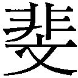
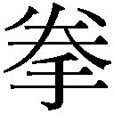
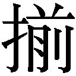

| 井伊直政と家康 (学研Ｍ文庫) | |
| 江宮隆之 | |
| (2008) | |
学研Ｍ文庫
井伊直政と家康
江宮隆之
漫画 小説 一般書籍 RAW ZIP RAR 無料 ダウンロード http://13DL.NET
本書は文庫のために書き下ろされた作品です。
序章 関ヶ原
慶長五年（一六〇〇）九月十五日（太陽暦の十月二十一日）、時間は八ツ半（午後三時ころ）を迎えようとしていた。
関ヶ原では、西軍の敗北がほとんど決まり、時折木霊のように一つ、二つの銃声が響くだけであった。
徳川家康は、勝利という奇跡を目の当たりにしたといった表情で、霧雨に靄っている戦場をじっと見つめていた。僅か半日で勝てるような戦さではなかった。それなのに実際に石田三成率いる西軍は敗れ、散りぢりになった。後は掃討作戦が展開されている。
やはり、勝ったのだなあ。そんな感慨が家康を包み込んだ。
その瞬間、また二発、そして三発、四発と断続的に銃声が響いた。感慨に浸っていた家康は、ふと現実に戻された気がした。遠くから響く鉄砲の音が家康に言い知れぬ不安を与えた。
「ダーン」
「ダーン」
さらに二発の銃声が聞こえた。銃声の方向を確かめるように見た家康は、後方に首を向けて命じた。
「誰か、あの銃声がどの陣営からのものか、調べてこい」
物見が立ち上がった。数騎が馬首を銃声の方向に巡らした。家康は、その姿を見えなくなるまで追った。
四半刻（約三十分）ほどが経った。やがて物見が戻って蹲り、平伏した。
「松平忠吉様、ご負傷」
家康は、報告を聞いて床几から立ち上がった。松平忠吉は、家康の四男である。さらに報告は続いた。
「井伊兵部少輔殿も、ご負傷」
立ち上がっていた家康が、物見の言葉に思わずよろっとした。井伊兵部少輔とは、井伊直政をいう。
「虎が......。して傷は深いのか」
家康は、直政の幼名である「虎松」の名を呼ぶ言い方で尋ねた。
「銃で撃たれた由でござります」
「やはり先ほどの音が」
家康は、自分の不安が的中したことが許せないような気になった。
「島津を追って反撃に遭い、二人ともに撃たれたとのことでございます」
「ご苦労であった。下がって良い」
家康は、物見に命じながら眩暈を覚えていた。四男の忠吉が傷付いたことよりも井伊直政が銃創を負ったことに対してであった。
「虎、死ぬなよ」
家康には、これまでも数々の戦場を常に先駆けて戦ってきた直政が、此度の天下分け目の合戦では誰よりも勇敢に先頭を切って戦い、勝利をもたらそうとしたのかその意味がよく分かっていた。
「儂の体面を保たせるために、福島の陣を抜け駆けまでしたという......」
それだけに、戦後処理にちかい島津追走にも全力を挙げたことを知っていた。
「島津動く」と知った家康が、井伊直政と本多忠勝の二人に追走を命じたのも、直政の心根を一番奥深いところで理解していたからであった。
その直政が、島津の銃に撃たれたというのである。家康は、心の奥深くで臍を噬んだ。行かせるのではなかったかも知れぬ。後悔が胸を掠めた。
「虎にとって、この傷は一体いくつめの戦さ疵であろうか。あやつ、いくつになっても儂への忠誠を形にする。命を張って形にする。いくら窘めても忠告しても聞く耳持たぬ偏屈者めが」
ののしるように呟きながら、家康の目尻に浮かんだのは、雨滴ではなく涙であった。
そうした思いを振り払うように家康は、大声を上げた。
「治部少輔（三成）の首はまだか。逃がすではない。草の根分けても探し出すのじゃ」
そう叫んでから、家康はいつもの癖で右手の親指の爪を噛んだ。戦場には、常に影の如く付き従ってきた本多正信はいない。三万五千の徳川本軍を率いて、秀忠とともに中山道を西国に向かいながら、家康の本隊よりも進軍が遅れていた。
そして今、誰よりも恃みにしてきた井伊直政が負傷したという。
家康は、底知れない寂寞感を覚えた。この妙な寂しさは一体何か。戦さには完勝したというのに。望みに望んだ天下が、今この掌中にあるというのに。胸の中にぽっかり穴が空いたようなこの虚ろさは一体何であろうか。
その正体は、家康本人には理解できない。
「弥八郎か虎でなければ、今の儂が心は腑分けできぬ」
虎とは、前述の通りに直政を指す。そして弥八郎とは本多佐渡守正信のことである。
直政と正信には共通点があった。
謀臣と猪武者という違いはあったが、二人ともに家康から最も信頼される政治家であった。徳川家では、外交、内務を二人が分け合っていた。家康には二人ともに欠かすことの出来ない人材であった。
その二人が二人ともに今、自分の傍らにいない。
その思いが、家康をして急な寂寞感に誘い込んだのかも知れなかった。
「支度をせよ。藤川台地に陣を移す」
徳川本陣であった桃配山では、何かと不便であるというのだ。しかし、家康の本心は次の言葉に表れた。
「その途次、兵部少輔直政を見舞うぞ。だが、これは他言無用。無用の摩擦を引き起こしたくないからな」
家康は、やっと我に返り自らを鼓舞するように命じた。
馬を引かせると、藤川台地への途中にある井伊直政の陣営に向かった。家康がこの戦場で馬に乗ったのは初めてであった。
雨はまだ止まない。一度は止んだが再び降り始め、ますます激しくなってきていた。馬上で濡れながら、家康はあの日のことを思い出していた。
それは、初めて直政を見掛けた時のことだった。
「あの日も、驟雨であった......」
◇
雨が強くなっていた。真冬の氷雨であった。
斜めに降り掛かる雨は、裸足で駆ける幼児の顔をびっしょり濡らしている。
「哀れな。冷たかろうに」
呟く青年武将の上にも冷たい雨が、容赦なく落ちていた。蓑さえなく、したたる雨の粒をまともに受けて、着けていた甲冑を通過して肌にまで染み込む雨に身体がぐんぐん冷えていくのが分かった。
「あの子はいくつほどであろうか」
傍らに侍る老臣が、目を細めて幼児をしばらく眺め、一度首を傾げてから答えた。
「三つか四つか、そのような年齢でありましょう」
幼児の手を引く男は、頭にも肩にも蓑笠を掛けている。しかも幼児の手を乱暴に引きながら走るように急いでいた。
「何とかしてやれぬものか」
青年武将が呟いたその後、俄に男と幼児の姿が目の前から消えた。
「どこぞに行ってしまったが、あれはいずこの者であろうか」
すると、馬の轡を取っていた小者が答えた。
「連れていた者の顔を存じております。多分、その幼児は井伊谷の領主であった井伊直盛様の御子でございましょう」
青年武将は、つい先頃まで松平元康といった。二十三歳。後の徳川家康である。
家康が見た幼児は、井伊虎松といい四歳。後の井伊直政であった。
家康の脳裏には、目鼻立ちがはっきりしていて引き締まった顎をもつ幼児の印象が刻まれた。
幼児の父親、井伊直親は先年、今川氏真によって反逆を疑われ命を奪われていた。本来ならばともに殺されるはずの嫡男・虎松は、一命を助けられてどこかに匿われたと、家康は聞いていた。
「あれが井伊殿の一子であったか」
家康は「哀れな」と再び小さな声で呟いた。井伊家は遠江きっての名家である。その名家の跡取りが、と家康は見たばかりの幼児に思いを寄せた。
さらに家康は、その幼児に自らの幼年・少年時代を重ね合わせたのであった。家康自身も幼くして父親を家臣によって殺された。あの幼児も自分同様に、父親を幼くして失ったのだ。幼児のこれからを思うと、他人事には感じられなかった。
もう一度、家康は「哀れな」と呟いた。
その瞬間、背後から鬨の声が上がった。
びくっとして家康は振り返った。味方の喚声であるのに気づくまでしばらく時間が必要だった。
家康は、二年前の永禄六年（一五六三）九月に勃発した領内の一向一揆との抗争に明け暮れ、前年の二月になって何とか鎮圧した。一揆は長期化したが、この一揆を鎮めない限り、家康にとって念願の三河平定など夢のまた夢であった。何のために今川家との縁を断ち切ったのか、意味さえなくなってしまうのである。
そしてやっと鎮圧した後には、三河の平定というこれまた難事業が残された。その三河平定をほぼ掌中にするのが、この一年後、永禄八年（一五六五）の正月である。
家康は、東三河を酒井忠次に任せ、西三河を石川家成に任せるという家臣団の二頭体制を確立させたばかりであった。だが、敵となった今川勢があちこちに軍勢を出して三河侵攻を窺っている。
家康は、この日も氷雨の中をそうした情報を聞いて出陣したところであった。
味方の鬨の声であったことに安堵した家康は、なおも降りしきる冷たい雨に濡れながら馬首を廻らせた。岡崎城に戻ることにしたのだ。
しかしその脳裏には、先ほど目の前に現れてふっと消えた幼児の表情が残ったままであった。
◇
「虎と儂との仲を、衆道であろうという者もいた。いや、未だにそう思い込んでいる者もいるらしい。馬鹿なことを。衆道などではない。もっと心の奥深いところで虎と儂とは繋がっているのだ。虎はそれを義という。そして儂は、それを信と呼ぶ。虎の義を知る者は儂のみであり、儂がその義を心より信じ、毛ほども疑ったことがないことを知っているのは、虎のみなのじゃ。それが、儂の、虎への仁にほかならぬ」
誰に言うでもなく、家康は自分に言い聞かせるように呟いている。
だが、背後に続く近習たちには聞こえない。
衆道とは、男色のことをいう。戦国武将の間では当たり前のことといわれている。いわゆるホモセクシュアルに近い間柄だが、だからといって男同士だけに興味がある者の間で行われたものでもない。
立派に妻妾を持った者でもそのような行為に走ったという。
武田信玄と二十四将の一人である高坂弾正昌信とは、公然の間柄であったし、織田信長と森蘭丸なども、そのような間柄であったと取り沙汰されている。さらには、相手は特定出来ないが生涯独身を通した上杉謙信なども、そうであったとされる。
だから、家康と直政との間を衆道という一点で捉える者がいてもおかしくはなかった。というのも、それほどに家康は直政に目を掛けたからである。
本多忠勝、榊原康政など譜代の武将たちが嫉妬するほどの目の掛け方であった。
やがて、家康は徳川軍の最前線に到着した。静かに移動した家康だった。
戦さが終わったとはいえ、まだどこに西軍の残党が潜んでいるか分からない。家康と分かれば、鉄砲で狙われる可能性さえあった。
「殿のお成りです」
近習が、小さな声で井伊直政の帷幕に伝えた。
しばらくして、幕の内から転げるように飛び出してきた者がいた。甲冑は着けたままであったが、満身創痍というほどの傷を負っている。
「これは殿！」
直政であった。
「虎よ、今度はどこに怪我をしたのじゃ」
「右肩でございます。島津の捨てがまりにやられ申した」
島津の捨てがまり、とは文禄・慶長の役（いわゆる朝鮮出兵）以来、すっかり知られるようになった薩摩・島津家の戦い方であった。
島津勢は、大将を退却させた後で、死を覚悟した将兵が一人ずつ間隔を空けて路上に座り込み、敵勢が近づけばこれを鉄砲で撃つ。射撃を終えるとその場から立ち上がって先に進む。そこで再び路上に座り込む。次の者が同じ動作を繰り返す。この運動を繰り返すことで、敵勢は時間を食う。その間に、自軍の大将を逃げ延びさせる、という戦法である。
まるで座禅でもするように屈み込むことから、かまり（屈む）、しかも捨て置かれるので「捨てがまり」と呼ばれるようになった。
「しかも、此度の捨てがまりは鉄砲を二挺ずつ使いましたから、ほれこの通り、拙者の肩を貫通した弾も二発でございました」
「それで怪我は」
「見事に右腕が使い物にならなくなりましたが。なあに、時間が経てばまた槍を取って大暴れできるようになりましょう」
島津の捨てがまりに撃たれた直後には、「井伊の赤鬼」と敵味方から怖れられた直政が出血のひどさに気を失ったという。付近の農家に担ぎ込まれて小康を得た。
「それよりも、忠吉様も鉄砲に撃たれて負傷しましたが」
「知っておる」
「では、すでに？」
「忠吉の見舞いか」
「はい」
「まだじゃ。そちの負傷の具合を尋ねるのが先じゃ」
こともなげに言う家康に、直政は瞬間、頬を膨らませた。「それは違いまする」と抗議しようとしたが、言葉の代わりに大きな目からぽろぽろと涙が出た。
「虎よ、鬼の目に涙か」
家康は、そう言うなり直政の右腕を緩やかに自分の手にとって傷口を見た。
止血してあったが、まだ血は流れている。
家康は、周囲の者も驚くようなことをした。傷によく効くとされる薬を手に取ると、自ら右手の人差し指で直政の傷口に塗布し始めたのである。
これには、直政自身が驚いた。
「殿、もったいないことを」
直政の言葉を無視するようにして、薬を塗布し終えると、
「許せ。儂のために、おぬしには百に近い傷をその身体に付けさせてしまった。虎よ、戦さは終わった。養生せよ。よいな」
家康は、そう言って立ち上がり、残った薬を直政の手に握らせ馬上の人となった。
「虎よ、本陣を移す。藤川の台地を本陣とする。あとでよいから忠吉を伴って来い」
藤川台地は、関ヶ原西南にある高地だ。この台地は、全滅した西軍の大谷吉継が陣営とした陣小屋があった。そこに家康は向かった。
直政は、その姿が消えるまで見つめていた。
「そういえば、殿は」
直政は、家康の姿が視界から消えた時に初めて、家康が島津勢の大将であった島津維新入道（島津義弘）について、討ち取ったのか、捕縛したのか、はたまた逃したのか、尋ねようとしなかったことを思った。
それも家康の、直政に対する労りであった。
新しく本陣となった藤川台地には、本多忠勝ら家康にとって大事な旗本が集まった。秀忠の軍とともにいる榊原康政と負傷した直政のみがまだ参上していない。
この後、家康は上機嫌を演じた。いや、本当に上機嫌であったのかも知れないが、東軍の諸将に対しては終始にこやかな微笑みで対した。
陣所を藤川の台地に移して最初に現れたのは黒田長政であった。
「戦勝の祝賀を」
陣所に入ってきた長政を見た家康は、ことさらに大仰な対応をした。座っていた床几から立ち上がって近寄り、長政の手を取ると三度押し頂いた。
「これは甲州殿。此度の勝利は、ひとえにあなたのお働きによるものでござる」
これは、長政が武断派といわれた豊臣恩顧の武将たちはじめ多くの武将に工作を働きかけなければ、これほどたくさんの豊臣系の武将が家康に加担しなかったであろう、ということを言いたかったのである。長政は、この時に「甲守」であった。「甲州殿」と呼ばれたのはそのためである。
「甲州殿。あなたの働きがなかったならば、私の関ヶ原勝利は、石田三成のものになっていたろう」
というのであった。家康は、長政に自らの佩刀（吉光作）を外して与えた。
「わが徳川家の子孫の末の末まで、黒田殿の家を粗略に扱うまいぞ」
とまで言った。
戦後の論功行賞で家康は、長政に筑前福岡に五十二万三千石という封土を与える。
後に、長政がこの折の喜びを父親の黒田官兵衛如水に伝えた時のことであった。官兵衛はこう尋ねたという。
「内府（家康）が押し頂いたおまえの手は右手であったのか、左手であったのか」
「この右手でございます」
と答える長政に、官兵衛はさらに尋ねた。
「ならば、その時に空いていたそちの左手は一体何をしていたのだ」
暗に、官兵衛はその時こそ家康を刺し殺すチャンスではなかったか、と言ったのである。長政が、酢を飲まされたような表情になって父親を仰ぎ見た様子までも伝えられることになる。
次に家康の本陣に祝賀にやって来たのは、福島正則であった。
家康は、岐阜城攻撃の一番槍を褒め称え、さらに関ヶ原合戦の福島隊の先鋒としての戦いぶりを賞した。
諸将は、続々とやって来た。加藤嘉明が来た。そのすぐ後に、黒田長政に付き添われる格好でこの日の最大の手柄とされた小早川秀秋が、おずおずと家康の前に現れた。
本多忠勝は、ぷいっと横を向いた。家康は、忠勝を窘めようとはしなかった。
家康は、にこりと秀秋に笑いかけて言った。
「中納言殿、この度西軍を裏切ったために我らは勝利を得ることができた。その戦功は莫大なものがありますぞ。さすがに小早川殿の世継ぎと感じ入った次第じゃ」
中納言とは、秀秋の官位をいう。家康は、そこまでにこやかな表情で続けたが、一旦言葉を切ると笑顔を引っ込めて睨むような目で秀秋を見た。それから、
「この後、如在あるまじく候」
と、決め付けた。「如在あるまじく」というのは、二度とこのような裏切りをするのではないぞ、とたしなめたのである。
背後に控えていた福島正則が、困ったような顔をして俯き、さらに顔を真っ赤にした。怒っているのか、恥ずかしいのか、周辺の武将には理解できなかった。だが、正則はここにいる誰よりも故豊臣秀吉の恩顧を受けており、秀秋が秀吉とは直接血の繋がりがないとはいえ豊臣家の縁者の一人であることを一番肝に銘じていたのだった。
藤堂高虎は、黙って秀秋の背中を見つめている。その顔には皮肉な表情が浮かんでいる。
秀秋は、毛利三本の矢の一人、小早川隆景の養子になっていた。隆景亡き後も小早川家の当主として君臨したが、関ヶ原では最も大事なところで石田三成率いる西軍を裏切って東軍に味方した。
もしも、この時小早川軍が西軍の一角を守り、東軍と戦っていたならば、今この場所に座って勝利の祝賀を受けているのは、三成であったに違いなかった。
家康は、自分の首をそっと触りたいほどの思いで秀秋と対峙したのだ。秀秋は自分がこの戦さでどれほどの立場にいたのかさえ意識していないらしかった。
それが証拠には、家康の前に出てもおどおどするばかりで、ひと言も言葉を発することができないままであった。
しかし、家康は秀秋の小早川家に西軍の大将ともいえる存在であった宇喜多秀家の領地（備前、美作）を与えた。合わせて五十万石という所領である。ところが、秀秋は西軍を裏切ったという良心の呵責に責めさいなまれて心の病を発し、二年後の慶長七年（一六〇二）に狂死する。
黒田長政は、黙り込んでいる秀秋をちらりと見てから、
「中納言殿（秀秋）は、明日の佐和山攻めには先鋒を承りたいとの希望でございますれば、何卒この長政とともに、先鋒をお申し付け頂きたい」
取り繕うように懇願した。佐和山攻めとは、三成の本拠である佐和山城を攻めることをいう。
家康は、黙って頷いた。
戦勝の祝賀に来る武将の数は、それからも引きも切らなかった。
ほとんどの武将が祝賀に訪れ、自分の陣屋に戻ったその最後に現れたのが、直政であった。家康の四男である松平忠吉を伴っていた。
忠吉は直政の娘を娶っており、二人はだから婿と舅の間柄でもある。
「おお、忠吉。負傷したそうだな。初陣で名誉ある戦さ疵とは、目出度いことじゃ。よく働いた証左じゃな」
家康が、右手の包帯も痛々しい我が子に、そんな声を掛けるのを直政は軽く頭を下げて聞いていた。
家康の声が、そんな直政の頭上に下りてきた。
「直政、大丈夫か。傷は痛まぬか」
「はっ。薬が効いてきましたようで」
誰が付けてくれた薬だなどとは言わない。家康と直政にはその会話だけで十分に分かり合えた。
家康も、直政もさきほどの見舞いについては口を噤んでいる。
「戦後処理のこともある。本多忠勝と井伊直政の二人はここに残るように。後は、明日からの西軍掃討の戦さの準備をせよ。また、未だに見つかっておらぬ石田、小西、宇喜多、長宗我部などを草の根分けて探し出すべく、いま一度きつく命を下せ」
酒井忠次、榊原康政、本多忠勝、井伊直政を合わせて「徳川四天王」といわれていたが、すでに酒井忠次は、この四年前に病死していたし、康政はまだ関ヶ原に到着していない。
家康は、忠勝、直政の二人をこの場に残した。しかし、忠勝よりも戦後処理などの諸問題の解決に最も頼りになるのは、直政であった。
だが、負傷した直政のみを残すことに家康はためらいがあったのだ。本多正信でもいればよかったが、未だに正信が補佐して進めた秀忠指揮による別働隊の三万八千は、どこにいるのか行方さえ分からない。そこで忠勝をも残したのであった。
忍びによると、信州上田の真田昌幸・信繁（幸村）父子を攻めあぐんでいたという。
──正信や康政がいながら、何という失態を演じて見せたのじゃ。天下分け目の合戦に間に合わぬとは。そのために、この父がどれほど苦労したか。秀忠には分かっておらぬ。
家康は、そう叫びたいほどであった。
だが、そんな心の中を四天王（この時点では二人だが）といえども見せるわけにはいかない。家康は、落ち着いた様子で二人の顔を交互に見てから口を開いた。
「よくもまあ、この陣容で勝てたものじゃ。東軍とはいえ、中身は西軍と同様に亡き太閤殿下恩顧の武将ばかり。一つ間違えば、儂が治部少輔（三成）の立場になっていただろう。それを思うと、ぞっとするわ」
それから家康は、じっと直政を見て、視線をすぐに忠勝に移した。
「おぬしらがいてくれたから良かったようなものの、一人でも欠けていたら、儂は恐ろしくて本陣でじっとしてはおれなかったであろう。儂自身が先陣を切って戦っていたやも知れぬ」
直政は、そんなことを言う家康の顔をじっと見返した。
本心半分、我らへの諂い半分。直政はそう見た。だが、家康の心の半分である本心の部分を、直政はことさらに見ようとした。
「先年亡くなった忠次を含めて、おぬしらは儂にとって四天王である。恐らく他の武将が見れば、羨ましくて堪らぬ存在であろうな」
これは、家康の本心であった。
四天王とは、仏法を守護するためにある持国天、増長天、広目天、多聞天をいう。いずれも甲冑をまとった武将の姿であり、その手には仏法を守るための武器などを持っている。それが四天王の特色であり、広目天のように筆と巻物を持つ者もいる。また多聞天は、毘沙門天の名前で知られている。
だから四天王とは、武人でなければならなかった。だからこそ、本多正信など吏寮派とも官僚ともいわれる人々は、その数に入っていない。
いくつかの説がある。この時代に「徳川四天王」などとは呼ばれず、後世になって合戦の場面で華々しく戦った四人を、四天王になぞらえてこう呼んだ、ともいうし、そのころすでに徳川家の内外で四人を特別な存在としてこう呼んでいた、ともいう。
しかし徳川四天王とはいっても家康にとっては、四人ともにそれぞれに格別な思い入れがあって、十把一絡げにできるものではなかった。
例えば四天王の最年長であった酒井忠次などは、大永七年（一五二七）の生まれである。天文十一年（一五四二）生まれの家康よりも十五歳も年長であった。家康にとってさえ、忠次とは兄のような年齢差があった。
むしろ三河を統一していく過程で、東三河をまとめる頭領としての存在であり、若かりし日の家康には最も頼れる存在が忠次であった。では西三河の旗頭としての石川数正はどうであったか。後に、家康から離れて豊臣秀吉の陣営に参加してしまう数正を、家康も当然徳川の諸将も「四天王」などという位置づけにはしたくなかったことが考えられる。
家康には残念ながら、慶長元年（一五九六）に忠次は病没している。
ちなみに、本多忠勝、榊原康政はともに天文十七年（一五四八）の生まれであって、家康より六歳年少になる。井伊直政は、さらに下で永禄四年（一五六一）生まれとあって、忠勝、康政よりも十三歳も年下ということになる。
こうした年齢の開きもあって、徳川四天王が後世になってから徳川草創期の活躍者として形作られた、という説も肯定できようというものであるが。
逆説的にいえば、こうした年長者に混じって「四天王」の一人に組み入れられた井伊直政の存在は、なおさらに光り輝いて見えるのである。
二人を前にして、家康はやっと本音が言える気楽さを取り戻していた。
「さて、西軍との決戦は終わったが、本当の戦さはこれからだ」
家康の目がすっと細くなり、瞳の部分が妖しく光った。
二人は、家康が何を言おうとしているのか、すぐに理解した。
大坂にはまだ秀頼が残っている。その秀頼を守ろうとする者は、今日東軍として戦った武将たちの中にも多い。
「今日の戦さは、石田治部少輔憎しで戦った者が多かったのだ。しかし明日からの戦いは違う。その処置を間違うと、今日の友が明日の敵になろう。それを彼らにさせてはなるまい」
彼らとは、豊臣恩顧といわれる武将たちのことを指す。
「この戦さの処置は、これまでで最も難しい。誰にも文句を言わせないようにして、しかも豊臣秀頼をいかに取り込むかである」
直政は、家康がこの時、本気で秀頼を生かすつもりでいるのかどうかを測った。それは忠勝も同様であったろうが、口には出さない。
「大谷吉継の討ち死には多くが見知っているので先ず間違いなかろうが、他の西軍の武将はほとんどが戦線から離脱して、発見されていない。もしも治部少輔が生き延びて、大坂城に逃げ込み、秀頼を押し立てて反撃を考えているとしたら、これは大事になろう」
忠勝が直政に向かって言うようにして、自分の意見を述べ立てた。
家康は目を剥いた。
「だからこそ、明日中に佐和山城を囲み、これを落として三成の戦意を完全に挫くほかはなかろう」
直政が、そう応じた。
「関ヶ原から佐和山城まではほぼ六里（約二十四キロメートル）。日の出前に出立すれば明日の午後には、城を囲めるでありましょう。さらに一隊は北国街道を進み、伊吹山方面に逃げ込んだと思われる西軍の諸将を京・大坂に脱出させないようにしたらどうでありましょうか」
直政はそう続けた。直政は、この伊吹山方面には三成はじめ、敗れて生き延びた多くの西軍の武将が潜んでいると考えたのだった。
家康が、大きく首を振って頷いた。家康も同様の意見であった。
「先ず、三成の逃げ道を塞ぐことではないか」
直政の意見は、的を射ていた。
「それがしに、佐和山城攻撃の先鋒をお命じ頂きたく。是非とも」
直政の言葉に、家康は驚いたような表情になった。おまえは重傷を負っているではないか。そう言いたかった。しかし、直政は涼しい顔をして続けた。
「その際には、忠吉様をお守りして再び井伊の赤鬼が先駆けまする」
関ヶ原合戦の引き金を引いたのは、福島隊を出し抜いた井伊勢であるとの風聞を自ら裏付ける発言であった。直政には、ある考えがあっての「抜け駆け」であった。
だから、この問題で直政は家康から「軍規違反」として咎められてはいない。
「分かった。だが、先鋒は小早川と黒田である。そなたは軍監として佐和山攻めに参加すべし。よいな、それ以上の無理は禁物じゃ。これは命令だぞ」
家康は、そう言ってからじろりと直政を睨み据えた。軍監というのは、戦さ目付のことをいう。つまり家康は、直政を前線に出したくなかったから、そういうことにしたのであった。
直政は、頭を下げて家康の自分への思いやりを噛み締めた。何よりも、家康の顔を見ると、痛みまでも薄らいでいくほどの家康への愛惜が直政にはあった。
自分の帷幕に戻った直政は、右肩の傷にそっと左手で触った。それから直政は、
「あの御方は、誰よりも大事なお人じゃ。わが子より、妻妾たちより、儂には大事なお人じゃ」
と、今の自分の思いを口にした。
誰が聞いているわけではない。誰に語ろうとしたわけでもない。ただ、自分の中にある家康への思いは、幼い日の出会い以来全く変わっていないことを、この日改めて直政は感じたのであった。
直政のその思いは、実は家康と直政の二人だけにしか理解できないものであった。
第一章 邂逅
井伊家の領地井伊谷は、浜名湖の北岸、旧引佐郡引佐町（静岡県浜松市）にある。
平安中期のことである。
藤原北家の庶流で一条天皇の頃、同じ北家の出身であった藤原共資が遠江守に任じられてこの国に赴任した。共資は、井伊谷を本拠として勢力を誇った。
井伊家の始祖共保には、不思議な出生譚が伝えられている。
ある元旦のことであった。井伊谷にある八幡宮の神主が社殿に詣でる途中、神田の傍らの御手洗井戸から赤子が生まれ出ずるのを見た。
驚いた神主は、奇瑞と感じ入ってその赤子を取り上げて、わが子同様に育てた。その神の子が七歳になった折のことである。遠江守である藤原共資が、その奇瑞譚を聞きつけて神主の許を訪れた。
「神の子がいると聞いた、その神の子を儂に養子としてくれぬか」
神主は、この日のあることを予期していた。天皇家に連なる藤原北家の守護である。神主に否やはなかった。
共資にもらわれた神の子は、共保と名付けられた。この共保が出生地の井伊谷にちなんで「井伊氏」を名乗る。共保は、武勇抜群であり、人間としての器量も大きかったといわれる。
井伊家の旗印が井桁であるのは、この共保の奇瑞伝説によるものであり、さらには家紋としての橘も、神主が井戸の傍らにあった橘を産着の紋にしたためであると伝えられている。
その後、遠江の守護は替わり、室町時代になると斯波氏が入国する。井伊谷はそのまま井伊氏が支配したが、守護の斯波氏の配下にあった。その後、代を重ね十三代の直平の時代に初めて「兵部少輔」を称した。
この兵部少輔直平が、直政の曾祖父である。従って、直政は井伊家の十七代目になる。
室町時代の応永年間（一三九四～一四二八）というから、応仁の乱（一四六七～七七）よりも半世紀ほど前のことである。
上野国新田郡得川郷（群馬県太田市）に一人の阿彌がいた。時宗の遊行僧である。寺を持っているわけではなく、「南無阿弥陀仏」を唱えて諸国を流浪した。
「徳阿彌」と名乗ったこの遊行僧が、応永年間に三河国に入った。念仏を唱えて食を乞い、銭を乞うた。田舎には、こうした遊行僧を大事にする人と危ぶむ人とがいた。遊行僧は、諸国を回るので話題に豊富で、話さえ上手であれば土地の有力者によって二ヶ月、三ヶ月の逗留も許された。
逆に、時には窃盗を働くこともあり、場合によってはその家の妻や娘と関係を持つこともあった。そんな油断のならぬ者、が遊行僧であった。
徳阿彌が汗を拭き拭き上り詰めた小山の頂上に、比較的開けた場所があった。そこを酒井郷という。徳阿彌は、そこで勢力を持つ（といってもたかが知れているが）土豪の酒井家に入り込んだ。
酒井家には娘がいた。その娘と通じて男子をもうけた。
坂をさらに越えると、隣接する集落がある。松平郷という。坂の頂上の平らな場所に一本の松の大木があった。ゆえに集落を松平といったらしい。その松平を領する土豪は松平氏であった。徳阿彌は、この松平氏にも出入りして、一人娘と通じてしまった。ここでも一人の男子が生まれた。
松平氏は、代々「太郎左衛門」を名乗っている。徳阿彌は、この松平太郎左衛門に婿入りした。徳阿彌の名を捨てて、この日から「松平親氏」と名乗りを変えた。後に、太郎左衛門を継承する。
親氏と名乗った徳阿彌は、新田流の源氏を標榜した。
田舎のこととて、その主張を確かめる手段はない。だが、詐称であっても頭に頂くには都合がよい。松平氏と酒井氏は、徳阿彌を間に挟んで連合した。
それだけ、徳阿彌つまり松平親氏に人々を統率する手腕があった証拠であろう。
戦さなど滅多にない山村で、親氏は兵を挙げた。
隣村の林添という地を治めていた藪田某を討ち取ると、さらに進んで額田郡の中山七名（愛知県岡崎市）という土地を奪った。ここには狭いながらも田畑があった。
この中山七名を基盤として、松平・酒井連合軍（というほど強大なものでもないが）は、周囲を侵していった。連合軍は郷式城という砦のような小さな城を造って、ここに拠った。親氏は、道を開き、橋を架け、杣人を農民に仕立てた。
その後の過程で、後年「十八松平」とも呼ばれる松平党ができ上がる。
そして家康は、この親氏を徳川氏の祖として九代目に当たる。
松平一族は、三河の国に領土を広げていった。文明三年（一四七一）には、三代の信光が安祥城を攻め取ると、一転して岡崎に向かい岡崎城をも落とした。
ここに松平一族の基礎固めが完成したことになるが、ここからの道のりはさらに長く険しい。その間に、国境を接する今川勢や尾張勢とのいざこざもあった。さらに一族間の内紛などもあったが、家康の祖父にあたる清康が家督を継いだのは十三歳の時であった。
清康は勇敢さに富み、そのうえ慈悲深い性格であった。戦いには先頭を切って走り、敵を倒した。安祥から岡崎に拠点を移したのも清康であり、家康が浜松城に移るまで松平党の本拠は岡崎城であり続けた。
ところが、この清康が家臣に殺されるという事件が起きた。
天文四年（一五三五）十二月、織田信秀を攻めるために尾張守山に陣を構えていた清康が、家臣の阿部弥七郎によって背後から刺殺されたのである。理由はいくつか伝えられるが、定かではない。ただ、清康にとって叔父に当たる松平信定との内紛が尾を引いていたものらしいことは確かである。
清康は、この時二十五歳という若さであった。そして、家康の父である広忠はまだ十歳の少年である。清康突然の死を「守山崩れ」と呼ぶ。
広忠は、清康の叔父の信定らによって岡崎城から追放されて一時は伊勢や遠江などを流浪する身の上になった。しかし、岡崎城に残った家臣団や今川義元などの援助があって、何とか岡崎城に戻ることができた。
広忠を中心にして再び松平一族は結束を固め、今川氏と同調して織田信秀と戦うことになった。安祥城は織田側の手に落ち、広忠の岡崎城が織田によって脅かされた。
今川と織田は三河を挟んで対立し、広忠はじめ三河の中小豪族たちも今川か織田か、どちらかに付いて自家の安全を図ろうとしたのであった。そうした中で、広忠は律儀に今川に付くことを宣言し続けた。事実、戦さでも今川の先鋒となって織田と戦ったのである。
◇
家康は、天文十一年（一五四二）十二月二十六日、岡崎城で誕生した。父親は、松平八代目にあたる広忠、母は刈谷水野家の娘、於大である。家康は、竹千代と名付けられた。
三河の地は、西から新興勢力ともいえる織田信秀に、東からは守護大名の今川義元に、それぞれ領土を狙われていた。織田方には安祥城を奪われ、今川からは同盟を強要されていた広忠は、これまでの経緯から今川家とのつながりを重視してことに当たった。
だが、於大の兄である水野信元が織田と通じたために、広忠は家康を産んだばかりの妻於大と離別せざるを得なかった。
天文十四年（一五四五）九月、広忠は安祥城を奪還しようとして失敗、逆に織田に惨敗した。矢作川西部は完全に織田に帰属することになり、松平氏は岡崎城に孤立した。
ここに至り、天文十六年（一五四七）、広忠は今川家のさらなる支援を求めるために非情な決断をした。嫡男の家康を駿府に人質として送ることであった。それは、今川との結び付きをさらに強化することであり、実態は今川氏との主従関係を明確にさせることであった。
「よいか、竹千代。そなたは岡崎城と松平一族を救うために駿府に赴くのじゃ。分かるな。父が迎えに行くまで、駿府の今川義元殿の許で立派に父の代わりの役目を果たすのだぞ」
まだ六歳の家康は、こくりと頷いたが、父親の言葉の意味は大半も分かってはいなかった。しかし、自分が駿府に行くことが父やお城を救うことだとは、十分に理解した。
「先に母から引き離され、今度は父親からもそして生まれ育った岡崎から出されてしまう。なんと不憫な」
乳母や傅役などが涙を流した。幼くして両親と別れざるを得ない、家康の不憫さに泣いたのであった。
家康は、僅かな供の者に守られて出発した。八月初旬のことである。岡崎を出た一行は、宝飯郡西郡（蒲郡市）から船で渥美湾を縦断して進み、渥美郡の田原付近に上陸した。
「ここからは陸路を駿府まで行きますが、足は大丈夫でしょうか」
傅役の数人が家康を労った。家康は、黙って頭をこくりとしたのみであった。
「この先には、殿の新しい奥方のご実家がございます。そこで一休みいたしましょう」
殿の新しい奥方の実家とは、家康の母親である於大を離別した後で父親の広忠が迎えた妻の実家、戸田康光をいう。康光は、この渥美郡田原の田原城主であった。
ところがここで家康を危難が襲った。
戸田康光が、あろうことか家康を捕らえると、そのまま織田信秀の居城である尾張古渡城に送ってしまったのである。一行は慌てたが、どうにもならない。
家康を押さえた信秀は、広忠に対して「今川からの寝返り」を要求した。しかし広忠はその要求に従わない。家康の命と引き替えに、岡崎城と松平一族の運命を織田側にゆだねるわけにはいかないのだ。
それどころか、広忠は家康が織田側の熱田に押し込められていることを知りながら、今川の先鋒として織田方と戦った。第二次小豆坂の戦いなどでは、織田の東進を阻止している。
だが、松平の宗家を再び悲劇が見舞った。
天文十八年（一五四九）三月のことである。広忠が、岡崎城内で家臣の岩松八弥によって刺殺されるという事件が起きた。広忠は二十四歳。父親の清康が弑逆された時とほぼ同様の年齢である。二代にわたって、松平宗家に同じような出来事が起きたのである。
この事件によって、岡崎城は主を失った。嫡男の家康は織田の人質になったまま、熱田に留め置かれている。
岡崎城の混乱を、今川と織田が虎視眈々と狙った。そして混乱に乗じていち早く動いたのは、今川義元であった。義元は、松平宗家に代わって岡崎城を接収すると今川家の重臣を入れた。
同じ年の十一月、今川軍が安祥城を囲んだ。織田側の城将は、信長の兄にあたる織田信広であった。この戦いで今川軍は安祥城を落とし、信広を捕虜とした。当然、三河の岡崎衆も戦さには加わっている。
「竹千代と織田信広との捕虜交換を」
と、今川義元の軍師である太原崇孚雪斎が口にした。織田側もこれに応じて、家康はやっと解放された。ほぼ二年ぶりに岡崎に戻った家康は、すぐに父の墓に詣でた。
「これが父上の墓か」
家康は唖然とした。岡崎の松応寺で家康が見た父親の墓は、ただ土饅頭があるだけのものであったからだ。墓石、五輪塔どころか、卒塔婆さえもない。
家康は子ども心にも哀しくなった。住職に依頼して小松一株をもらうと、その土饅頭の上に植えた。
「これを父上の墓標代わりにしたい」
八歳の子どもの言葉である。後にこの小松は大きく成長して老松になる。
その後、数日して家康は今度は駿府に送られた。本来の今川方の人質になるためであった。
駿府に着いた家康は今川義元と面会した。
品の良い、下ぶくれの顔に大きな目、ゆったりした所作の家康に、義元は微笑みかけた。家康は、その微笑みに鷹揚に軽く頭を下げて応じた。
「竹千代殿、苦労を掛けたのう。父上のことも残念であった。今日よりは、この義元の子になったつもりで、駿府での暮らしを楽しめばよろしかろう」
義元はそう言った。しかし、それはあくまでも上辺のことであった。その証拠には、岡崎城は本来戻ってきた家康を当主とすべきであるのに、義元は返そうとはしない。そればかりか、人質として家康を引き取ってしまったのである。
それは、岡崎城が敵である織田との最前線にあったからだ。そこで常に戦わされるのも三河岡崎衆であった。
三河岡崎衆は団結が強固である、といわれたのは、この二代にわたって主君を暗殺で失ったことと、幼君である家康を人質として織田に、今川に奪われていたことに因がある。岡崎衆は、いつか家康が岡崎城に帰国する日を待ちわびて、今川の先鋒として戦い続けたのである。
家康は、この駿府で青年になり、成人し、妻を迎えて、嫡男、長女を得た。
妻は、築山殿という。義元の姪にあたる。嫡男は信康、長女は亀姫。二人とも聡明な子であった。
元服した家康は、名乗りも竹千代から松平次郎三郎元信とした。「次郎三郎」は、祖父清康の名乗りでもある。家康は、後に元信から元康に改めている。
成人した家康は、今川方の武将として戦った。
永禄三年（一五六〇）五月、義元は駿河、遠江、三河の兵を動かした。上洛を目指すその兵団に家康もいる。家康は、その先発隊として出陣した。
隣国の敵は、織田信秀から息子の信長に代わっている。家康は、織田軍の武将佐久間盛重が守る丸根砦を落とした。今川軍は、鷲津砦も落として意気が揚がっている。
「好事魔多し」
後になってこの言葉を知った家康は、その通りであったと思った。
この時、家康は義元の命令で大高城に入っていた。城代であった鵜殿長照と交代してのことであった。
五月十九日、義元は桶狭間方面に軍勢を進めた。その途中、田楽狭間で小休止した。折からの雨を避けての小休止でもあった。そこに、信長を先頭とする二千の軍勢がやって来た。
その軍勢の姿は、今川軍によって捕捉されていた。だが、今川軍は動きを開始しない。臨戦態勢にも入らない。当然であった。信長は、事前に義元に降伏を申し入れており、義元が進んでくる途中で面会することになっていたのである。
今川軍は、織田の二千はそれであろうと思い込んでいる。
信長もそのつもりであった。しかし、折からの雨が強くなった。周辺は雨で覆われて見えない。決断力の早い信長は、今こそ義元を討てる、と判断して降伏から一転、攻撃に移った。奇襲である。
本陣を襲われた今川軍は、義元を討ち死にさせてしまった。これによって、上洛途中の今川軍は瓦解した。
家康が、その事実を知ったのはその日の夕刻であった。
「駿府の御屋形様が討ち取られたというのか。噓であろう。信長とは、織田の信長であろう。僅かな兵力しか持たぬ信長が、そのような大胆な行動を取るとは」
家康には信じられなかった。義元の討ち死にも、信長の大胆さも、どちらも信じられなかった。
義元の死を知った家康の行動は、しかし素早かった。義元の死を知った今、大高城をこのまま守りきれるかどうか自信はなかった。
家康は、すぐに駿府に残っていた義元の嫡子・氏真に対して「御屋形様の弔い合戦」を勧める使者を送った。同時に、岡崎城に向かった。
「岡崎に戻る好機を天が与えてくれたのだ」
家康は呟いた。本来ならば駿府に戻るべきであったが、家康は岡崎を目指した。氏真に対してはさらに使者を送って言い訳をした。
「岡崎城を守らねば、織田軍に三河を席巻されてしまいます。命を懸けて岡崎を、そして三河を今川家のためにも守りますから」
家康が一番心配しているのは、駿府に残して来た妻の築山殿と信康の存在であった。というのも、氏真は疑り深い性格であった。もし、このまま家康が岡崎城に向かったことを知れば、家康が今川家を裏切ったと思うことは必定であった。
だが、すぐに連れ出して岡崎に連れてくるわけにも行かない。そのために弔い合戦を勧め、さらには岡崎城に入る意味合いを、使者を通じて伝えたのであった。
「帰るぞ、岡崎に」
家康の言葉に、従っていた岡崎衆が大声を上げた。その喚声は、うねりになった。
二年後、家康は信長と「清洲同盟」と呼ばれる秘密同盟を結んで、今川氏真に抗した。妻と子は、天文十八年に太原崇孚が人質交換で家康を織田側から取り戻したやり方を真似て、取り返した。
心置きなく家康は信長と同盟できたのである。
この同盟は、信長が死ぬまで続くことになるが、その最初は双方にとって必要な同盟であったからだ。
美濃の斎藤義龍との抗争を控えている信長は、背後の三河を安全なものにしておきたかった。家康も岡崎を守り同時に三河全体を領土とするためには、今川の家臣同然の立場では実現は困難であったのだ。
両者の思惑が見事に一致したのが、清洲同盟である。
家康が信長に接近し、今川氏真に公然と反旗を翻した永禄四年（一五六一）の二月九日に、直政が誕生した。
直政は幼名を「虎松」。父は井伊家十六代の井伊直親、母は井伊一族である奥山親朝の娘である。
永禄四年というこの年は、家康が今川方の三河長沢城を攻め落とし、三河東条城の吉良義昭を攻めて降伏させ、西三河を平定している。また、遠く信州川中島では、今川と同盟していた武田信玄が、越後の上杉謙信と激戦を演じた年でもあった。
直政が生まれた時にも、父親の直親は戦場にあった。直親は、今川の武将として戦地で嫡男の誕生を知った。
「男の子であったか」
直親は喜んだ。というのも井伊家は代々男児が少なく、直親自身も男児のいない井伊宗家に養子として入っていた。直親の父親直満は、宗家の三男として生まれていた。
この時代の井伊家は、今川氏の属将としての立場にあった。
井伊谷に領地を持ったままであったが、往年のような勢いは井伊家からは失われていた。勢力を盛り返そうとした十三代目の直平は、直政誕生の当時もなお健在であった。
しかし、井伊家の男たちは戦場で華々しく討ち死にしたり、あるいは謀殺されるなど、直平を除いて長命ではなかった。
直平の嫡男は直宗といったが、天文十一年（一五四二）正月の、今川義元による三河田原城攻めに従って、ここで討ち死にした。
その二年後、直宗の弟である直満（直政の祖父）・直義の兄弟は、直満と不仲であった家臣の小野道高の讒言によって、駿府で義元に謀殺されている。小野道高は、「兄弟は甲の武田と通じている」という讒言を義元に行い、それを信じた義元が兄弟を駿府に呼びつけた上で謀殺したのであった。
宗家を継いだ直宗の嫡男・直盛は、桶狭間合戦で義元に従って奮戦、討ち死にを遂げた。
直盛には男子がなく、長女のみであった。直盛は、この長女を「次郎法師直虎」と名付けた。名前だけ見ると男である。しかし、この直虎に宗家継承をさせずに、叔父・直満の子であり自身には従兄弟になる直親を養子としていた。
だから、直盛は直親に嫡男が誕生したことを知ることなく、桶狭間で死んでいるのである。
しかし、直盛や直親にとって祖父に当たる直平は、七十三歳で健在であった。
自分よりも早く子どもたちが死に、孫までが討ち死にし、残る井伊家の人間は僧籍に入った次男・南渓と、孫の直親だけになっていた。
そこに生まれた曾孫である。直平の喜びは甚だしいものがあった。
「この子だけは何としても一人前の武将として育て上げるのじゃ。それが我ら井伊家の人間にとって残された使命でもある」
そんなことまで言って、直政の成長を祈る曾祖父だった。
喜びがあれば、必ず悲しみがある。
井伊家を再び謀殺の悲劇が襲った。この点、祖父、父と二代にわたって家臣に殺された松平宗家（徳川家）に似ている。
直政の父親・直親は、引馬城（後の浜松城）に移ろうとした。結果は今川氏真によって拒絶されたために、実現しなかった。そんな時に、家康から誘われた。
永禄五年（一五六二）のことであった。
家康は、井伊直親が勇敢な武将であり、血統も家柄も申し分ないことを知っていた。今川家にいた当時は、特別に親しかったわけではないが、その武勇を自分のために使いたいと望んでいた。
そこで、秘密裡に直親に使者を送って「今川から松平（徳川）に寝返るように」と勧めたのであった。直親自身、氏真の能力に限界を感じていた。
「このままでは今川家も長くはあるまい」
そう読んでいた。家康の誘いにも魅力があった。
その秘密を、小野道好なる家臣に知られてしまった。脇が甘かったのであろう。小野道好は、十八年前に直親の父親と叔父とを讒言して義元に殺させた小野道高の一族であった。「直親、松平に内通」という讒言が、氏真に送られた。
怒った氏真は、直親を駿府に呼びつけた。直親は、その申し開きに向かう途中、氏真の命を受けた今川の武将で掛川城主の朝比奈泰能に襲撃されて、一命を落とした。
直政は、祖父と父の二人を非業の死によって失ったことになる。いずれも小野一族が絡み、その命を奪ったのは今川であった。
「何と、殿が殺害されたというのか」
直親の妻、奥山殿の顔から血の気が失せた。
「謀反の疑い」ということであれば、早晩この井伊谷にも今川の軍勢が押し寄せるは必至である。とはいえ、井伊谷には兵もほとんど残っていない。しかも残った家臣たちも主を失った今、どうすればよいのか分からず、右往左往するばかりである。
「虎松が危ない」
奥山殿は、咄嗟に嫡男の命を救うことを考えた。自分の命はどうなってもよい。直親にとって一粒種の虎松だけは生き延びさせなければならない。
「ともかく虎松を逃すことじゃ」
七十四歳になっていた曾祖父の直平が、沈痛な面持ちで言った。奥山殿は、黙って頷いた。だが、氏真の動きの方が一歩早かった。
兵が井伊谷に入るとすぐに、井伊家の館を蹂躙しようとした。
直平が門内で槍を持ち、仁王立ちになった。
「何人といえどもこの門内に入るを許さぬ。井伊直平が、相手をいたす」
そこに騎馬武者がやって来て、馬から下り立った。
「井伊殿、新野親矩でござる。館の方々に無礼を働かぬように兵どもには言い付けてありますから。どうか、手向かいをせぬようにお願い申す」
新野親矩は、直政の父親とは従兄弟になる宗家の嫡男であった直盛に妹を嫁がせていた。一人娘の次郎法師直虎は、親矩の姪にあたる。しかも、親矩は今川一門の重鎮でもあった。
「此度のこと、私にとっても不本意そのもの。しかれども新御屋形様（氏真）の命令とあればやむを得ず、井伊谷に向かった次第」
「しかし、新野殿。新御屋形様は我が曾孫の命までも奪おうという腹ではあるまいか」
「さて......」
親矩は、一瞬怯む様子を見せた。直平は、口をへの字に結んだまま、
「曾孫の命は、我の命よりも重し。井伊家は一門の命に替えてもこれを守る所存でござる」
「井伊殿、曾孫・虎松殿の命、必ずやこの新野親矩が守りまする。天地神明に懸けてお誓い申す。是非とも、井伊谷をお渡しくだされ」
「しかし、曾孫の身柄までは渡せぬ。そこもとを信じぬわけではない。だが......」
「必ず、守りまする。私の命に懸けても。新御屋形様がどのように命じようと、私は虎松殿をお守りいたしますから」
直平は、親矩の言葉を信じることにした。
親矩は、その言葉を実行した。氏真は、直政を殺して、残る井伊谷から井伊一族を追放しようと決めていたが、一族でもある新野親矩の懇願に屈した。
「分かった。そなたの責任において管理するならば任せよう。幼い子ども故に問題はなかろうが、万一にも取り逃がすようなことがあったなら許さぬぞ」
そのうえで、井伊一族の惣領は直平の曾孫にあたる次郎法師直虎と決めた。しかし、
「直虎殿は女性。いずれ虎松が成長した暁には、虎松を井伊一族の後継者にしたいと考えておりますが」
という親矩の言葉には、首を縦に振ろうとはしなかった。
しかも氏真は、七十四歳になっていた直平を駿府に召した。井伊一族を代表して戦陣に加わるように、というのであった。
いかに有能な武人といえども七十歳を超えた老人に甲冑は重かろうし、槍だって持つのは辛いはずであった。だが直平は、歯を食いしばっても一族の未来を託す曾孫のために働かねばならなかった。
老いの身体にむち打って、直平は駿府に伺候した。
九ヶ月後の永禄六年（一五六三）九月、今川軍は磐田の社山城を攻めた。ここを居城とする天野氏を討つためであった。この頃になると、桶狭間で討ち取られた義元の弔い合戦をしようともしない氏真に、旧来の家臣や同盟者の中から脱落者が相次ぎ、その大半が信長と同盟した家康に靡き始めていたのである。
天野氏もその一人であった。
この戦さに、直平も駆り出された。そして社山城を攻撃中に、敵の矢に当たって敢えない最期を遂げた。七十五歳であった。
直政は、ただ一人宗家の人間として残っていた曾祖父の討ち死にを、新野親矩の館で聞かされた。だが、まだ三歳になるやならずの直政は、悲しみというものが理解できない年齢であった。
それでも新野の館では、直政は人質のように辛くは当たられることはなかった。親矩の縁につながる幼児として普通に扱われ、比較的平穏に暮らすことができた。
しかし翌年の永禄七年（一五六四）九月、またまた直政を不幸が襲う。
親矩が討ち死にしたのである。
親矩は、氏真の引馬城攻めに参陣して、直平同様に敵の矢によって戦死したのだった。
直政は、こうして後ろ盾になるはずの縁者を相次いで失ったのであった。
そうなると、直政は新野家にとっても邪魔者になる。「井伊谷に帰すしかなかろう」ということになった。
引き取られていた母親もろともに、直政は井伊谷に戻ることになったが、戻るというその前夜母親が突然倒れ、病床から離れられなくなった。
直政はしたがって、ただ一人で井伊谷に戻ることになってしまった。
氷雨の中を新野家の小者に送られて井伊谷に向かう途中、大きな川を渡った。その時、直政はすぐ近くの茂みの向こうにきらきらと光る槍の穂先を見た。
幼い直政には、それがどこの軍勢なのか分からなかった。ただ、軍勢の旗印は見た。
旗印は、三つ葉葵であった。たが幼ない直政は、その奇妙な葉の形を覚えていただけのことだ。後になって、それが三つ葉葵であることを知る。
それが家康の軍勢を見た最初であった。
偶然のことながら、二人は茂みを挟んで初めての邂逅を果たしたのであった。しかし、直政はそれが家康との初対面とは知らない。
井伊谷に戻った直政は、しかしそこでも命を狙われた。父親を讒訴した小野道好が、主家を乗っ取ろうと策していたのだった。
井伊家の惣領を継いだ女当主の井伊直虎も、そのために苦労していた。小野は井伊家の宰領として、すべてを取り仕切っていた。
そこに戻って来た直政は、幼児であっても小野にとっては邪魔な存在でしかなかったのである。
「命を狙われているのに、ここに虎松を置くわけにもいかぬ。何とかして、小野の魔手から逃さねば」
直虎は密かに自らの小者に託して、直政を大叔父（直平の次男で出家していたために唯一人残った井伊家の男子）に当たる南渓の許に送った。
南渓は、井伊谷の龍潭寺の住職であった。
引き取った直政を一時匿った南渓は、ここも危険になると察知して、今度は三河の鳳来寺に預けた。
直政は、このようにして命を守るために各地を転々とせざるを得なかった。
この間に何度か世話になった一人に、頭陀寺城（浜松市）主の松下嘉兵衛がいた。松下家は、『太閤記』の松下嘉兵衛之綱の存在で知られる。
嘉兵衛は、当時針売りなどをしていた日吉丸（後の木下藤吉郎、太閤秀吉）の面倒を見たことで知られるが、実は嘉兵衛は秀吉と同じ年齢であった。だから、嘉兵衛が少年であった秀吉の面倒を見たことは史実ではなかろう。
ただし、この時嘉兵衛の父親である松下長則が、その面倒を見たことは十分に考えられる。その長則の跡を嘉兵衛が継いだ。永禄十一年（一五六八）には、嘉兵衛も三十二歳になっている。
元々、この地には真言宗の青林山頭陀寺という寺があった。今は朽ちた堂宇があるだけで住職さえいない。だが、この頭陀寺が地名として残った。城とはいっても名ばかりで、濠を一重だけ巡らせた館であった。勢力としては今川氏に属している。
嘉兵衛は、直政の身の上を知って同情し、一時期ではあるが直政を自宅に招いて養った。まだ八歳の直政を、嘉兵衛は優しく扱った。
書物を読むことを教えてくれたのも嘉兵衛であった。その嘉兵衛がある時、こんな話をした。
「儂が友に木下藤吉なる者がいる。今は偉そうに藤吉郎などと名乗っているようだが、実は儂と同い年でな。元は尾張の中村というところの百姓上がりじゃ。なかなか才覚があってのう、最初は針売りなどして諸国を経巡っていたようじゃが、その後この頭陀寺城に来て、儂の父に仕えていた。だが、我慢できない質らしく、いつの間にか出て行きおった」
その木下藤吉郎が頭陀寺城を訪れた時、直政は嘉兵衛に唐（中国）の書物を学んでいた。
「いよいよ信長様が新しい将軍家を奉じて京都に入るぞ。松下嘉兵衛殿も、そろそろ織田家に仕えた方が良いのではないか」
藤吉郎は、嘉兵衛の部屋に入るなりそんなことを言った。
そこには直政もいた。直政には、藤吉郎なる初対面の人物が話す尾張弁が少しも理解できない。なにか、猫でも鳴いているような声にしか聞こえなかった。
「おや、これは？」
藤吉郎は、嘉兵衛の前に座る直政に気づいた。
「井伊谷の当主じゃ。なれど哀れなことに親を亡くした。今は放浪の当主なのじゃ」
嘉兵衛の言葉に、藤吉郎は目を細めて直政を見て、
「そりゃ気の毒なことじゃ。困ったらいつでも藤吉郎を訪ねてくればよい。悪いようにはせぬぞ」
と言いながら、頭を撫でた。
「顎が引き締まり、目元がすっきりしている。良い顔じゃ。頭も良さそうだ。それに負けず嫌いのようでもある」
それから、嘉兵衛は直政を座から外させた。藤吉郎と二人だけでの密談になったからである。
それだけのことであった。
これが直政と太閤秀吉との初対面であるが、この藤吉郎が後に天下を掌中にするとは嘉兵衛も直政も思いもしない。
「あの男は、この屋敷を出た後、今をときめく織田信長殿に仕えてな。あれよという間に奉行になった。信長という武将は、人を使うのに出自などを問わぬ。新しい形の武将である」
藤吉郎が、頭陀寺城を去った後で嘉兵衛は、そう言って直政に藤吉郎のことを教えた。
だが直政は、妙に人懐こい猿面の男、という記憶をしたに過ぎなかった。
この時の藤吉郎の言葉を覚えていて、直政が藤吉郎の陣営を訪ねていたら、直政の人生もまた変わったものになったろう。
だが、直政はまだ八歳である。自分の将来よりも今日一日を生き延びることが大切だった。
こうして家族を亡くし、放浪を余儀なくされ、他人の世話になって暮らす生活が、知らず知らず直政の性格に大きな影響を与えていた。
それは、自分のことは自分でする。生き延びるためには、自分しか信用できない。そして、家族や一族などを頼らない。こうした骨っぽい、それでいてどこか偏屈さも伴う性格である。
後に病気が回復した直政の母親が、嘉兵衛の一族にあたる松下源太郎清影なる者と再婚したことから、直政はその養子として引き取られることになる。だが、直政は養子先と鳳来寺を行き来するようにして、学問に精を出した。
学問の師は、大伯父の南渓であった。
養子先の松下源太郎は、引馬（浜松）の辺りに所領を持つ小豪族である。
信長が上洛を果たしたこの年、甲の武田信玄が家康に同盟を持ち掛けた。
「徳川殿は西から、武田は東から今川領内に侵攻しようではないか。そして大井川を境にして武田は駿河を、徳川殿は遠江を手に入れればよろしい」
というものであった。つまり、武田・徳川による今川領の分割である。義元を失った後の氏真による今川家は、そこまで弱体化していた。
十二月十二日、家康は信玄との約束の通りに岡崎城を出陣して、遠江に侵攻した。
引佐郡の菅沼忠久、近藤康用、鈴木重時の三人を抱き込み、遠江侵攻の案内役とした家康は、先ず井伊谷筋からゆっくりと進軍した。牛久保、神座峠を経て浜名郡の奥山から井伊谷に陣を進め、十四日には井伊谷城、刑部城を陥れた。
井伊谷の女惣領・直虎は戦うことなく家康に降伏した。小野一族も同様であった。家康はそのまま進軍し、翌日には頭陀寺城に迫った。松下嘉兵衛も、それまでの今川との縁を断ち切って家康に従った。
こうして破竹の勢いの徳川軍に、西遠江の中小豪族たちはほとんどが降伏した。そのまま家康は引馬城（浜松城）に入った。
同じ頃、信玄は駿府に侵攻して氏真を敗走させた。氏真は、ほとんど戦うことなく遠江の掛川城に逃げ込んだ。掛川城は、今川家の重臣筆頭でもある朝比奈泰朝が守っている。泰朝は、直政の父親を殺した直接の仇である康能の後継者であった。
家康は、その掛川城を包囲した。さらに城下に火を放って攻撃を開始した。掛川城を攻撃したまま、年を越した。
この間、直政は再び三河鳳来寺に避難している。
永禄十二年（一五六九）三月、氏真は家康に対して和睦を申し入れた。
「虎松、喜べ。そなたの父親たちの仇が滅亡するぞ」
南渓が、こぼれるほどの笑みを浮かべて鳳来寺を訪れたのは、この年の五月初旬のことであった。
「今川氏真殿が、とうとう徳川殿に降伏した。同時に朝比奈泰朝も誅されるであろう」
すでに駿府は武田信玄によって制圧されている。掛川城から逃げようにも氏真には行く先がない。
この降伏によって、今川家は事実上滅亡したことになった。南渓が、相好を崩したのも無理はなかった。結局、氏真は妻の実家である北条家を頼って、先ず伊豆の戸倉城に落ちていった。
「今川家の滅亡、先ずは虎松のために目出度い」
南渓は、そんな言い方をした。
「南渓様」
と直政は、その大伯父を尊称で呼んだ。
「なんじゃ」
訝るように答える南渓に、直政は尋ねた。
「父上の仇を討ってくれたのは、どなた様でございましょうや」
「知らぬのか」
南渓は、じっと直政を見つめた。
「三つ葉葵の紋の持ち主じゃ」
南渓は、筆を執ると紙にさらさらと絵を描いて見せた。そこには三つ葉葵が描かれている。
「この葉の形、見たことがございます」
「それは当たり前であろう。この辺りを行き来する将兵は皆、この旗印の下にいる」
「いえ、此度の戦さではなく、もっと幼い頃に」
直政は、四歳の頃に驟雨の中で見た軍勢と三つ葉葵の旗印について、思い出すままに答えた。
「それは奇妙な邂逅であったのう」
「邂逅とは、どのようなことでしょうか」
「出会いというほどの意味じゃ。それにしても幼児のそなたがよくぞ三つ葉葵の紋所を覚えておったものじゃ」
直政は黙ったまま頷いた。
「そなたが手を下さずとも、憎い仇は家を失った。領土を失った。命を永らえても、それに勝る屈辱を抱えて生きるのじゃ。徳川殿に感謝せねばならぬな」
会話はそれで終わった。だが、三つ葉葵の紋所とそれを馬印にしている徳川家康の名前は、直政の頭に刷り込まれるように残った。
家康は、その後信玄とは領土への侵攻を巡って手切れになるが、しかし引佐、浜名、磐田、周智、小笠など諸郡を手に入れたことになる。そしてこの年の末までに、家康は大井川以西のほぼ遠江全域を領土とした。
直政が厄介になったことのある松下嘉兵衛の頭陀寺城も、家康に降伏してその傘下に入った。
年が明けて元亀元年（一五七〇）、家康は引馬城を新たな拠点と決めた。遠江の大半を手に入れた以上、岡崎では拠点が片寄りすぎているからであった。改築をして城に入ることになった。
しかし、引馬という名称は「馬を引く」つまり退陣するということにつながって縁起が悪い、として家康は名称を変更した。
「この辺り一帯は昔から浜松荘があった。地名も浜松だから、新しい城を浜松城と名付ける」
これによって、浜松城が誕生する。
「岡崎城は、嫡男の信康に与える」
ちょうど浜松城は、駿府と岡崎との中間あたりに位置した。
この後、家康は再び信長と同盟関係を維持するために、信長に協力する形を取る。この時期の信長は、東からの脅威である武田信玄を遮る橋頭堡としての役割を、家康に託している。
そして、家康にとって大きな戦さが待っていた。
その一つが元亀元年六月二十八日の姉川合戦である。
その合戦には前段階があった。
信長は、近江の浅井長政に妹のお市の方を輿入れさせた。当然、政略結婚だが、これによって浅井家を取り込んだつもりでいた。しかし、浅井家と越前一乗谷の朝倉家とは因縁浅からぬものがある。
信長が、その越前一乗谷を攻めると、浅井長政は義兄にあたる信長に背いた。越前を攻撃中に、長政はその背後から織田軍を討とうとした。そのために信長は、気が狂いそうになった。このままでは挟み撃ちにされてしまうからである。
退却する織田軍の殿軍を木下藤吉郎秀吉が受け持った。ただでさえ殿軍というのは退却する味方の最後尾にいて、追ってくる敵軍と接戦しつつ退却して味方を助けるという危険な役割である。
それに加えてこのような場合の殿軍は、本当に全滅の危険があった。だが、敢えて秀吉は自ら願い出て殿軍に立った。
その時に、家康は初めて秀吉という男と口をきいた。今までは、信長の帷幕にあっても親しく口をきいたことはなかった。この戦さに家康は信長の同盟者として参陣していた。
殿軍として残る秀吉に、家康は丁重に挨拶した。家康二十八歳、秀吉三十四歳の邂逅であった。
家康は、馬から下りて丁重な挨拶をした。滅亡するかも知れない殿軍への敬重があった。
「木下殿、この鉄砲を是非にお役立てくだされ」
家康は秀吉のために、この時期の戦闘で武将が一番大事にしている鉄砲を二十挺、渡した。
「かたじけなし」
秀吉は頭を下げた。
やがて、敵軍がやって来た。秀吉は家康から贈られた鉄砲を含めて十分に火力を生かして、遂には敵軍から無事に逃れ、殿軍の役割を見事に果たした。
この結果が、姉川合戦につながっていく。
こうした近江の浅井長政、越前の朝倉義景の連合との戦さで、その最大の激突が姉川合戦であった。
家康はこの時も、自ら動員できる兵力八千のうち五千を率いて信長の援軍に向かった。残る三千は、武田信玄への抑えである。
浅井軍は八千、朝倉軍は一万、合わせて一万八千に対して、織田軍は三万、徳川軍は五千の合計三万五千が織田・徳川連合軍である。このうち、精強で知られたのは浅井軍と徳川軍であり、朝倉軍、織田軍ともに弱兵であった。
琵琶湖近くの姉川を挟んで、その浅井・朝倉軍と織田・徳川軍とが対峙した。家康は朝倉軍と対する形になった。両軍の戦闘はほぼ互角であったが、むしろ織田軍が浅井軍に押され始めた。
その勢いが朝倉軍にも伝わって、徳川軍も押されてきた。
「康政、榊原康政！」
家康は後に「徳川四天王」といわれる武将の一人、榊原康政を大声で呼んだ。
「ここに」
康政が驚いたように走り寄ってきた。康政は、この時二十三歳の青年武将である。ちなみに本多忠勝も、康政と同年齢だから二十三歳であった。
家康は、子飼いのこの青年武将を前にしてこう命じた。
「そちは兵を率いて姉川の川下に迂回せよ。姉川を渡ったら、そのまま朝倉軍の側面を衝け」
家康の作戦は的を射た。康政は、少ない兵力を大軍に見せ掛けながら姉川の川下に迂回して、側面から攻撃に出た。これによって、朝倉軍は崩れた。
後は徳川の精鋭が敵軍を突破した。堪らず、朝倉軍は後退を始めた。
しかし、織田軍と戦っていた浅井軍は、まだまだ意気軒昂である。さすがに浅井軍は強い。
織田軍は第一陣の坂井政尚が打ち破られ、続く池田恒興、木下秀吉、柴田勝家と陣形が次々に崩されていく。
「このままでは織田軍の敗戦は必定」
家康は、戦況をそう見極めると徳川軍を援軍として投入した。朝倉軍が退却し始めたのを横目に見ての捨て身の戦法であった。
「忠勝、本多忠勝はいるか」
まだ鉄砲の音がここかしこに響き、硝煙が立ち籠めている。忠勝は、まだ戦場にいた。家康は母衣武者を忠勝に向かわせた。
「浅井軍の横合いを衝け。織田軍を助けるのじゃ」
母衣武者の伝言が伝わったらしく、戦場でも一際異彩を放っている忠勝の槍が家康の本陣に向かって振られた。
この槍は、蜻蛉切りという名を持つ名槍である。穂先に止まった蜻蛉が何もしないのに二つに切れて落ちたという伝説を持つ。あり得る話である。
忠勝は、これまた名馬といわれる鬼鹿毛を駆って浅井軍の横合いから突っ込んだ。
忠勝が走り去った後には一騎、また一騎と敵将が、蜻蛉切りで突き落とされていく。やがて浅井軍も退却を始めた。
七ツ半（午前五時ころ）から始まった戦闘は、九時間後の八ツ（午後二時ころ）に終わった。敵は、浅井軍が小谷城に逃げ込み、朝倉軍は越前目指して落ちていった。後には千七百余りの敵勢の戦死者が残された。
そうした家康と徳川軍団の戦いを、直政は浜松の鳳来寺でじっと見つめている。というよりも耳目をそばだてて、家康の活躍を知ろうとした。
その武功が伝えられるほどに、直政は早く自分自身が大人にならぬものか、と願うようになっていた。直政は、この時まだ十歳の少年である。
その後、家康にとって最大の危難が待ち構えていた。
姉川合戦から二年後の元亀三年（一五七二）十月、武田信玄が上洛の兵を挙げた、という知らせが家康の許に届けられた。
北条氏政からの援軍二千を含め、その兵力は三万二千という。
家康は、恐怖におののいた。信長に援軍を要請したが、送られてきたのは平手汎秀、滝川一益、佐久間信盛の三将が率いる三千という将兵だけであった。
武田軍は三手に分かれて進軍し、信濃・遠江国境の青崩峠、兵越峠を越えて遠江に侵攻した。武田軍の作戦は、浜松城と掛川城、高天神城とのラインを切断して徳川軍の援軍を牽制しておいて、浜松城にとって大事な支城ともいえる二俣城を落として浜松城に迫るというものであった。
事実、その通りに戦さは展開している。
十二月二十日を過ぎて、武田軍は浜松城に迫った。家康は、織田の援軍を率いる三将からも「信長公の御命令」として、「浜松城に籠城すべし」と聞かされていた。さらには家康の重臣たちも、浜松城に籠城する策を取ることが最良との見方を示していた。
最初は籠城するつもりでいた家康だったが、武田軍が迫るにつれて「打って出たい」という気持ちに駆られるようになっていた。
籠城して信長の援軍を待つか、打って出て武田軍と雌雄を決するか。家康の考えは、乱れに乱れた。
そして十二月二十二日、三万二千の大軍が浜松城の間近まで迫っていた。
その武田軍の進撃の模様は、逐一直政の許にも知らされた。直政が望んだからであり、今は井伊家を束ねている女惣領の直虎も、ここまで生き延びた直政にこれからを託すつもりでいるから、小者を派遣しては様子を探らせた。
「武田軍は、三方ヶ原に出る模様」
という報告があった。三方ヶ原は、浜松城からは二キロ、直政のいる井伊谷からも直線距離にして二キロという場所である。
直政は、籠城するであろうとみられている家康が、どのような行動に出るのか、武田軍はどのように浜松城を攻めるのか、浜松城は武田軍を撃退できるのか、そんなことを考えながら、近くの戦場を窺うように見ている。
武田軍は有玉付近で進路を西に取った。三方ヶ原の台地に登り、追分に出た。家康には、目の前を武田軍がこれ見よがしに進軍しているように思えた。しかも籠城している家康と徳川軍を無視するように、浜松城の脇をわざとゆっくり進んでいるのである。
家康は、幼い頃からの癖になっている爪噛みを始めた。右手の親指の爪先をしきりに噛むのである。
いらいらしている証拠であり、むしゃくしゃしている証拠でもあった。
浜松城を横目に見た武田軍は、追分に出たところで止まった。休止である。信玄は、ここで武田軍の陣形を改めた。
三方ヶ原は、浜松北方の台地で東西約十キロ、南北十五キロの高原になっている。
家康は、追分から武田軍が浜松城に向かうのかどうかを見極めねばならない、と思った。忍びを派遣しようとした矢先に、武田軍が動いた。
「来るぞ」
誰かが呟いた。
浜松城の将兵の誰も、固唾を呑んで武田軍の出方を見守っている。
「あれは、どうしたことだ」
織田からの援軍から、叫ぶような声が漏れた。佐久間信盛の声であった。
というのも、武田軍は浜松城に向かうと見せかけて、くるりと背を向けて祝田方面に進み始めたからであった。先頭には穴山信君が立ち、その後を信玄の本陣旗が動く。さらに内藤昌秀（昌豊ともいう）、武田勝頼が続き、馬場信春、山県昌景、殿軍が小山田信茂であった。これに武田信豊、米倉重継、小幡信貞らが遊軍として一団をなしている。
そこまでを長蛇の陣形で来た武田軍は、追分から祝田に向かって進む際に陣形を魚鱗の陣に変えていた。
魚鱗の陣形とは、魚の鱗を重ねたような密度を持ち、その鱗が連動し合って敵を打ち砕く。上杉謙信が川中島合戦で使った車懸かりの陣とは、この魚鱗の変形だといわれている。家康は、ゆっくりと遠ざかる武田軍を見ながら、何事かを決心したように頷いた。それから、こう言った。
「敵が我が領土を掠めて、目の前を通り過ぎるというのに、ただただ手出しもせずに見ているだけとは」
それは自分に言い聞かせるような言い方であり、さらには周囲にも聞こえるような言い方であった。
「武将として、これほどの恥辱はない。やはり、儂は打って出るぞ」
その瞬間、周辺にいた誰もがあっと思った。
織田家から援軍に来ていた三人の武将も目を剥いた。
「信長公のご命令は、籠城でござるぞ」
「しかし、この浜松城の城主は儂じゃ。徳川家康である。馬を引けい」
家康はたまりかねて、とうとう出馬した。
あとに本多忠勝、榊原康政、酒井忠次、石川数正らが続いた。仕方なく織田の援軍も城外に出た。徳川軍は、その織田の援軍三千を含めて一万一千である。
無謀といえば無謀であったが、家康にはこうするより他になかった。
「討ち死にも覚悟じゃ」
家康が、先ず飛び出した。
「武田軍が、根洗松付近から祝田の坂を下り始めた時が勝機じゃ。その機を逃さずに討ち取るのじゃ。そのために我らは鶴翼の陣で臨むべし」
鶴翼の陣とは、鶴が羽を広げたような形の陣形をいう。しかし、本来であれば、味方が敵よりも多い時の陣形である。この場合は逆であった。武田軍は、ほぼ徳川軍の三倍である。
家康の狙いは、武田軍が坂を下る際に、その隙を捉えようというのであった。
徳川の陣形は、右翼を東三河勢で固め、酒井忠次が受け持った。その隣に織田の援軍、左翼は西三河衆で石川数正が担当し、さらに小笠原長忠、松平家忠、本多忠勝。中央部の本陣に家康と旗本衆、予備隊が陣取っている。
家康は、武田軍がゆっくり進むのをじっと目を凝らして見ていた。坂を下りるのはいつか。そこにしか徳川軍の勝機は掴めないだけに、身じろぎもしない。
すると、ゆっくりと動いていた武田軍が停止した。陣太鼓が鳴った。
「何事か」と身体を前にのめらせる家康の目に、驚くべき光景が映った。
武田軍が、素早く「回れ右」をしたのである。最初に家康の目に入ったのは、真っ赤な軍勢であった。
「あ、あれは」
山県昌景率いる武田の赤備えである。その姿は、騎馬に乗った武将から足軽に至るまで、赤一色に染められている。槍、刀、甲冑、具足に至るまで真っ赤である。
「何と、あれが有名な武田の赤備えか」
家康は、血の色そのものの不気味さに、ぶるると震えた。
信玄は、武田軍を双頭の蛇に似た形にしてあったのだ。つまり、徳川軍が浜松城から出てきたならば、軍団をくるりと回転させると頭と尻尾とが逆になる、という仕組みである。
そうすることで、祝田方面に向かっている時には先鋒だった穴山隊が、今度は殿軍となった。
今度の先鋒は殿軍であった小山田信茂隊だが、その右側にいる赤備えが、家康の目に入ったままであった。蛇に睨まれた蛙のようになってしまった徳川・織田連合軍は、動かない。いや動けないという方が正確かも知れない。
その時、赤備えの部隊から百人ほどの足軽が飛び出した。
足軽たちは、ちょうど大人のほどの大きさの石を投げ付けた。これが、有名な武田の石礫であった。石に当たれば痛いが、それ以上に石を投げられるということそのものが屈辱になる。
しかもこの石礫の後、赤備えの騎馬隊が長柄の槍を構えて進軍してくるという恐怖もある。それが武田軍の野戦の常識であった。
石礫隊は、尾張兵の五十メートルほど前に来ると、しきりに石を投げてきた。これに対して、弓矢で応戦しようという尾張兵はいない。定石通りなら、むしろ石礫の次にやってくる赤備えの騎馬軍団を考えると、尾張兵はこの時点で及び腰になってしまっていた。
戦さの開始と同時に、徳川軍の一角が崩れた。
尾張兵がろくに戦いもせずに、撤退を始めたのである。
「きゃつら、馬鹿か」
家康は、舌打ちをした。だが、武田軍は代わる代わる徳川軍をめがけて襲ってくる。そのうちに、小山田隊が酒井隊に押されてきた。小山田隊は二、三百メートルも退いた。それを追う酒井隊を見て、家康はこれが罠であることに気づいた。
気づいた瞬間、赤備えの山県隊が地から涌くように再び現れると、酒井隊を散々に打ち破った。
徳川軍の完敗であった。
「儂も死ぬぞ」
家康は立ち上がった。すると、近習廻りの誰かが馬の尻を叩いた。馬は浜松城に向かって一直線に進む。
武田軍の喚声が上がる。近習や旗本が、家康を追おうとする赤備え隊を遮った。しかし、一人、また一人と討ち取られていく。
本多忠真、鳥居忠広、成瀬正義、松平康純、米津政信など、家康の旗本や一族の者が多く討ち取られた。
家康は、すぐ背後に迫っている騎馬隊の音を馬上で聞いた。振り返ると、赤い夕日に染まった真っ赤な騎馬隊であった。それでなくとも赤一色の将兵たちが、夕日と返り血でさらに真っ赤に染まっている。
目の端にそれを見た家康は、恐怖のあまり馬の鞍に跨ったまま大小便を垂れ流しにした。
その様子を見ていた者がいた。
家康が垂れ流した場面ではない。赤備えが、ただ一騎の武将を追って肉薄する場面であった。
合戦が始まり、馬の嘶きや鉄砲の音、弓矢の唸り、大地を揺るがす騎馬軍団の轟音に、居ても立ってもいられなくなった直政であった。
「虎松、これ、虎松。どこにゆくのだ。戦さのさなかにのこのこ出てゆくとは、命知らずも甚だしい」
南渓が大声を上げた時には、直政は既に寺から飛び出して、三方ヶ原方面に向かっていた。
その途中、赤一色に染まった軍勢を見た。
「何と美しい軍団であろうか」
直政は、その騎馬隊に呆然とした。それから真っ赤な騎馬隊が夕日に染まってさらに赤くなっているのが、まるで血の色のように思えて、膝ががくがくと震え出した。
その時、目の前をただ一騎の武者が通り過ぎた。顔などはっきり見えなかった。しかし、真っ赤な騎馬隊に追われているらしいことだけは、よく分かった。
直政は、しばらくその場に立ち尽くしていた。
四半刻（約三十分）も経った頃であった。夕日がすっかり傾き、夕闇が広がる直前である。赤備えの騎馬軍団が、再び直政の目の前を通りかかった。
そのうちの一人が、直政に気づいた。十二歳の直政は、身体こそやや大きくなったもののまだ子どものあどけなさを顔に残している。
「童、何をしている。ここは戦場だぞ。危険きわまりないところにいるなど、もってのほかじゃ。そうそうに家に戻るがよい」
赤備えを率いている大将であるらしかった。
その人は、背丈こそ大きくはなかったが、唇から頬にかけて大きな切り傷があった。戦場で付けた傷であったろう。その傷の持ち主こそ武田軍団では馬場信春と並んで双璧とされる山県昌景である。
「赤い甲冑、赤い槍、赤い太刀、それに馬の鞍までも真っ赤できれいじゃ」
直政は、そんな意味のことを言った。
「童、そなたは三河の者か」
「井伊谷の者だ」
直政は、臆せずに答えた。すると、その武人は馬から下りて直政の頭を優しく撫でた。
「強き武将になるのじゃ。戦国の時代、それだけが自分を守る。そして、主君を守る」
そう言うなり、再び馬に跨った。
去って行く赤備えの騎馬軍団を、直政は見送った。
三方ヶ原合戦は、徳川軍の完敗に終わった。徳川軍は千三百人もの死者を出した。そして、武田軍と戦うことを怖れて逃げ出した織田軍の中でも、逃げ遅れた平手汎秀が部下の将兵とともに討ち取られていた。
家康は、浜松城に逃げ戻った自分の惨めな姿を、絵師を呼んで描かせた。生涯、この敗戦を教訓にするためであった。
この後、家康にとって思わぬ事態が起きた。
三方ヶ原で大勝利を得てその勢いを駆った武田軍は、さらに野田城を囲んだ。しかし、この城を落とすのに一ヶ月を要した。そのうえ、武田軍団の進撃が止まったのである。
病いが重くなった信玄が、三河設楽郡鳳来寺で静養したが回復せず、甲に軍を戻す途中の信濃駒場で病没したのは、年号が改まった天正元年（元亀四年、一五七三）四月十二日のことであった。
家康は九死に一生を得、織田信長は信玄に尻尾を振って降る直前に運を得た。
この後、天正十年（一五八二）まで、家康は三河、駿河、遠江の覇権をかけて信玄の後継者である武田勝頼と戦いを続けることになる。
武田信玄が亡くなった後の武田氏は、弱体化すると思われたが、むしろ跡を継いだ勝頼が信玄以上に闘志を剥き出しにした。
もっとも武田家は、信玄の喪を固く秘めたままである。
「諏訪四郎と名乗っていた頃の昔から、勝頼は猪武者で名を馳せた武将。それが信玄の跡を継ぎ、武田の騎馬軍団を掌握したのだから、これからの戦いはきついものになろう。信玄以上の剛の者だからな」
越後の上杉謙信は、信玄の死を確かめた後で、さらに確認するために西上野に兵を出した。同時期に、信長は美濃の岩村まで出兵した。これは、謙信と信長がある意味で勝頼の実力を試す機会でもあった。
ところが勝頼は、西上野と美濃に同時に兵を繰り出して応戦した。謙信は、これを見てさしたる合戦もしないまま兵を引いた。
元来が、武田に比べ織田の兵は弱い。恐らく武田一に対して織田十でも、武田が勝ったはずである。その点で、徳川の兵の強さは織田よりも上であった。武田一に対して、徳川五ほどの駆け引きは出来た。
それほどに、この時代の軍団は強弱がはっきりしていた。
「一に武田、二に上杉、三に島津、あとは芥溜め」
と言われたように、甲州の武田、越後の上杉、薩摩の島津がベスト三であった。
これに比べたら、織田軍団などは「屁」のようなものと当時は認識されていた。今川義元が信長に討たれた桶狭間合戦は、いわば弱小軍団対弱小勢力の戦いであった。
勝頼は、謙信が撤退したのを見てそのまま返す刀で美濃に大軍を差し向けた。
美濃で戦った織田軍は、いたる所で武田軍に完膚なきまでに負け続けた。
「本当に信玄は死んでいるのか」
信長は、そんなことまで思わざるを得なかった。自分の軍団の弱さには気づいていない。こうして、勝頼は美濃に入って二、三日で十八もの城を攻略した。
なす術もなく信長は、十日ももたずに岐阜に戻った。
さらに勝頼は、信玄も落とせなかった高天神城を簡単に攻略した。これには家康も驚かされた。
「噓であろう。信玄も落とせなかった城であるのに」
信玄も攻めあぐねた高天神城が、呆気なく武田の城になった。その後も家康は、武田勝頼とは三河長篠城を巡って攻防が続いている。というのも、やっとのことで取り返した長篠城を、再び勝頼が武田軍を率いて取り返しに来るというのである。
家康は、その決戦をこの年の中盤ころではないか、と読んでいた。
その日、直政は井伊家惣領の立場にある叔母・直虎に呼ばれた。
「ここに私が仕立て上げた小袖がある。着替えるが良い」
訝る直政に、叔母は優しげな笑顔を見せた。
「今日は、そなたにどうしても会わせたい御方がある。その御方は、そなたの将来を左右する御方であり、この井伊家を左右する御方でもあるのですよ」
直政には、何のことか分からなかった。ただ、叔母の優しげな表情の中にも厳しさが感じられた。叔母の目を見て、直政は一瞬身体を固くした。
「今朝早く、三河の領主である徳川家康様がこの井伊谷付近で鷹狩りをいたすという触れが来たのじゃ。中食を使うのに手頃な農家を提供せよという。そこで」
叔母は、一計を案じた。いつか、直政を家康に会わせて井伊家の跡継ぎであることを認めてもらうつもりでいた。その日が、突然訪れた、と思ったのであった。
「そなたももう十五歳。元服してもおかしくはない年齢になった。しかし、できれば元服は、徳川様の認めるところで行うのが良いと思っている。今日は、そなたにとって門出にもなろうという日じゃ。心して参るのじゃ」
叔母は、威厳をもった言い方で締めくくった。
直政は、このような美々しい小袖を初めて身に着けた。なにやら自分ではないような感じがした。叔母は、
「よう似合う。背丈もぴったりであったな」
と目を細めた。それから、小者二人を付けて、直政を送り出した。
「徳川様が中食を摂る家は、これらの者が知っている。くれぐれも粗相のなきように」
この日は、春めいてきて快晴であった。家康は僅かな供回りを率いて鷹狩りに出た。趣味のない家康の唯一の道楽といってもよいのが鷹狩りであった。
もっとも、家康に言わせれば「鷹狩りは、戦さの練習」であったそうだが。
鷹狩りの最中、中食を摂るために井伊谷の近くの農家を借りた。農家の中で獲った鳥類を使った汁を啜っていると、庭がにわかに騒がしくなった。
「まさか、敵襲ではあるまい」
家康が刀を帯びて外に出ると、庭先に二人の男と少年が平伏している。その周囲には、家康の近習や旗本が数人、警戒するように刀の柄に手を掛けたまま立っていた。
「何事じゃ」
尋ねる家康に、近習の一人が答えた。
「この者たちが殿にお目通りをと、願って参りましたが」
「儂に目通りであると？」
家康は、すたすたと三人の前に歩いていくと、声を掛けた。
「儂が徳川家康だ。何用じゃ」
少年は平伏したままである。その横に蹲るようにしていた男が、口を開いた。
「ここに平伏しているのは、井伊谷の惣領になる井伊虎松でございます」
「井伊谷の？」
尋ね返す家康に、平伏したままの少年が答えた。
「井伊虎松でございます。何卒、徳川様の御家来にして頂きたく、無礼を承知でこのような場所に参上いたしました」
「儂の家来になりたいというのか」
「はい」
「顔を上げよ」
直政は、言われるままに顔を上げてじっと家康を仰ぎ見た。家康も直政の顔を見た。
「おお、やはりあの時の幼児じゃな」
家康は、十年前のことを言い立てた。
直政の脳裏にも三つ葉葵の馬印とともに、ちらりと見て目が合った青年武将の面影が蘇った。
「顎も瞳もあの時と同じ美形じゃ。よくぞ生き延びたものじゃな」
家康は、懐かしい肉親に会ったかのような思いに浸った。直政も、家康の言葉に自分への優しさを感じ取った。この時、家康の心にあったのは、自分と同じで天涯孤独になってしまった直政への憐れみであった。というよりも、自分の運命に似た直政の運命への共感であったか。
悲しさと寂しさを乗り越えて、今日まで一人で生きてきた少年の孤独な魂を、自分自身の孤独さに重ね合わせたのであった。
そして家康は、この少年の祖父や父親が自分のために今川義元、氏真らから二代にわたって疑惑を持たれて弑逆されたことを知っていた。
しばらく、直政の顔を見つめていた家康は、口を開いた。
「そなたの祖父や父は、この家康のために今川によって殺されたようなものじゃ。井伊家は、古い家柄であり名門である。さらには忠臣の家柄でもある。そなたを家臣にすることに家康、何のためらいもない。我が家臣として仕えるように」
直政が、えっという表情で家康を見た。こんなに簡単に仕官が許されるとは、直政自身考えていなかったからだ。そして、思わず答えていた。
「有り難き幸せ」
再び平伏した直政に、家康は続けた。
「ちょうど井伊谷は、まだ誰の領地にもなっていない。手つかずのまま置いたのは、このようなことがあるのを予期していたからだ。そなたの祖父や父に報いるためにも、そなたに井伊谷二千石の地を与えよう。よいな」
家康は直政のどこが気に入ったのか、さらにこうも付け加えた。
「虎松では子ども過ぎる。儂の幼名である竹千代にちなんで、そなたは今日よりは万千代と名乗るべし。後日、浜松城に参上せよ。正式の朱印状はその時に渡そう」
直政には、望外のことであった。
家康は、そう言うなり再び母屋に戻った。
直政は、その後ろ姿に手を合わせた。そして胸に刻み込んだ。
「この御方のためなら、将来にわたって命を懸けよう。この御方の命令なら、何があってもそれを実行しよう。井伊虎松、いやいや、井伊万千代。天地神明、諸仏にお誓いいたす」
未来永劫、互いを思い続ける主従が誕生した瞬間であった。
第二章 徳川四天王
「御屋形様が出陣！」
母衣武者の声が響いた。
家康は、ゆったりと立ち上がった。信玄が死んで三年の喪が明けた。武田家は信玄の死を公にした。すでに徳川、織田ばかりか、上杉にも、北条にも信玄の死は分かっていたことだが、それでも公に武田家から発表されると、世間は驚いた。
同時に勝頼は、武田家を掌握したことを内外に知らせるためもあってか、さらなる遠征を命じた。
「長篠城を攻撃する」というのである。
家康には、不安な勝頼の宣戦布告である。
家康は、吉田城に出張った。ここで、じっと勝頼の出方を窺ったのである。
勝頼は、天正三年（一五七五）四月十一日、一旦長篠城を取り囲んだ。だが攻めるのではなく、一千の兵を囲みとして残し主力を西方に移動した。二連木、牛久保に兵を進めた勝頼は、家康が立て籠もる吉田城に向かった。
一万五千の兵が、僅か三千の吉田城を囲んだ。
家康は、三方ヶ原合戦の時のような無謀な合戦を慎むつもりでいた。
「あの敗戦で、戦さの恐ろしさを知らされた。無謀なこともしない。これからは、信玄のように勝つ戦いに徹するのだ」
家康は、この時に三十三歳だったが、老練な武将のような心境になっている。
「織田勢が援軍としてやって来るのをひたすら待つのだ。蝸牛のように吉田城に籠もって出ないぞ」
直政は、目の前の武田軍一万五千を見て驚いた。
「一万五千というのは、このような大軍なのか。まるで道も野も原も、すべて将兵で満ち満ちているではないか」
十五歳にして初めて見る「大軍」の様子である。
直政は、家康の近習として取り立てられたが、だからといっていつも家康の側にいたわけでもなかった。
というのも直政は、井伊谷の所領を回復させてもらったことから、井伊谷の領主としての仕事もあったからだった。
家康は、直政に「井伊万千代」と名乗らせて所領二千石を与えたときに、小野満福丸、大久保与兵衛、八股甚左衛門などの十六人の心利いた者を、直政の同心衆、目付衆として配していた。
これに、直政の面倒を見続けてきた今村藤七郎には二百石を与えて、直政に近侍させた。
武田軍が攻めてくる、と聞いて家臣を従えて吉田城に入ったが、
「この合戦には、そなたを出陣させるつもりはない。初陣は、そなたがきちんと元服をしてからのことだ。分かったな」
家康は、そう言って直政を戦闘員から外した。直政にはそれが気に食わなかった。
「俺だってもう十五歳。立派に大人である」
そうした意地は、幼児の頃から盥回しにさせられてきただけに、直政の身に付いている。
だが今、吉田城から見る武田の大軍は、直政を圧倒した。
その大軍の中に、ひときわ美しい赤一色の一団がいるのが、直政の目に入った。
「あ、あれは」
三年前、三方ヶ原合戦の際に間近に見た武田の赤備えではないか。
直政は、その時に赤一色の軍団を率いていた武将の顔を思い浮かべた。
「山県昌景殿......」
馬場信春と並んで、武田軍団の双璧と言われている勇将である。直政は、あの時に昌景から優しい言葉を掛けられたことまで思い出した。
その山県昌景が、あの赤備えを今日も率いている。直政の中に、憧れにも似た昌景への思いが兆していた。
だが、赤備えは敵の主力である。
徳川にとっては恐ろしい敵であり、武田にとっては頼もしい味方であった。
その頃、信長は必死になって鉄砲を集めていた。
「出来る限り、集められる限り、集めよ。最低でも千挺は必要である。千挺が調い次第、徳川の援軍に向かう」
信長は、信玄が亡き後も武田軍団を怖れていた。鉄砲はその怖れを払拭するための気休めに過ぎないかも知れなかった。しかし、それでも千挺は集めたかった。
恐ろしい勢いで攻め寄せる武田の騎馬軍団を、千挺の鉄砲で迎え撃つことで一瞬であっても軍団を躊躇させることが出来よう、という考えであった。
家康も、すでに五百挺の鉄砲を用意している。
信長の鉄砲と合わせれば、千五百挺という数になる。もちろん、武田軍とて鉄砲は用意している。信玄の時代にいち早く山本勘助の進言によって、三百挺をポルトガルから直接買い付けていたのだった。
ただ、武田軍は鉄砲をさほど信用していない。一発撃てば、それで終わりだからであった。しかも鉄砲は重い。約三キログラムは、足軽にとって辛い。
そのうえ火薬と弾を筒の先から入れて、棒で突き固める。それから火皿に火薬を載せて火蓋を閉める。火蓋は暴発を防ぐための安全装置である。そこに、火のついた火縄を取り付ける。そこで火蓋を開いて引き金を引くと、火皿の火薬から鉄砲の筒の中に火が移り、弾が発射される仕組みになっている。
ただし、一発撃つと筒は熱くなり、とてもすぐに次の装填には取りかかれない。触ったら大火傷してしまう。冷やしてからでなければ再び使えない。さらには、雨など悪天候の時には、火縄の火が消えてしまうので使い物にならないという欠点もあった。
実戦で、弾込めから発射まで最短でも二十五秒かかるといわれる。
ということは、弓矢に比べたら遙かに速射が困難な飛び道具ということになる。
家康は信長から、木柵を作るために丸太を用意して欲しいとの連絡を受けた。
「それが、武田軍団を倒すための秘策である」
と、信長は言うのであった。
勝頼は、吉田城に家康を追い込んでここに釘付けにしてから、再び長篠城に向かった。そして、長篠城を囲んで水の手を断った。長篠城内は、これで水に飢えるはずである。攻めずして降伏させる。
ここでは信玄のやり方を、勝頼は選んだ。
三千を長篠城攻囲に残し、勝頼は一万二千を率いて長篠城南方約五キロにある設楽原に転戦した。そこには、信長が陣を張っている。
信長は三万の大軍で押し出してきた。これに徳川軍八千を加えれば三万八千になる。武田軍の一万二千を遙かに凌駕している。
「しかし、それは将兵の数だけのことだ。信長の兵の弱さには定評がある」
むしろ勝頼は、徳川の兵に警戒していた。だからこそ、家康を吉田城に釘付けにしようと図ったのであった。だが、家康は「信長の援軍来る」の報に、吉田城から出て織田軍に合流する肚らしかった。
「ならば、一緒に屠ってくれよう」
勝頼の自信がそう言わせた。
信長は、設楽原周辺に「陣城」を作らせていた。家康が用意した丸太をふんだんに使って、平原に臨時の城塞を作る作戦である。この平原の城塞を「陣城」と呼んだ。
段丘になっている箇所に深い堀を掘らせて空堀とした。幅と深さはともに二間、つまり三・六メートルである。掘った土はそのまま土居とした。この土居は、鉄砲足軽が身を隠す場所である。その土居の前に、丸太を柵として使ったのである。
こうした陣城を三段に構えた。あたかも、平原に城が出現したようになる。しかし、この陣城の構造を、武田軍団は知らない。平原の戦いでありながら、実はこれで攻城戦と同じことになるのであった。
織田・徳川連合軍は、この陣城を南は連子川に架かる連子橋から、北の森長・浜田まで約二千七百メートルにもわたって構築した。信長が、武田軍団を恐れている証拠であった。
突貫工事で作り上げたこの陣城に、鉄砲足軽が三段に置かれた。
「何故、この陣城の構築が武田に気づかれなかったのか、それは雨のせいである。降り続く豪雨が、武田の目を奪った」
後に直政は、家康から作戦の成功をこんな風に聞かされた。
五月二十一日は、太陽暦に換算すると七月九日である。梅雨も終盤に入っている。信長が準備してきた鉄砲が使えるかどうかは、天気に左右される。
午前六時、決戦の火蓋が切られた。
これより八時間の戦いで、戦場にいた武田騎馬軍団は、ほぼ壊滅の打撃を受けることになる。
山県昌景、馬場信春はじめ多くの武田軍団の諸将が討ち死にした。真田信綱・昌輝兄弟も、原昌胤も、すべて倒れた。
赤備えの騎馬軍団も大半が死屍を晒した。紺地に白桔梗の大幟は山県隊の旗印であったが、それも泥にまみれた。
勝頼は、這々の体で戦場から離脱した。
武田軍団が敗れ、勝頼が退却した設楽原の戦場に家康は立った。
「遂に武田を破った」
その思いは、裡に沸き上がる喜びではなく、疲労を伴う安堵感であった。
「あの赤備えが、一日で潰えてしまったのですか」
直政は、長篠合戦と後世に呼ばれるこの戦さの結果を、井伊谷で聞いた。そして、山県昌景とともに赤備えが壊滅したことも知った。
敵を破ったことは目出度いことであったが、赤備えが負けたことはやはり直政にはショックであった。
「この日本で最も強いと言われてきた武田軍団が呆気なく敗れ去るとは。その中でも最強とされた赤備えも......」
鉄砲という武器、さらには陣城を築くという策略、こうしたことが今後の合戦には付き物になるのか。
直政は、そんな感慨を持った。
武田家は、長篠合戦の敗戦後も家を維持する。それどころか、勝頼は敗戦にめげずに武田家を改革して立て直し、天正十年までの七年間を、織田・徳川連合軍との戦さに明け暮れるのである。
家康は、六月に入ると長篠合戦勝利の勢いを駆って駿河に侵攻した。
次いで二俣城を攻めるための付城を築いて大久保忠世らに攻撃させた。その後の二十四日には、武田方であった遠江の光明寺城を陥れた。
さらに八月には、再び東進して諏訪原城を陥落させて、名前を牧野城と改めた。そのまま小山城を囲んだものの、勝頼が二万の武田軍団を復活させて駿河に出兵してきたため、その不利を覚った家康は撤退した。
その際に、弱冠十七歳であった家康の嫡男・信康は自ら願い出て殿軍の役目を果たしている。
直政は、そうした話を聞く度に自分も早く合戦に出たい、と思う気持ちが強くなっていた。
「それにしても、勝頼はよくも武田軍団を回復させたものだ」
家康は、武田軍団が再び現れたことに脅威を感じた。
しかし、一方で二俣城攻略に腐心した。大久保忠世は、二俣城を半年間攻囲して遂に十二月下旬になって、城将の依田信蕃を降伏させた。
家康は、こうして牧野、二俣の二城を奪い取ったことで遠江の領土をかなり回復させたことになる。
直政が元服して、初陣を許されたのは、長篠合戦の翌年のことである。
天正四年（一五七六）二月、勝頼は南下して遠江を窺った。その一報に対して、家康は迎え撃つ覚悟をもった。長篠合戦以後、戦った武田軍団は明らかにその戦意も、攻撃力も異なっているという感触があった。
恐ろしかった武田軍団も、山県、馬場、真田、原などといった諸将もいない。ただ、まだまだ勝頼が二万以上の兵力を維持できるという実力は、認めないわけにはいかなかった。
「虎、此度の合戦には参加せよ。初陣を果たすのだぞ」
家康は、直政を直接呼ぶときには幼名の「虎松」で呼んだ。「虎」というのは、虎松のことである。
「やっと、初陣を果たせる」
十六歳になっていた直政は、菅沼藤蔵という者を具足親として甲冑の着初め式を挙げた。菅沼は、家康の郎党である。三方ヶ原合戦の折には、ただ一騎になって浜松城を目指す家康を追いかける武田軍から守った天野三郎兵衛（康景）、大久保新十郎（忠隣）ら近習上がり七人のうちの一人である。藤蔵は、ずっと後になって甲州河内地方切石に一万石を与えられるほどの武将である。
その藤蔵に具足親をやらせた家康が出陣する。その傍らを初陣の直政が馬上を行く。
「虎よ、良い武者ぶりだぞ」
振り返った家康が、直政に言った。直政はうれしさと興奮で顔を赤らめた。
「しかし、猪武者ではならぬ。良いか、初陣で命を失ってはならぬぞ。自重せよ。命を大事にせよ。虎の命は、儂がためにあるのだからな」
「はっ」
直政は、当然でありましょう、というように胸を張って見せた。家康はそんな直政を見て、まだまだ若いな、と微笑んだ。
遠江の芝原に陣を構えた徳川、武田両軍は、互いに睨み合ったまま数日を過ごした。
ここは、大会戦が行われるような場所ではない。両軍ともに物見を出して互いの出方を窺った。その過程で、小競り合い程度の戦いが何回かあった。
直政は、家康の側を離れないでいるために直接合戦に出ることはできない。
「何としても、初陣で手柄を」と思うのは、直政に限らない。この時代の武将なら誰もが持つ希望である。
直政は、焦れた。戦場に出たかった。だが、家康が許可を与えない。
そんな二月七日の深夜である。
尿意を催した直政が、槍を持って外に出た。直政は家康の寝所に侍っていた。
外は、漆黒の闇である。そこまで春が来ている。闇を渡る風が、それを教えている。優しい風であった。つい先日まで吹いていた冷たい冬の風とは違う。
と、その闇の中に何かが動く気配を直政は感じた。
闇に向かって放尿した後、直政は妙に粘っこい感覚を闇の中に感じた。
「敵ではないか」
直政は、槍を構えて家康の休息所次の間に戻り、じっと闇を窺った。すると、四半刻（約三十分）ほど後のことである。かすかに休息所の戸をゆっくり外す音がした。
「来たな」
直政は、予め同僚の近習に敵が来襲する可能性を伝えておいた。そのうえで、次の間で槍を構えて待った。
忍び足で近づく音がする。ごろりと身体を横たえた直政は、板の間に耳を付けて敵の足音を聞いた。槍は、右手に持ったままである。いつでも立ち上がって槍を振るえるようにしてあった。
やがて、次の間の戸がゆっくり開く。
闇を透かして見ると、五人ほどの男が侵入していた。
直政はゆっくり立ち上がると、先頭を進む男の一人をものも言わずに槍で刺した。
「う、むーん」
男は、直政の槍を腹に受けて嫌な声を上げた。
「何者！」
直政の声を聞いて、その方向に残った男たちが殺到した。直政は、正面から来る男たちを迎え撃った。間近に迫って来た男の表情までは分からないが、敵であることは明らかであった。
「このような深夜にこの休息所に忍び込むとは、武田方の間諜か」
直政の誰何に、男たちは答えずに抜いた刀で斬り掛かった。直政は、夢中で槍を振るった。一人の胸を突き、さらにもう一人に槍を叩き付けたところに、同僚が雪崩れ込んできて、残った男たちは逃げ出した。
蝋燭が運ばれて、次の間を照らすと、そこには三人の男が転がっていた。三人ともに直政一人に倒されたのであった。
「敵の忍びか」
家康の供回りの一人が尋ねた。酒井忠次である。忠次は、直政よりも三十四歳も年長である。年の離れた父子ほどの違いがあった、しかも、この時には徳川軍団の要であり、普段であれば直政などは会話できないほど身分も階級も異なっていた。
尋ねられて、直政は言葉少なに答えた。
「多分」
「よくぞ倒したものじゃ。そなたは......」
「井伊万千代でございます」
そこに家康までもが現れた。
「虎か。大手柄であったな」
家康は、直政の前に進み出てその功を褒めた。と、直政の肩先から血が吹き出ているのに気づいた。
「虎、その傷は？」
「はっ」
直政は、戦いながら相手の刀で切り裂かれたことに、気づかなかったのであった。
「誰ぞ、虎の傷を手当てしてやれ」
近習の一人に家康自らが命じた。その様子を見つめていた忠次は、改めて直政に目を遣った。
「初陣の初手柄ですな」
忠次は、家康に向かって言った。家康は、
「虎が気づかなかったら、儂の寝所は彼らに襲われていたことであろう。九死に一生を得たのかも知れぬ」
下膨れの顔を、腫らしたような表情で言った。
「褒美は後に取らす。儂は眠い。虎、手当てをしたら寝ずの番はべつの者に代われ」
直政は、黙って頷いたのみであった。
肩からの血は収まっていた。
この傷が、井伊直政にとって生涯九十九ヶ所といわれた戦場傷の最初のものになった。芝原合戦は、結局小競り合いに終始して、これといった大きな戦いはなかった。勝頼が兵を引いたのを見て、家康も兵を収めた。
その帰途、家康は犬居城を落とした。
「井伊万千代に千石を加増する」
家康からそう言われて、直政は信じられなかった。芝原合戦で立てた手柄は、敵の間諜数人を討ち取ったというもので、さほどの手柄とは思ってもみなかったからである。
「ところが、あの間諜を指揮していた者は、近藤武介と申して、武田方の優れた間諜であったのじゃ。その近藤には、我らは何度も苦汁をなめてきた。その近藤を討ち取ったのだから、これは大手柄じゃ」
酒井忠次は、後にそう言って直政に説明した。
「だからこそ、御屋形様はそちに千石も加増してくれたのじゃ」
直政は、これで三千石の扶持をもらうことになったのである。
「芝原合戦では、戦いらしい戦いもなかった。だから、あのような手柄でも千石加増ということになるのだ。ばかばかしい」
などとやっかむ者もいたが、それでも直政は知らぬ顔をして家康の近習として仕えた。
「虎よ、そろそろ武将らしい名前を名乗ったらどうじゃ。井伊家に相応しい名前を名乗れ」
家康から言われて、直政が「万千代」から「井伊直政」と名乗りを替えたのは、この初陣の後である。代々、井伊家では名前の頭に「直」を付けた。それを直政も踏襲した。
「井伊直政か。良い名じゃ。その先祖伝来の名前に恥じぬ武将になるのだぞ」
家康は、直政の名乗りをそう言って賞した。
「井伊家の当主らしい名乗りを持った。どうじゃ、虎よ。他に欲しいものはないか。儂にあるものなら、祝いに何でも与えよう」
家康の直政贔屓が、他の家臣のやっかみを生んでいることを家康は知りながら、それでも敢えて直政に甘さを見せた。
直政は、家康のためにいつでも死ぬ覚悟はできているから、家康が自分に対して優しいことをそのまま受け入れている。
「殿、では一つお願いを聞いてくださいませ」
「どのような要望じゃ」
「黒半月を頂きとうございます」
黒半月とは、三寸四分（約十二センチ）ほどの黒いたてがみを持つ栗毛の名馬である。家康の愛馬の一頭であった。
「黒半月に狙いを定めておったのか。目端の利く奴じゃ、虎は」
家康は、嬉しげに言うと惜しげもなく黒半月を引き出させ、直政に与えた。
それを知って怒ったのが、本多作左衛門重次であった。
重次は、「鬼作左」と呼ばれた家康の家臣である。七歳で家康の祖父・清康に仕え、その後も広忠、家康と徳川三代にわたって仕えてきた老臣である。
「鬼作左」というのは、戦場を鬼の如くに駆け巡って戦うその様から名付けられた渾名のようである。長篠合戦では、七、八騎の武田騎馬隊に単騎で駆け入ってそのうちの一人と組み討ちをして首級を挙げている。その他の敵には四方八方から突き掛けられ、瞬く間に七ヶ所に傷を負い、右目まで負傷したが、さらに二騎を討ち取っている。
後の武田との高天神城攻めでは首十八、北条との沼津城を巡る戦いでは首三十五を討ち取っている。
だが、重次は剛勇だが、それ以上の気遣いができず、生涯三千石の扶持を出なかった。その重次が、家康が黒半月を直政に与えたと聞いて吐き捨てるように言った。
「あのような名馬を、万千代が如き小僧に賜るとは、殿も目が暗くなられたものよ」
もちろん、直政はその言葉を聞いている。新参の悲しさ。しかも年端もいかぬ子どもだと思われていることも知っている。しかし本多作左衛門と直政とは年齢で三十二歳も離れているのだから、逆に重次の方が大人げないともいえた。
直政は、鬼作左の聞こえよがしの放言に、俯きながら唇を噛んだ。
いつか見ていろ。見返してやるぞ。
ずっと後になって、直政が万石取りの大名になった時に、直政はこの時のしっぺ返しをした。
「いつぞや、拙者がまだ若かった頃、殿から名馬黒半月を賜ったとき、そこもとは拙者を小僧、殿を目が暗くなった、と笑われたが、どうでござろうか。拙者がこのように出世できたのは、あの時に黒半月を貰い受け、その名馬に恥じぬ手柄を重ねることができたからである。目が利かなかったのは、むしろそこもとではなかったろうか」
重次は、自らの扶持が生涯三千石を出なかったことを知っている。今からどう足掻いても万石取りなどは望むべくもない。
悔しかったが、直政の言葉にひと言も返すことをしないまま引き下がったという。
これは、直政の執念深さを物語る逸話である。同時に、直政が常に人には引けを取りたくないと心に誓った証拠の逸話でもある。
この年、家康は度々勝頼と戦っている。主に高天神城を巡っての戦いであったが、それは一進一退という状況のままであった。
そんな折に、駿河の旧主・今川氏真から音信があった。氏真は駿河を離れた後、相模に赴き、その後は諸国を放浪していた。前年の天正三年には、京都で父親・義元の仇である信長の面前で蹴鞠を披露した、とも家康は聞いていた。
「父親の仇の前で蹴鞠とは......。いかに蹴鞠の名人とはいえ、辛いことであったろう」
そんな風に氏真の心の裡を理解した。
「氏真殿を牧野城に招き入れようと思う」
家康は、駿河の国境に近い遠江の牧野城（諏訪原城）に迎え入れた。この案には、正室の築山殿も嫡男の信康も諸手を挙げて賛成した。
というのも、氏真は築山殿にとっては従兄になる。
家康は、駿河にいる時に国主・義元の姪である築山殿と結婚していた。築山殿は、家康よりも八歳年長の女性であった。
家康は、この年上の妻との間に嫡男・信康と長女・亀姫をもうけている。だから、家康の方針に築山殿は喜んだ。
だが、家康の狙いは別にあった。氏真を牧野城に入れるのは、自らの駿河進攻を正当化するという狙いがあったのだった。氏真が駿河の旧主として、家康を認める発言や行動を取ることで、家康は駿河支配を正当化できるのである。それで、当面の敵である武田勝頼よりも優位に立つ。
氏真は、これ以後天正十年（一五八二）三月の武田滅亡の頃まで牧野城にいて、家康の客将という立場で戦さに出ることもあった。
天正五年、六年は、勝頼が守ろうとする高天神城と小山城を軸にして徳川・武田両軍の駆け引きが行われた。小競り合いは、陸上だけでなく海賊衆を使っての海の戦いもあった。同時に家康は、度々駿河に兵を入れた。氏真を牧野城に入れたからには、駿河を狙わなければ意味がなかったのである。
天正七年（一五七九）四月、家康には三男の秀忠が生まれた。その母親は西郷局といい、翌年九月には四男の忠吉を産んでいる。
秀忠が生まれた四月、勝頼が再び遠江小笠郡高天神に出陣してきた。武田軍は、高天神国安の民家などに放火し、略奪などを繰り返した。
家康はその一報に激怒し、牧野城の南方にある馬伏塚に出陣した。
「平八郎、小平太、虎松、先駆けを許す。高天神に走れ！」
家康は、後に徳川四天王と呼ばれる若者たちに檄を飛ばした。とはいえ、四天王の一人酒井忠次のみは、彼らとは行動を共にしない。当然である。忠次は、三河譜代の重臣であり、家康の時代になってからも東三河家臣団の領袖であった。
忠次は、四天王といわれても別格的な存在である。元来が酒井家というのは、家康の松平家と先祖を共にする家であった。つまり酒井郷の酒井家の娘と家康の始祖・徳阿彌が通じて子を為したのが、忠次の遠祖である。そして忠次の妻は、家康の祖父・清康の娘である。ということは、家康にとって叔母にあたる。つまり忠次は、義理の叔父になる。
もちろん、戦さにも強かったし、家康を思う気持ちも誰にも負けない。
こんなエピソードが残されている。
長篠合戦の折、軍議の場で信長から意見を求められた忠次は、勝頼の背後を衝くべく鳶巣山の砦に夜襲を掛けたらどうか、と具申した。しかし、信長はせせら笑って「此度の合戦は、これまでにそなたたちがやって来た小競り合いのような戦さではない。相手は武田軍で万を超す大軍ぞ」と言った。
さらに信長は「さてさて蟹は自らの甲羅に似せて穴を掘るというが、忠次の器量もその程度のものじゃ」と笑って、忠次を赤面させた。
しかし、これは信長の遠慮なる深謀であった。
軍議が終わった後で、信長は家康と忠次とを呼び出して、こう言った。
「さすがは徳川殿の軍団随一の器。評定では、謀ごとが洩れるのを恐れてああは言ったが、忠次の策は奇策であり、尤も至極じゃ。夜討ちの先手はその方に申し付ける。今宵、夜討ちに出よ」
この夜襲が、結果として設楽原合戦での勝利につながることになった。
それほどに、忠次は家康にとって大事な存在であった。
家康が、檄を飛ばした平八郎とは、本多忠勝をいう。小平太とは、榊原康政のことである。彼らより年少でしかも遅れて家康の配下に加わった直政は、家康には虎松、と呼ばれていた。
「おぬしらの槍働きが、今後の徳川の行く末を決める。一番槍をおぬしらで競え」
家康は、そんな言い方で三人を励ました。
中でも最年少の直政は、武者震いしながら馬上の人になった。黒半月のたてがみを軽く叩き、
「黒半月、思い切り走れよ。手柄はそちと俺との折半じゃ」
そう囁きかけた。直政の言葉が理解できたのかどうか。黒半月は、前脚を棹立てて嘶いた。
国安に展開している武田軍に、直政は一直線に突っ込んだ。すぐ傍らには、本多忠勝がいて、そのすぐ背後には榊原康政が続いた。
直政は、右脇にかい込んだ槍を水平に前に出した。武田軍の足軽が群がるように直政に向かってくる。その足軽たちを槍で突き伏せて、なおも前に進む。
黒半月の出足は素晴らしい。
喚声が上がり、恐怖に引きつった顔で逃げ始めた足軽を、直政は背後から突き伏せ、蹴散らした。
「徳川家康家臣、井伊直政これにありぃ」
直政は、大声を上げた。それを知って、背後で忠勝と康政とが苦笑した。しかし、二人とも直政に負けずに大声を上げて、自らを名乗った。
「深追いをするな」
という意味合いの鉦が、家康の本陣で鳴らされた。
「直政、引き返せ！」
忠勝の声が聞こえた。それは目の前に槍を構える騎馬武者を捉えた直政が、その騎馬武者とぶつかろうとした瞬間であった。
「直政、引き返すのだ。御屋形様の御命令だ！」
今度は康政の声である。
直政は、槍を引いた。
「拙者は、武田勝頼家来、真田昌幸」
そう名乗った武田の騎馬武者は、真っ赤な甲冑姿である。槍の柄も馬の鞍までが赤備えである。
「真田殿というか。拙者は、徳川家康家来、井伊直政である」
直政は、そう言い放つとくるりと馬首を返した。
「井伊直政殿、覚えておきましょう。いずれまた戦場でお目に掛かることもあろう。その時こそ、決着を」
直政の背後で、爽やかな声がした。
直政は、馬上で振り返らずに頷いて見せた。
真田昌幸は、信州上田出身の武将、真田幸隆の三男で武田信玄の近習として仕え、武藤喜兵衛を名乗った。兄二人が真田家を継いでいたから、昌幸は子孫がなく無人になっていた武田氏の親戚である武藤家を継いだのであった。
しかし、長篠合戦でその兄二人が討ち死にしたために、勝頼は昌幸を「真田」の姓に復させて、真田昌幸を名乗らせた。昌幸は、信幸（後に信之）、信繁（幸村）の父親である。
勝頼は、徳川軍の猛攻に耐えきれず高天神城に撤退した。それから、駿河に戻りさらに甲に戻っていった。
戦さの後で、直政、忠勝、康政の三人は、一番槍の功を家康から賞された。
家康はそのまま大井川を渡り、駿河の田中城を攻撃した。直政らはここでも獅子奮迅の働きをした。
「落とさずともよい。城内に徳川勢恐ろしや、と思わせれば十分じゃ」
家康は、程良いところで軍を引き上げた。
ところで、この戦さには家康の嫡男の信康の姿がなかった。
実は、徳川家には暗雲が垂れ籠めていたのであった。
時代を遡ること十二年前のことである。永禄十年（一五六七）五月、家康の嫡男・信康は信長の娘である徳姫（五徳）を娶った。信康九歳、徳姫八歳という幼い夫婦の誕生は、徳川と織田の同盟の証でもあった。
しかし、信長に伯父である今川義元を討たれていた築山殿は、この結婚に消極的であり、嫁いできた徳姫との嫁姑の仲も、決して良いものではなかった。
その微妙な関係は、信康と徳姫の夫婦仲にも影響した。
その信康が突然、家康によって追放処分された。同時に築山殿も追放されている。築山殿、信康ともに武田家に内通したとされたのである。この処分は、信長も知るところとなって、信康は切腹を迫られた。そして、築山殿も自害させられたのであった。
背後に何があったのか、直政には分からない。しかし、信康と築山殿がいた岡崎城を中心に何事かがあったのは確からしかった。もしかしたら、信康を盟主とした家康への謀反であった可能性もある。
この事件が起きた後、岡崎衆が粛正されている。翌年には、徳姫は美濃に戻って事件は終わる。しかし、この事件を信長は最大限に利用した。
この事件の直前の七月十六日、信長への使いとして尾張に出向いた酒井忠次は、家康から託された馬を信長に贈った。その時に、信長は徳姫からの書状を差し出して、信康の非行を非難した。これに対して忠次は一切の弁解をしなかった。
これがきっかけになり、信長は信康の切腹を家康に求め、家康はそれに従わざるを得なかったのである。
事件は七月中旬に始まり、九月中旬に決着を見た。
この事件は、徳川をしてそれまでの織田との同盟関係から主従関係へと転落させるきっかけにもなった。
天正八年（一五八〇）正月、浜松城で家康は家臣団からの新年の祝賀を受けたが、その実、心の中は悶々としていた。
「虎よ」
家康は、その日直政だけを最後まで残した。そして、哀しげな声でそう呼びかけた。
「はい。御屋形様」
「そなたには、今の儂の心の裡が分かるであろう。儂は、祖父を失い、父を失った。いずれも非業の死じゃ。そしてこの年になって、今度は嫡男を失った。妻を失った。まるで、儂の手から、こぼれ落ちるように儂の身内が次々にこの世の人間ではなくなっている」
「お痛ましいこととしか......」
言いようがない、とは続けることが直政にはできなかった。
直政に、家康がこんなことを言うのは、互いの経験が同じであったことの表れである。家康は、打ち沈んだ表情で俯き、続けた。
「虎よ。身内を失うことの悲しみは、その時々に居合わせた者にしか分かるまい。これからも儂はこのような経験を幾たびせねばならぬことか。それを考えると辛い」
「御屋形様。お心を強くお持ちください。この虎松は、そのような御屋形様を生涯支え続けるつもりでございます。この虎松の命を賭して、徳川家康様の先駆けを果たします。どうか、哀しい過去はお忘れください。この虎松も忘れます。自らの生涯から哀しい過去は封印します故に」
家康は、直政の言葉にやっと顔を上げ、じっとその顔を見つめ、
「虎よ、そなたは死ぬなよ。死んではならぬぞ。よいな」
そう言った。
三月になると家康は、嫡男を失うという悲しみを吹っ切るように、遠江の高天神城を攻める触れを出した。
「今度こそ、高天神城を武田の手から取り戻す」
武田勝頼と同盟を破棄した北条氏政が、相模や甲の国境近く、さらには上州などで戦いを始めたのを知った家康が、その間隙を衝いて高天神城攻めに乗り出したのであった。
高天神城は、浜松城の東三十キロの場所にある。御前崎のある半島の付け根に位置する。天然の要害とされ、長篠合戦の前にこの城を落として我がものとした勝頼は、その後も一貫してこの城を確保してきていた。
遠江と駿河の掌握を狙う家康にとっては、高天神城は「喉に刺さった小骨」のような感じのする敵方の城であった。
家康は、高天神城を攻略するために大坂山、中村の二ヶ所に砦を築いた。さらには田中にも砦を作って高天神城を包囲する形を取った。そして、高天神城の北東にある田中城にも攻撃を掛けて揺さぶる戦法を取った。
二十歳になっていた直政は、家康の脇を固める一人として出陣した。
勝頼は、高天神城を落とされると遠江の大事な拠点を失ってしまうことから、北条氏と臨時の和睦をして、田中城まで救援に駆け付けた。
それを知って、家康は一旦兵を掛川まで引いた。
高天神城を巡る戦いは、小競り合いがいくつかあって、そのまま十月に入っていた。
家康は、高天神城の周囲に六つの砦を築き、城の周りには堀を深く掘って土居を作った。さらに柵を、高塀のようにして結んだ。あたかも設楽原の戦いの再現である。
柵には一間につき足軽を一人ずつ配置して、城を見張らせた。
それでも高天神城の士気は落ちなかった。
前年に勝頼が入れておいたので食糧は有り余るほどあって、しかも水は城の裏手から引いていたので、不自由しなかった。
「先ず、水の手を見つけてこれを切ることだな」
直政は、自分が子どもの頃に武田信玄がやった作戦を聞かされたことを思い出した。
信玄は、二俣城を落とすときにも野田城を落とす際にも、水の手を見つけてこれを切り、城内の将兵が干涸びる前に降伏させたという。
「その手を使えば、いかな高天神城といえども落ちるであろう」
直政は、最近使うようになった忍びを駆使した。家康は、服部半蔵を領袖とした伊賀者を忍びに使っているが、直政は甲賀者を三人雇い入れていた。
忍びは、自らが扶持を与えて使うものではなく、その時々に応じて、報酬で伊賀や甲賀から雇い入れた。だから、服部半蔵のように父祖の代から徳川氏に仕官しているという在り方は例外であった。
直政が雇い入れた甲賀者は、簡単に「一郎太、次郎太、三郎太」と呼ばれている。
渡りの忍びであって、今日は徳川にいたかと思えば、明日は上杉に行くなどしていた。だから、心の底から信用できるものではなかったが、それでも直政のように若い武将には必要な存在でもあった。
「三人は、とにかく高天神城の水の手を探ってくれ。命を張ってやる仕事ではない。時間をかけてもよいから、それのみを探ってくれればよい」
直政は、こんな仕事は将兵の仕事ではなく、こうした忍びにこそ相応しい仕事と割り切っている。だから、
「命を懸けるな。安全な位置にいて水の手を見つけろ」
と命じたのであった。
三人は、しかし水の手を探るのも忍びにとっては必死な仕事であると、直政に訴えた。直政はその主張を理解して、報酬を二倍に引き上げた。
一郎太が、水の手を探し当てた、と報告してきたのは翌年、天正九年（一五八一）二月になってからであった。
家康が築いた柵と土居は、効果を発揮することはなかった。長篠合戦での騎馬軍団壊滅の二の舞を勝頼は演じることなく、家康が作った陣城は無視されたからである。
しかし、直政の忍びは、水の手を探し当てた。そのために水を守る城方と斬り合いになって、次郎太は負傷していた。直政は、それを知って、部下を連れて高天神城の背後に急いだ。
そこには、城内から足軽隊が出て守備をしていた。足軽隊は、鉄砲を持っている。直政は、先頭に立って足軽隊に向かった。足軽隊は突然の直政らの出現に驚いて、鉄砲を構える暇もなかった。
直政は、槍で先頭の足軽の腹を突き刺した。小競り合いは直政隊が圧倒した。直政は、水の手を奪った。このまま守備をしているわけにもいかない。連れてきた工兵たちに水源を破壊させた。だが、城内は水源を失ったというのに余裕があった。水に困っているという情報もない。
つまり、直政が三人の忍びを使って探し当てた水の手は、いくつかある水源の一つに過ぎなかったのであった。
直政はムキになった。こうなったらとことん、城内の水源を探し当てて破壊する。
徹底した捜査の結果、さらに二つの水源を一郎太ら三人は探し当てた。
三つの水源すべてが破壊されて、城内は水に不自由し始めた。そして、三月二十二日、遂に高天神城は立ち枯れた。城将の岡部長教をはじめとして城内の将兵は打って出た。そこを、直政、忠勝、康政らの徳川武将によって討ち取られた。
「高天神城落城」の知らせは、甲府にももたらされた。勝頼は、こうして遠江の重要拠点を失った。逆に家康は、高天神城を奪い取ったことによって遠江のほぼ全域を掌握したことになった。
いや、勝頼は遠江を失っただけではなく、勝頼への武田内部の信頼さえ失う結果を招いたのであった。
だからこの高天神城攻めは、この後に続く武田滅亡の引き金になった。
家康は、高天神城陥落のきっかけになった水源破壊を行った直政を誰よりも褒めた。そのためにまた直政への風当たりが強くなった。
「奴は、御屋形様の寵童ではなかったのか。他には口やかましいほどの御屋形様が、どうも万千代には甘すぎるわい」
そんな陰口を叩く者もいた。
「言いたい者には言わせておけ。この世界は実力だ。水の手を破壊したことは確かだし、それが高天神城落城の原因の一つであったこともまた確かじゃ」
直政は、陰口に腹が立ったが、それでも自分に自信があった。家康にそのことを訴える気も毛頭なかった。
「俺が若いと思って馬鹿にせよ、御屋形様を守るのが俺の第一義じゃ。そのうえで俺はもっともっと上にのし上がって見せるぞ」
そんな譜代家臣からの風当たりの強い直政だったが、本多忠勝は別だった。直政よりも十三歳も年長な分だけ冷静であり、しかも直政の負けず嫌いな性格を愛した。
「殿への思いは、儂らよりも強いかも知れぬ」
そう思うだけ、忠勝の直政を見る目は間違っていなかった。直政は譜代ではない。だからこそ、自分たちのような松平時代からの家臣とは異なる誠実さを直政が持っていることを、忠勝は認めていたのである。
「何よりも戦さとなると、奴は真っ先に駆けて行くではないか。命を粗末にしているのではなく、命を殿に捧げるつもりで戦場に出ているからだ」
その忠勝は、天文十七年（一五四八）三河国に生まれた。永禄三年（一五六〇）、家康が尾張国大高城に兵糧を入れる時に初陣を果たした。十三歳の初陣である。家康には終生、勇武をもって仕えた。
元亀三年（一五七二）九月、遠州見附から袋井に侵攻してきた武田勢との一戦では、武田勢に押された味方の戦陣を退却させるために、敵と味方双方の間に馬を乗り入れて縦横に動いた。そして、殿軍を引き受けて、無事に味方を後方に逃した。
その若武者姿は敵味方に賞賛されて、武田方からのこんな落首が浜松郊外の一言坂に残された。
「家康に過ぎたるものが二つあり、唐の頭に本多平八」
唐の頭とは、中国産のヤクという動物の尻尾のことで、白熊ともいう。禅宗の僧などが儀式の際に持つ払子などにも使われている。
徳川の武将は、忠勝など七人がこの「唐の頭」を両脇から垂れさせた兜を被っていたので、こういう落首が残されたのであろう。
忠勝は、後に娘を家康の養女として真田昌幸の嫡男である信之に嫁がせている。
「花も実もある武将」と言われたのが、この忠勝であった。
直政は、本多忠勝と榊原康政の武勇は認めていた。
しかし負けず嫌いなだけに、二人には敵わないとは思わなかった。二人とも十三歳も年長なのだから、戦さの経験、人生の経験などあらゆる面で自分がおいて行かれているのは承知の上であった。
「それでも精進して、必ずや二人に肩を並べるような武将になって、御屋形様を守ってみせるぞ」
常に、直政は二人を自分の目標として戦場に出た。
榊原康政は、小平太といった十六歳の時に、家康に背いた一向一揆との合戦が初陣であった。その初陣で、家康を守って戦い抜群の功があったとして、家康から「康」の偏諱をもらって「康政」と名乗った。
その後は、旗本先手武将として徳川軍の前面に立って戦ってきた。徳川の武将の中でも康政は次のように評されている。
「人品最も高く、思慮深く、大事に臨んでは常に慌てることなく、敏速な行動に出てその機宜を誤ることなし」
生まれは、忠勝と同様に天文十七年であり、直政とは十三歳離れている。
高天神城の落城前後から、信長は甲州攻めの準備に余念がなかった。そのために家康とも連絡を密にして、三河にはその戦さに向けた兵糧米を入れていた。
その頃から勝頼は、甲府の躑躅ヶ崎館から、西方にある韮崎の七里岩（八ヶ岳噴火で出来上がった台状の溶岩流）付近に新しい城を造る計画を持っていた。
織田・徳川連合軍が甲州に侵攻する前に築いておきたい、としてその建築奉行に真田昌幸を任命した。
信長は、武田家の親族衆である木曾義昌に手を伸ばした。織田側に寝返るように、との誘いである。
一方で家康は、駿河江尻城を守るやはり武田の親族衆筆頭である穴山信君（梅雪）に、寝返りの誘いをした。
「武田家の正統な後継者は勝頼ではなく、穴山殿である。武田滅亡の前に徳川方に付き、穴山殿が武田家を滅亡から守るべきではないか」
家康の誘いは、巧妙であった。
穴山信君は、信玄の甥にあたる。信玄の姉が母親（南松院）だからである。しかも穴山氏は古くからの武田一族であり、さらには信君の妻も信玄の娘であった。
このように武田家とは二重の縁を持つ信君が、「自分こそ武田の正統」あるいは「勝頼よりも自分の方が甲源氏武田氏の血を濃く引いている」と言いたかったのも無理はなかった。
家康は、この辺りをくすぐって信君を自陣営に誘い込んだのであった。
信君は、家康の誘いに乗った。というのも、勝頼の武田家は崩壊寸前である、と見なしたからに他ならなかった。
天正十年（一五八二）になると信長は、自らが甲州に侵攻する旨を伝え、家康らにも甲州侵攻を命じた。二月三日、家康は駿河口から甲に侵入することを決定した。十八日、浜松城を出陣した家康の傍らには、直政の姿もあった。
直政は、甲州に行けば再びあの赤備えと対決できるのでは、と胸を躍らせている。
とりわけ、高天神国安の合戦の際に、戦わずに撤退した「真田昌幸」と名乗った赤備えの武将とは、決着を付けたいと心に決していた。
徳川軍は、掛川城、牧野城を通過して田中城を落城させ、二十一日には駿府城に到着した。
三月一日になって穴山信君は、江尻城を開城して家康に降り、そのまま甲侵攻の案内人の役を務めた。八日には興津に入り、その後甲に入り万沢から身延、さらには十日になって市川領内に入った。
ほかに、北条氏政が関東口から、金森長近が飛騨口から、それぞれ武田領に侵入した。
一方信長は、伊那口から嫡男の信忠を大将として武田領内に侵攻した。伊那、諏訪などは瞬く間に織田軍で満ちた。
この戦さでは、伊那の高遠城に籠もった勝頼の弟・仁科五郎盛信の奮戦だけが伝えられている。五万の織田軍を引き受けた盛信の武田勢は、二千六百。圧倒的な織田軍を前に盛信は、何度も城を出て戦い、城に戻った。女性までもが武器を取って戦ったが、半日で城は落ちた。
三月三日、新府城と名付けた新しい城を捨てて、勝頼一行は東を目指した。真田昌幸は、自分の城岩櫃城がある上州に勝頼主従を誘ったが、勝頼は小山田信茂の誘いに乗って、郡内の岩殿城に向かうことにした。
このため、真田一族は甲州を離れて上州岩櫃城に戻った。
家康は、連戦連勝の織田軍の様子を忍びの報告によって知った。
市川を守る武田方の武将は、一条信龍といい信玄の末弟であった。これは駿河に追放された後に信虎が側室に生ませた子である。
その一条氏が守る市川・上野の地には真言宗の伽藍が立ち並び、二十一坊もの宿坊もあった。家康は、命を助けることを条件に一条信龍に降伏を促したが、信龍は「信玄の子として、織田・徳川に降伏するわけには参らぬ」と答え、徹底抗戦をした。
直政は、滅亡に向かうこの一条勢の戦さぶりに驚いた。
「死地に向かう者は、これほどに強いものなのか」
直政は、部下とともにその一条勢に突っ込んだ。市川・上野の地からは甲府盆地が開けて見える。ちょうど桃の花の盛りの季節である。伽藍一帯には、桜も咲き始めていた。
風が吹くと、こうした花びらが散る。
直政の槍が、そうした花びらの中で舞うように躍り、一条勢を血に染めた。
この日、三月十一日。
市川から四里（約十六キロ）ほど離れた甲州天目山の田野で勝頼・信勝父子と主従は、小山田信茂の裏切りに遭って岩殿城に行くことを拒まれたまま、討ち死にした。
武田家は、こうして滅亡した。
家康はそのまま甲府に入った。武田の残党を追い払ったが、同時にその残党らを諸処に隠して根絶やしにすることを避けた。それどころか、武川衆と呼ばれる甲州街道の諏訪への道筋にいた折井次昌、米倉忠継らを密かに抱え込んだ。
それから、甲州街道を上諏訪に向かった家康は、上諏訪の法華寺で信長と落ち合って、武田滅亡を言祝いだ。
武田家の滅亡を受けて織田信長は、滝川一益に上野一円、信濃の小県、佐久二郡を与え、さらに論功行賞の結果、甲は河尻秀隆に与えられた。
家康には駿河が与えられた。
この時期になると、家康は信長の同盟者というよりは臣従しているように見えた。それもこれも、あの信康事件の影響であった。
しかし、家康の所領はこの駿河を加えて三河、遠江の三国になった。昔、家康が望んだ通りの所領を得たのである。
家康は、信長とともに甲府から塩山、さらには駿州往還を通って帰途に就いた。精進湖から見る富士山は、駿河湾側から見る富士よりも端正な形をしていた。
信長もこの富士には驚いたらしく、珍しく声を上げて誉め讃えた。
四月二十一日、信長は安土城に凱旋した。
「織田殿から安土に来るように言われている。此度の駿河一国を安堵されたことへの、御礼言上に赴くことにした」
家康の言葉が、直政には不思議なものに感じられた。信長は、安心できる武将とは思えなかったからである。
「もしかしたら、織田は御屋形様を呼び寄せて討ち取るつもりかも知れぬ」
直政は、用心に用心を重ねた方がいいように思った。
この不安と不審は、家康にもあった。天正七年の信康事件以来、それまで親密であった信長と家康の同盟にはすきま風が吹いているように、家康は感じている。武田家を滅亡させた結果、信長はまるで家康を家臣のように扱って駿河を与えた。
今度、安土に来いというのは、何か企みがあってのことであろうか。しかし、それでも家康は行かねばならない。そうしなければ、信長に家康自身が疑られて滅ぼされる可能性は高かった。
だからといって、軍勢を率いて安土に行くわけにもいかなかった。
家康は思案の挙げ句、一騎当千の強者ばかりをえて供とし、西上することにした。
酒井左衛門尉忠次、本多平八郎忠勝、榊原小平太康政、井伊万千代直政の、後に「徳川四天王」と呼ばれる四人を先ず選んだ。
それから、石川伯耆守数正、高力与左衛門清長、大久保新十郎忠隣、渡辺半蔵正成、内藤新五郎正成、渡辺半蔵守綱、天野三郎兵衛保景、服部半蔵正成らが供回りとして指名された。総勢は三十数人になった。その辺りが家康にしてみれば限度であろう。これ以上少なくても不安だし、多ければ信長の不興を買う。
この一行には、武田家の所領のうち河内地方（甲国の南側）所領を与えられた穴山信君ら旧武田の者たちも同行している。
五月十五日、安土城に赴いた家康と信君は、信長に対面して所領を与えられたことへの礼を述べた。
その間中、直政は忠勝、康政らとともに城内に不審なことはないかどうかに、気を配っていた。いざとなったら、家康を守って斬り抜けるつもりであった。しかし、ここで織田家の武士たちに襲われたならば、織田信長を刺し殺して自分たちも華々しく討ち死にすることも頭にあった。
油断なく周囲に気を配り、目を配る直政らにすべてを任せて、家康は鷹揚に振る舞った。そんな家康に対して、信長も上機嫌であった。
「徳川殿、どうであろうか。折角ここまで来たのだから、上洛して京都を楽しんでは。さらに堺に足を伸ばすならば、松井友閑を紹介する」
家康は一刻も早く浜松城に戻りたかったが、信長に言われて上洛を決めた。
信長は、その案内役として長谷川藤五郎（秀一）を命じた。穴山信君一行も同一行動を取った。
二十一日、京都に入った家康主従は、賑やかな京都の町を見て、それから二十九日には堺に向かった。家康にとって、京都は元亀元年以来、十二年ぶりであった。
その間に、織田家では戦さの準備が進められていた。その情報は、直政の忍びや服部半蔵の配下を通じて逐一寄せられた。
「もしや、信長は堺に我らを押し込めて討ち取るつもりではないか」
直政の不安は、そのまま家康の不安であった。
事実、明智光秀の部隊には「徳川家康を討ち取るために招集されたのではないか」と思っていた将兵が多かった。最近になって発見された書状に「まさか信長を討つために京都に入ったとは思わなかった。我らはもっぱら、信長の命令で家康を討つためであったと思っていた」というものがある。
その辺りの事実は不明のままである。
しかし、家康と信長にすきま風が吹き始めているのを、家康も信長もともに意識していたことは確かであろう。
信長は、中国毛利攻めを行っている羽柴秀吉からの援軍の要請を受けて、光秀をその一人として派遣するつもりであったという。その後に、自分自身が中国に出陣して、武田家を滅ぼしたように自ら毛利家を滅ぼすつもりでいたらしい。
だが、その行きがけの駄賃に徳川家康主従を討ち取ってしまう考えがなかったとはいえまい。
家康、信長、光秀らの思惑は本人以外には分からない。さほどに、情勢は逼迫していたのである。
しかし、家康は落ち着いて振る舞った。六月一日には堺で今井宗久、津田宗及らの茶会に招かれた。
その席で、家康は信長が三日、京都に於いて茶会を開くことを知らされた。この茶会には家康も招かれているというのである。それを確かめるために、家康は二日の早朝、一足先に忠勝を京都に使いに出した。忠勝は、京都の豪商茶屋四郎次郎との連絡もあって再び上洛した。信長の安土からの上洛は、五月二十九日のことであった。
茶屋四郎次郎は、元武士であり、しかも三河の出身であった。それだけに家康とは心を許し合う仲であり、初代から三代まで家康に仕えている。その初代茶屋四郎次郎（清延）が、枚方付近で忠勝と出会った。
茶屋は、慌てていた。
「これは、本多様。徳川様のご一行はいずこに」
「どうした、茶屋殿。慌てている様子だが、何か出来したのでありましょうか」
「はい。二日未明、上様が亡くなりました」
上様というのは、信長のことである。忠勝はその言葉にうろたえた。
「何と、織田様が亡くなられたと？ ご病気であったのでしょうか。先日のご様子だとそうも思えぬし、一体何事が」
「明智様が御謀反でござります」
「ええっ。明智殿が謀反ですと」
茶屋は、今分かっている限りの経過を説明した。本能寺の変である。
「今朝未明、上様のお泊まりになっていた本能寺を明智勢が襲い、上様は御生害（自刃）し、続いて中将様（信忠）も同様に二条御所にて自刃を致しました由」
「して明智殿は、どれほどの軍勢で織田様を攻撃したのでしょうか」
「一万数千と聞いております」
忠勝は、進退谷まった、と咄嗟に思った。一万数千の明智軍が、織田信長・信忠父子を殺したからには、次に狙うのは信長の同盟者である我が殿に違いあるまい。
「我らの殿は、今朝早く堺を発って、京都に向かっているはず。拙者はその先駆けとして参ったのだが、この一報をすぐに伝えなくては」
「そのために私も、慣れぬ馬を飛ばして来たのですから。急いで引き返そうではありませんか」
忠勝は、茶屋と家康との親交を知っていたから、茶屋の言葉を微塵も疑うことなく信じて取って返した。
果たして、家康は河内の飯盛山辺りを京に急いでいるところであった。
「あれは、本多殿ではありませんか」
目の良い直政が、遠くから馬で疾駆してくる忠勝の姿を認めた。砂煙が立っている。
「その後ろにもう一人おりますが」
「はて、忠勝には一足先に織田殿のところに参るように言い付けてあったのだが、どうしたのだろうか」
家康は、首を傾げた。
「虎よ、間違いなく忠勝か」
「はい。間違いありません」
一行が足を止めて待つ場所まで忠勝は馬を走らせると、転げ落ちるようにして下り、家康に平伏した。
「殿、織田様が御生害あそばしました」
「何と！ 織田殿が亡くなったというのか」
「明智光秀殿が、今朝未明に御謀反とのこと。あれに参る茶屋殿が一報を」
ようやく茶屋が、一行の前に姿を見せた。
茶屋は、忠勝に話した内容を家康にも話して聞かせた。みるみる、家康の表情が変わった。信長を失った衝撃なのかどうか、直政にも分からなかった。
表情を変えた人物がもう一人いた。信長の家臣である長谷川藤五郎であった。長谷川は、茶屋の言葉を聞いて、
「噓であろう」
と、叫ぶように言った。もし、自分が家康主従を案内していなければ、信長とともに本能寺で滅んだ可能性もあったのである。しかし長谷川は、その事実を信じたくなかった。
すると、家康がこう言った。
「京都に行き、明智勢の面前で腹を切ろうではないか。今のこのままでは、我らは織田殿の弔い合戦さえできぬ。せめて追い腹を切って殉死しようと思うが、どうじゃ」
直政は冷ややかに、そんなことを言う家康の口元を見つめた。
──四十歳にもなって、子どものようなことを言う。二十二歳の俺でさえ、何とかこの危機を乗り越えて浜松城に戻り、そこで弔い合戦の準備をすればいい、と考えるのに。
慌てふためいて殉死を口に出した家康を、茶屋が宥めるような言い方をした。
「徳川様、織田様は二度と戻って参りません。確認したわけではありませんが今朝方、本能寺は大きな爆発音と大火に包まれたと聞いております。京都は、明智の将兵で満ち満ちております。京都に入る前に、その将兵どもに囲まれるは必定。それよりも、ここから逃げ延びることをお考えくだされ」
しかし、家康は「京都に参る。知恩院に入って自害する。だがその前に、織田殿の遺骸を確認せねばならぬ」と言うのみであった。
その時、家康の顔を見て直政ははっとした。恐らく、忠勝、康政もさらには酒井忠次も直政と同じことを感じたはずであった。
「織田殿の遺骸を確認」とは、もしかしたら信長が逃げ延びてどこかで生きているかも知れない、という言葉の裏返しでもあった。
もし、そのようなことがあったなら、今の家康の言葉は信長を慕い、信長に殉ずるものとして茶屋ばかりか、信長が家康に付けた長谷川藤五郎の口から信長に伝えられることになる。
もしも信長が生きていれば「家康はそこまで自分に二無き心を持っていてくれたのか」と思うことは必定であった。この言葉は、家康にとって「保険」のようなものであった。
直政はその思いを飲み込んでから、家康の前に出て言った。
「御屋形様、どのような苦労をしても三河に戻りましょう。直政は、そのために一命を懸けます。そして、織田様のために弔い合戦をやりましょう。その時には、直政は必ずや先鋒を駆けます」
直政の言葉に、忠勝、康政、忠次らも同様の趣旨のことを言った。
家康はしばらく考えた末に、ぽつりと答えた。
「無事にここから浜松城まで逃げ延びることができるかどうか分からぬが、そなたたちが言う通りにしよう。京都には行かぬ。知恩院にも入らぬ。もうそれも無理であろう。......さて、ではどの道筋で三河に戻るのじゃ？」
家康は、この瞬間に今までの家康とは異なる家康になっていた。
「天下」を一度も考えたことのなかった家康であったが、今その天下そのものであった信長がこの世から消えたとしたら......。家康の頭の片隅に「弔い合戦さえ成し遂げれば......」という夢想に近い考えが浮かんだとしても、それは可笑しくはなかった。
同じことを、若いだけに直政が夢想した。
──これで、御屋形様は「天下取り」に近い位置にいる。後は、無事に三河まで脱出できるかどうかだ。
ここまでを協議した後で、直政は後方からゆっくりやって来る穴山信君らの一行をどうするか、と思った。それは家康も同様であった。
家康は、本能寺の変を信君に伝えた。伝えたうえで「我らは三河に戻ります」と告げた。さらに「穴山殿は、どういたしますか」と尋ねた。
咄嗟に信君は、
「是非ともご同道を」
と答えた。だが、信君は家康に疑念を抱いた。途中で殺されたら敵わない。どさくさに紛れて、ということがないとは限らなかった。
しばらくして、再び答えた。
「考えるところがございますから、別の行動を取らせて頂きたい」
家康は、足手まといになるかも知れない、と考えて了承した。
「ご武運を」
別れた穴山一行は、宇治田原で明智方の警戒網に掛かって簡単に討ち取られた。
徳川主従は、一路三河を目指すことにした。その先頭には直政が立った。さらに、物見には忠勝と康政の二人が先駆けした。
絶対に、この脱出を成功させなければならない。
この瞬間の、直政、忠勝、康政、そして忠次の「徳川四天王」は必死の思いを共有していた。
家康の逃避行には、長谷川藤五郎も同道した。なお、藤五郎は家康を無事にこの場から逃げ延びさせた後、豊臣秀吉にその温厚で誠実な性格を見込まれて近江や越前で十万石を領する大名とされたが、残念なことに秀吉よりも早く死に、しかも子どもがなかったためにその家は絶えることになる。
「半蔵、ここからはおぬしの力の見せ所ぞ」
酒井忠次が、服部半蔵を呼んで言った。半蔵は伊賀者である。徳川の忍びの束ねともいわれるが、実は忍びの束ねというよりも「鬼半蔵」といわれた勇武の将であった。しかも、半蔵は父親の服部保長の代から徳川家に仕えてきた。
その意味では譜代に近い。
また半蔵は、伊賀者の世界では隠然たる力を持っていた。信長が、伊賀や甲賀を根絶やしにするために攻撃した後にも、半蔵を頼って伊賀、甲賀から逃げ延びてきた忍びたちがいた。
家康は、その者たちを半蔵が匿うのを黙認した。彼らが、その後、徳川の忍び組織の中心になった。
家康の逃避行は、山城国（京都市南部）相楽郡への山道を辿るところから始まった。
明智勢は、血眼になって徳川主従を追っている。その犠牲者が、家康主従と間違えられて殺された穴山一行であった。明智勢は、討ち取った信君の首を誤って「家康の首」として光秀に差し出したほどであった。
相楽郡から、山中を抜けて木津川を渡った。
食い物がない。家康も家臣団も空腹に腹を鳴らした。
と、小さな神社が目に入った。先駆けていた忠勝と康政が、そこで拝殿に供えてあった赤飯を見つけた。日にちが経って固くなっていた。だが、空腹には何とか堪えられる代物である。主従は、その赤飯に群がった。忠勝が先ず毒味をしてから、問題がないことが分かると家康に差し出した。
家康は、貪るように赤飯を口にした。その後、家臣たちが口に入れた。
だが直政は、赤飯に手を付けようとしない。家康が、それを見て言った。
「いくら若いからとて、飢えを凌がぬ馬鹿がどこにおる。遠慮する場合ではない。早く食え」
しかし、直政はいつもと同じように背筋を伸ばしたまま答えた。
「私は、無理をしてこの赤飯に手を付けないわけではありません。このまま逃避行を続けていれば、必ずや明智の追っ手と出遭いましょう。また、そうでなくとも恩賞目当ての土豪などとも戦わねばならぬかも知れません。その時に、私は出来ればただ一人、その場に踏み止まるつもりでおります。その間に御屋形様は皆様と一緒に立ち退いてくだされ。もし、そうなった時に討ち死にしたとしたら、腹の赤飯が出てしまいましょう。敵方に、飢えた余りに供え物の赤飯まで口にしたのか、と思われたら死後の名折れになります。武士は、食わねど名前を大事にせよ、と日頃からの御屋形様のお言葉。それを頑なに守りとう存じますれば」
言われてみれば、ものを食べた後に討ち死にして首を取られた場合、首の切り口から物がはみ出て醜い死に様になることは、多々あったのである。
この直政の言葉に、忠勝と康政は頬張った赤飯をぷっと吐き出した。
「しかし、御屋形様は是非とも食してください。御屋形様を守るために我らはおるのです。御屋形様は、ここにいるすべてが討ち死にしても、必ずや三河に御戻りくださるよう」
直政は、そう言って警護のために立ち上がった。
家康は、頬張った赤飯を飲み下せないまま、直政を見つめていた。
──こやつ、そこまで儂のことを。何という思慮の深さじゃ。
こんな小さな事件があって、そこから伊賀に入った。服部半蔵が、伊賀に入ると姿を消した。伊賀、甲賀の地侍たちを説得するためであった。
半蔵は、三百人近い伊賀、甲賀の地侍を集めてきて警護にした。もちろん、茶屋が枚方で忠次に渡してあった金銀がモノをいった。
だが、こうした警護にもかかわらず、家康一行は執拗に狙われ続けた。家康だから狙われたという側面もあるだろうが、落ち武者の一行にも見えたから狙われたという面もあった。
一行を狙う集団には盗賊たちもいた。
そうした敵が現れる度に、直政は先頭を走って敵に突き掛けた。そしてその度に、直政はここかしこに傷を負った。が、そのような負傷をものともせずに、次にはまた正面から敵に向かっていくのである。
これには、勇将などといわれた忠勝や康政も呆れた。
「本多殿、榊原殿には御屋形様の警護を」
と叫ぶや否や、飛び出していくのである。
家康は、そんな直政を見てはらはらした。
「伊賀、甲賀の者たちが合わせて三百人も警護に力を貸してくれている。もう安全は保証されたも一緒じゃ。虎よ、そんなに張り切らずとも良い」
だが、見えない敵もいる。そのような敵に、一日に五回も襲われたことさえあった。
結果として、家康一行は無事に伊賀を抜け、伊勢を通過してやっと海に出た。
堺を出てから四昼夜を過ごしていた。
六日になって伊勢の白子浦という漁港に辿り着いた。
酒井忠次が、船持ちを見つけて交渉した。こうした仕事は、忠次のように世間を知っている者の役割であった。
一艘の大船を借りることができた。家康は、海上に出て初めて大きく息を吐いた。
「もう大丈夫であろう。明智には海賊衆（水軍）はいない」
家康の声に、誰もが安堵した。しかし、直政は舳先に立ったまま前方を見つめ続けた。
その背中には、家康の安全のためなら海上であっても気を抜かぬ、という気概が見え隠れしていた。
「あやつは、本当に殿のことだけを考えているらしい」
忠勝の言葉に、康政が微笑んだ。
船は知多半島から三河湾に入った。
その瞬間、直政が相好を崩した。
「御屋形様、三河湾です。命を拾いました」
直政の目には、知多半島と渥美半島の間にある三河湾の穏やかな海域が見えていた。
家康は、それを確認すると忠次を呼んだ。
「織田殿がやっと固めた天下が再び混乱する。再び戦国の世に戻る。さて、どうするか」
直政は、家康の傍らでこの言葉を聞きながら、家康の変貌を確認していた。
──御屋形様は、やっと天下取りに参加する気になられたようだ。
直政の目的が、この瞬間から変わった。
──そうだとしたら、俺は家康様の天下取りの先駆けになる。
浜松城に戻った直政は、この時の警護の功を賞されて孔雀の羽で織った陣羽織を家康から与えられた。もっとも、ほかの武将たちもなにがしかの恩賞を与えられたのであったが。
第三章 赤備え
七日、這々の体で三河に辿り着いた家康は、岡崎に入るとすぐさま動いた。
信長の命令によって甲州を治めていた河尻秀隆は、信長の死が甲州に伝わるとすぐに武田の遺臣などによって殺された。苛斂誅求を極めた秀隆の甲州での行いに領民までが、爆発したのであった。
また、家康とともに堺まで一緒だった穴山信君が、宇治田原で何者かに（本当は明智の手勢であったが）殺された事実も、このしばらく後で茶屋から伝えられる。
まだこれらの事実を知らないというのに、家康は甲州に目を付けていた。
「織田様の弔い合戦は」
酒井忠次の言葉に、家康は頷いた。
「至急、兵を集めよ。明智を討つ準備をするのだ」
この時にあって、織田軍団は四方八方に散っていた。
織田軍団のトップにいた柴田勝家は、佐々成政らとともに越中で上杉勢と対峙中であった。滝川一益は、上州で北条勢と争っていたし、最も京都の近くにいるナンバーツーの丹羽長秀は本願寺と紀州雑賀一揆を掃討するために大坂に入っていた。しかも丹羽の手勢はあちこちに散りすぎていた。
そして、羽柴秀吉は中国筋で毛利勢力との決戦に疲弊している。
家康は、三河二十九万石を基盤にして、遠江二十五万五千石、さらには駿河十五万石を手に入れている。これによって約七十万石の太守になったのである。
今や家康が采配できる将兵の数は、一万を優に超えるほどになっている。
「その数をもってすれば、明智軍との決戦を制することはできよう。明智軍に、ほかの織田勢が合流する前に叩けば、必ずや天下は御屋形様に転がり込むはず」
これが徳川軍団の誰もが持った思いであった。しかし、その中で、二人だけ違った意見を持った者がいた。直政と本多正信である。
直政は、頭が切れた。合戦に臨んでの勇気だけではなく、咄嗟の判断にも優れ、計算も得意であった。ただの「猪武者」ではないところが、家康にとっては得難い存在となっている。
家康にはもう一人、合戦ばかりではなく、その他の事柄について何でも相談できる家臣がいた。それが本多佐渡守正信である。家康よりも四歳年長だから四十四歳のはずだが、まるで五十過ぎの老人のように皺が深い。
直政は、この正信が家康の懐刀的な存在であることを、以前に家康自身から教えられていた。どのような男か、直政は調べたことがあった。
その結果、次のような事実を知った。
正信は、幼時から家康に仕えていたのに三河一向一揆の際には一揆側に付いて家康を裏切り、苦しめた。そのために三河から追われて諸国を放浪したという。元来が、鷹匠上がりで、合戦などには功績を上げたことはなかった。だが、頭は抜群に切れた。
後に、元亀元年（一五七〇）の姉川合戦の時に、家康に許されて再び仕えるようになった。それ以後も、家康の陰にいて参謀のような役割を果たしてきている。
その正信が、家康にこう告げた。
「今は、信長公の弔い合戦などに集中するべきではありません。それよりも空白になるでありましょう甲や信濃を、今こそ攻め取る時ではありませんか」
直政はそれを知って、合点した。というのも、自分の考えと正信の考えは一致していたからである。
だが、直政はそのことを家康には言わない。自分のような若輩者が徳川家の方針に口を差し挟むわけにはいかなかった。
家康は、上方の状況を気にしながらも、正信の意見を尊重した。
「すぐに駿河と甲とに使者を出せ」
家康の方針が決まった。
「岡部参る」という書状がある。それは旧武田の家臣であり武田滅亡後に家康に臣従した駿河出身の岡部次郎左衛門正綱に家康が宛てた書状である。
「甲の下山に移動してより良い場所に城を築け」というものであった。下山とは、身延のすぐ北側の交通の要衝である。家康は、三大急流の一つといわれる富士川の流れが急になるその場所に城を築いて、甲侵攻の起点とする腹であった。
しかも、家康は万一に備えて正信を甲州に入れておいた。正信は、武田遺臣を見つけ出しては隠密に庇護して、将来は彼らを徳川家に抱えるつもりでいた。
家康は、武田信玄を畏怖していた。同時に尊敬していた。戦さの強さを学ぼうと思っていた。そして、武田軍団の生き残りを自分が抱えることで、武田軍団を再編成できるとも思っている。
そのために、信長には内緒でこうした行動を正信にやらせていた。もちろん、これら一連の行動は、正信の進言に従ってのことであった。
家康は、直政に対してはこんな風に思っていた。
「虎は、儂によく似ている。何故か。幼くして天涯孤独になったからじゃ。父母も祖父母も、兄弟も誰もいないところで独りぼっちにされた悲しさ、哀れさ、辛さが身に沁みている。だから儂も虎も、人を見抜くのが得意になったのじゃ。誰が自分の味方であるのか、敵であるのか。誰が自分に辛く当たるか、優しくしてくれるか。天涯孤独の人間は、それしか生き延びるための術を持たぬ。しかし、時としてそれが裏目に出る。人を激しく疑うことがあり、憎しみが深いときがある。問題はそれだけじゃ」
さらに、直政と正信の違いについては、
「正信は、誰を敵とし、誰を味方とすればよいのか。判断に誤りがない。つまり物事の本質を掴み取る能力の持ち主が正信である。これに対して虎は、同じ物事の本質を掴み取るにしても、誰が敵か、誰が味方か。その判断だけで動く。つまり、正信のように本質を利用しない」
と考えていたのであった。
甲と信濃が視野に入っていたが、家康には上方の状況も気になった。光秀がどれほどに勢力を拡大し、織田軍団の残りのどれほどを手に入れるのか。
いずれ、光秀とは決戦を覚悟している。そのためにも関東の地盤を固めておきたい。家康の心は、双方に揺れた。
ところが驚愕すべき情報が服部半蔵の配下から送られてきた。
「去る十三日、山崎の合戦において明智光秀が羽柴秀吉によって討伐された」
というのである。
「噓であろう。羽柴は中国筋にいて毛利と交戦中ではなかったか」
家康は、爪を噛んだ。親指の爪を何度も噛んだ。これが癖であるが、噛んでいる本人にも分からないほど深く噛んでいた。
秀吉が、「中国大返し」と後年評価されるやり方で京・大坂に取って返し、信長の仇を見事に討ったのである。
家康は、それが事実と分かった途端に秀吉という武将の顔を思い浮かべようとした。
「それほどの男であったか」
だが、家康には秀吉の顔がどうしても思い浮かばない。織田軍団にあって、秀吉はそれくらい目立たない存在であったのだ。
「こうなれば、急いで甲州と信州の手当てをしなければ」
いずれ、秀吉とも接触しなければならなくなる。敵としてか、味方としてかは不明ながら、その時のためにも勢力を拡大しておかなければならない。
それよりも秀吉は、今度は柴田や丹羽と交戦するかも知れない。そうなれば秀吉も滅びよう。でなければ柴田が滅ぶ。いずれにしても今は地盤を固めることだ。
下山に築かせた城は、守備のために入った菅沼定政の名をとって地元では菅沼城と呼ばれた。ここが家康の甲州制圧の起点になった。
小田原の北条氏は、上野の厩橋城にいた織田方の滝川一益と戦ってこれを破り、上野一国を奪い取った。その勢いを駆って碓氷峠から信濃に侵入した。
そして六月中旬には、北条氏政の嫡男で北条五代を継いだ氏直が甲に侵攻していた。河尻秀隆が殺されて甲府を中心とした地域は無政府状態になっている。さらに、穴山氏が領した河内地域（甲州の南部）も、信君の横死で領主不在となった。
しかもこの余波を受けて、信濃も同様の状態であり「今ならば切り取り自由」という。北条氏が兵を入れたのも無理はなかった。そのうえ氏直は、母親が武田信玄の娘・黄梅院であったことから「自分は武田の血筋につながる」ことを強調した。
七月十九日、家康は浜松城から甲州へ出陣した。
先鋒は忠勝と直政である。この戦さに家康は五千しか兵を割けない。信州平定に向けては三千を康政らに率いさせて送ってあった。明智を制した羽柴勢がどう動くか、それへの警護もおかなければならない。
「五千では少な過ぎませぬか」
忠次などは、この将兵の数を危惧した。忠次には浜松城の留守を任せてあった。
「成算はある。必ず北条などは追い散らせる。正信が手当てしておいた武田の遺臣団が役に立つはずじゃ」
とはいえ、北条の軍勢は四万八千であった。四万八千に対して五千ではいかにも少な過ぎた。家康は、諏訪に置いた康政率いる三千を呼び戻すことにした。この兵力が、北条軍にとっては背後からの敵に思えた。
家康は、菅沼城からさらに富士川沿いを遡って甲府盆地に入った。八代郡上野村に本陣を置いた。ここは、この三月に武田攻めをした際、一条信龍の屋敷などがあった場所である。ここで、家康は付近の寺などの所領を安堵する黒印状を給付した。
なお、余談ながらこの上野村にある真言宗河浦山薬王寺という古刹は、関ヶ原合戦の後に、石田三成の三男が入った寺である。三男は、この寺の第十六世住職となって、八十三歳の天寿を全うしている。
家康は、上野村からさらに本陣を甲府中（甲府）近くに移した。曾根丘陵という古墳群のある場所の付近に、勝山城といって信玄の父親である武田信虎がその叔父と戦って勝った古城がある。そこを家康は本陣とした。ここからなら、甲府も手に取るように眼下に見下ろせる。
その晩、家康に呼ばれた直政は、
「明日以降、正信とともに武田遺臣団と接触せよ」
と命じられた。北条勢との対決を前に、武田遺臣団を確実に味方に付ける工作に加われというのであった。
「いずれ、虎にはそういった役割もこなしてもらう。その第一歩だと思え」
家康は、直政に渉外に長けているという資質を見ていた。軍事だけでなく、政治的な才能を持っているというのである。
翌朝早く、直政は正信に連れられて勝山城から西に進んだ。行く手には高い山々が見えた。
今でいう南アルプスだが、この当時は「奥白根（北岳など）」あるいは「甲ヶ嶺」と地元では呼ばれていた。その前衛の山々が白根山で、ここには夜叉神峠などもある。
「その白根山の入り口に小さな集落がある。その集落を通らねば、奥白根には登れぬ。そこに行くのだが、形を改めた方が良いな」
正信は直政を百姓の若者に姿を変えさせた。もちろん、正信自身も同様である。直政は頬被りをして、薪を背負った。その中に刀を隠した。
途中、釜無川を渡った。ここには信玄が暴れ川の釜無川を鎮めるために作ったという「信玄堤」があった。その釜無川にぶつけて勢いを削いだ川が、奥白根を源流とする御勅使川である。
二人は、その御勅使川の沿岸を遡った。川は、轟々と音を立てて流れている。
「あそこが、目指す集落だ」
正信が指を差した。手前の山の尾根にいくつか家の屋根が見えた。大小の屋根であった。
「芦倉という。武川筋に属するのは、峰を一つ越えれば武川に出るからじゃ。武川には武田の武川衆という一団がいた。信玄が諏訪などを攻める際には、この、武川衆が先陣を切った。柳沢、折居などという武将がこれを率いていたという」
正信は物知りでもあった。
ちなみに、この武川衆が後に徳川家に仕えて、その中から元禄時代に柳沢吉保が頭角を現すのである。
正信が、突然話題を変えた。
「鎌倉の昔、頼朝公が富士で巻狩りをした。その時に、仇討ちがあって陣所が混乱した話を知っているか」
直政は一度首を傾げてから、
「もしかしたら、曾我兄弟の仇討ちでしょうか」
「そうだ。曾我十郎、五郎が父親の仇である工藤祐経を討ち取った事件だ」
「それが、何か関わりがあるのですか、あの集落と」
「十郎に愛人がいた。その愛人は大磯の虎といって、大磯の遊女であった。その大磯の虎御前は、あの集落の庄屋の娘であったとされる」
道が狭まってきた。片方が断崖で、片方は蔦などが垂れた小道である。このような道ならば、攻めようにも攻められない。守るに易く、攻めるに難い場所に集落はあった。
やがて二人は小道を登り切って、集落の入り口に着いた。
大小の農家があったが、そのうちの一番大きな家に正信は向かった。門がある。その門内に入ったところで、正信は大声を出した。
「大磯の虎御前はご在宅か」
合言葉である。静まり返った家の中から、しばらく間をおいて質問が返ってきた。
「そちら様は？」
「曾我十郎と申す」
「もうお一人は？」
「弟の曾我五郎でござる」
直政が答えた。すると、正信が妙な顔をした。それは俺が答えることになっているのに、という表情である。直政は、にっこりと微笑んで見せた。芝居に加えてくれという笑いだ。
「どうぞ、中にお入りくだされ」
姿を見せないで、声だけが二人を促した。室内に入ると、土間は広くなっていた。厩も一緒のようだが、馬はいない。二人が草鞋を脱いで足を拭き、板敷きの広間に座った瞬間、右側の板戸がさっと開いた。
直政が、正信を庇うようにして立ちはだかると、
「これは本多正信様、しばらくぶりでございます」
正面にいた男がそう言って丁寧に頭を下げた。男には二人の若い男が従っていた。
「先ほど曾我五郎とお答えになった御方は、これなる若いお方でございますか」
「井伊直政と申す。徳川の若武者じゃ」
正信が答えた。男は、直政をじっと見た。
「なるほど、端正な顔付きをしておられる。戦さにもお強そうじゃ」
男は、旧武田家臣の中でも勇猛で知られた土屋衆の中心であった向山久兵衛という。後に直政の配下になる。
土屋衆というのは、土屋右衛門尉昌次（前名を金丸平八郎、信玄の近習上がりの武将）を頭とする武田軍団のひとつをいう。真田昌幸らとともに川中島合戦が初陣で、その後信玄の武将として頭角を現したが、長篠合戦で討ち死にしている。
向山久兵衛は、その土屋衆の生き残りであり、ここでは最長老であった。そのために、甲州に散らばっている旧武田家臣団とも連絡を取り合っていた。
正信は、この向山を「鍵になる人物」として、武田家滅亡の直後から接触していたのであった。
「本多様、お約束の支度は整っておりますが」
「おお、有り難い。では」
正信が顔を朱に染めた。興奮しているのが直政にも分かった。
普段沈着な正信が、これほど興奮するとは。
直政は驚いて正信を見た。すると、板戸がすべて外されて、その背後には三十人ほどの武者が勢いしていた。
しかも武者のすべてが、甲冑から具足、槍の柄、刀の鞘までが朱色に統一されていた。
「赤備え......」
直政が呟くと、男が不審そうな顔をした。直政は、無視するように言った。
「俺は昔、子どもだった頃に、武田の赤備えを見たことがある」
男は、目を剥くような表情をして直政を見た。
「率いていたのは山県三郎兵衛昌景殿であった。声を掛けられた。強き武将になれと言われた。以来、俺は武田の赤備えを忘れたことはない」
静かなため息が、勢いした赤備えの武者から漏れた。
「山県様を知っていたとは......。これは驚かされましたな」
正信は、家康から言われて内々で武田の遺臣たちを説得していたのであった。そして、北条との戦いを甲国内で展開するに先立って、武田遺臣団を組織して徳川軍団に加えようという腹であったのだ。
しかし、武田遺臣団のすべてが徳川に従うつもりはなかった。中には、北条に走る者もいれば、上杉を頼る者、さらには真田昌幸のいる岩櫃城に逃げ延びた者もいた。
甲の国に残ってひっそりと息をしていた者も、徳川、北条、上杉などから個別に誘われていた。いわば、武田軍団の生き残りは、再就職には困らないほど引く手数多であった。
しかし、家康は多くの遺臣団を抱えたかった。その役割を正信が担ってきたが、そうした交渉事を直政にも教え込みたいというので、この訪問になったのであった。
それに、今ここに勢いした赤備えのすべてが徳川家に再仕官するというのでもなかった。
だが、直政が「山県昌景」と「武田の赤備え」に会ったことがある、と発した言葉は居並ぶ武者たちに感動を与えた。懐かしく昌景を偲ぶ者、さらには昌景の勇姿を知らぬ者などもあって、伝説の勇者山県昌景の名前は彼らにとっても誇らしいものであった。
その伝説の勇者を、徳川の若い武将が見知っていたというのである。
「これも縁というものであろう。どうじゃ、皆の衆。我らはすべて徳川様に再仕官ということにしては」
異論がなかった。こうして、武田遺臣団のうちの大半が徳川家に再仕官することが決まった。
後に、家康に報告した正信は、
「万千代を連れて行って正解でした。奴は子どもの頃に、三方ヶ原合戦で、山県昌景を見たことがあるらしく、それがきっかけで武田の遺臣団はそのほとんどが、殿に御味方申し上げる、ということになりました」
と、直政の功を率直に打ち明けた。正信は、人の手柄を自分のものにするほど狭量ではない。
この時に家康の側に付いた武田遺臣団が、北条との戦いで活躍する。彼らは、甲のことならすべてにおいて熟知している。道も山も水の手も、頭に入っている。北条勢は、徳川を敵にしたというよりも、武田遺臣団を敵にしたといってもよかった。
徳川勢は、新府城を拠点にして北条と対峙した。北条勢は、新府城から五、六キロ東寄りの若神子城に拠った。八ヶ岳の麓を中心にして数ヶ所で戦闘が展開されたが、いずれの合戦も徳川勢が優勢のまま進んだ。
直政も、今度は槍を取って戦った。その時に、旧武田の武者たちはこぞって直政の下に付いた。直政は、なるべく旧武田の武者たちを犠牲にしない戦い方をした。何しろ、直政自身が、真っ先駆けて敵に突っ込むのだから、赤備えの武者たちもそれに刺激されてしまう。
直政は、自分の肩先に敵の放った矢が突き刺さっても平気な表情をして、敵陣に突っ込んで、縦横無尽に槍を振るうのである。
「あれは、まるで山県様と馬場様を合わせたような武将じゃ」
武田軍団で山県昌景や馬場信春を知っていた年老いた武者が、直政を見て呆れ顔で言った。だが、それは呆れ果てて言ったのではなく、半分敬愛を込めていた。
この戦さを、甲国では「天正壬午の戦い」と呼ぶ。
直政は、赤備えの旧武田勢を指揮した。
すると、彼らは「井伊殿、そのまま進むと深みに填まる。こちらを迂回しなされ」とか「敵に近づくのに、この道ではなく向こうの間道を行きましょう」などと助言するようになった。
挙げ句には「大将、敵の背後を衝くにはこちらしかない」などと言う若い武者も現れた。直政は、どうやら旧武田家の家臣団から信用されたらしかった。
この戦さには、忠勝や康政も出陣していたが、甲の地理に不案内なこともあって、その実力を十分に発揮できないでいた。しかし、直政のみは、甲の地理ならば隅々まで頭に入っている武田旧臣たちが傍らにいる。
狭い道も間道もすべて熟知しているし、雲の流れや風の具合で天気を当てることもあった。それがこうした地域に住んでいる知恵であったろう。
直政はその恩恵を最大限に受けた。これでは、忠勝にも康政にも直政以上の働きはできない。
北条勢が立て籠もった若神子城の奥に獅子吼城という小さな砦があり、そこにも北条勢が入っていた。この砦を策を弄して落としたのが服部半蔵とその手勢であった。
半蔵は、この城を攻撃するのに忍びを使った。忍びは、本能寺の変の後で家康一行の伊賀越えを支えた功績によって、徳川家に仕えるようになった伊賀、甲賀の者たちであった。
直政は、半蔵が落城させた砦と呼応して、若神子城を攻めた。
その時に、半蔵の使いとして直政を訪れたのが、あの「一郎太」であった。
「おぬしは」
「はい。今は渡りの忍びではありません。服部様配下におります」
「次郎太、三郎太も元気か」
「はい。二人ともに今は服部様とともに甲州におります」
「それは良かった。また会いたいものだな」
再会の後、直政は半蔵に申し入れて、甲賀の三兄弟を自らの郎党として申し受けることになった。家康にも了解を取った。
天正壬午の戦いで最大の激戦は、花水坂という坂であった。小淵沢に近く、ここからは富士山が美しく見える。北条勢三千がこの坂を上ってきたところを、待ち構えた徳川軍が坂上から攻撃した。
指揮は直政が執っている。しかし、将兵は三百である。十倍の敵だが、坂の上から攻め下ろす方が強い。直政は、いつもの通りに先陣を駆けた。敵の弓矢が下方から唸りを上げて飛んでくる。
直政は、振り回した槍で矢を落としながら進んだが、それでも数本が兜や鎧に当たった。肩先に食い込んだ鏃は、直政の何十番目かの戦場傷になった。
しかし、結果は徳川勢の完勝であった。「花水坂の戦い」を最後に、北条勢は若神子城に籠もって出てこなくなった。
さらに援軍に駆け付けた北条勢二千を、忠勝、康政らの徳川勢が鎌倉街道の御坂・黒駒で撃ち破って敗走させた。
結局、北条方が先に音を上げた。
「虎よ、そなたがこの交渉をまとめよ。出来るはずじゃ」
家康は、直政に対して重要な講和締結という役目を言い付けた。
直政は、どうしてそのような重要な役割が自分に回ってくるのか、しかも戦さのように実力を発揮できるものではなく、「政治」という高度な判断や、駆け引きを伴うものが、と不審に思った。
「万千代殿、受けるのじゃ。今の殿にはおぬししかおらぬのじゃ。分かるかな。もっと以前であったなら、平八郎（忠勝）や小平太（康政）を、そのような役割を持たせるように仕込むことができたであろう。しかし、その頃は殿自身がまだ、そのようなことを考えられる位置にいなかったのじゃ。それが、今はもしかしたら天下を狙えるかも知れない場所にいる。つまりは、二十二歳のそなたが、殿の最大の希望なのだ。理解せよ」
さすがに正信は、家康が考えていることがすべて分かっていた。
直政は、正信の言うことの意味を半分は理解できないまま、家康の言う通りにした。
「よいか、虎。この甲州での戦さは、突き詰めればそなたの戦さであった。武田の遺臣たちが、そなたを慕ったのも、そなたとともに戦いたがったのも、さらにはその遺臣団によってそなたが連戦連勝できたのも、すべてそなたに備わっている人徳の所以であった」
家康の言いたいことは、こういうことであった。
「甲というこの狭い地域で、武田の旧臣たちは地勢を知っている。どこをどう行けばどこに辿り着けるのか、どこに隠れれば命が助かるのか。吹く風を感じて明日の天気を知る。雲の流れで、気象を知る。そして、自分たちが誰を頼れば明日につながるのか。滅亡した武田家を思慕しても始まらないことも知っている。だからこそ、そなたが彼らの天地人になったのじゃ。天とは風や雲の流れで知る、人知を離れた感覚を言う。地とは、その地域のすべてを知っていることをいう。さらには人とは、自らが命を投げ出す価値のある人間を見出すことをいう。としたら、この甲の合戦こそが、虎よ、そなたのための天地人であったとは思わぬか」
直政は、家康の名代として北条氏直の名代である北条氏規と交渉した。氏規は、三代氏康の五男であり、氏直の叔父にあたる。家康が駿河の今川氏に人質になっている同じ時期に氏規も人質として今川館にいたために、家康とも懇意であった。
が、家康はそれを言わずに直政に北条との交渉を任せた。しかし家康は、若い直政よりも七つ年長の家臣、木俣守勝を相役として付けた。木俣は、家康の伊賀越えでも一緒だった近臣で、伊賀越えでの奮闘で直政を見直した一人であった。
直政は、木俣と二人で北条氏規の陣営に出掛けていっていくつかの条件を提示し合った。
その結果、交渉は簡単にまとまった。
和睦が成って、北条は以後甲、信濃から手を引くことを約束した。そして、家康は娘の督姫を氏直に嫁がせる約束をした。
家康は、こんなにすんなりと北条との和平交渉が進展するとは思わなかった。だからこそ、改めて直政の「政治力」に感心したのであった。
こうして家康は、さしたる苦労もなく甲と信濃を領有することになった。もう誰にも気兼ねする必要はなかった。家康に対して甲と信濃を与えるという者もいない。
家康からは「信長」という足枷が外れた。
「本能寺」を境に、家康は自分自身の道を歩み始めたのであった。
二十二歳の井伊直政が、家康から大きく信用されるようになったのがこの甲における「天正壬午の戦い」であったことは、残されている書類などからも裏付けることができる。
例えば、家康に帰属した甲や信濃の旧武田家臣を安心させるための、家康の所領宛行や本領安堵状などに、直政が関与して署名した数を見れば歴然である。
家康が、この甲、信濃での北条氏との合戦で発行した宛行状、安堵状は全部で百七十七通だが、そのうちの四十一通に直政は奉行人として、署名している。
それは、家康の約束を直政が保証する、といっていることである。
全体の約四分の一を直政の保証が占めている。直政の次は本多正信で、三十通である。
直政の実力が遺憾なく発揮された証拠であろう。
このような直政の政治力、民政手腕は、家康が最も喜ぶところであった。
「虎は、単なる猪武者ではない」
それを、直政は甲州での「天正壬午の戦い」で実証した。徳川軍には、酒井忠次、石川数正はじめ直政よりも年長でしかも様々な才能に長けた武将がいる中での家康による直政の起用は、異例とはいえ、実力発揮の場であったこともまた確かであった。
直政もまた、若輩ながらも立派に講和を成し遂げるだけの政治力を発揮した。
それもこれも、すべて正信のお仕込みによるものであったが、直政が元来そうした才能を秘めていたことも確かであったろう。
家康が、この戦いで手に入れた甲国は二十二万七千石、信濃は四十万八千石であった。合わせると、六十三万五千石が新しく所領として加わったのである。
これにより、家康が領するのは、三河、遠江、駿河、甲、信濃合わせて百三十三万石になったのである。
「これで殿は、羽柴秀吉と対等に戦えるだけの勢力を持った」
正信は、そう言って皺だらけの笑顔を直政に見せた。
しかし、家康にとって何よりも大きな収穫は、武田の旧臣たちを大量に家臣団に組み込めたことであった。
八月二十一日、家康は古府中（甲府）に移してあった本陣で、戦勝を声高々に宣言した。直政が使った赤備えの武者をはじめとして、次々に家康の前に現れた武田の旧臣たちは、徳川家に仕えることを誓った。
その起請文に家康は署名し、直政らが連署したのである。
こうして徳川家に臣従を誓った武田遺臣たちは八百九十五人に上った。彼らの寄子郎党などを合わせれば、一万近い兵力が増強されたことになった。しかも、戦国一の精強さを自他共に認める軍団の生き残りである。
家康にとって、これほど心強い補強はないであろう。
この他に、臣従してきた者たちには「民政」に長けた者、「経済」に長けた者たちもいた。その代表的な存在が、大蔵十兵衛長安であった。
長安は、この時三十八歳。信玄の帷幕にあっては武将ではなく蔵前衆として活躍した。いわば民政と経済の役割を担ったのである。特に、信玄の資金の元ともいえる金山経営には、異才を発揮した。
この長安が、大久保忠隣の取り成しで家康に仕えるようになった。
家康は、長安を忠隣に預けた。後に、長安は「大久保」姓を名乗り、家康にとってなくてはならない民政と金山銀山の開発者になっていく。
家康にとって、こうした武田旧臣たちの採用は、甲国二十二万石以上の価値があったといえる。
「ところで虎よ、新しく採用した武田の旧臣たちだが、そなたが引き受けてみるか」
家康がとんでもないことを言い出した。
「赤備えの武者たちを拙者に預けてくださるのですか」
「それが一番よいではないか。いずれにしても虎は、これからも徳川軍団の先鋒として先頭を切って働くことになる。嫌でなければ、という前提はあるがな」
家康は、そんな言い方をした。直政がそのような待遇を嫌うわけがない。
しかし、直政は何といってもまだ二十二歳。徳川家の譜代の武将たちからみれば、鬼作左ではないが「小僧っ子」と思っていても無理はない。
その直政に、甲州武田の旧臣を丸抱えにして渡してしまうとは。誰もが不服や不満を言うであろう。むしろ、直政はそれを気にした。
「虎、そのようなことを気にしていたら、何もできぬぞ。考えてもみよ、此度の甲州で一番の功績はそなたにあるのじゃ。儂が二十二歳の時には、駿河に起きた一向一揆と戦っていた。昨日までの家臣を敵にするのだから、これほど厄介なことはなかったぞ。それでも二十二歳の儂は、何とか一揆を収めた」
家康は、自らの二十二歳の時を振り返りながら、直政を説得した。
「年齢がどれほどのものじゃ。これからを担う若者をまとめ上げるのは、虎しかおるまい。そして、儂が恃みにしている若武者はそなた一人じゃ。信康を失ってしまい、儂には戦場に連れて行けるような倅がいない。子はいるが、いずれも幼児じゃ。虎よ、儂の言うことを素直に聞け、聞くのじゃ」
ここまで言われれば、直政とてこれ以上抵抗のしようはない。
「御屋形様、分かりました。甲州の遺臣団を大切に預かります」
家康は、満足そうに頷くと、
「ならば、そなたに領地を与えよう。駿河国安倍郡鷹峯四万石の地だ。その程度の所領を持たねば、旧臣たちを養えないであろうからな」
と、付け加えた。
直政は、あっと声を上げた。
確かに、言われてみれば一万人からの部下を養うには、所領は必要であった。家康には抜かりがなかった。そこまでを考えていたのである。
鷹峯での知行四万石というのは、その土地を預かって管理することをいうが、取り敢えず直政には井伊谷三千石に、四万石が付加されたことになる。
家康は、その後直政に武田遺臣団だけでなく、関東地方に広がっていた浪人たちや旧今川の武士、三河挙母の武士団を付属させた。
そのうえで「家を取り仕切るには、大人（家老）も必要であろう」と、自分の近臣であった木俣清三郎守勝、西郷弾正左衛門正員、椋原治右衛門正直の三人を直政の補佐として派遣することにした。
木俣守勝は井伊家の筆頭家老になるのだが、この三人の子孫がともに家老として明治維新を迎えるまで井伊家の藩政を取り仕切るのである。
「御屋形様にお願いがございます」
直政は、こうした厚遇に応えるための方策を考え、その許可を得ようとした。
「お預かりしました武田遺臣団、今川旧臣、関東浪人、さらには挙母の武士団を赤備えに統一させてよろしゅうございましょうや」
つまり、軍団が使う旗から甲冑、槍、刀、弓、具足のすべてを朱色に統一させたいというのであった。
「虎は、武田の赤備えをそなたの軍団に再現させようというのか」
「はい。その通りでございます」
「山県昌景か......。恐ろしい武将であったが、それ以上に昌景が率いた赤備えは怖かった。赤い津波のように見えたものじゃ」
家康は、三方ヶ原合戦ばかりでなく、武田信玄と対戦したすべての戦さを思い浮かべるように、遠い目をした。
「分かった。そなたの将兵を赤一色に染め上げること、許す」
この時、直政に預けられた武田の遺臣団は「甲州四手」とされる者たちの家臣団であった。「甲州四手」とは、山県三郎兵衛昌景、土屋惣蔵昌恒、原隼人正昌勝、一条右衛門大夫信龍の四人を指す。
いずれも甲州軍団では、勇猛果敢な武将として知られる者ばかりである。
中でも土屋惣蔵は、勝頼が天目山で自刃するまで付き従った武将で、攻撃する織田・徳川軍団を細い山道で待ち受け、蔦の蔓に掴まって片手で千人を斬り倒したといわれる。この「土屋惣蔵の片手千人斬り」は、勝頼最期の直前の伝説になっている。
こうした「甲州四手」の遺臣団の中には、直政が正信と一緒に訪ねた芦倉村で初めて会った赤備えの武者たちも、当然入っている。
ところで、こうした将士たちは、直政の部下になったわけではない。あくまでも家康本人に対して忠誠を尽くすべく家臣になったのであって、直政はこれを預けられたことになる。
それは直政も十分承知していた。直政の立場は、家康から彼らを預かって戦う大将というものであった。だから、彼らとの間にはまだ主従関係はない。
後に、直政が徳川家の大名として地位を確立した時に、彼らとの主従関係は生まれてくるのである。
だが、いずれにしても後年「井伊の赤備え」と呼ばれて恐れられるようになる徳川の先鋒井伊軍団はこうして誕生したのだった。
こうして「赤備え」は、直政の商標のようになるのだが、本来は武田家で生まれている。幟旗、馬具、刀槍の外装、母衣、陣羽織、団扇、鞭、甲冑、具足、その他武器類のすべてを赤い色に統一したものを「赤備え」と呼んだ。
その効用は、第一に赤色が持つ高揚感にある。赤一色に染め上げられた軍団は、自らを高揚させて実力以上の力を発揮する。現代でもプロのアスリートたちが、勝負色として赤のシャツを着ることは多い。
その第二は、敵に与える心理である。小勢でも多勢に見せる利点がある。赤は膨張色だからである。敵に対しての心理作戦上、赤は大きな意味があった。
第三には、その赤備えが敵の目には火のように見え、さらには赤い津波のように見える。これも合戦における駆け引きには大事なことであった。
武田家で最初に赤備えを用いたのは、山県昌景の兄で、信虎、信玄の二代に仕えた飯富兵部少輔虎昌といわれている。
虎昌は、武田家中の三百騎千二百人の将兵を預かる侍大将であった。
その後、浅利右馬助信種、内藤修理亮昌秀（以前は「昌豊」とされてきたが、近年の研究ではこれが正しいとされる）、小幡上総介信真が赤備えを採用したので、武田軍団の四隊が赤備えということになる。
しかし、虎昌は信玄の嫡男・義信が信玄に謀反を企てたとされる「義信事件」によって自刃した。そのため、飯富の赤備えは弟の昌景に継承されることになった。
そして昌景が、武田の赤備えを不動の形に仕上げたのであった。
昌景は、武田軍団で最もよく知られた武将である。元亀元年の三河攻めの時には、田峯、奈倉など六つの敵城を抜いた。
ところで、赤備えは武田家の滅亡後、井伊の赤備えとして復活するのだが、もう一つの赤備えが伝えられている。
それは真田の赤備えである。
以前に、高天神で直政が対峙した真田昌幸は、赤備えであった。その赤備えは昌幸の次男である信繁（幸村）によって、大坂の陣で復活することになる。
この天正十年十二月、直政は「兵部少輔」を称するのである。
「何故、兵部少輔なのじゃ」
家康に尋ねられて、直政は答えた。いつもは寡黙な直政が、家康を前にすると時に饒舌になる。
「我が井伊家の祖先のうち、中興の祖ともいわれます十三代井伊直平という御方がおりました。私の曾祖父にあたる御方です。その直平が兵部少輔を称しました。私も、その十三代直平に倣って井伊家を再興させたいとの願いからでございます」
家康は、直政が「兵部少輔」を称するのを許したが、その時に、こうも付け加えた。
「虎よ、いやいや、これからは虎松などといつまでも幼少の名前で呼んではならぬな。なるべく虎と呼ぶのは遠慮するが、もしもそう呼んでしまったなら、許せよ。ところで、兵部少輔、そなたはもう一つ、兵部少輔を称するのに理由があろう。それは赤備えに起因すると、儂は見たが」
直政は、驚いたように家康を見つめた。
その通りであったからだ。直政が「兵部少輔」を称したかった理由の第一は、家康に言上したものであったが、もう一つの理由がまさに、家康の指摘の通りであった。
「御屋形様の仰る通りでございます。赤備えを、武田家で最初に考案したのは、山県昌景の兄であった飯富兵部少輔虎昌という武将であったと聞きました。兵部少輔を名乗った武将が考案した赤備えを、私が継承したのも不思議な縁と思いまして」
「やはり、そうであったか」
「はい」
直政が「兵部少輔」を称することを、家康も快く認めた。同時に家康は直政に対して、
「これからは儂のことを御屋形様とは呼ぶな。何やら古い領主のままで呼ばれているような気がする」
と言った。ほかの者たちと同様に「殿」でよい、と言うのであった。
直政は、なるほど、と思った。言われてみれば、家康のことを「御屋形様」と呼んでいるのは自分だけであった。
「承知致しました。これからは、殿と呼びまする」
にっこり笑った家康は、話題を変えた。
「ところで虎、いやいや兵部少輔。そなた、いくつになった？」
家康は分かっていて直政の年齢を尋ねた。
「二十二歳でございます」
「とすると、来年の正月には二十三歳になるのじゃな」
「その通りでございます」
直政は、何か、という表情で家康を見た。家康は、ふふ、と微笑んだ。
「もう男になってもよいだろう」
「は？」
「妻を娶る年頃である、と言っておる。どうじゃ」
「滅相もない。妻を娶るなど考えておりませぬ」
「馬鹿を申せ。もうその年では遅いくらいじゃ。妻を娶って、子を作る。それが家を続かせる方策の第一じゃ。早く男の子を持たねば、そなた、未来永劫に若くはいられないのだぞ」
そう言った家康の表情は、やや沈んだ感じに直政には思えた。
家康は、一番信頼し、将来を託すつもりであった嫡男の信康を自刃に追い込んだことが、心の傷になっている。さらには、ほかの子どもたちがまだ幼少であることを危惧していた。
それを直政は理解できない。
「はあ」
だから直政は、間の抜けた返事しかしようがなかった。
天正十一年（一五八三）正月十三日、直政は駿河三枚橋の城主・松平周防守康親の長女を娶った。梅姫という。
梅姫は家康の養女という形を経て、直政に嫁いだ。これも家康の直政への配慮であった。なお、この梅姫は嫡男の直勝を産む。
梅姫の嫁入りに松平家から付いてきた奥女中の一人に、松平氏の家臣である伊具徳右衛門道重の娘がいた。この、娘「伊具氏」が後に直政のお手付きとなり、次男の直孝を産むことになる。
上方では、羽柴秀吉の躍進が続いている。
本能寺の変の後、「中国大返し」と呼ばれる奇跡にも近いＵターンによって上方に戻った秀吉は、信長を討った明智光秀を山崎の戦いで打ち負かした。
それから織田家の家督相続を巡る清洲会議では、信長の三男・信孝を推薦する柴田勝家と、京都で自刃した信忠の子である三法師（後の織田秀信）を戴く秀吉との間に対立があった。
結局、三法師を戴いた秀吉が織田家内部の勢力争いを巧みに切り抜け、徐々に勢力を広げていった。
しかし家康は、秀吉のやり方は違うのではないか、と考えていた。なるほど三法師は信長直系といえるかも知れないが、次男の信雄はまだ健在である。ならば、順番として嫡男の信忠が亡くなった今は、次男の信雄が後継者になっても不思議はない。
それが家康の意見である。
とはいえ、家康は清洲会議にも出席を要請されなかったし、その後の織田家の継承問題にも口を出す立場にはなかった。
この年一月十八日になって尾張の星崎まで来た信雄と、家康は密かに会って話している。内容については、明らかにされていない。家康も明らかにするつもりはない。
そんなある日、勝家から家康に援軍要請があった。
「昔の誼で、我らにお味方して頂きたい。ともに手を携えて成り上がり者の秀吉を討ち、織田家を円満にしたい」
というものであった。しかし、家康は勝家の要請を蹴った。
ここで、どちらか一方に肩入れをして火の粉を被りたくない、ということであった。家康は、いずれが勝ってもいつかは雌雄を決しなければならない、などとはこの時点で思っていない。
恐らく、徳川家の中で誰もそのようなことを考える者はいなかったはずである。ただ一人を除いて。そのただ一人とは、直政である。
直政は、織田信長という天下人に一番近い場所にいた特別の人間がこの世から姿を消した時点で、世の中は平和に向かって収束していくのではなく、再び戦乱の世に拡大していくのではないか、と考えた。
そうなれば、秀吉にも、勝家にも、そして家康にもその機会は十分にある。
そのためにも徳川の力をもっと蓄えておかねば、と考えていたのであった。上方で織田家の後継者による決戦が行われるならば、その間に徳川軍団は、東国を纏め上げればいい。すでにその東国一の力を持っていた北条とは和平が成った。
次は上杉か、それとも東北地方で戦う伊達か。
いずれにしても東国を纏め上げて、上方で勝った勢力（それが秀吉か勝家か、はたまたべつの者たちかは別にしても）と最後の決戦をするのは、家康である、と直政は思い込んでいた。
この年四月二十、二十一日、近江の賤ヶ岳において織田家の筆頭家臣であった柴田勝家が、秀吉に敗れた。
これは、織田家内部の最終決戦の意味合いを持つ戦さであった。
主力決戦ともいえる戦いで勝利した秀吉は、実質的に織田政権の相続者の位置に立ったことになる。
「信じられぬ」
家康は、秀吉の風貌を思い浮かべようとした。
「儂とて、背丈は大きな方ではないが、その儂から見ても秀吉は小男で風采も上がらず、とても武将という類の人物ではなかったが」
家康は、信長が「禿げ鼠」と呼んでいた秀吉の顔をもっと明確に思い出そうとしたが、それはあやふやなものでしかなかった。
しかし、その秀吉が今や上方では大きな勢力の旗頭になっているという。家康は、事実としてそれを受け入れた。
秀吉にどう対応するか。
家康の頭は、そのことでいっぱいになりつつあった。
家康は、浜松城に譜代の家臣団を集めて評定を開いた。家康は、上方の情勢も気になるが、それ以上に新しく領土になった甲と信濃の経営を固めることに腐心するという意味のことを家臣団には告げた。
だが、家臣団はやはり上方が気になっているらしく、
「殿は、今後どのように羽柴対策をするつもりか」
などの意見も出された。家康は、家臣たちにどう思うか、と図った。
様々な意見が出たが、大別すると「勝家に勝った秀吉に取り敢えずは戦勝祝いを贈ってはどうか」という和戦派と「あのような者に辞を低くする必要はない。いずれ戦う時が来たら地に這わせてくれる」という好戦派とに分かれた。
好戦派として声高に主張したのは、鬼作左であった。
「鬼作左」こと本多重次は、こんな言い方をした。
「尾張衆など戦さの邪魔にこそなれ、味方として戦った時でも油断ならなかった。三方ヶ原合戦などその良い見本である。真っ先に逃げ戻って討たれたるは尾張衆ばかり。そのような尾張衆を取り纏めた秀吉などどれほどのものであろうか。秀吉がやってのけた事は、光秀の身代わりに過ぎぬ。秀吉は、織田家を乗っ取ったに等しい」
家康は、作左め、言うには言うものじゃ。そう思った。この本多重次の言葉を、ほとんどの家臣が支持した。
直政は、しかし黙っている。これは評定とはいえ戦さに臨んでの評定ではない。秀吉にどう対応するかを決めるものである。自分には関係ない。むしろこういうことこそ「大人（家老たち）」の役割、くらいにしか思ってはいない。
だが、重次とは別の意見もあった。
それは、石川数正の言い分である。酒井忠次が東三河を取り纏めている武将としたら、数正は西三河衆を取り纏めている旗頭の一人であった。
数正の意見はこうであった。
「羽柴殿は、逆賊の光秀を破って織田殿の仇を討った。さらには、織田家筆頭の柴田勝家殿を賤ヶ岳に破り、北ノ庄で勝家殿を自刃させた。今や天下人に一番近い位置にいるのが羽柴殿である。だとしたら、せめて戦勝祝いを贈るくらいのことをしておいても、いいのではないか」
重次が気色ばんだ。
「戦勝祝いを贈って何とする」
数正が答えた。
「場合によっては、羽柴殿と和睦なさるべし」
「それはどういうことじゃ。我らは羽柴軍と戦ってはいない」
「だから、戦う前に和睦するということじゃ」
「全面降伏せよと言うのか」
「そのようなことは言っていない。ただ、羽柴殿と戦うのは、愚の骨頂じゃと申しておる」
「石川、臆病風に吹かれたか」
「何という。臆病風とは穏やかな物言いではないぞ、作左」
二人の意見が衝突した。その時、酒井忠次が、ぽつりと言った。
「殿、徳川と織田の同盟はどうなっておりますのか。織田信長というお人が亡くなった今は、自然消滅と考えるべきでしょうや」
「うむ。儂もそれを考えておった。どう受け取ればよいのか。羽柴が同盟の継承者なのかどうか。それとも、信長殿、信忠殿と二人がこの世にない以上、同盟もこの世にないものなのか」
酒井の問い掛けをきっかけにして、本多重次と石川数正の論争は収まった。
家康は、後に数正を呼んでこう命じた。
「茶器がある。数奇者には名器と言われているらしいが、『初花の肩衝』を羽柴殿に贈ろうと思う。そなたが申しておった戦勝祝いじゃ。あれなら、羽柴殿も文句がなかろう。しかも儂の懐は大して痛まぬ」
この茶器は、信長から家康に贈られた茶入れの小さな壺である。肩を張ったような形をしているところから肩衝と呼ばれる。信長が気に入っていた唐来物で、家康が信長から聞かされた伝承によると、楊貴妃の油壺であったとか。
唐から入ってきたのを、足利義政が所蔵し、その銘も「春に先駆けて咲く名花に似ている」として『初花』と名付けたといわれる。
「殿、『初花の肩衝』を戦勝祝いに贈られまするか。それは何よりの贈り物。羽柴殿も喜ばれるに違いありません」
数正は、笑って頷いた。
「ならば、数正。そなたがこれを羽柴殿の許に持参せよ。よいな」
家康が自ら出向くわけにはいかない。それは数正にも分かっていた。
数正は、祖先が河内国石川郡の出身で、河内源氏といわれる源義家の一族である。その十二代が三河に移り住み、十三代親康の時に安祥城主であった松平親忠に仕えた。親忠は、家康の五代前の先祖にあたる。
数正自身は、駿府に人質に取られた家康に従い、家康の幼年・少年時代を通して苦しい思いや悔しい思いを共有している。
桶狭間合戦後に今川家から独立した家康が、義元の嫡男・氏真から「駿府にいる竹千代（信康）を殺すぞ」と脅かされた時に、今川方の武将であった鵜殿長照を攻めてその子ども二人を捕虜として、竹千代と交換したのは数正の手柄であった。
その後も数正は家康一筋に忠勤を励み、三河一向一揆にも参加せずに家康側に付いた。東三河を束ねる酒井忠次に対して、数正は西三河衆を纏めている。いわば二人は、徳川家の家老である。
それだけに、数正に対する家康の信用は厚い。
五月二十一日、数正は家康の名代として近江の坂本にいる秀吉に、戦勝祝いとして『初花の肩衝』を贈った。
秀吉は、家康からの戦勝祝いを何よりも喜んだ。あたかも家康が自分に降ったかのようにはしゃぎ、数正を厚遇した。
数正は、秀吉を以前から見知ってはいたが、このように間近で話すのは初めてであった。秀吉は、例の「人蕩し」といわれる態度で数正にも接した。そして、数正は秀吉から「天下はすぐに自分によって平定されるぞ」という証拠をいくつも見せられた。
諸国の武将ばかりか、朝廷などの秀吉への対応も数正は知った。
数正は、秀吉の実力を思い知らされて浜松に戻ったのであった。
だがこうした実情を、家康も徳川の家臣団も誰一人として知らない。もちろん、直政も忠勝も、康政も同様である。
「羽柴殿は、天下人に一番近い場所におられるのではない。もはや、天下人になるのは時間の問題であろう」
とまで言い切った。これが、徳川家臣団の不評を買った。しかし、数正はあくまでも家康の側に立って「秀吉評価」をしているのである。
本当に秀吉が天下人になったなら、家康が敵対しても潰されてしまう。そうした危機感を数正は持ったからこそ、それを告げているのであった。
だが、そんな数正を冷ややかに見る者ばかりであった。
「石川め、猿面冠者に籠絡されたのか」
そんなことまで言う者もいた。屈折した気持ちが数正の心に芽生えたのは、この時であった。だが、そのような数正の内面までは、家康も直政も気づかない。
第四章 小牧・長久手
この間に、秀吉は着々と地歩を固めている。自分自身が「天下様」になるための手を次々に打った。
この時点で、秀吉は近畿、北陸、中国など明智や柴田の領土まで自分のものとしたために、六百二十万石以上の大身に成り上がっていた。
石川数正が言いたかったのは、この部分である。
しかし、数正のような人間は希であって、誰もが秀吉は織田氏の被官であり、信長亡き後をまさか襲うとは思ってもいなかった。それは、家康も同じであった。
しかし、秀吉は光秀を討ち、勝家に勝った。ほかにいた織田家の家臣、それも秀吉よりも上位にいたはずの者たちも、秀吉には一歩も二歩も遅れたという思いがあって、秀吉の上に立てない。
丹羽長秀しかり、滝川一益しかりであった。それどころか、秀吉と同等程度の武将であった前田利家、佐々成政なども連戦の末に秀吉に膝を屈した形になった。
秀吉は、天正十一年（一五八三）十一月には普請中の大坂城に入り、周辺の者には「上様」と呼ばせるようになった。そのような情報が、家康の耳にも入ってくるようになった。
「馬鹿な。あの男が上様だと」
上様というのは、天下人である証拠だった。家康が鼻白んだのも無理はなかった。
「しかし、織田家には信雄、信孝という信長殿の御子がいる。それに、信忠殿の嫡子・三法師君も健在じゃ。それらの人々を差し置いて、秀吉が天下人になることができるものか」
家康には、何か秀吉が魔法でも使うのか、と思うほどの出来事が、「上様」と呼ばせていることであった。
その信長の三男・信孝は柴田勝家とともに秀吉に刃向かった。秀吉は、その信孝を知多半島の外れに追い込んでおいて、次男の信雄をそそのかした。
信雄は、信孝よりもさらに愚かであった。それが織田家の勢力を削ぎ落とす手段とも思わずに、秀吉の謀略に乗った。その結果、信雄は弟の信孝を殺した。
自分が残ることで、織田家の継承者になれると考えたのである。
その秀吉のしたたかさが、家康にははっきり見えた。
「羽柴秀吉なる者は、織田殿の次男を三法師君の後見人として選んだ。人参を馬の鼻先にちらつかせて走らせるあのやり方じゃ」
家康には、どうにも秀吉のやり方が気に入らない。あくどいのに、自分は手を汚さない振りをしている。
信雄は、いずれ自分が織田家を継承して秀吉を執政扱いしてやろう、くらいに考えていた。しかし、秀吉はその上をいく。いずれは信雄を理由を付けて追放することなど朝飯前のはずであった。
「そのようなことも、信雄殿は分からぬのか」
家康は、歯痒くてならなかった。
全国の勢力図を見れば、九州は薩摩の島津が席巻しており、四国は長宗我部が統一に向かっている。関東には北条がいて、さらに越後周辺は上杉が健在であった。また東北は伊達のものになるのか、最上が巻き返すのか。
東海の徳川は、そうした地域の勢力の一つであり、島津、長宗我部、北条、上杉、伊達、最上などは、このまますんなり秀吉が天下人の地位に就けるとは考えてもいない。
「だから、今は切り取り自由なのじゃ。戦って勝った者だけが生き残れる」
そして、最後に決戦があって天下は定まる。
それならば、我らの殿にも十分に天下人になれる好機はあるはず、というのが伊賀越えの時から変わらない直政の主張であった。
正月に内密で信雄を三河に招待して会った際に、家康は「徳川・織田同盟は今後どうなりましょうや」と尋ねている。
信雄は、続いていると考えてよろしいか、と答え、家康が頷くと満面に笑みを浮かべて家康の両手を握った。
その場にいたのは、四天王の四武将と数正だけであった。
信雄は、見苦しいほどに平身低頭して家康を讃えた。
「三河殿（家康）は、父上の最大の友人でありました。そして父上が、一番頼りにしていた御方でありました。それに引き替え、藤吉郎などは幼なき頃の拙者の尻まで拭いた足軽でござった」
直政は、その様が見るに耐えず、ぷいっと横を向いた。同じようなことを、康政も忠勝もやった。にこにこと笑っているのは、当人の家康以外には、忠次、数正の二人だけであった。
しかし、その信雄が五月になると秀吉にそそのかされて、弟を殺した。
その後の秀吉の動きは凄まじかった。
信雄を殺すのではないか、という噂が立ち諸将が固唾を呑んでいる間に、信雄は三法師の後見として滞在していた安土城から逃げ出した。自らの居城である伊勢長島城に転がるようにして逃げ込むと、すぐに家康に救援を求める書状を書いた。
「あのような弱将を救援するに及ばず」
忠勝や康政は、声を荒立てた。だが、直政は二人とは違った目でこの時期の信雄を眺めている。
「織田信雄という御人は、百七万石の所領を持っている。我らが殿の百三十三万と合わせれば約二百四十万石。秀吉が六百万石以上を領しているといっても、近辺ではなく近畿から中国、北陸まで合わせてのことだ。ならば、それは烏合の衆。信雄殿と連合することで、我らは秀吉と対等に戦えよう」
それでなくとも、武田軍団を吸収した徳川軍団は、現時点での戦国最強軍団といってもよい。直政の自信は、そこまで膨らんでいる。
信雄は二万強の兵力を持つ。
徳川勢は二万五千である。
合わせれば、四万五千。これに北条など周辺の同盟国が加われば六万を超える。
「ならば、羽柴勢と対等に勝負できよう」
直政の意見を知った家康は、直政が甲における北条との「天正壬午の乱」以降、世間を見る目が、一段と育っていることに気づいた。
「直政の意見に儂も同心する。さらに儂らの背後には北条がいる。北条は、羽柴が工作をしている上杉を防いでくれよう」
兵法にいうところの「遠交近攻」策を、家康も秀吉も使おうとしている。
「敵の敵は味方」であり、「遠いところに味方を作り、近いところの敵をともに攻める」のである。
家康と秀吉の場合、家康は小田原の北条と同盟し、秀吉はその北条に敵対する越後の上杉を取り込もうと図った。上杉には、旧武田の家臣であった真田昌幸がくっついていた。
そのために、直政が北条氏と和睦した条件の一つである、家康の娘・督姫の北条氏直への輿入れを実行に移した。
これに対して、秀吉は得意の外交作戦を展開した。
つまり、それまで秀吉には尾を振ろうとしなかったけれど信雄などにも近寄らないという中立派の抱き込みである。それには、三法師の名前を使った。
「何があっても三法師君に御味方して頂きたい」
というのが、こうした中立派への呼びかけであった。この呼びかけで、蒲生氏郷、池田勝入斎恒興などが懐柔された。
この点で、後年の家康は、この時点での秀吉のやり方を真似たようにも見える。関ヶ原合戦は、「秀頼様の御為の戦い」であり、「石田三成は、秀頼様に弓引く謀反人」という言い方が、秀吉の三法師利用に似ているということである。
いずれにしても、秀吉はこうして中立派ともいえる勢力まで引き寄せた。すべて、徳川との決戦を想定したものである。
さらに秀吉は、工作をした。信雄の家老三人を自分の側に寝返らせたことであった。そのうえで、寝返りの噂を流した。
思慮の浅い信雄は、当然激怒した。その結果、三人の家老を謀殺するのである。それが天正十二年（一五八四）三月三日のことであった。
そうした情報は、信雄自らが浜松城に伝えていた。
家康は、信雄という御輿を担ごうと決めた。
「直政、羽柴との雌雄を決する戦いだぞ」
出陣の数日前、家康は直政だけを呼んで言った。
「そなたに預けてある武田遺臣団の初陣でもある。どのように彼らを御すか、直政の腕の見せ所じゃ。直政、分かっておるな。駆けよ、ただただ駆けよ」
家康は、この戦さには直政を先手の大将、つまり先鋒として使おうという腹づもりがあった。
それを家康から告げられた直政は、普段あまり見せたことのない笑みを浮かべた。
「命を懸けて、先駆けまする」
「うむ。儂はな、直政。羽柴との戦さの、そこに勝機を見出そうと思っておるのじゃ」
家康の言葉は、直政には重いものであるはずだったが、直政は当然のことのようにその言葉を受け、その通りに動くつもりであった。
翌日、直政は井伊谷を訪れた。
龍潭寺の山門を潜り、住持の南渓和尚に面会した。
「おう、万千代。立派な侍大将になったそうだのう。大人になったのう。良い顔をしておる。これなら、泉下の父も喜んでいよう」
南渓和尚は、直政の曾祖父・直平の次男である。血筋からいえば、直政の大伯父にあたる。今川氏によって討たれるなどした先祖のうち、唯一の生き残りでもあった。幼い頃の直政はこの南渓のお陰で命を救われ、成長することが出来たといっても過言ではなかった。
「今日は、墓参りか」
「それもございますが、和尚様。本日はお尋ねしたいことがございまして」
「どのようなことじゃ」
「出陣するにあたり、井伊家の軍旗を先頭に立てたいと存じますが、どのような軍旗にすればよろしいでしょうか」
「......」
南渓は、じっと直政を見つめた。それから、南渓の目が潤んだのを直政は見た。
「そうか。とうとう、井伊家の旗が軍団に翻る日がやって来たというのじゃな。目出度い、目出度いことじゃ」
南渓はそっと涙を拭い、それから小さな仏壇の扉を開いた。そこには、井伊家代々の位牌が並んでいた。
南渓は、手を合わせて小さな声で読経した。短い読経を終えて直政に振り向くと、
「旗は、井の字の紋を使うべし。流れ旗には正八幡大菩薩じゃ」
「井の字」とは、井伊の「井」である。流れ旗とは、吹き流しのことで旗の上に付けるいわゆる「ひらひら」をいう。
井伊家初代の共保が、八幡宮の井戸から生まれ出たという奇瑞譚から、正八幡大菩薩を井伊家は守り本尊にしてきた。
南渓は、それを直政に示唆したのであった。
「和尚様、ありがとうございます。早速に井の字の大旗と正八幡の吹き流しを作ります。その際に」
直政は、一つだけ南渓に注文を付けた。
「旗は赤一色にしたいのですが、よろしいでしょうか」
南渓は、笑って頷いた。
「旗の色を赤一色にするというのか。構わぬが、何とも派手な旗になりそうじゃな」
「和尚様、旗ばかりではございません。槍も刀も、甲冑も具足も、私が率いる軍団は悉く赤一色で染め抜くつもりなのです」
「何と。それならば、武田の赤備えを手本に致したのか」
「はい。手本にしたのではなく、赤備えそのもの」
「では、井伊の赤備え、ということか」
「その通りです。明日よりは、井伊の赤備え、と呼びそやされるようになるでしょう」
「戦さは近いようじゃな」
「はい」
「相手は、やはり羽柴勢か」
「殿は、決戦を覚悟されたようですから。和尚様、私はその先手の大将を言い付けられたのです」
「先鋒を！ その若さで？」
南渓は、直政の言葉に仰天した。
「それにしても徳川殿は思い切ったことをやるものじゃな」
呟くように言って、直政をもう一度見つめた。
「くれぐれも命を惜しむな。名をこそ惜しめ。井伊の名を上げるのじゃ。いや、坊主の儂がこのようなことを言うのも変じゃが」
南渓は、頬の辺りまで垂れ下がった真っ白い眉毛を上下させながら笑った。
直政は、その帰途で甲冑師の家に立ち寄った。
「俺が依頼した甲冑は出来上がっているな」
直政の前に出来立ての甲冑を出した。
「言われた通りに赤一色で染め抜きましたが、飾りもなく地味な仕上がりでございます」
出された甲冑を見て、直政は声を呑んだ。地味な、と甲冑師は言ったがその赤一色の甲冑は目映いほどに美しかったからである。
「試し張りも、施してあるな」
「はい。それは何度も何度も」
試し張りというのは、鉄砲や刀槍でその強度を試した、いわゆる「試し具足」のことをいう。直政は、派手な飾りなどは要らない代わりに、赤一色に染め上げて、しかも試し張りをしておくように依頼したのであった。
それは、直政の性格に似て「実戦」にのみ重きを置く甲冑であった。
直政のこうした精神は、その後も合戦の前に具足下着というものを着けないことにも表されている。
通常の武将は、甲冑を着ける前に具足下着といって、甲冑を着けるための特殊な下着を用いる。だが直政は、平常の衣服に具足を着用できるように工夫した。
危急の時には、いつでも甲冑を着けられるように、という直政の哲学からくるものである。緊急の時には防具に頼らず、素肌で主君の許に駆け付ける勇気が必要である、ということだ。
直政は、後にこんな言葉を残している。
「具足を着たると着ざるとの差別はなきものなり」（『祥寿公記』）
平素からおのれの着るものに馴染み、平服も合戦に臨む服も、その差異を感じないように習練する武将の精神こそが大切である、というのだ。
同じ『祥寿公記』に、直政が肌に直接具足を着けて家康救出に赴いた時のことが記されている。
秀吉死後の慶長四年（一五九九）一月、大坂に移った秀頼を送って大坂に来た家康の帰途を、石田三成、小西行長らが襲う計画を知った直政が、素肌に具足を着け、その上に恒の衣服、猩々緋の羽織を着て救援に向かった、という出来事である。
三月七日、家康は浜松城を出た。
徳川軍団の先頭には、赤地に「井」の字を書いた大旗に「正八幡大菩薩」と書いた吹き流しを付けた軍旗が翻る。
家康から賜った名馬「黒半月」に跨り、采配を持った直政が赤備えの具足で進む。その後には、武田遺臣団を中核にした赤備えの武者が続々と続く。
「おおっ」
出陣に集まった徳川軍団の武将たちも、先手の大将として堂々の若武者ぶりを見せ付ける直政と、赤備えの美々しさに感嘆の声を上げた。
「万千代め、惚れ惚れとするほどの武者ぶりではないか」
「あやつが先手の大将とは、と腹は立つが、それでもあの武者ぶりは見事じゃ」
「あとは、戦場でのあやつの奮闘を見たいものだな」
忠勝と康政が、先鋒として進む直政を遠くで見ながら囁き合った。
家康は、浜松城の本丸に立って、直政の出陣を見送った。もちろん、すぐに家康も城を出るのだが、直政が先手の大将としてどのように振る舞うのか、それを見たくて本丸にいたのであった。
「恐ろしいほどに、美しく、粛々と行軍するではないか」
家康は、背後に控える酒井忠次と石川数正を振り向いて言った。
「御意」
二人も同感らしく、すぐに返事を返した。
「井伊の赤備えは、これからの徳川軍に大きな力を与えてくれるでしょう」
忠次は、感嘆したように付け加えた。
「殿、やはりあの時に直政に武田の遺臣団を丸ごと与えておいてよかったですな」
「その通りであった」
それは、甲、信濃で北条勢と戦った「天正壬午の乱」の後のことであった。
家康が武田遺臣団をすべて直政に預けた時、康政が不満を持った。康政は、上司にもなる忠次に向かって不平を述べた。
「どうして殿は、あんな新参者に武田遺臣団のすべてを与えてしまったのでしょうか。半分でもいいから、私に預けてもらいたかったのに。殿も依怙贔屓しすぎるのではないか」
すると、忠次は康政を宥めるように言った。
「何を言うか。そんな浅慮なことだから、おまえには与えられなかったのだ。直政は、若いが我らにない才能を持っている。それが殿には分かっているのだ。見ていろよ。直政は、我らよりも立派に遺臣団を使いこなすだろう。我らは、一丸になって殿を守ることが第一ではないか。しかし、直政はその先を読んでいる。殿を天下様にしたいのだ」
この言葉で、康政は自分を恥じた。自分たちが頭と戴く家康を思うことこそ最も大事なことだ、と思い知ったからであった。
忠次は、その話を家康にはしなかったが、家康はべつの誰かから聞いてそれを知っていた。
「忠次、虎はな。この戦さで大手柄を立てるであろう。そんな気がしてならぬ」
「そうですな。拙者も同様でございます。直政につられて、忠勝も康政も、いやいやそればかりか徳川軍団の誰もが、いつもの二倍、三倍の力を発揮しましょう」
そんなことを話している間に、直政の赤備えは見る見る遠くに去り、家康の視界から消えようとしていた。
「忠次、後を任せた。儂も行くぞ」
家康は、近習や供回りを率いて本丸から一の門辺りに降りた。
そこには忠勝が待っていた。
「万千代め、見事な出陣でございました。安心致しました」
徳川軍団の、それまでの先鋒は本多忠勝であった。しかし、忠勝は、直政を羨むことなく見送り、家康の出陣に従ったのである。
「うむ。あの赤備えがどの程度の力を見せてくれるか。それが、羽柴勢との合戦の鍵になろうな」
家康は、軍扇を高々と掲げた。出陣の法螺が鳴り、陣太鼓が響いた。
忠勝が、右手に持った槍を兜の上に差し出した。徳川軍から一斉に「うおーっ」という鬨の声が上がった。
家康は、軽く馬の腹を蹴った。嘶いて馬は、ゆっくりと歩を運ぶ。
一足先に浜松城を出た直政は、鳴海で家康を待った。
ここで、直政は三人の与力を家康から付けられた。近藤秀用、菅沼忠久、鈴木重好である。いずれも井伊谷の出身であって、直政には心強いはずだった。
すでに直政には、武田遺臣団の広瀬郷左衛門、三科伝右衛門、早川弥惣左衛門といったいずれも武田勝頼の時代にその侍大将であった遺臣たちが、与力として与えられていた。
この時ばかりは、武将たちから「甲州の三人衆を直政の部隊から外して、殿の直属の旗本としてお使いになられては」という申し出があった。
だが、家康はその申し出にも首を横に振った。
「直政の備えに甲州三人衆を置くのも、井伊谷の者たちを与力とするのも、儂に子細があってのことじゃ」
秀吉との決戦は、家康にとって乾坤一擲のものになる。
何としても勝たねばならない。それによって、秀吉を倒す、というわけにもいかないかも知れないが、少なくとも秀吉に致命傷を与えなければ、と考えていた。
そのためには、秘蔵っ子ともいえる直政と、甲州・武田軍団の生き残りがどう活躍して手柄を立てるか。
家康には、それが一番大事なことであった。
軍勢の主力は岡崎城で待っていた。その主力を率いて家康が、尾張清洲城に入ったのは十三日のことであった。清洲城では、信雄が家臣と待っていて家康の到着に腰を低くして礼を述べ、さらには家康の手まで取って中に案内した。
その途中、信雄は家康に向かってこんなことを言った。
「先手の大将が率いた軍団は朱色一色に染められておりましたな。あたかも武田信玄の先鋒であった山県昌景の軍団に似て」
「その通りです。あれが新しい我が軍の先手です。井伊の赤備え、と申しまして、武田軍団を継承しております。強い軍勢です」
家康は、その中に武田の遺臣団が入っているなどとは言わない。
「先手の大将は、本多忠勝殿ではなかったですな」
「はい。井伊直政と申してまだ二十四歳の若武者でございます」
「ほう、羨ましい若さですな。しかもかの先手の大将は、勇猛果敢で鳴るとか、家臣が話しているのを耳にしましたが」
「若いが、意外に分別がありまして。思慮深さにも富んでおります。羽柴勢とは、面白い戦さを見せてくれることでしょう」
四十三歳の家康は、ここでも自信たっぷりに言った。それだけ、直政と新しい赤備えに寄せる期待は大きかったのである。
「ところで、我らは織田・徳川連合軍として、信長様が生きていた頃と同様の同盟を履行するものでありましたな」
家康は、改めて確認した。そうでなければ秀吉と戦う大義名分を失ってしまうからであった。
「当然です。そこで、三河殿（家康）にお願いがあります」
信雄は、この後思いがけないことを言った。
「すべて徳川殿のお心のままに采配をお振るいくだされ。我が軍も徳川軍の傘下に入れてもらって結構です」
つまり、この戦さは織田・徳川連合として戦うものであるが、その指揮官は家康であると言っているのであった。
ところがこの日、犬山城が落とされてしまった。秀吉に懐柔された池田恒興が、猛攻で落としてしまったのである。家康は、その一報を知って伊勢に向かう予定を変えて、小牧山に本陣を構えることにした。
羽柴勢の先鋒などはすぐそこまで来ているが、秀吉自身はまだ大坂城にいて出陣していない。その先鋒の中には「鬼武蔵」と異名を取った森長可がいた。森は、本能寺で信長とともに討ち死にした森蘭丸、坊丸、力丸などの次兄である。武蔵守を称したので「鬼武蔵」などと呼ばれた。
実戦には強い武将であった。この長可は、池田恒興の娘を娶っているので、恒興とは義理の父子である。この二人が、羽柴勢の最前線にいる。
そして実際に要衝である犬山城を舅の恒興が落としてしまった。
長可は、婿として舅に劣らぬ手柄を、と思い立った。また手柄を立てる自信もあった。そこで、三千の将兵を率いて小牧山を目指した。
あまりにも大胆で無防備な進軍であった。これを見た家康は、酒井忠次に奇襲を命じた。忠次は、榊原隊、奥平隊などを引き連れて深夜の攻撃に向かった。その数は森隊の二倍、六千である。
戦さは未明に行われた。奇襲であるから、森隊に備えはなかった。散々に打ち破られた森隊は、為す術もなく犬山方面に逃走を始めた。
緒戦は、徳川軍が勝った。とはいえ、これは「敵失」のような勝利でもあった。それでも家康は上機嫌である。
直政は、来るべき羽柴軍との決戦に備えて、この奇襲には参加していない。しかし、直政は本陣で逸っている。戦さに出たくて仕方がなかった。折角の赤備えが、どれほどの威力があるものか。それのみを思っている。
「三月二十一日、秀吉、大坂城を進発」
服部半蔵の手の者が、上方の情報を逐一運んでくる。
それから秀吉が岐阜に入った翌日、家康はその情報を掴んだ。小牧山から清洲城に戻っていた家康は、
「再び小牧山まで本営を進める。多分、一両日中に秀吉は犬山城に入るであろう」
と、そのまま北上して小牧山に戻った。
小牧山には、巨大な馬の防護のための柵が築かれている。これは家康が、長篠合戦で信長が見せた「陣城」を再現したものであった。防護柵を幾重にも折り重ね、その間に深い堀を掘ってそこに鉄砲足軽を置く。そのうえで陣城に籠もり、打って出ない作戦をいう。
秀吉は、これに対して自らも対抗するための「陣城」を築かせた。
双方が、信長の遺産で戦いをしているようなものである。確かに、秀吉には濃厚にその意識はあったろう。何しろ、自分が率いている将兵そのものも、信長の遺産である。
秀吉は犬山城を出て、楽田という場所に陣を構えた。小牧山が見渡せる場所である。
一触即発の危険性をはらみつつ、両軍の対峙が続いた。
一通の書状が、徳川陣営から羽柴陣営に送られた。その写しが両軍にも撒かれた。文章が得意な榊原康政の筆になるものであるという。
「そもそも羽柴秀吉なる男は、野人の子なり。草原より出て、わずかに信長公の馬卒になった。その後、信長公の寵遇を受け将帥の立場に立ち大国を領する身になった。その恩は天よりも高く、海よりも深く、そのことは世を挙げて知るところである。しかるに信長公が死するや、俄に主恩を忘れ、非道を企て、その亡主の子孫を滅ぼし、その国家を簒奪しようとしている。先に信孝公を殺し、いままた信雄公と戦おうとしている。その大逆無道なること、言葉にも表せない。今、我が君（家康公）は、深く故信長公の旧好を思い、切に信雄公の微弱を憐れみ、軍旅を整え、兵力の多寡を思わず、大義に立って天人憎むところの者を討とうとしている。秀吉陣営にある人々は、その者の暴悪に与し、先祖の名を将来に汚名として残すつもりであるのか。すみやかにかの逆賊を討ち、もって海内の人心を快くするものである」
秀吉は信長のお陰で出世できたのに、その死後に三男・信孝を殺させ次男・信雄と戦う悪逆非道な人間であり、彼を討伐して人々の心を平穏にしなければいけない。
これが、康政の手紙の骨子であった。一説によれば、先に秀吉が家康を怒らせようと悪口雑言を記した書状で挑発したために、報復に康政がこの書状をしたためた、ともいわれる。
いずれにしても、この書状を目にした秀吉は怒った。
「榊原康政の首を持って来た者には、過分の恩賞を与えるぞ」
このような茶番に近いことなどがあって、戦線は膠着したまま日々を過ごした。尾張平野には、両軍の兵が満ち満ちている。
ただ、秀吉には自分が着陣する前に、徳川軍に痛い目に遭わされた森長可の局地戦での敗退が、どうしても拭えない傷になっていた。それは、そのまま羽柴軍の傷ともいえた。露骨にその敗戦を言い募る武将もいる。
そうした中で、森長可本人と舅の池田勝入斎恒興は、それ以上に苦い思いを噛みつぶす気持ちでいた。
「何か失地回復の方策はないものでしょうか」
婿の長可の問い掛けに、舅の恒興が長考した末にぽつりと口にしたのが、迂回作戦であった。
「家康の全兵力はこの尾張平野に集中している。それは間違いのないところだ。そして小牧山が本陣である。だとしたら、家康の本拠地である三河は無人。岡崎城も当然に留守が少数いるだけに違いない。この岡崎城を衝けば家康は軍を帰そうとする。そこを我が本陣が衝けばよい」
「ということは、我らが三河を衝き、徳川軍を挟み撃ちに？」
「岡崎城を奪われたと知った家康は、慌てよう。それだけで我が軍の勝ちだ。そこに勝機を見出すのは、羽柴殿」
「舅殿、やりましょう。徳川勢にも分からないように隠密に動けば、成功は間違いありませんな」
「しかし、我らだけでは将兵の数が少な過ぎよう。誰ぞ、味方を誘い込まねば」
「では、羽柴殿に援軍の要請を致しましょうか」
「それしかあるまい。それに羽柴殿は総大将だ。この作戦についても伺いを立てねばならぬ」
この作戦を聞いた時に、秀吉は即座に却下したかった。しかし、恒興はまだ秀吉の部下ではない。あくまでも立場は同僚であり、自分たちは三法師のためにともに戦っているのだ、と内外に喧伝してある以上、強く命令できない立場にいる。
「その作戦は、賤ヶ岳合戦で柴田勝家の部隊にいた甥の佐久間信盛が功を焦って、我ら（羽柴軍）の背後に回ろうとして、事前に察知した我らの友軍によって殲滅させられた。そうした悪例がある」
秀吉はそう言いたいが、恒興の訴えは必死であり、許しがなくとも自分たちだけで実行するとか、場合によっては考えがあるなどと、まるで秀吉を追い詰めるような言い方をした。
遂に秀吉が折れた。
「長駆を行かねばならない。それに、池田、森隊だけでは数が心配だ。そこで」
と、自分の部隊から将兵を割いて協力させることにした。
「堀久太郎（秀政）と、甥の三好秀次（後の関白秀次）を付けよう。それならば心配もあるまい」
恒興の池田勢六千、森隊三千、堀隊三千、これに秀次率いる将兵八千で合計二万の大軍になる。羽柴軍は十万。そのうちの二万を引いても、本陣に影響はない、と秀吉は見た。先鋒は池田恒興、これに第二軍として森長可、第三軍が堀秀政、第四軍が三好秀次という布陣になった。
秀吉はしかし、こう訓戒することを忘れなかった。
「軽挙は控えよ。深入りは無用。成功の見込みがなかったなら、敵と戦うことなく戻るように」
四月六日夜半、二万の別働隊が出発した。
この二万は、隠密行動である。だからこそ夜半に出発したのであった。
ところが、出発して翌日の午後にはその行動を徳川方は知った。
「羽柴勢から大軍が、南下している。三河方向に向かっているらしい」
家康は、その報告に小首を傾げた。
「そのような作戦を秀吉が採るであろうか。それではまるで賤ヶ岳の佐久間ではないか」
家康は、そんなことを思ったのである。
服部半蔵の部下ばかりか、直政の部下である一郎太たちも同じ情報を持って来た。
その報告に、家康は何度も腕を組み直して頭を捻った。
一郎太らの報告は、こうであった。
「二万の大軍が、長駆三河を目指し、岡崎城を抜こうとしている」
二万という具体的な将兵の数に家康は、やっと敵の狙いが本当に岡崎城らしいと認知した。しばらく考えていた家康は、水野忠重を呼び別働隊を組織させての先発を命じた。これには榊原康政、大須賀康高らも同行した。
「四千五百を率いて先発し、小幡城に入るべし」
小幡城は、清洲城、小牧山と三角形を為す地点にあり、瀬戸に行く街道にある。小牧山の後衛ともいえる位置にあった。先発部隊は、すぐに小幡城に向かった。
その直後、家康は、
「直政を、ここに井伊直政を呼べ」
と近習に命じた。直政は、すぐ近くにいた。
「出陣する。すぐにだ。本陣はこのままに、儂が指揮を執る。そなたは先鋒として戦え。赤備えの力を羽柴勢に見せてやれ。よいな」
家康自らが、この合戦には出るというのである。
「小牧山は？」
酒井忠次が尋ねた。
「守備に六千五百を残しておく。決して我らが小牧山を下ったことを羽柴勢に悟られてはならぬ。よいな」
「はっ」
九千が、家康の率いる本軍となった。その先鋒には「井」の字の大旗を掲げた井伊隊がいる。赤一色の部隊は、夜の闇にはまだ映えない。
家康の先駆けをしながら、直政は何度も武者震いした。本格的な合戦の時が近づいているのだ、という意識が直政を興奮させている。
しかも相手は、天下人に最も近い位置にいる（本人はほとんど天下人と思い込んでいる）羽柴秀吉である。相手にとって不足はなかった。直政は、散々に打ち破って徳川の強さを、井伊軍団によって示そうと考えていたのであった。
家康の本隊は、夜半に入って先に到着していた先発部隊と小幡城で合流した。この家康の動きを羽柴勢も、三河に向かう別働隊も把握していなかった。
それどころか夜間を押して、羽柴別働隊は南に向かっている。
その後を、窺うようにして水野、榊原、大須賀隊が追尾し隙を見ている。あたかも、猛禽類が無防備の鹿の群れを狙うような態勢であった。
四月九日の早朝である。
前方に白山林という林間地の台地があって、別働隊四軍の秀次隊はそこで一時休止を取った。朝飯の支度を始めたその時であった。
水野隊と榊原隊が襲い掛かった。鉄砲一千挺が白煙を上げた。轟音が響き、ばたばたと秀次隊は倒れていく。死んでいく将兵たちにも何が起こったのか分からないままであったろう。
秀次隊は総崩れになった。
右往左往しながら将兵は逃げる。戦う気力などは全くないまま、八千の大軍が逃げ惑うのである。大将の秀次自身、何度も危機に陥った。その度に共に逃げる部下が犠牲になった。
ところが、徳川勢の奇襲を知った第三軍の堀隊が、敵が秀次隊を追って来たところを待ち受けて、銃撃した。これによって、攻守ところを変えた。今度は水野隊が堀隊によって混乱した。康政も踏ん張ったが、勢いには敵わない。
深追いが、水野隊の命取りになったのであった。堀隊の逆襲で水野隊とその同僚部隊は五百もの死者を一瞬のうちに出している。
この間に、家康は本隊を率いて堀隊と、先発の第一軍池田隊、第二軍森隊との分断を図った。池田隊は岩崎城を落として士気は上がっている。そこへ背後に家康の本隊が迫っていることを知ったが、自ら大軍であることを恃みにしているので慌てない。
しかし兵を纏めようとしたものの、秀次隊は四散していた。堀隊のみが健闘していたが、分断されたらその健闘も無になる。池田恒興は、諸隊を集合させようとした。
一方家康は、長久手付近の高所を占領して、池田・森隊に向き合う形になった。その先鋒には赤一色の井伊軍団がいた。
朝日に染まる赤備えが、敵味方に映えた。
「あれは」
池田隊の中から、赤備えを見て驚きの声が上がった。美しい以上に、直後に流れるであろう敵味方の血の色をそこに感じ取ったからであった。
直政の軍扇が高く掲げられた。
武田遺臣団を中核にした赤備えが、槍を構え、弓矢を引き絞っている。
また、直政に付けられた与力衆の鉄砲隊二百は、その赤備えの前にいて、池田隊に狙いを定めていた。
先ず、鉄砲が火蓋を切った。轟音と硝煙が収まる間もなく、赤備えが喚声を上げた。
その先頭には、これまた赤一色に染まった直政が黒半月に乗っている。
「進めや、進め！」
直政は、声を振り絞って叫んだ。
「うおーっ」という怒号に近い雄叫びがそこかしこから上がった。
武田の遺臣団にとっては、天正十年の織田・徳川軍の甲州侵攻以来の本格的な合戦であった。しかも、相手は羽柴秀吉であり、秀吉は武田を滅ぼした織田信長の後継者である、という意識が遺臣団には濃厚にあった。
それならば、家康も武田滅亡の片割れであったが、この羽柴との合戦に臨むのにあたって、家康は軍法に武田流儀を取り込んでいた。
「だから、徳川軍は武田軍の生まれ変わりである」というような、妙な理屈を遺臣団は持った。
「武田滅亡の恨みを晴らすは今ぞ」
これが、遺臣団の合い言葉であった。そして、そのまま赤備えの精神になった。
その赤備えの先頭にいた直政が気負い立っている。そのために先鋒の隊列が崩れた。それを見て家康が苛立った。
「決戦を前にして、あの隊伍の乱れは何だ。直政も与力たちも何を考えているのか。敵に付け入る隙を与えてしまうではないか。木俣らに責任を取らせよ、腹を切らせよ」
家康の苛立ちが、先鋒に伝わった。しかし、気負い立ったままの直政は、それでも前に出よう、前に出ようとする。
遺臣団を御していた三科肥前、広瀬美濃の二人が直政の前に出た。
「あまり気負い立つと、無理な働きになりますぞ。このような時にはなおさらに自重せねばなりませぬぞ」
「何を言うか。このような場合こそ、先頭を駆けねば意味がなかろう」
直政は気色ばんで答えた。それを聞いていた井伊谷の与力三人衆の一人、近藤平右衛門が直政の背後から甲冑を掴んで怒鳴った。
「御大将自らが先頭に立たれては、残った将兵は誰の下知に従うというのですか。あなたは御大将ですぞ。自覚なされ」
直政は、くるりと振り向き、一言答えた。
「此度の合戦は遮二無二戦えと言われておる。男ならば、俺に遅れるな。分かったか」
直政は「男」という言葉が好きであった。「男を立てる」「男をさせる」など、大事な場面に至ると「男」を口にした。
「男をさせない」というのは、卑怯者である、ほどの意味だという。
そこまで言われたら近藤平右衛門も、止めるわけにはいかない。それどころか、直政の乗る馬の轡を敵の方角に向けると、槍の柄で叩いた。
「黒半月」は、前脚を竿立てて一声嘶いた。そのまま赤備えの先頭に躍り出て敵に向かった。
「我らも遅れまじ！」
近藤の声に、再び鬨の声が上がり、軍団は一斉に直政の後を追った。
直政は、最初に自分に突っかかってきた敵の騎馬武者を槍でひと突きにして落とし、そのまま足軽数人を蹴散らした。
敵の母衣武者が直政を目がけて騎馬を寄せてきた。直政は、槍で応じたが最後には組み打ちになった。下になった武者を鎧通しで仕留めると首を掻き、すぐに立ち上がって再び黒半月の馬上に戻った。
直政は、なおも先頭を走っている。そこにやって来た安藤直次が怒鳴った。
「先鋒の大将が、配下を置き去りにして一人働きするなど、匹夫の勇に他ならぬ。早く部隊に戻って指揮せよ」
だが、直政はそんな先輩の言葉も聞こえない。
ただただ、がむしゃらに戦った。その姿は敵にも味方にも「鬼神の如く」映った。
「あれは誰じゃ」
「配下を率いながら、真っ先に敵に飛び込んでいく」
「赤備えは恐ろしい」
「まるで血の流れのようではないか」
直政は、血みどろになりながら戦っている。縦横無尽とはこのような働きをいうのであろう。しかも名馬「黒半月」を自在に操って敵味方の中を往き来する。敵の中を通った後には、敵の屍が累々と横たわった。
もちろん、直政も無数の傷を負っている。頬からも肩や足からも血が流れ出ているが、直政は戦いを止めない。
その動きの俊敏さ、勇猛さは、これまでの徳川軍団にも例を見ないほどの戦いぶりであった。
「おお、万千代の見事さよ」
本多忠勝はあきれたように、直政の動きを褒め称えた。別のところにいた榊原康政も、直政に対して「新参者のくせに出しゃばりおって」という意識を持っていたが、この直政の動きには瞠目せざるを得なかった。
家康は本陣で、直政の戦さぶりと赤備えの「初陣」とを、じっと目を凝らして見つめていた。
「虎め、やりおるわ」
決戦が始まる前には、直政の軍団の隊伍が乱れているといって不機嫌であった家康だったが、いざ合戦が開始されると、先鋒である直政軍団の活躍に息を呑んだ。
「虎は、疲れというものを知らぬのか。あんなに動き回って、大丈夫か」
そう言いつつも、家康の頬は緩みっ放しであった。
だが、一瞬家康は直政の動きを目で追いながら、黙り込んだ。
「そうか、虎のやつ......」
家康は、直政の動きが激しい原因に思い当たったのであった。
直政自身が勇猛果敢な性格であることは、家康は十分に承知していた。
それから、この合戦が家康にとって、大事なものであることは直政にもよく分かっていた。
だからこそ直政は、信じられないほどの動きを重ねているのだが、そうではない直政の心の中が、瞬時に家康には読み取れたのであった。
「儂に仕えて十年にもならぬ新参者であることが、虎をして、あのように奮闘させているのであろう。年上の者たちを差し置いて出世したことへの嫉妬を、虎はこの戦さで払拭する気であろう。さらには」
直政に預けられた武田軍団生き残りの猛者たちが、直政自身をどう見るか。侮られないようにするためにも、直政は強い、という評価を得なければならない。異常なまでに気負い立って見せ、敵中に突進して手柄を立てて、その力を見せつけるしか、若い直政には手段がなかった。
それを、家康は理解した。
「虎のやつ。それであのように気負い立って見せたのか」
この戦場で、それを理解したのは恐らく家康ただ一人であったろう。
後に、二人きりになった時に、家康が直政にそれを告げると、直政は即座に否定して見せた。そして、「この戦さが、殿にとってこれまでのどの戦さよりも大事なものと心得ておりました故に、気負い立ち、逸ってしまったのでございます」と、答えたものである。
直政が獅子奮迅の戦いをしている。その後に従う赤備えの部隊も、ここを死に場所に、とばかり敵陣に突っ込む。
乱戦の最中で、銃が発射され馬から転げ落ちる者も続出する。それが敵であるのか、味方であるのか、分からないほどの乱戦である。
しかし、直政の味方は赤一色に染まっているので、すぐに分かる。
敵陣から五、六十騎が飛び出してきた。白地の袖無し羽織に黒糸縅の具足の若武者が、その中央にいる。残る騎馬武者は、その若武者を護衛するような格好で戦場に飛び出してきたようであった。
「あれなる武者は、もしかして森武蔵守ではあるまいか」
直政の背後にいた木俣守勝が、声を上げた。
「よき敵なり」
直政は、一声残すと黒半月の腹を蹴った。
それに赤備え衆が続いた。直政は、槍を水平に構え身体を馬に密着させるようにしてその一団に突っ込んだ。
「無茶をするものだ」
守勝が、はらはらしながら呟き、その後に続く。
直政は、先頭の騎馬武者を突き伏せて落とし、その後ろにいた騎馬武者の肩を槍の石突きで払い落とした。
敵勢は、それを見て一斉に直政に突き掛かってきた。それに応じる直政と赤備え衆。両勢力の勢いの差が、勝敗の差につながった。
やがて敵勢は、若武者を真ん中に置いて撤退を始めた。直政は、なおもそれを追い掛けようとした。それを、傍らにいた近藤平右衛門が止めた。
「鉄砲隊が、準備を終えておりますぞ」
直政は、自分が敵軍の本陣近くまで入り込んでいることに初めて気づいた。これ以上突っ込むと、直政らが敵の鉄砲隊の餌食になろう。
「一亘、お引きなさるが上策かと」
「分かった」
直政は、味方の鉄砲隊が撤退して行く森長可勢を狙っているのを横目に見た。
鉄砲頭の熊井戸半右衛門が、射撃を命じた。五十挺の鉄砲が火を噴いた。
撤退する森隊の騎馬武者が、数人落馬した。そのうちに騎馬武者たちが慌てだした。中央にいた森長可の身体がぐらりと揺れ、横倒しに馬から落ちた。
騎馬武者たちは慌てて、長可を起こして馬に乗せた。
「敵将に命中でござる」
鉄砲足軽の一人が叫んだ。
「どこに当たったのだ」
直政が尋ねると、その足軽は「額を射貫いたはずでございます」と答えた。頭の熊井戸に言わせれば、その足軽は抜群の視力の持ち主であるという。
「名は何と申す」
「柏原与兵衛と申します」
直政は、その名前を記憶するとそのまま馬を駆けさせた。
池田恒興は、この戦場で徳川軍がやって来る南西に向かって鶴翼の陣を布いていた。中央の本陣に恒興が陣取り二千を置いた。左翼には森長可の三千、右翼に恒興の倅二人が四千で敵を待ちかまえていた。
恒興は、まさか徳川勢が一万四千近くもの軍勢で来るとは思っていなかった。一万四千を迎えるのに、九千で鶴翼の陣というのは無謀すぎた。鶴翼の陣は、大軍で寡兵を包み込んで討ち取る陣形である。
家康が信玄に敗れた三方ヶ原合戦で、家康が武田軍団に取った陣形が鶴翼の陣であり、見事に失敗している。
その愚を、恒興は再現したことになる。
恒興の二人の倅とは、嫡男の池田紀伊守元助と次男の輝政（後の姫路城主）である。
この布陣で、左翼の森隊が最初に壊滅した。
直政の奮戦がものをいったのであった。そして、大将の一人・森長可が討ち死にした。
その報に、恒興は本陣の床几に座っていたが、弾かれるように立ち上がった。
「噓であろう」
だが、事実であった。
恒興は、雲霞の如くに押し寄せてくる徳川勢にうんざりした。
「本来であれば、儂もあの徳川勢の中にいてもおかしくはなかった。儂は、亡き信長公の乳兄弟であった。母が、信長公の乳母であったのだ。そのご縁からいえば、儂が信長公のご実子である信雄公に忠誠を尽くすべきであったのに......」
恒興は、この期に及んで初めて後悔の臍を噬んだ。
「秀吉に懐柔されたために、可愛い娘婿を失い、池田の家までを失う羽目になった」
恒興は、こうして乱戦の中で嫡男の元助ともども首を取られ、秀吉が派兵した別働隊二万は、跡形もなく壊滅した。
といっても、全軍が死傷したわけではない。池田恒興・元助父子、森長可など大将をはじめ二千五百人が討ち取られ、負傷者は数知れず、という状況であった。あとは皆逃げた。
これに対して徳川軍の死傷者は六百人に過ぎなかった。
局地戦とはいえ、二万対一万四千の戦さで、徳川勢が羽柴勢を完璧に打ち破ったことは、間違いのないことであった。
この戦さを「小牧・長久手の戦い」という。
家康と秀吉とが、唯一相見えた戦いである。
「直政、此度の合戦におけるそなたの働き見事であった」
家康は、恒興、長可、元助などを討ち取った者に対する論功行賞を終えると、直政には特に声を掛けて労った。
直政の戦場傷は、頬、肩ばかりでなく両手にも両足にもあった。
「直政、また向こう傷が増えたようじゃな」
直政は黙って平伏するばかりであった。
「赤備えの強さもよく見せてもらった。あれならば、今後どのような敵と戦っても引けを取ることはあるまい。心強い軍団を得たものじゃ」
家康の脳裏には、戦場でふと浮かんだ直政の心情への思いがあった。
「そなたの戦さぶり、しかとこの頭に刻んだぞ。恐らく、徳川の大人（老臣）たちも、そなたの勇猛果敢ぶりを見直したことであろう」
実際に、この小牧・長久手の戦いでの奮戦によって、井伊直政と赤備えの名前は一躍徳川軍団に知れ渡った。
家康の思惑通りの結果となったのである。
この一戦で、直政は「井伊の赤鬼」と呼ばれるようになった。赤鬼は、赤備えの頭を指す。
羽柴秀吉は、小牧・長久手の敗戦を知って苛立った。
「だから言わぬことではないか」
討ち死にした池田父子、森長可の哀悼とは別のところで、「敗戦」という二文字を自分に被らせた怒りが湧いてきた。
小牧での両軍の対峙は、それでも続いていたが、六月十三日になって秀吉が軍勢を楽田から大垣城に撤退させたことを、徳川方の忍びが知らせて寄越した。家康は、それでも秀吉の擬態かも知れぬとして、警護は怠らない。
しかし秀吉は、二十一日には供回りだけを率いて佐和山城に入り、さらに坂本を通過して二十八日には大坂城に戻った。
秀吉は、その後も一、二度岐阜と大坂とを往復したが、徳川軍との全面戦争を避けた。
家康は、清洲城にいて犬山城、大垣城を睨み、信雄は本拠地の伊勢長島城に戻っていた。
両軍の膠着状態が、やや前線をダレさせた。
清洲城と伊勢長島城の中間に蟹江城がある。東西百メートル、南北九十メートルという規模であり、三重の堀を穿っている。西側には蟹江川が流れている。
この城は、本来織田信雄に属する城であったが、城将の佐久間某の留守中にその家臣たちが羽柴方の滝川一益（伊勢国神戸城主）と結んだ。そのために、羽柴方の城に替わっていた。
家康にとってこの城は、要衝にあるので何とかしたいと思っていた。そこで、直政を派遣して城の攻撃をさせようとしていた矢先の出来事であった。
六月十六日、この蟹江城に秀吉の客将である滝川一益の援軍が、海上から軍船で入ろうとした。
その知らせをもたらしたのは、直政の忍び、一郎太とその仲間である。直政は、この時尾張国海部郡松葉郷というところにいた。
「蟹江城に敵の援軍が入ったならば、面倒なことになる」
直政は、自分自身が家康への伝令に走った。黒半月は、さすがに名馬である。戦場でなくとも早い。北東十キロの場所にある清洲城まであっという間に駆けた。
「滝川の援軍が蟹江城を目指しているというのか」
急を聞いた家康の支度は早かった。
「直政、後に続け」
家康は、具足を急いで着込むと馬上の人になった。慌てた家臣団が後に続く。
徳川軍は、直政の赤備え軍団を先鋒にして、海上からの上陸軍を待ち構えた。そうとは知らない滝川勢は、ゆっくりと蟹江城に向かった。しかし、途中で思いがけない攻撃を受けた。
直政の手の者が、弓矢を雨霰の如くに打ち掛けてきたのであった。
家康が直々に指揮を執っているとはいえ、その手の内は、直政の赤備え衆の精鋭五百に過ぎない。
だが、直政はここでも死に物狂いの戦いをした。
後方にいて指揮を執っている家康が、思わず震えるほどの戦い方であった。
首が飛び、足や手が飛んだ。血潮に染まった大地には、倒れた滝川勢の血が染み込む。
一千の滝川勢は、三分の一ほどが死傷した時点で退却を開始した。
「追うな。深追いは禁物じゃ」
家康が命じなければ、直政はどこまでも滝川勢を追ったに違いなかった。
「虎は、若い。若すぎる」
その戦さぶりを認めながらも、家康は直政の猪突猛進が気になった。
「もっと戦さの駆け引きを教えねばならぬ」
この後、直政は家康から、戦場での駆け引きを事ある毎に教えられるのであった。
だが、援軍に来た滝川勢を直政勢が一掃したことで、蟹江城は孤立を深めた。
その後、直政勢が一度城を攻撃したところで、城方は手を挙げた。降伏である。蟹江城の降伏は、家康に思わぬ利益をもたらした。蟹江城はじめ羽柴方に味方していた伊勢の諸城が家康方に翻ったのであった。
「直政、決して羽柴方を上陸させるな」
家康に命じられた直政は、全軍を呼び集めると蟹江から大野城に進み、海岸に柵を設けて、敵の船が上陸できないようにした。
業を煮やした秀吉は、信雄に対して和議を申し込もうとしたが、家康はこの動きを牽制した。信雄が受け入れては元も子もなくなるからであった。
ところが、秀吉はしたたかであった。
十月に入ると、岐阜から一転して尾張と北伊勢への攻撃を決めた。
自領である尾張と北伊勢の諸城を攻撃されて、信雄は慌てた。秀吉は攻撃の手を緩めない。徳川軍団がいない以上、信雄の手勢など赤子の手を捻るよりも易しいことであった。
信雄が悲鳴を上げるほどに徹底的に攻めておいて、秀吉は再び和議を呼び掛けた。
この呼び掛けに、信雄は応じてしまった。しかも家康には何の相談もなく、それどころか何も知らせないままの和議である。
十一月十五日、伊勢桑名の南を流れる矢田河原で会見した秀吉と信雄は、ここで和議を結び八ヶ月間に及んだ戦いは終結したのであった。
これが、家康にはない秀吉の外交力といえた。
この頃、家康は何も知らずに信雄の援軍を考えていた。桑名方面が秀吉の軍勢によって侵されているということであった。信雄救援のために、再び大軍を出そうかと、重臣たちと図っていた矢先に、服部半蔵から「和議」について報告があった。
「それは。......あり得ぬことじゃ」
家康は、半蔵の言葉に絶句した。確かにあり得ないことである。しかし、事実は事実であった。
「信雄殿から救援の要請があったばかりではないか。これを見よ」
半蔵は、信雄が家康に宛てた書状を読まされた。
「半蔵、何かの間違いではないか」
「いえ、確かな情報でございます」
家康は、しきりに親指の爪を噛んだ。困った時や不安な時に出る幼い頃からの癖であった。
「して、講和の条件とは一体どのようなものであったのか」
家康が知った、秀吉から信雄に対して示された講和の条件は以下のようなものであった。
「一切の責任を問わない（つまり信雄の側から犠牲者を出さないということである）。秀吉が信雄の姫を養女として申し受ける。秀吉が奪った伊勢の領土はすべて信雄に返還する。代わりに信雄領である尾張犬山城や伊勢の鈴鹿などは秀吉に与える。信雄の家臣の子らを人質として大坂に差し出す」
これは信雄にとって好条件であり、条件の中に家康への処置が一行も含まれていない以上、家康に相談するというものでもない、と思い込んでいた。
家康は、吐き気がしてきた。
「一体何のための戦さであったのか。信雄が泣き付いてきたからこその羽柴との戦さであった。ただただ我らは馬鹿にされたのか」
直政はこの話を聞いた時、咄嗟に槍を掴んでいた。
「信雄を討つ」
本気であった。だが、与力たちによって宥められた。
「殿が出陣を命じない以上、勝手に兵を出すわけにも行きますまい」
「兵を出すのではない。俺一人が伊勢に走って、信雄のそっ首を打ち落としてやるというのだ」
「それでも、軍規違反は免れませぬ。あなた様はすでに一軍の将。一人働きの猪武者ではありませんぞ」
その数日後、信雄から「羽柴と和睦した」との連絡が来た。家康は、その書状を引き裂いて怒った。が、後の祭りである。
「これは、秀吉の方が儂よりも外交的には一枚上手であった」
家康には、それは分かっていたが、それでも自分が馬鹿にされたようで、それどころか本当に馬鹿になったようで許せなかった。
その様子を聞いた直政は、
「殿は、信雄と秀吉に小馬鹿にされたのでござる」
と、呟いた。小馬鹿にされる、とは体よくあしらわれる、という意味の甲州弁である。赤備えの遺臣団が、時々使う言葉であった。
二十一日になって、家康と徳川軍は浜松城に戻った。
「これ以上、清洲城にいる理由がない」
ということであった。秀吉との戦いの盟主である信雄が、その相手と和睦してしまった以上、家康に秀吉と戦う大義名分はない。
「しかし、殿は大きなものをこの戦さで手に入れた」
直政は、武田遺臣団を含め、与力衆などを集めて苦労を労った際に、そう話し始めた。
「それは一体どのような」
木俣守勝が尋ねた。
「羽柴秀吉に勝ったという事実を残した。これは単に小牧・長久手の合戦という局地戦に勝ったという意味合いではない。その前後八ヶ月間も、天下人に一番近いと言われていた羽柴の軍勢と対峙して、しかも合戦に勝ったということなのだ」
直政は、一郎太などの忍びを羽柴陣営に忍び入れたり、足軽に姿を変えて陣営に滞在させたりしたが、その時に羽柴陣営の諸将による「家康評」のようなものを集めさせた。
それによれば、羽柴陣営の諸将は、「徳川殿もやるものじゃ」という一種の畏怖、畏敬の念を抱いたらしいということであった。
「十万の羽柴勢を向こうに回して、その五分の一の兵力で五分五分の対峙をし、しかも小競り合いを含めて、戦いをすべて勝利したのだからな。これは羽柴勢にも考えられないことであったろう」
戦前には、徳川軍団など簡単に踏みつぶしてくれる、という雰囲気で満ちていた羽柴陣営が、日が経つに従って「徳川殿は強い。やるものじゃ」という意識に変わったというのである。
「それが、後になって効くのだ。羽柴陣営のみならず、すべての諸将の心の中には、徳川強しという概念が刷り込まれたことであろう。それが殿にとっては大きな財産になるのではあるまいか」
直政らしい分析であった。徳川陣営で、そのような分析ができる武将は、直政の他にはいなかった。一人、武将ではないが家康の知恵袋のような本多正信を除いては。
しかし、信雄が講和してしまったからには、家康が秀吉とこれ以上合戦に及ぶ筋合いもなくなった。
「こういうのを、二階に上らされて梯子を外される、というのだ」
直政は、そんな風にも言った。家康の立場を、であった。
そうなれば、単独に秀吉と戦うことはできない。北条と結んだとしても、秀吉は常陸の佐竹、越後の上杉などを懐柔していたから、もし戦いとなれば関東から東での戦いを強いられることになる。
家康には、それは苦し過ぎた。
「誰ぞを、羽柴殿に祝賀の使いに出したら如何」
正信がそんなことを言い出した。
「降伏の使者でもなく、和睦の使者でもありません。ただただ祝賀の使者として、たとえば石川数正殿を」
家康は、正信の意見に手を打った。
「それがよい。そうしよう」
奇妙な理屈であった。戦っていた当の相手に対して、合戦が終結したことへの祝賀の使者を出すとは。
しかし、秀吉が居並ぶ自軍の諸将に対しての演出としてそれを喜んで見せることは、確かであった。それは、家康にもよく分かっていた。
数正は、早速大坂に祝賀の使者として発った。
「我が殿、家康は此度の羽柴様と三介（信雄）様の和睦を、目出度いことと考えております。我らは、自ら羽柴様と戦ったわけではなく、三介様の求めに応じて出兵した次第。つきましては、此度の講和を賀する使者として私が、遣わされました」
数正の口上に、秀吉は相好を崩して喜びを露わにして見せた。
「何よりの三河殿（家康）のお言葉じゃ。秀吉、痛み入る、痛み入るぞ」
しかし、数正は一切徳川も講和に持ち込みたい、とは言わない。
ただし、停戦ということだけは確かなことであったので、
「これ以上、徳川と羽柴が戦う理由はなくなりました」
とは言った。
秀吉は、その言葉を講和と受け取った。そして、
「取り敢えず、どうじゃ。徳川殿のご子息の一人を子のない儂に養子としてくれぬものか」
数正は、秀吉の言葉を否定しなかった。そのために、数正とともに秀吉の使いである滝川勝利が家康の許にやってきた。滝川は、元々信雄の家老であった。今度の講和で秀吉に従うことになったのであり、家康とも面識があることから使者となった。
「養子とは言葉の綾。実態は人質ということであろう」
徳川家では、誰もがそう感じている。そして諸将はこぞってこの養子話に反対の意志を示した。だが、数正のみは「徳川家のために」として、養子を出すことを執拗に主張したのだった。
結局家康は「養子ならば構わぬ」とばかり、秀吉の求めに応じることにした。
「於義丸（後の結城秀康）でよかろう」
として、次男の於義丸を秀吉への養子に出すことに同意した。家康にとって於義丸は、さほど大事にしてきた子どもではなかった。その名前も、ぎいという魚に似ているということから名付けられた、というほどである。
十二月、数正が於義丸を送って大坂に発った。数正の嫡男・勝千代（康勝）と本多重次の嫡男・仙千代（成重）も共に大坂に行くことになった。
ちなみに仙千代は、「一筆啓上 火の用心 お仙泣かすな 馬肥やせ」の日本一短い手紙で知られるあの「お仙」のことである。これは、重次が戦場から出した手紙であり、仙千代は後に越前丸岡城主になる。
秀吉は、しかし家康が於義丸という人質を出してきた、と思っている。
家康と秀吉との意識の差異がそこにあった。
徳川家の武将たちは、この数正の交渉を「軟弱な」とか「秀吉に通じたのか」などと考え、それを口に出すものもいた。
家康はそのように考えてはいなかったが、数正自身は気分的に徐々に追い詰められていた。孤立していく数正の心中を誰も察しようとはしない。
秀吉は、この数正の孤独感を利用して徳川家を内部から揺さぶろうとしていた。
同時に、外圧を掛けて外からも家康を揺さぶろうとしていたのである。
それが、秀吉の最も得意とする外交政策であった。秀吉は、上杉、真田といった家康と甲、信濃の領地を接する武将たちに誘いを掛けた。
「内憂外患」で家康を揺さぶる。その一方で、秀吉は家康との講和交渉を着々と進行している。
こうした秀吉のやり方に、家康はしばらく翻弄されることになるのであった。
第五章 小田原
天正十三（一五八五）年六月、家康が背中に腫瘍を患い一時重態に陥った。
甲に視察に行って戻った直後のことであった。
直政は、家康重態、と聞いて慌てて浜松城に駆け付けた。
しかし、重病ゆえに会わせてはもらえない。そのために今度は、名医といわれる医師を捜すことに奔走した。その結果、大伯父の龍潭寺住職・南渓和尚から名医といわれた糟屋長閑を紹介された。
長閑は、直政に伴われて浜松城を訪れ家康を診察した。そして、こうした腫瘍に効くという薬草などを山のように採ってくると、調合して塗布した。同時に体力を回復させるための薬や食事を自ら作って勧めたのであった。
「殿が回復なされたぞ」
本多正信が、別間に控えている直政に伝えた。直政は、その間ほとんど眠らずに次の間に控えていたのであった。
家康回復、の報に重臣たちが続々と面会に訪れた。
「直政、そなたのお陰ではないか。早く行って殿に会われぬのか」
正信から言われて、直政は首を振った。
「殿のご病気が治ったのならそれでよろしいのです。私は一番後で殿のお顔を拝見致します」
家康が、この後一層直政を厚遇するようになったことはいうまでもなかった。
しかし、これは直政にとって決して家康への点数稼ぎではなかった。家康のために戦っている自分は、平常でも戦場にあると思っている。それを実践したまでである。それが直政の心中であった。
重病から回復した家康には、頭の痛い問題が持ち上がっていた。
上野国沼田の領有を巡って北条氏と紛争を起こしていた真田昌幸が、それまで属していた家康に背を向けて越後の上杉景勝と結び、さらには秀吉を頼ったことであった。
家康には、真田昌幸の裏切りと映った。
その経緯は、こうであった。
武田滅亡の際に上野・岩櫃城に逃げ延びて生き残った真田一族は、その後真田昌幸が率いて勢力を伸張させた。
昌幸は、家康が北条氏と争って甲州、信濃を得た天正壬午の乱の後、一時的に家康に臣従する形をとった。その結果、西上野と信濃の小県・北佐久とを確保したのである。
昌幸は、北信濃に上田城を築いて備えを固めた。
そして、徳川と北条が和議を結び、甲と信濃を徳川領とし、上野と武蔵を北条の領有とすると決めたのであった。これは、直政が使者となって纏め上げた講和の条件であった。
その上野の中に昌幸の所領である沼田城も入っていた。その後も、昌幸は沼田城を動こうとしなかった。
昌幸の言い分は、
「北条との戦いでは、徳川の一翼を担って戦ったのに、自分には何の恩賞もないのはおかしい。しかも沼田は自分が自力で奪い取った所領である。それを簡単に北条になど渡せない」
というものである。
その問題がくすぶって、挙げ句の果てに昌幸は家康に反旗を翻すことを決意したのであった。徳川と北条の講和によって、真田一族は弾き出される格好になったのだった。
昌幸は、上杉景勝に救いを求めた。景勝は、家康の野心を怖れて真田と結んだ。昌幸の次男である信繁（幸村）が、その人質として景勝の居城である春日山に向かった。そこで、信繁は景勝の家老であった直江兼続と出会う。
だが、北条は家康と手を組んで真田一族を西上野から追い出そうとした。昌幸は、家康の約束違反だとして怒った。だが、徳川と北条の同盟は巨大なものがあった。
その時に、救いの手を差し伸べてきたのが秀吉であった。
秀吉は、当面の敵であった家康と和睦交渉をする裏で、上杉、真田と接触を図っていた。これもまた兵法にある「遠交近攻」策である。
家康には、真田が自分に背いたように思えた。真田昌幸には、家康が約定を破って北条に肩入れした、と映ったのであった。
昌幸が築城した上田城は、小諸を経て川中島に向かう北国街道の合流点に築かれた。平城だが、本丸の他に二の丸、三の丸まで造った。城の四方には高い物見櫓を設け、大手門は東南に、搦め手は西に設けた。
城の周囲を流れる矢出沢川、神川、千曲川を最大限に利用することも忘れなかった。
さすがに、昌幸は父親の幸隆と武田の軍師であった山本勘助から学んだ築城術を生かした。
この城が、後に二度にわたって徳川勢を苦しめることになる。
こうした真田と上杉の動きを家康は気に掛けている。
病後の身体ではあったが、いつまでも床に臥してはいられない。直政や忠勝、康政などを一歩甲州に近い駿府に呼び寄せて、その対策を立てることになった。
ところが、浜松にいる直政の母親・おひよが危篤になった。母親は、松下源太郎清影に再嫁していたが、病弱であったことから流行病で倒れ、そのまま危篤に陥ったのであった。
直政はその母親を見舞って、そのまま駿府に急いだ。危篤の母親は、直政の顔を見て一瞬だけ微笑んだ。それから再び昏睡状態になった。
「母上をお願い致します」
源太郎に、それだけを言うと馬上に戻った直政は、涙を堪えながら駿府に急いだ。
そして駿府に着いた直政は、この日の午後母親が死んだことを知らされた。
しかし、直政は浜松に戻って母の葬儀に出ることをしなかった。
「俺は、あの時に母とは最後の別れをしてきたからもういいのじゃ」
自分自身に言い聞かせるように呟いた。
そして直政は母親の死を家康にも告げなかった。告げれば家康は、すぐに浜松に戻れ、と言うはずであった。しかし、今は緊急の時であった。そのような私的な時間を、直政自身は自分に許さなかった。
だが、家康はこの度の真田攻めに直政を先鋒として出さなかった。
「そなたは、この駿府にいて朗報を待てばよい。一万八千もの大軍が押しかけるのじゃ。その昔は、武田信玄の懐刀とか、小信玄とかいわれたこともあるようだが、真田昌幸といっても所詮二千では何もできまい。何も儂が自ら出陣する必要はない。よって、そなたも先鋒として出陣する必要はなかろう」
これが、当時の家康の「真田昌幸観」であった。侮蔑に近い感情であった。しかも、家康は武田の遺臣団のほとんどを自らが抱えたという自負もあった。
家康は、真田攻めの大将を大久保忠世に命じた。
忠世とて、名うての戦さ上手であった。そのうえに精鋭の一万八千を与えられているのである。七月十九日、勇んで出陣した。その中には、直政の与力である武田の遺臣団の一部を率いて、家老格の木俣守勝が出陣している。
先鋒には鳥居元忠、ほかに平岩親吉、柴田康忠など甲州をよく知っている徳川勢に、岡部長盛、諏訪頼忠、保科正直、三枝昌吉、屋代勝永など甲州や信州の将兵を投入した。
これは、相手の昌幸がかつての仲間であり、その戦さのやり方を知っている武将の方が戦い易いのではないか、ということであった。
これを聞いて秀吉は、上杉景勝に真田の後詰めをさせた。景勝は、一千の将兵を地蔵峠まで派遣した。
大久保忠世は、大軍で押し切るつもりであった。八月二日の夜明けを待って、本陣を構えた上田の郊外にある八重原から押して出た。
真田勢は、飯沼、尾野山、丸子の砦などに兵を入れて待った。
そして初陣の信繁（幸村）には、赤一色の具足を付けさせ、同じ赤一色の手勢二百を与えて、これを囮とした。
「よいか、打って出て戦いながら少しずつ引くのじゃ。少数の兵で敵の大軍を攪乱して、叩いては退く、叩いては退く。これを繰り返すのじゃ。敵は自然に大手門前に引きつけられる。そこで、おまえは城内に逃げ込むのだ。後は、この父に任せればよい」
信繁は、六文銭の旗を靡かせた赤備えで、どっと打って出た。
徳川勢は、その赤備えを見て驚いた。まるで、直政の部隊が上田城から飛び出して来たのか、と勘違いするほどに、その色といい、士気といい、よく似ていたからであった。
信繁は、直政よりもなお六歳も年少である。だが、若武者姿は、直政のそれによく似ている。
鳥居隊が、これに応じた。大部隊である。殺到した数千の大部隊に、真田勢は善戦した。それどころか、引きつけておいて槍を繰り出し、鳥居勢を倒すとすっと引く。追ってくる敵を待つようにして踏み止まり、再び戦ってまた引く。
完全に鳥居隊は攪乱されてしまった。
神川から国分寺の辺りまで、真田勢はこうした戦いを展開した。徐々に大手門が迫っている。信繁は、最後にもう一度鳥居隊を叩いて、さっと大手門に逃げ込んだ。
「敵は少数だ。逃げるぞ、追え、追え」
先鋒の五、六百が小競り合いのまま大手門前に引き寄せられた。
その瞬間、城内の銃眼や銃座から轟音が響き、もうもうたる白煙が上がった。鉄砲の一斉射撃であった。この射撃で鳥居隊は一挙に百人ほどが殲滅した。
再び、信繁の赤備えが飛び出してきて鳥居隊を蹂躙し、大手門に逃げ込んだ。
しかし、今度は様子が違った。大手門が開きっ放しである。
鳥居隊の小隊長らは、慌てて逃げ込んだために足軽が門を閉め忘れたと思い込んだ。
「付け入るぞ」
誰かが叫んだ。「付け入り」とは逃げ込んだ城兵を追って城に入り込み、一挙に城を落とす作戦をいう。
喚声を上げて飛び込む鳥居隊は、しかし城内に入って皆殺しに遭った。堀と城壁に阻まれたのであった。あっという間に、鳥居勢は四、五百を失った。
残った鳥居隊は、すっかり慌てふためき逃げ出した。
科野大宮社の付近を逃げ戻ろうとした時であった。この辺りに伏せていた昌幸の嫡男・信幸（後に信之）が、鳥居隊の生き残りを襲った。
援軍に駆けつけた大久保忠世の本隊は、何もできないまま逃げ出した。従軍していた忠世の弟である大久保彦左衛門は、後に記した『三河物語』で、
「徳川の将兵は、悉く腰が抜け果ててしまった。震えて縮み上がり返事もしない。これではまるで下戸に酒を強いたが如しじゃ。なぜこんな連中に扶持（給料）をやらねばならぬのか」
と、忠世が叫んだと書いたほどであった。
しかも敗走する徳川勢は、数日前に降った大雨で増水していた神川の濁流にも巻き込まれた。溺死者を含めて、この日一日の戦いで、徳川勢は千三百人もの死者を出した。
負傷者を含めれば、その被害は三、四倍にも達したといわれる。
こうして、上田城を巡る戦いは徳川勢に不利なまま膠着状態になった。
徳川勢は動くに動けないのであった。
それを知った家康は、軍を撤退することを決意した。
「あのようなところで負け戦さを続けたら、折角羽柴秀吉と進行中の和睦にも差し支えるではないか。一万八千もの大軍を投入しておきながら、僅か二千の真田勢に敗れたとあっては、家康の名折れじゃ。今のうちに撤退させよ」
八月中旬には、家康は撤退を伝えるとともに、これ以上の犠牲を出さないために最強の援軍を上田に派遣することにした。
家康は、直政と康政の二人を大将として五千の兵を送ったのであった。
二十三日、直政は上田の郊外に到着した。
直政の到着を知って、木俣守勝が率いていた武田遺臣団の一部が声を上げた。
「これで思い切って戦えるぞ」
しかし、直政は冷静であった。
「城攻めをして必ず勝つというのなら、上田城を攻撃しよう。しかし、これ以上手間取るというのなら、撤退である。これは殿のご意向である」
直政は、遙かに年上の忠世に向かって断固とした言い方をした。忠世は、舌打ちをした。しながら、康政を見た。康政は厳しい顔をして、黙って頷いた。
直政の言い分を肯定しているのであった。
文句を言おうとして、忠世は黙り込んだ。これ以上損害を蒙れば、それは自分一人の責めではなく、家康にも傷が付く。
「分かった。撤退しよう。これ以上の城攻めは無理じゃ」
直政は、丸子の河原町を先ず焼いた。それを見て、真田勢は徳川の援軍が来たことを悟った。
「手出し無用じゃ」
昌幸の言葉に、真田勢は従った。鳴りを潜めたのである。
その隙を狙って、深く上田城近くに侵攻していた徳川勢は、無事に撤退を終了できた。
ただ、一度だけ、信繁率いる赤備えが城内から飛び出してきて、攻め口を預かっていた徳川勢の岡部隊に突っかかった。
その赤備えを見て、直政ははっとした。
「あれは、真田の赤備えか」
いつだったか、直政初陣の駿河芝原の合戦で、真田昌幸が赤一色で現れた時のことを思い出したのであった。
「見事な戦いぶりだ。指揮しているは誰ぞ」
忍びの一郎太が、昌幸の次男・信繁だ、と教えた。
「これ以上、我らも犠牲を出せぬ。火を付ける範囲をもっと広げるのだ」
直政は、真田の赤備えを横目に見ながら、民家の焼き討ちを続行した。その火に気を取られた真田勢は、これ以上の攻撃は不可能と見て城内に戻っていった。
直政は、さらに兵を後退させたが、二十四日には海野平の四ヶ所に臨時の砦を設けて、真田勢が後を追えないようにした。
この布陣を見た昌幸は、
「誰か知らぬが、徳川の援軍は手強いぞ。恐らく城には攻め掛かってこないであろうが、殿軍への攻撃も禁ずる」
そう唸った。一度だけ互いに槍を合わせようとしたことがあった者同士であることを、この時の昌幸は知らないでいる。
一郎太の仲間が、
「木曾勢、及び小笠原勢が真田の援軍として信州塩尻辺りまで出張っております」
と知らせてきた。
直政は、真田の備えを榊原隊に任せて、自分は赤備えを率いて兵を塩尻方面に出撃させた。
この戦さが、真田との一戦で唯一直政が槍を取って戦ったものになった。
直政の赤備えは、塩尻付近で木曾、小笠原勢と遭遇して、これを完膚なきまでに叩きのめした。
一撃された木曾、小笠原勢は尻尾を巻いて逃げてしまったのである。
二十六日になって、徳川勢は信濃から完全に撤退した。そのため、それ以上の損失は出さずにすんだ。
浜松に戻った直政は、家康から呼ばれた。
「先の長久手の戦いといい、此度の真田合戦の引き際といい見事であった。それを賞してそなたに、一万石を加増する。なお、井伊谷の支配のすべてを今後はそなたに任せるぞ。よいな」
これによって、直政は家康から預かりになっている四万石と合わせて五万石を取り仕切る大名になったのであった。
これには、徳川の諸将からの風当たりがなお強くなった。
しかし、直政は知らん顔をしている。そうでなければ、何もできないからだ。
「俺は殿のためにのみ生きるのだから、それでいい」
直政が信濃から戻ってほどなく、事件が起きた。
十一月十三日のことである。岡崎城の城代であった石川数正が、妻子と一族郎党を引き連れて出奔したのだ。
数正の出奔は、家康にも徳川家の諸将にも衝撃を与えた。
「謀反か、それとも羽柴に誑かされたか。いずれにしても殿を裏切るとは」
直政は、ほれ見たことか、という言い方をした。
小牧・長久手の陣の際にこんなことがあった。
数正が自陣に立てていた馬印は、金の馬簾であった。馬簾というのは、纏の飾りとして細く切った革を幾筋にも垂らしてあるものをいう。それがキラキラと太陽を受けて輝き、壮観であった。
その馬簾を見て、秀吉が敵の大将であったにもかかわらず、「欲しい」と言い出した。秀吉から使者が来て、その旨を告げた。しかもじかに数正の陣営を訪ねたのである。
数正は困惑したが、喜びも大きかった。何しろ、徳川勢でただ一人、秀吉が天下人の位置にいることを認めているのだ。その自分に、そのような要望を秀吉がしてきたことを名誉に感じた。
「喜んで進ぜましょう」
数正は、その馬簾を即座に譲った。ところが、秀吉は上手であった。再び使者が来て、数正に黄金十枚をお礼として差し出した。蒔絵の箱に入れてあった黄金を見て、数正は驚いた。
これはえらいことになった、こんな物を受け取ったら殿にどう思われるか。
数正は、この期に及んで初めて経緯を家康に話した。
家康は、涼しい顔をして「もらっておけばよい」と言った。
これを知って、怒ったのは酒井忠次、本多正信などの重臣ばかりではなかった。忠勝も康政も顔を真っ赤にして言った。
「伯耆（数正）は、本気か。何故、当面の敵とそのようなことをするのだ」
直政は、もっと怒った。
「伯耆は、殿を裏切りますぞ。必ずや、殿を裏切る。これは断言できます。許せぬことを平気でやる男だ。戦場で、そのようなことが風流と思っているのであれば、やつは馬鹿じゃ」
その直政の予言が当たったことになる。
家康は、それ見たことか、という顔をする直政を見て顔をしかめた。
「いずれにしても、数正が向かった先は羽柴のところしかあるまい」
「殿、追っ手を出しますか。ならば、それがしにお命じください。やつのそっ首を叩き斬って参ります」
直政の勢いに、家康は苦笑しながら応えた。
「それより先に、岡崎城じゃ。守りを固めねばならぬ」
というのも、岡崎城の城代が数正であったからだ。家康は、すでにこの時点で数正の出奔を追う気は失せていた。
秀吉は、この年七月には朝廷に工作して前関白の近衛前久の猶子（養子）となって、関白の地位を得ていた。そして、秀吉の正室であるおねは北政所に、母のなかは従一位、大政所となっていた。つまり、秀吉は一族を挙げて天下人の位置に座ったことになる。
苗字も、羽柴から「豊臣」というものに変えた。関白豊臣秀吉が、今の秀吉の名乗りであった。
そして、秀吉は三河から出奔してきた数正とその一族を受け入れた。何と、秀吉は数正に和泉国十万石を与えるという厚遇ぶりを示した。
後に、数正は信州松本城などに配置転換になるが、不思議なことに秀吉の傘下に入ってからは活躍らしい活躍を何一つしないままで終わっている。
徳川家臣団にあって、西三河の旗頭とされてきたことが噓のように鳴りを潜めてしまうのである。
家康は、岡崎城に入ると城代に大久保忠世を任命し、さらに諸将を集めて言い放った。
「出奔した数正は、幼い時から儂の側にいて儂のすべてを知っている。それどころか、儂の軍法、徳川家の陣備え、それらのすべてを知っている。ゆえに、そうしたすべてを今日よりは葬り去らねばならぬ。厄介なことじゃが仕方がない」
今後、もし秀吉と再び戦うようなことがあれば、弱みも強みもすべて握られてしまっていることになるからだ。
「これまでも思ってきたことであるが、儂は今日よりは徳川のすべての軍法を、武田の軍法に変えることにする。各々方もそのつもりでおるように。よいな」
武田の軍法に変える、という家康の言葉に、諸将がざわめいた。
三方ヶ原合戦の敗戦のみならず、その前からずっと家康は、武田信玄の戦い方を見てきた。敵であることが多かった信玄だが、その軍法はまさに『孫子』に則った王道であった。そして、家康は信玄の軍法、陣の備え、戦さの駆け引きのすべてに憧れていた、といっても過言ではなかった。
だから、数正の出奔は、家康に家の軍法を変えるという大きな改革の決意をさせたのであった。
「武田の軍法といえば、儂が抱えて直政に預けてある武田遺臣団は、様々なことを知っているはずじゃ。そこで」
家康は、じろりと直政を睨むように見て、ひと息呼吸をおいた。
「直政と忠勝、康政、さらには忠次の四人に軍制改革の総奉行を命ずる。それぞれに分担して、武田の軍法を取り入れ、新しい徳川の軍法を作り上げるのじゃ。よいか」
ここに、「徳川四天王」が誕生した。
さらに家康は、軍法に限らず武田の制度を積極的に取り入れた。貨幣を含めた経済、地方の統制、治山治水、金銀山の開発などである。
それには地方巧者（民政に秀でた者）といわれた大久保長安を指名した。長安は、徳川家に臣従した後から大久保忠世に従っており、苗字も大蔵から「大久保」に変えている。
そして、この「甲州流」あるいは「武田流」といわれる改革は、家康が征夷大将軍になった後も、徳川家の基本的な柱として存続していくのである。
軍制を武田仕立ての「甲州流儀」にしようというのであるから、遺臣団を家康から預けられている直政の発言力は増す。
また直政自身、先輩にあたる武将たちにも遠慮がない。ものを言うのも対等であった。
様々な軍制改革の結果、直政は徳川軍団の兵力二万五千のうちの、何と一万を預かることになった。
「名実ともに、そなたは徳川随一の武将ということじゃ。これからも励めよ」
家康は、そう言って直政を叱咤激励した。
この間にも、秀吉は家康に対して、手を替え品を替え「上洛」を促してきた。しかし、家康は動こうとはしない。
「於義丸は、関白秀吉の養子として元気でおります。子のない私には可愛い養子であり、いずれは関白の地位を継がせようかとも考えておるほどです」
秀吉は、家康の次男である於義丸に、自分の一字を与えて「秀康」と名付けた。秀吉と、家康から一字ずつを採ったのである。さらに、従五位下侍従に叙任させた。
それでも家康は動かない。
それどころか、十月になると浜松城に諸将を再び集めて、関白秀吉への対応を自由に論議させた。評定だが、戦さ評定ではない。これからの徳川の外交政策をどうするか、という会議であった。
席上、本多重次のように「徹底抗戦」を叫ぶ者が多かった。
「古来、戦さに勝った者が負けた者に従うなどという話は聞いたことがないではないか」
重次の言葉に、一同は我が意を得たりとばかり、膝を叩いて「おう」と声を上げた。
本多正信は、家康のやや下座にいて、この様子を見ている。時々、家康が正信を見て頷くのを、さらに下座にいる直政はじっと見つめた。
（殿は、諸将の心を一つにしようと腐心しているのだ）
「関白であろうが、何だろうが、秀吉などは相手にしない。文句があるならば、力で来い」
再び重次が吠えるように言って、評定は終わった。重次の言葉が、総意になった。
しかし、直政は評定が終わった後で、家康からただ一人呼ばれた。極秘の呼び出しであった。何事かと駆けつけた直政に、家康は尋ねた。
「今日の評定の結果を、そなたはどう見る？」
「本音を言わせて頂いてよろしいでしょうか」
「構わぬ」
「では、申し述べます。私は徹底抗戦という評定の結果には、首肯し難い思いがしています」
「何故じゃ」
「一つには、関白秀吉はそこまで殿を仇と思っていないからです。確かに小牧・長久手では戦いました。しかし、それもこれも故右府様（信長）の御子（信雄）への肩入れであって、殿の真意ではありませんでした。つまり、秀吉と戦う理由など最初からなかったということです」
家康は、じっと直政の言葉に聞き入っている。直政の声は、若いが腹の底に響く野太さがあり、耳にも心にも心地よく響く。
「駿河、遠江、三河に加えて甲、信濃五ヶ国に、新しく甲その他の金山銀山を手に入れました。こうした経済力を背景にしたことで、殿のお力は東海以東で揺るぎのない磐石なものになっております」
「うむ」
「先の真田攻めもそうでした。これから先、東北の上杉、最上、関東の北条、佐竹など秀吉が触手を伸ばして徳川領を牽制することでしょう。彼らと戦えば必ず我らは勝ちます。が、それは一時のこと。むしろ、秀吉が殿と和睦を果たしたいと考えているのなら、基本的にはこれを拒まず、だからといってすぐに承諾せず、徐々に機を見ながら受け入れるという作戦をお立てになっては如何でしょうか」
「なるほどな」
「伯耆殿（数正）の出奔も、恐らく関白が徳川に投げ入れた石の一つ。そのような石に応じて大きな波紋を浮かべる必要もございますまい。殿を中心にしました我ら徳川軍団は、そのようなことでは微動だに致しませぬ。繰り返します。関白とは事を構えず、かといって力に屈せずに、等距離をもって上洛を引き延ばしましょう。必ずや、関白が動くはずです」
直政は、最後の言葉に力を込めた。
家康は、黙って頷くと直政を見つめ、こう言った。
「恐ろしいやつじゃ。正信とまったく同じことを言う。老獪さも学んだか。武勇のみか頭脳までも逞しい男になったな、虎よ」
家康の方針は、ここに定まった。しかし、評定によって諸将の気持ちを一つにしたことも、家康には大きな収穫であった。
直政が去った後、家康はそっと院の襖を開けた。そこには、本多正信が蹲るように座っていた。
「正信、聞いたか。あやつ、そちと全く同じことを言いおった」
「はい。武将にしておくにはもったいない知謀の持ち主ですな」
「あの知謀が、忠次にも、忠勝にも康政にもないのだ。戦さは強いが、戦さの後をどう纏めるか。それが出来る武将を儂は欲しいと思っている。正信のように知略のみでなく、忠勝らのように武力のみでなく、両方を兼ね備えたいわば文武両道の男を、欲しいのじゃ。それが儂には直政なのじゃ」
家康の言葉は、直政を厚遇している理由でもあった。正信には、それがよく分かった。
つまり、家康は忠勝や康政が持っていない直政の本質を見抜いていたのだ。それは、政治性である。戦さに強く、政治外交にも強い。これからはそうした武将が活躍する時代になる。
その一番手が、家康にとっての直政である。
明けて天正十四年（一五八六）の正月早々、信雄から連絡が入った。厚顔無恥としか言いようのない信雄である。
「徳川殿に会いたい。会って話したいことがある」というのである。
「どうせ、秀吉の内意を受けてのことであろう」
家康はそう思ったが、邪険に断るわけにもいかない。承諾して、一月二十七日、岡崎城で会うことになった。
だが、家康は信雄にも「秀吉と和睦して臣従する」などという言質は間違っても与えないままであった。
次いで三月になると、伊豆の三島で北条氏政・氏直父子と会って同盟の強固さを確認した。この会談には、直政と酒井忠次、榊原康政の三人が同席した。
秀吉は、何としても自分に靡こうとしない家康に業を煮やした。
直政が指摘した通りに、秀吉が先に動いた。
「これほど辞を低くしてもまだ足りぬか。ならば」
秀吉は、伝家の宝刀を抜く覚悟を決めた。
「そこまで儂が恐ろしいのか。上洛すれば、儂が三河殿（家康）の命を奪うとみて恐れているのであろう。ならば、こうしよう」
秀吉は、自分の妹を今は正室のいない家康に嫁がせようと言い出した。
「妹御と仰られても」
旭姫と呼ばれる秀吉の妹は、すでに四十四歳。しかも佐治日向守という者の妻である。
四十四歳の家康には、いくら同い歳とはいっても、この時代では女の域を超えている女性を正室にすることに違和感はあった。
だが、相手は関白の妹であり、その妹を嫁がせると言い出したのが、その関白なのであった。無視するわけにもいかない。それどころか、受けざるを得ないであろう。
「旭とか申すおなごは、秀吉からの人質と受け取ればよいのじゃ」
と、家康は自分を納得させるように言った。
忠勝が、この婚礼話を受ける使者として上洛した。
ことここに至って、やっと秀吉は安堵した。
旭姫が、浜松城に嫁いできたのは五月十四日であった。
秀吉は、今度こそ家康が上洛するものと信じ込んでいた。だが、家康は動かない。根が張ったように三河を出ようとはしないのである。
秀吉の我慢もここまでかと思われたが、秀吉はさらに家康の度肝を抜くようなことを考えた。八月に入っていた。
「嫁いだ旭に母御（大政所）が会いたがっている。見舞いと称して母御を、そちらにやりたいのだが」
秀吉は、家康の上洛と引き替えに実の母親を人質として三河に送るというのである。
家康も、秀吉のこの交換条件には腰を抜かすほど驚いた。
それを伝えてきたのは、浅野長政であった。家康は、どうしようか、と考えた。
それにしても、嫁いできた旭姫の土臭く純情なこと。ほとんど田舎の女といった風情であった。家康は、旭姫が哀れになった。戦国という時代に、男の世界の犠牲になった自分の母親と旭姫とを重ねたからであろう。
家康は、旭姫を大事に扱った。それでも旭姫は尾張に帰りたいと、時々駄々をこねた。そんな娘を見舞いたい、という大政所の母心も分からないわけではなかった。
家康は、秀吉の提案を受け入れた。
「その代わりに、三河殿。一度上洛召されよ」
秀吉の言葉に、家康は「これ以上逆らえまい」と思った。駆け引きもこのあたりで手を打たなければ、今度はこちらが火傷をする。
ある夜遅く、直政は再び家康に呼ばれた。そこには、以前同様に家康だけがいた。
「直政、そなたどう思う？」
「此度は、上洛なさるのが筋ではないかと存じます。関白がそこまで気を遣う相手が殿、つまり徳川家康である、ということを天下に晒してくれました。十分に殿の面目も立ちました。仏の顔も三度、と申します。信雄殿、旭姫殿、そして此度の大政所様。これ以上、殿が上洛を拒否なされば、関白はなりふり構わずに、今度こそ力任せに軍勢を押し立てて来るでしょうから」
「では、そなたも上洛を勧めるのだな」
「はい。他にもどなたか？」
「佐渡がな」
直政は、微笑んだ。自分と正信とが家康の中で同列になっているらしいことを、初めて知ったからである。
十月十三日、大政所は岡崎に下向するために京都を発った。
一日遅れて十四日、家康が上洛のために浜松を発った。
その日、家康は直政を呼んで命じた。
「もしもの時のことを言い渡しておく」
直政は、小首を傾げた。何を言うのか、という顔をして聞いた。
「もしも、よいか。もしも関白秀吉が、上方で儂に対して牙を剥くようなことがあれば、儂は即座に京都の東山に立て籠もる。なに、京都にも儂の息の掛かった者たちは何人かはいる。その誰もが力を持っている。そのようなことがあれば、すぐに岡崎にも急報が届くであろう。そのために、そなたを岡崎城に留め置くのだ。もっとも表向きは大政所の接待であるが。よいか......」
家康はなおも続ける。
「そのような急報が届いたならば、そなたは手の者一万のほかに松平一党の旗本たちを糾合して、尾張の佐夜を回り千種を越えて近江日野から瀬田に出るのじゃ。そこから一挙に京都に入り、八坂の辺りに陣を構え、忠次の一万を京都の山間に布陣させるのじゃ。秀吉はすぐに十万という大軍は用意できまい。とすると、大坂に戻るしかあるまい。その時に、そなたは追い討ちせよ。秀吉はこの京都で相果てることになろう」
直政は、家康の言葉に一言だけ反問した。
「我々が駆けつけるまで、殿が無事でいるという条件次第ですが、それは？」
「東山に籠もれば、三日や四日は保つに違いない。直政は、急ぎに急いで瀬田の橋を越えるのじゃ。大丈夫、その時の用意はしてあるし、此度は忠勝も康政も一緒じゃ。心配いらぬ」
そこまで言われれば、直政に異論はない。
「承知つかまつりました」
直政は、緊張した面持ちで引き下がった。
「さて、京都に俺がお供せずともよいのであろうか」
急に心配になったが、残された使命もあった。
大政所の接待である。
相役は、秀吉嫌いのあの本多重次である。
最後に家康が言った言葉を、直政は再び思い起こした。
「よいか、大政所様の接待は重次とそなたじゃ。上手に成し遂げるのだぞ」
覗き込むようにして言った家康の目が、いたずら好きな子どものような光り方をしていた。
直政は家康の意を汲んで、重次との役割分担を決めた。
一方が大政所と旭姫とに辛く当たり、片方が優しく当たるという役割である。
岡崎城には、旭姫も浜松からやって来ていた。二人は、五ヶ月ぶりの再会であったが、大げさに手を取り合い、涙ながらに抱き合って互いの無事を確認し合った。
「やれやれ、大仰なことじゃ」
その様子を横目に見た重次が、吐き出すように呟く。
直政は、微笑みながら首を振った。
「親子というのは、ああいうものですかな」
直政には、母にも父にも手を取り合って、抱き合ってその存在を確認し合った思い出などないのであった。
重次は、黙って横を向いた。
特別に岡崎城内に設えた大政所の宿舎は、大政所の世話をする大勢の女官と、旭姫の女官とで満ちている。
ある晩のことである。
重次が、部下に命じてその新館の周囲に大量の薪と藁束を積み上げているのを、直政は見た。
「これは一体どうしたことですか」
尋ねる直政に、重次は平気な表情で答えた。
「殿が上方にいる間に何事かがあったという急報が寄せられたなら、この藁束と薪とに火を付けて大政所と旭姫とを焼き殺すつもりだ」
元々が、重次は大声で有名である。二人の会話が内部にも聞こえた。
大政所は、途端に震え出して旭姫を見て泣き出しそうな顔をした。旭姫とて、どうすることもできない。怖いのは自分も同じであった。
真っ青になって抱き合う二人を想像して、重次はにたりと笑った。
役割分担はしてあった。確かに、重次が辛く当たり、直政が優しく当たるという分担であり、これは直政に有利な分担であったが、重次はその役割を楽しんでいるように見えた。
「それにしても」
直政は、そこまでやる必要はなかろう、と小声で言った。すると重次は、これまた大声を上げた。
「いや。いつにても焼き殺せるように、四六時中、ここには松明を持った部下を置いておく」
そのような仕打ちは殿のためにはなるまい、という思いが、直政にはあった。
直政は、重次が去った後で藁束を取り除けさせて、館に入って二人を慰めた。
「あの本多殿は、言うことは厳しいが決して悪いお人ではないので、ご安心くだされ。何かがあったなら、この井伊直政に何でもお言い付けくだされば、お望みの通りに致します」
直政は、次第に秀吉の母親である大政所を大事にしたいと思うようになっている。
大政所は、この時七十四歳という高齢であった。
最初のうちは、接待役が「井伊の赤鬼」と呼ばれる武者と聞いて、大政所は警戒し、恐怖していたが、直政が意外に若く、そのうえ美男子であったことから好感を抱いた。
しばしば茶菓子などを持って現れては、人懐こく話していくので、大政所も旭姫も直政だけには心を許すようになっている。
そのうちに、「井伊殿」「兵部少輔殿」などと直政だけを呼び付けるようになってしまった。
しかし、一方では上方からの情報が一切入らず、上洛した家康がどのような状況でいるのか、と岡崎城内は緊張したままの日々を過ごしている。
「本多殿のやり方こそ、徳川本来の人質の扱い方である。直政のやり方は、大政所に阿諛追従しているとしか映らぬ。許せぬのは直政」
そんな空気が、城内にも漂った。しかし直政は、馬耳東風。そのような批判には一切耳を貸そうとしなかった。
そのうちに、大政所も旭姫も直政に昔話までするようになった。
「ひょうぶしょうゆう殿」
兵部少輔殿、と言うのを慣れないためか、そんな言い方で大政所は直政を呼んだ。
呼ばれた直政は、少しも嫌な顔をしないで「はい、大政所様」とか「御方様」と呼んで、従った。
「わしらはなあ」
大政所などは、すっかり尾張の百姓だった頃に戻って、直政に向かい合った。
「ただの百姓の家に生まれて、そこで土を耕し、亭主の機嫌を取ってそれで一生を終えると思っていたのやが」
直政は、ふんふんと頷きながら、大政所の言葉を面倒がらずに辛抱強く聞いたのであった。
「それが、日吉が馬鹿なことを考えて、折角行商をやり出したのに、頭陀寺城の松下様のところに出入りするようになってのう」
直政は、その瞬間、頭の中で何かが弾けたような気がした。
──待ってください、大政所様、頭陀寺城の松下様に出入りするようになった日吉というのは......。
「その頃は、あやつは日吉丸と申してな。針やなんやから、そんなものを売りに歩いていたんじゃわ。その時に頭陀寺城の」
「松下嘉兵衛様のところに」
「そうよ。それから織田信長様に仕えて、あとは俺たちが見てもトントン拍子というやつでのう」
遂には、大政所は「俺たち」とまで言うようになった。
「その頃は、木下藤吉郎などと偉そうに名乗ってのう。男は何度も名を変えることが出来る。その後、日吉は藤吉郎と名乗り、織田家では柴田様と丹羽様の名字を一字ずつ貰って、羽柴藤吉郎と名乗ったんだわ。そして、いつの間にか、豊臣とかいう名乗りを、天子様から貰ったという。もう俺なんぞは、よく分からん」
直政は、ほとんど放心状態であった。思い出したのである。
──あの松下嘉兵衛の家で、幼い頃に一度だけ出会ったあの小男が、今の関白秀吉であったとは。
直政は、頭がくらくらとした。
──困ったらいつでも藤吉郎を訪ねてくればよい。悪いようにはせぬぞと、そう言って自分の頭を撫でてくれたあの男が、今の関白秀吉であったとは。
人と人との出会いが、このように劇的なものであったとは。
直政は信じられない気持ちだった。
黙り込んだ直政を見て、そうした直政の心の裡を知らない大政所は、
「どうしましたか。兵部少輔殿。顔色がやや悪いが」
優しい言葉を掛ける。
「いえ、大丈夫でございます。少し疲れているのやも」
「それはいけませぬ。早々に館にお戻りあるがよろしかろう」
どこまでも、大政所は人が良い老女である。
もしも自分の祖母が生きていたならば、このような人であってほしかったな。
直政は、そんなことまで思ったほどであった。
そうした心は、口に出さなくても通じる。大政所も旭姫も、直政なしには夜も日も明けなくなった。
そんな直政のやり方に、以前よりも批判が続出した。
すると、直政はこんな言い方で批判をかわした。
「もしも上洛中の殿に、関白がおかしなことをしたら、俺が直接、関白の縁につながる二人を刺し殺すつもりでいる。ところが、あの新館は、侍女などの女で満ちている。女はみんな同じ顔をしている。いざ、という場合に侍女なのか、旭姫なのか、はたまた大政所なのか、間違えないように毎日会っては顔を覚えようとしているだけなのだ」
もとより、こんなことは本心ではない。家康のためにも、何事もないように大政所を警護しなければならない。
一方、上洛した家康である。
二十四日に上洛すると、そのまま茶屋四郎次郎の屋敷に泊まった。ここで二日を過ごし、二十六日には秀吉の弟・豊臣秀長の屋敷に入った。秀長は温厚で信用のおける人物との評判であった。
その夜のことであった。
秀吉が、家康の来るのを待ちかねていた、と言いながら秀長の屋敷を訪問した。秀吉は、余人を交えずに家康と二人だけで、酒を酌み交わしながら雑談をした。
「ところで、大政所の世話は一体どなたがなさってくれているのでしょうか」
秀吉は一番気になることを、最初に尋ねた。
「一人は本多重次。もう一人は井伊直政と申す、我が陣営では最も若い武将が接待致しております」
「井伊直政......。そうじゃ、あの赤備えを率いた強者のことですな」
「はい。井伊谷の出身でして、なかなか気の回る良き若武者ゆえ、大政所様の接待にも万全の配備をしてくれましょう」
「ならば、安心でござる。そうであったか......。井伊谷の」
「関白殿。何か、気になることでも？」
「いや、その昔、どこやらで井伊谷の少年を見たことがあるような気が致しましてな」
「ほう」
家康は、興味深そうな顔をしたが、それ以上直政の話題は広がらなかった。
「時に、三河殿」
秀吉が改まった言い方をした。
「何でございましょうか」
「朝廷に奏上致して、三河殿を正三位権中納言に叙任するよう取りはからっております。また、三河殿に従って上洛したご家来衆にも、それなりの叙位叙勲を考えておりますからな」
「それはかたじけない。この通りお礼を申し述べます」
「もう一つ、これはこちらからのお願いですが、よろしいか」
「関白殿、何なりと」
「では、お願い致す。明日は大坂城で正式にご挨拶を受けるわけですが、その時に私の顔を立てて欲しいのです。私が鷹揚に振る舞ってもそれを受け入れてくだされ。そうすることで、天下は落ち着きます。三河殿が、私にちょこっと頭を下げてくれれば、それで戦国の世が終わるのです。よろしくお頼み致します」
秀吉は、そう言って家康の手を取ると、畳に何度も額をすりつけた。家康は、その秀吉の蕩し込みの巧みさに負けた。
「関白殿、分かりました。この家康、関白殿に頭を下げます」
その一言を聞くと、秀吉は涙を流さんばかりに喜び、子どものように跳ね回りそうになった。
そして、翌日。大坂城では上座に座った秀吉に、家康が頭を下げた。秀吉は、
「三河殿、はるばる大坂まで挨拶に来て頂いて、ご苦労」
胸を張ってそう言った。その瞬間、家康は秀吉に臣従したことになった。
秀吉により、酒井忠次は従四位下左衛門督、榊原康政は従五位下式部大輔、本多忠勝は従五位下中務大輔を、それぞれ与えられた。
無事に家康の上洛は終わった。
秀吉も上機嫌で、家康が浜松に戻るのを見送った。その際、秀吉は家康の耳に囁いた。
「三河殿。大政所をお返し頂く際に、警護の武将は井伊直政にして頂きたいのだが」
家康は、
「かしこまりました」
と返事をした。
無事に、秀吉との対面を終えて再び京都に戻った家康は、茶屋四郎次郎の屋敷に入ってからの警護を厳しくした。ほっと気を抜いた時が、一番危険であることを家康はそれまでの経験からよく知っていた。
「忠勝、警護の人数を増やせ。それから、辻々に忍びを配しておくように、半蔵に伝えよ」
その後も、十分な警護をしながら帰国の途に就いた。
同じ頃、大政所も旭姫と別れの挨拶をしていた。
旭姫は、さめざめと泣き、大政所も娘の行く末を思って泣いた。だが、出発の時間は迫っている。
「大政所様、旭姫様と別れ難いことはよく分かりますが、大坂では関白様がお待ちです。出発せねばなりません」
「おお、直政殿。そなたが大坂まで送っていってくれるのですね」
大政所の言葉に、直政は首を振った。
「本多重次殿が、お送り致すことになっております」
途端に、大政所は震え出した。身体を震わせて直政に懇願した。
「本多では困る。直政殿、そなたでなければわらわは動かぬぞ」
直政は、困惑した。それは最初から決まっていたことであった。
そこに家康からの早馬が到着した。すでに家康一行は京都を出た、という。そして大政所を送る役割は、予定を変更して「重次ではなく直政を」と言ってきたのであった。
直政は、急遽支度をして大政所の警護として発った。
一行が、京都の入り口である粟田口まで来た時である。騎馬武者を先頭に物々しい装備の軍勢が現れた。
一行の先頭にいた直政は、率いていた家臣団に向かって叫んだ。
「火縄に火を付けよ。槍隊は前に」
ここまで来て、まさか軍勢に襲われるとは思ってもいなかった直政であったが、そのあたりは機敏に対応した。
軍勢の後方から声がした。
「儂じゃ、儂じゃ。秀吉じゃ」
その声を聞いて、駕籠の中の大政所が転げるように飛び出した。
「藤吉ぃ」
「おっかあ」
二人は抱き合って、無事を確認した。
「大政所が岡崎に滞在中は、その方にえらく世話になったそうな。礼を言うぞ」
秀吉は、馬上の直政に頭を下げた。直政は、これが関白か、と思って驚いた。普通、そこまではせぬものだ、と心で呟いた。慌てて、馬から下りた直政に大政所が、笑い掛けた。
「直政殿がいなければ、わらわは殺されたかも知れぬ。怖い思いもした。でも、直政殿が親身になって親切にしてくれたお陰で、こうして戻れたのじゃ」
秀吉にも、随行した家臣からつぶさに岡崎での扱いについての情報が入っている。
直政は、かぶっていた兜を脱いだ。そこに現れた直政の顔を、秀吉はまじまじと見つめた。
「美男じゃのう。これほどの美丈夫が、大政所を警護してくれていたのか」
秀吉は、しばらく直政の顔から目を離さなかった。直政は、その秀吉に向かって自然に微笑んでいた。微笑みたくなるような愛嬌が秀吉にはあったからだ。
「これは、礼の一部じゃ。取っておくがよい」
秀吉は、自分の脇差を腰から抜いて直政に与えた。
直政は、大政所との会話で秀吉の昔を思い出し自分も会ったことがあるのを知っていたが、それを言わなかった。
──今の自分は、秀吉の対極にいる家康の家臣なのだ。うっかりそんなことを口走れば石川数正の二の舞いにならぬとも限らない。
それを警戒したのであった。
聚楽第に入った直政を、秀吉は歓待した。そして、朝廷に奏上して従五位下諸大夫に叙そうとした。
しかし、直政はこれを辞退した。
「従五位下のみはお受け致します。しかし、諸大夫は要りません」
怪訝な顔をする秀吉に、直政は小さな声でこう説明した。
「我が井伊家は、大職冠藤原鎌足の後裔、九条家の流れを汲んでおります。その子孫である私めが、諸大夫という小官に任じられたとしたら、先祖に顔向けできませぬ。むしろ、無官のままでいたいと存じます」
これには、秀吉も頷くしかなかった。
後に、秀吉は直政を侍従に任ずるよう朝廷に働きかけて、実現する。
さらに秀吉は、直政に対して「羽柴の姓を与えようと思うが」とまで言い出した。しかし、直政は、この申し出をもやんわりとした口調で、しかも断固とした主張で断った。
「関白様のご厚情は身に余る光栄でございますが、実は私は先年、主人家康からも、徳川の姓を与えようと言われましたが、お断り申し上げました」
これは作り事であり、秀吉の申し出を断るための方便であった。
「理由は、我が井伊家にございます。井伊という姓は国守八介の一つとされ、格別であると先祖代々伝えられておりますれば、お断り申し上げた次第。関白様のお心はお心としてお受け致しますが、姓ばかりは変えるわけには参らぬのでございます」
是非そのあたりを分かってほしい、という言い方をした。
国守八介とは、出羽の秋田城介、相模の三浦介、下総の千葉介、上総の上総介、伊豆の狩野介、加賀の富樫介、周防の大内介、そして遠江の井伊介をいう。平安時代からの伝統ある八介であり、それが今では姓になっている。
秀吉は、大きな口を開けて笑った。
「言われてみれば、八介の姓の方が、松平や羽柴などとは比べものにならぬほどの格式を持っている。分かった、分かった。しかし、自称している兵部少輔は、その格式からはずれるような気がするが」
「はい。曾祖父が兵部少輔を名乗りました。それにあやかろうという気持ちが半分、さらには私が率いております赤備えは、元来が武田信玄公のもの。赤備えを考案したのが、信玄公の勇将でありました飯富兵部少輔虎昌という武将であったとか。その飯富兵部少輔に半分、あやかろうというつもりでおりまして」
直政の言葉は理路整然としている。
秀吉は、直政の目を見つめた。
「おぬしのような武将こそ、儂は家臣として欲しい。しかし、三河殿が放さぬであろうな。惜しい、いかにも惜しい」
直政は、その言葉さえ聞き流した。
ある一日、直政は大坂城に招かれた。秀吉が、直政を饗応してくれるというのであった。秀吉は、自慢の茶室に案内して自ら茶を点ててくれようとした。その時の相伴が、石川数正であった。
秀吉は、元同僚だからという理由だけで、数正を相伴させたのであった。直政は、数正の顔を見ると露骨に嫌な顔をした。それから、秀吉に向かってこう言い放った。
「ご無礼を承知で申し上げます。関白様、ここにいる石川伯耆は、徳川家譜代の重鎮でありながら岡崎を出奔し関白様に臣従した臆病者であり、不埒者。この者と席を同じうすることなどご免蒙りたい」
秀吉は、驚いた顔をして二人を見比べた。数正は、俯いたままであった。本当は、旧交を温めたいというほどのつもりで相伴した数正であった。
もう家康と秀吉は和睦し、家康が秀吉に臣従した形になったのだから、という軽い気持ちが秀吉にも数正にもあった。
京都、大坂における直政の行状はすべて家康に筒抜けになり、しかも家康を通じて徳川家臣団にも伝えられた。
「とんでもない奴」などと非難する者はなかった。あの本多重次でさえ、「万千代は天晴れじゃ」と褒めた。
こうして直政は、男を上げて三河に戻ってきた。
家康は、直政の行動のすべてが小気味よかった。自分が、秀吉にへりくだった分を直政が取り戻してくれたような気がしたのであった。
家康は、西の危機が去った、とみて浜松城からさらに東の駿府城に居城を移した。関東が、不穏になっていたからであった。
天正十六年（一五八八）四月、後陽成天皇の聚楽第行幸に、諸大名も上洛して従う命令が出された。これは秀吉が、天皇行幸にこと寄せて自分の政権を不動のものにするための演出であった。
それは分かっていたが、家康も上洛した。
「直政、そなたも共に行くのじゃ。関白殿がもう一度そなたと話したいと言って寄越した。準備致せ」
そして、行幸の席に陪席を許されたのは、徳川家臣団では直政ただ一人であった。直政は、家康の後方にいる。警護のつもりもあった。
ここで和歌の会が開かれた。秀吉によって名指しされた直政は、和歌を作らねばならなくなった。天皇がいる席で、断ることは出来ない。直政は、背筋から汗が流れるのを感じた。
「さ、井伊侍従殿、詠われよ」
秀吉に促されて、直政は心を決めた。子どもの頃から大伯父の南渓和尚に和歌の作法を教わっておいて良かった、と直政は、この時ほど南渓和尚に感謝したことはなかった。
「たちそふる 千代のみどりの色古き 松のよはいを 君も経ぬべし」
秀吉は、直政にこんな才能が隠されていたのに驚いた。家康も同様であった。しかも直政は、さりげなく松平の「松」を詠み込んでいる。
「井伊直政という男、武勇のみか政治にも優れ、しかも和歌までやるとはな。文武両道の鑑ではないか」
そんな評判が、この和歌によって諸大名の間に流されたのであった。
翌年七月二十六日、家康は駿府にある直政の屋敷を訪れた。直政は、家康のために能十番を興行した。
この二ヶ月後の九月二十八日、大伯父の南渓和尚が井伊谷龍潭寺で病死した。というよりも老衰に近い死であった。直政は、とうとう最後の一人であった男の身内を失った。
「今度こそ本当に天涯孤独」
直政は、天を仰いで嘆息した。だからといって、いつまでも悲しんでいる暇はなかった。
信濃、上野を巡ってごたごたが続いている。
秀吉が間に入って、「上野国の真田領のうち三分の二にあたる沼田城を含む地域は北条の帰属とする。その替え地は、徳川が真田に与える。そして上野国の残る三分の一は、真田領とする」と決めた。
秀吉裁定に三者とも従った。三者には三者なりの言い分があったが、従ったのである。
ところが、北条氏がこの裁定を破った。真田領にある名胡桃城を、北条氏が攻めて落城させてしまったのである。
それでなくとも、秀吉の再三の催促にも従わずに上洛を避け続けている北条氏政・氏直父子である。秀吉の堪忍袋の緒は切れる寸前にあった。
だから、再びの真田との抗争が北条征伐の引き金になった。
この年天正十七年（一五八九）十一月、秀吉は北条氏に宣戦布告し、全国の大名に集結を命じた。
翌年、天正十八年（一五九〇）二月、家康は駿府から出陣した。秀吉の出陣に先立ってのものであった。
家康の苦悩は色濃かった。北条氏直には娘の督姫が嫁いでいる。そのために、家康は、直政を小田原城に派遣して、氏政・氏直父子に対して「関白秀吉と争うことの愚」を説かせた。間に入った北条氏規には直政の言うことが理解できたが、小田原城という天下の名城を背景にした北条父子は、何としても秀吉に頭を下げることに応じない。
家康は、出陣に先立ってこの一月、三男の長丸を秀吉に人質として送った。というのは、北条氏と徳川家の同盟関係を秀吉に疑られたくなかったからである。
長丸は、忠次、内藤正成らに伴われて駿府を発った。
秀吉は、この家康の気遣いを評価した。到着した長丸を自ら烏帽子親になって元服させると、「秀忠」と自分の一字を与えて名乗らせた。
その直後、大坂の大政所のところに戻っていた旭姫が病死した。
旭姫の死を契機にして、秀吉は長丸こと秀忠を駿府に帰した。
出陣した徳川勢は三万。秀吉が率いる軍勢は三万二千。これに全国の諸将が率いる将兵を含めて二十一万の大軍が、小田原城を包囲することになった。
小田原城は巨大な城郭である。
西側は、富士山と小峰山に続いている。この山の間に三重の堀を穿ち、東西が五十町（約五・四キロ）、南北が七十町（約七・五キロ）、さらにはこの城の周囲は五里（約二十キロ）四方である。
直政は、大坂城といい勝負ではないか、と思っている。秀吉の築城した大坂城も巨大であった。天守閣も高く、遙か彼方まで見えた。さらには三重の堀で囲まれていて、その中に庶民の生活の場まであったからだ。
だが、小田原城も巨城である。こうした城を早雲以来五代にわたって守り続けてきた北条氏の力を、今の氏政・氏直父子が誇るのも無理はなかった。
さらに、上杉謙信、武田信玄でさえこの城を包囲したが、結局落とすことが出来ずに終わった事実をもって、「天下一の城」と胸を張り続けてきた。
「それはそれで大事なことだが、今はどうか。人心はどうか。城の守りはどうか。攻撃する力はどのようなものか。その分析なくして、城は守れまいに」
直政の小田原城への感慨はそこにあった。
「如何に巨大な城とはいえども、守る者がいたずらに大きさを誇るだけでは城は落とされる」
巨城を前に、直政は北条氏のためにそんなことを思っていた。
徳川軍は、酒匂川を渡って今井に布陣した。
直政は、新しい軍法の通りに先鋒を行くことになっている。
「考えてみれば、真田攻め以来の出陣ではないか」
諸将は、勇み立っている。決して戦さを好きだというわけではないが、武将には馬と槍がよく似合うのである。
直政も、久しぶりで握る実戦での槍に興奮している。
この小田原合戦を前に、押し寄せた秀吉軍の中に噂が流れた。
「徳川と織田信雄とが北条父子と通じ、関白軍を挟み撃ちにするらしい」
秀吉は、ひどくこの噂を気にしていた。事実、信雄はそうした申し入れを密かに家康にしていたが、家康が取り合わなかったのである。
しかし、逆に徳川軍の中には、
「此度の小田原攻めは口実であって、本当は徳川を討つために全国から兵を集めたのではなかったか」
と疑心暗鬼に陥る者もいた。
この小田原攻めは、様々な要素を孕んだままの戦さであった。
だから、なおのこと北条と同盟をしたこともあり、北条氏直と娘とが結婚している家康の立場は危ういものがあった。
直政にはそれが分かっている。それだけに、この戦さは徳川勢がどの軍勢よりも懸命に働かねばならない。そう思い定めていたのだった。
直政は、その先陣を駆けた。夜討ち朝駆けを何度も繰り返した。最も果敢に戦って、しかも激戦であったのは小田原城東に設けられた砦の一つ、篠曲輪の戦いであった。
この曲輪は、関白勢を監視する役割を持っている。直政はここを小田原城攻撃の取り口にしようと考えていた。夜討ちを決行した井伊隊は、砦の側壁からよじ登って内部に入った。篝火を焚き、夜討ちに備えていた小田原兵との白兵戦になった。
直政は、槍を振るって奮戦したが、敵の鉄砲隊が正面から一斉射撃をしてきた。直政自身の腕や頬を、鉄砲の弾が掠めていった。井伊隊の将兵がばたばた倒れる。
「弓隊、鉄砲を狙え。鉄砲だ！」
鉄砲は、一度撃つと次の動作に移るまでに時間が掛かる。そこを井伊の弓隊が狙った。今度は、小田原兵が次々に倒れていく。そこに直政が躍り込む。負けじと直政の将兵が続く。
激戦は、ほぼ一刻（約二時間）も続けられた。払暁には、ほぼ戦闘も収まったが、井伊隊の将兵は、二百人ほどの死者を出した。負傷者に至っては、指揮官の直政はじめ無数といってよかった。
だが、こうして攻め取った篠曲輪には、敵兵の死体が累々とあった。その数は五百を超えていた。
「砦の守備兵は、ほぼ全滅だな。激しい戦いであった。皆の者、ご苦労」
この後、合戦は持久戦になった。
この間に、関東周辺でも北条氏の領地内にある城を巡る攻防戦が繰り返されている。
四月三日に囲んだ小田原城が、こうした合戦や小競り合いの末に開城したのは、三ヶ月後の七月五日のことであった。
家康に対して降伏を申し出てきた北条氏直・氏房の兄弟を、直政が命じられて秀吉の許に連れて行った。
「兵部少輔、良き働きをしたのう。やはり、儂はおぬしを欲しい」
秀吉は、そのようなことを言った。北条氏の降伏がよほど嬉しかったのであろう。上機嫌だった。直政は、これならば北条への処分も軽かろう、そんなことさえ考えた。
しかし、処分は決して軽いものではなかった。秀吉が言い渡したのは、
「北条氏直は、三河殿の婿ゆえに罪一等を減じて命を許し、高野山に追放とする。北条氏規、氏房も同じ処分とする。ただし、北条氏政、氏照には切腹を命じる」
二人の切腹には、直政も徳川からの検視役として榊原康政とともに派遣された。
「敗れた者の悲哀じゃな」
康政が、隣に座った直政にそっと言った。
「うむ。あの姿になりたくないし、あのような場所に座りたくもない。勝つことだけがすべて。それを教えて貰った」
直政も、そう囁いた。小田原北条氏は、こうして滅び去った。
七月十三日になって、小田原合戦の論功行賞があった。
家康は、小田原を含む関東八州を与えられた。だが、その代わりに旧領である駿河、遠江、三河、甲、信濃の五ヶ国は秀吉の預かりになり、後に三河は吉田を池田輝政、岡崎を田中吉政、遠江浜松を堀尾吉晴、掛川を山内一豊、といったふうに豊臣配下の武将たちに分配された。
徳川家臣団は、この秀吉の命令に一斉に反発した。
「この処置は許せぬ。関東八州というが、安房、上野、常陸、下野には地付きの豪族が割拠していて、とても治めきれるものではない。たかだか殿が手に出来るのは、四ヶ国に過ぎぬ。我らは秀吉に騙されたようじゃ」
だが、家康は、悔しさを噛み締めながらもこの措置に甘んじた。
「直政、怒るなよ。関白は儂を試しているのじゃ。怒るかどうか、反発するかどうか。それによって、この家康を討伐するかどうか、それを窺っているのじゃ」
家康は、この時に江戸に城を築こうと考えていた。源頼朝の故事に倣って鎌倉に、とも考えたが、鎌倉よりは江戸の方が新天地であり、攻めるに難く、守るに易いであろうということであった。
直政は、どこまでも家康に従うつもりでいる。江戸であっても、遠く奥羽であっても。
家康四十九歳。直政は三十歳になっていた。
第六章 五大老
家康は駿府、浜松、岡崎の諸城を整理すると、すぐに江戸に向かった。
八月一日、太田道灌が築いたという江戸城に入城した。もちろん、天守などない。古い城館であった。
十五日になって、家康は配下の武将たちに新しい知行割りを行った。三十九人の武将などが関東諸国を封じられた。
「榊原康政は、上州館林城主として十万石。本多忠勝は、上総大多喜城主十万石......」
次々に三河以来の重臣たちに、土地と扶持（給与）が分け与えられていった。大久保忠世は四万五千石、鳥居元忠が四万石というように発表された。
そして、直政への分封は最後になった。
「井伊直政は上野国箕輪城主とする。扶持として十二万石を与える」
家康が、それを口にした瞬間、集まっていた諸将がざわめいたのを、直政は耳にした。
憤懣、驚愕、驚嘆、怒り、そうしたざわめきに満ちているのも感じた。
やがて、そうしたざわめきが、嫉妬、羨望、不満に変わることも直政は知っている。
「第一、当事者の俺が一番困惑しているのだ。喜ぼうにも喜べまい。殿も人が悪い。すべての人事、分封を発表してその最後に俺への論功行賞を行うのだから」
ざわめきの中には、三万石を宛われた平岩親吉、松平康貞、酒井家次らがいた。彼らは、口を尖らせ、ぷいっと横を向いた。
三河譜代の者がひしめく中で、最も後から家康の家臣になり、しかもまだ三十歳になったばかりの若さ。奉公を始めてまだ十数年という直政が、徳川軍団の武将のうち筆頭に上げられるとは。
このうち、酒井家次は忠次が隠居した後を継いでいた。その家次が三万石で、直政が十二万石と四倍もの差を付けられたことは、忠次にも残念なことであった。しかし、忠次が家康に直接異議を申し立てるようなことはなかった。
直截にものを言う三河武士のなかでも、忠次は恥を知った人物であった。同様に康政や忠勝も、内心は不満がありながらも、それを家康に向かって口に出すことはなかった。
実は、家康も黙っていたが、この人事は秀吉からの示唆によるものであった。秀吉は、小田原を平定した後、関東、奥州攻略をも視野に入れていた。
そのためには、最も要となる上州に最強の武将を置きたい、ということであった。家康に与えた関東八州ではあるが、その人事配置にも秀吉は口を差し挟み、家康はそれを受け入れざるを得なかった。
それほどに秀吉は、大きな存在になっていたのである。
人事配置は、直政、康政、忠勝の三人を軸に行うことになった。三人には十万石以上を与えるように、という秀吉の意向があったからだ。
特に秀吉は、大政所が岡崎に滞在中の直政への感謝を忘れてはいなかった。もちろん、そればかりでなく此度の小田原攻めでの獅子奮迅の活躍も秀吉は、大きな恩賞に値するものと思っている。
「要になる上州の館林、箕輪には榊原、本多、井伊のうちから知行を与えるようにしてほしい」
これが、秀吉からの要望であった。
だが、こうした裏話を家康はしない。出来たならば、家康ももっと気分的に楽になり、家臣団の不満もなかったかも知れないが、それを口には出せない。家康一人が胸にしまっておくことであった。
というのも、以前にこんなことがあったからだ。
小牧・長久手の合戦の後で、敗れた側の秀吉が戦場で駆け巡った直政と、康政、忠勝の三人を「徳川の三傑」と言って絶賛したという話が伝わった。
これを漏れ聞いた家康が、敵の大将からの絶賛を受けた三人が喜ぶだろうと、この話を伝えた。すると直政は、毅然とした態度でこう言った。
「自らの股肱の臣を貶めて、敵の武将を褒めるとは、大将たる人の道ではございません」
この秀吉への批判に続いて、
「秀吉は、我らを褒めておいてその言葉が我らに伝わり、さらには我らを誘惑しようと考えているに違いありません。殿、たとえ天下を与えると言われても、この兵部少輔は殿以外、他人の禄を貪るつもりは毛頭ございません」
こう言い放った直政に、家康はにっこり笑った。
家康は、ふとその時のことを思い出すと、此度の自分の論功行賞に秀吉の示唆があったことなど直政たちに告げられない、と改めて思い至ったのである。
そうした結果が、直政の抜擢につながった。
しかし、三人のうちから直政を十二万石の箕輪に置いたことは、家康の胸算用から出た結果である。家康は、この時点では三人をそれぞれに認めながらも、直政に一番の重きを置いたことになる。
直政は、江戸城から直接箕輪城に向かった。
箕輪城は、利根川の西にあり、昔から上州の要である。北条氏と長い間戦いを続けてきた長野氏がこの城を守り続けてきた。その後、武田氏がこの城を手に入れ、武田家滅亡後は北条氏のものになった。
小田原合戦の時は、氏政の弟である氏邦が城主として戦った。
その城に直政は入った。
「あの山が榛名山か」
直政には、風光明媚な景色を楽しむ余裕があった。
「はい。赤城山、妙義山、榛名山を上毛三山と呼びます。そのうち、榛名山は最も美しいといわれ、その山の形から榛名富士とも呼ばれています」
「ほう、榛名富士か。上州に来て、富士山を眺められるとは、嬉しいことだな」
「榛名山は、榛名湖というこれまた美しい湖を持っています。いつか、榛名湖にお出かけになるのもよろしかろうと」
筆頭家老の木俣守勝が答えた。
直政の一家一門をあげて駿府から箕輪に移動するという慌ただしさの中で、直政には待望の男児が誕生する。すでに長女は生まれていたが、欲しくて堪らなかった嫡男の誕生である。
直政は、この男児に「万千代」と自らの幼名を付けた。
万千代は、後に直継を名乗り、さらには直勝となる。
ちなみに、この天正十八年（一五九〇）二月という同じ月に、直勝よりはやや遅れて側室から生まれたのが弁之介である。弁之介は、後に井伊家を継承することになる直孝である。
直孝を生んだ側室は、正室である梅姫（松平氏の娘）の侍女（伊具氏の娘）であった。直政の手が付いた後で、藤枝にある伊具氏の実家に戻っていた。正室の怒りが凄まじかったからだともいわれている。
男子が同じ年の同じ月に二人、誕生したことになるが、直政は直孝の誕生については、ずっと後になって知ることになる。
今は、嫡男の誕生を単純に喜ぶ直政であった。
この頃から、直政の直情径行ぶりが与力や家臣の間で話題になり始めていた。直政がちょっとしたことで、怒るというのである。
それは、怒るということではなく道筋を糺す、ということであったが、それが直政の短気ゆえと映ったのであった。
直政は、確かに理由なく反抗したり、言うことを聞かない家臣に対しては容赦がなかった。それは主人と家臣の立場を守ることが大事であり、そうした秩序を乱しては家は成り立たない、との考えに立つものであった。
だが、直政が時には刀を抜いて不埒な家臣を窘めようとしても、言うことを聞かない者もいた。そんな時には、直政は容赦なく手討ちにした。これをもって、直政を陰で「人斬り」などと言ったものであった。
こんな直政を怖れて、与力衆の中には直政の手から再び家康の旗本として徳川家に戻りたい旨の要望をする者も現れた。しかし、直政はそれを知って、事前に家康に直訴してそうした動きを阻止した。
家康も直政の働きが必要であったから、直訴を受け入れてこう公言した。
「いくら、井伊家を去って再び儂の旗本に戻りたくとも、それは相ならぬ。井伊家に骨を埋めるつもりで奉公するように」
そこまで家康から言われてしまえば、誰も逆らえない。直政に仕えるより他はないのであった。しかし家康は、直政にも注意を促した。
「よいか。家臣を大事に扱えぬようでは家は治まらぬ。不埒な振る舞いに及んだ家臣を成敗するのは構わぬが、そなたの言うことを聞く、聞かぬ、くらいのことで刀を振り上げるのは間違いじゃ。人を大事にせよ。人は宝じゃぞ」
こうした問題ばかりでなく、以前から家康は、直政の短所をいくつか見つけていた。戦場における猪武者ぶりなどは、その最たるものであった。
家康は、直政に預けた甲州出身の武将六人を呼び寄せて、こんなことを言った。
「兵部少輔（直政）は、戦場での戦いぶり、駆け引き、勇敢さは徳川軍団でも比類がない。本多忠勝、榊原康政も勇敢で強いが、直政はそれを上回る。だが、惜しむらくは短気であり、戦場でも逆に熟慮を欠いた行為にでることがままある。先鋒として馬を走らせるのを見ても、大将というよりは葉武者のようでさえある。このままではいつか命を失ってしまう。そうなったら、困るのは儂じゃ」
何か良い方法がないか、というのが家康の相談であった。
「ならばどうでしょうか。拙者らが、兵部少輔殿に諫言書を書くということにしては」
「諫言書であるか。うむ。それを直政が読んで少しは反省するであろうか」
「大殿のご命令ということでありますれば」
「そうか。よし、分かった。早速に諫言書をしたためよ」
諫言書は曲淵庄左衛門、広瀬郷左衛門、孕石源右衛門、辻弥左衛門、菅沼新三郎、馬場藤左衛門の六人の連署であった。
その書き方は、直政の欠点を指摘して修正させるという常識的な方法でなく、あくまでも戦さも実戦技術を介して、直政を変身させよう、心を入れ替えさせよう、というものであった。
「諫言書」は、先ず次のような言葉から始まる。
「将たる者は自重に自重を重ね、軽挙妄動を慎まねばならない。古来より、進まず、退かざるを、能き大将というなり」
このような武将は、徳川家では本多忠勝しかいない。武田信玄も競争相手として上杉謙信がおり、それだからこそ謙信に劣らぬように心掛けてからというもの人格も向上し、戦さにも負けなくなった。兵部少輔殿も、是非是非本多殿を目当てとして負けぬように努力されたし、ということである。
他にも、「兵部少輔殿は、せっかちすぎる。味方が集まるのを待って敵と戦うべきではないか」「信玄公は、戦う前に物見を何十回と出して、状況を定めた上で戦さに臨んだ」「大将が軍の先頭に立つ時には、目立たないような格好でやるものだ」など延々と続く諫言書は、例として武田信玄や上杉謙信を引いている。
直政は、諫言書に不快感を持ったが、家康の命令によるものであることを知っていたから、直接六人に当たることはなかった。
ただ、ひとことだけ言った。
「俺は、武田信玄のような大将になりたいとは思わぬ。どちらかといえば、上杉謙信にはなりたい」
それは、謙信という武将の「ただ戦闘に勝つためだけに、激しく戦った」というその戦陣態度に直政が強烈に惹かれていたからだ。謙信の再来と呼ばれたら、それこそ男の誉れである。そう思っていた。
特筆すべき諫言には、次のような一項がある。
「大将は慈悲第一なり。仏道も探求すべし。戦さの場にありては常に機嫌よく、また気負い立つことも肝要なり」
「人斬り」と揶揄された直政の行動を、この一項で諫言しているのである。「慈悲第一」という言葉には、直政も苦笑いをせざるを得なかった。
秀吉は、北条氏を滅亡させるとそのまま、奥州に向かった。
八月六日には陸奥白河、九日には会津黒川城に着陣した。ここで、大崎義隆、石川昭光、白河義親、葛西晴信らが小田原に参陣しなかったことを理由に所領を没収した。
また奥州の要となる会津には、蒲生氏郷を置いた。氏郷は、伊達政宗の監視役でもあった。
九月一日には関東、奥州の遠征を終えて秀吉は京都に戻った。
天正十九年（一五九一）一月二十二日、秀吉の弟である豊臣秀長が大和郡山で病死する。二月二十八日には、秀吉の茶頭、千利休が切腹を命じられた。
そんな折も折、奥州では昨年改易された大崎・葛西の遺臣が一揆を起こした。この一揆の背後には、伊達政宗が糸を引いているというもっぱらの噂であった。家康はその鎮圧に向かうつもりでおり、直政らにも出陣の命令を下した。
だが、秀吉から「出陣に及ばぬ」という命令が届いたので、岩槻まで出張っていたが途中から引き返した。
結局、この一揆は政宗が解決したが、秀吉に疑られた政宗は弁明のために上京することになった。そうした風聞を、直政は箕輪城で聞いた。
「天下は治まったように見えて、案外に豊臣政権も脆弱な面を晒していることだ」
それが、この時点での直政の感想であった。
それなのに、秀吉は国内を平定した延長上に、明国に攻め入ることを計画している。「唐武陣」といわれるこの無謀な試みには、誰もが反対であった。だが、誰もそれを口に出して反対しない。
僅かに、弟の秀長と千利休のみが面と向かって反対した、と伝えられている。秀長が病死し、利休が殺されたために、もう秀吉の「唐武陣」は、いつ決行されてもおかしくない状況に陥っていた。
六月になって、奥州で九戸政実が反乱を起こした。
上方からは、秀吉の代わりに秀次が兵を率いて東国にやって来た。
家康も、この反乱平定のために奥州に向かうことになった。その先鋒は、当然のことながら、直政と赤備え衆があたることになった。
七月中旬に出陣した徳川軍は、二十七日には白河、八月六日には二本松に着陣した。ここで、秀次、蒲生氏郷、浅野長政らと軍議を重ね、十八日には岩手沢に至った。
家康は、直政の率いる赤備えの一番槍に期待している。
直政は、諫言書を思い出したが、やはり戦場に出ると、自分が一番乗りを果たしたくなってくる。先鋒の赤備えの、その先頭に直政はいつものように控えている。
九戸城は、さほど大きな城ではなかったが、満を持して反乱しただけに城内の九戸勢の士気は高かった。
「遮二無二押して押して、押しまくるのだ。よいな」
怒涛の如く、井伊直政の手勢は九戸城に押し寄せた。それを見て、
「それ、井伊に負けるな」
とばかりに、蒲生隊が氏郷を先頭に城を目指す。氏郷も、有名な猪武者である。常に自軍の先頭に立って突進した。
そんな蒲生隊を見て、直政は苦笑した。
「なるほど、大将が先頭を切るのを見ていると、はらはらするものだ。もしもあの大将が鉄砲なんぞで撃たれたら、蒲生隊はばらばらになる」
傍らの木俣守勝が、これまた苦笑しながらその言葉を聞き、
「殿、大将を失った軍勢は惨めなものでござる。扇の要が外れてばらばらになるのと同じでござれば」
そんな言い方をした。
直政は、うんうんと何度も頷いた。だが、次の瞬間には馬の腹を蹴って進んでいる。
「猪武者は、猪武者なのだ。手加減というものを知らぬ」
直政は氏郷に負けまいと、前に前に出ようとした。
「井伊の赤鬼」。城内の将兵は真っ先を駆けてくる直政を見て恐れた。この呼び名はこのような奥州にまで伝わっている。
城内から打って出た九戸兵は直政を先頭に攻め掛かる赤備え衆の敵ではなかった。
こうした猛攻の前にさしもの九戸勢も歯が立たなくなった。
九月四日、九戸政実は白旗を掲げた。
この直政の奮闘を知って秀吉は喜び、感状を直政に贈った。もちろん、一番喜んだのは家康であった。
「やはり、そなたは儂の期待通りの戦いをしてくれる」
この八月に、淀君との間に誕生した秀吉の愛息・鶴松が三歳で病没した。
そして十二月二十八日、秀吉は関白の座を、養子に迎えた甥の秀次に譲って自らは太閤を称することになる。
「直政、儂の名代として上洛して、秀次殿の関白就任を祝ってきてくれ」
直政は、家康から名代を命じられた。
京都に向かった直政は、聚楽第で秀次と謁見した。この謁見は、家康の名代であるから作法通りに行われた。
その後のある一夜、秀次と碁を打つことになった。
ぱちり、ぱちり、と碁石を盤上に打ちながら、秀次は過去の戦いについて直政に語った。秀次にしてみれば、直政の戦功を褒めるつもりでいたのだった。
だが、直政は話が合戦に及ぶと、遠慮せずにずけずけとものを言った。
「関白殿下。長久手では見事な敗走ぶりでございましたな。あれは、歴史に残る敗走。後の世の語り草になりましょうな」
秀次は、瞬間白の碁石を取り落として、顔をしかめた。それから非難するような言い方をした。
「兵部少輔。いかに無礼講の場とはいえ、少し口が過ぎはせぬか」
儂は関白であるぞ。本来ならば、陪臣のそなたなど会うことも口をきくことも出来ぬはずじゃ。
秀次は、そこまで言いたいのを我慢しているのに、という気迫を漲らせている。
「ああ、そうでありましたな。しかし、関白殿下。殿下が供回りのすべてを失い、馬さえない中を、徒歩で逃げ延びることが出来たというのは事実でございましょう。それは消しようがない。もしも、あの場に私がいたならば、必ずや、殿下の首を取っていたことでしょう。いわば今のこの場も当然あり得ませぬ。しかし残念ながら、あそこには私はいなかったのです」
言いながら秀次を睨みつけるように見た直政の目を、秀次は正面から見ることができなかった。
長久手の戦いの敗戦を思い出して、秀次はそっと首を撫でた。
そこに居合わせた家臣などは、秀次が怒って刀を持ち出し「無礼者、手討ちに致す」などと言い出さないかと、はらはらしたが、直政は平気な顔をして黒の碁石を二つ、三つ握ったまま、碁盤に目を遣っている。
秀次は、うっかり刀など振り回したら、逆に直政に斬り殺される恐怖を感じている。何も言わずに、白い碁石をつまみ、一手を打った。
ぱちり、と音がした瞬間、周囲はほっとした。
直政は、もしも秀次がおかしなことをしたら、ここで斬り死にをしてもいい。その前に秀次を膾の如く切り刻んでやる、くらいに思っていたのだから、迫力が最初から違う。
武将としての度胸も資質も秀次と直政では比べものにはならない。
秀次は、直政より七歳年少である。三十一歳になっていた直政は、まだ二十四歳のお坊ちゃん関白を、尊敬などしていない。自分の家系に照らし合わせても、こんな関白など名前ばかりで、中身はないことをちゃんと分かっていた。
考えてみれば豊臣家などというもの自体、わけの分からない馬の骨のようなものではないか。そんな意識しかない。
天正二十年（一五九二、この年十二月に文禄元年に改元される）正月五日、秀吉は「唐武陣」を諸大名に命じた。
そして四月二十五日には九州の肥前・名護屋城に着陣した。
家康も、これに従った。二月二日に江戸城を出発し、二十四日に京都に着いた。ここでしばらく滞在してから、三月十七日になって伊達政宗、上杉景勝、佐竹義宣、南部信直らとともに肥前に向かった。
家康は、江戸城を出る時に一万五千という将兵を率いていった。秀吉は、この出陣にあたって基準をはっきりさせた。それは、所領に応じた人数を率いて出陣せよ、というものであった。
「兵は、百石につき五人」という基準である。一万石ならば五百人の割合になる。
ただし、家康など東国の大名には、この基準を当てはめずに「基準の十分の一でよい」ということであった。つまり、徳川、佐竹、伊達などは二百石につき一人、という基準になる。
その基準だと、家康は二百四十万石であったから、本来なら一万二千人ほどでよいところを、それ以上の一万五千人で出陣した。
これは、家康が秀吉に気を遣っていた現れであった。
出陣にあたって、家康は直政を江戸に残した。
「そなたは、佐渡（正信）、康政らとともに江戸に残れ」
家康は、この海外への派兵に参加するつもりはない。大義名分のない無謀な戦さであることが十分に分かっていたからだ。
だからといって、秀吉に中止を要請する気もない。それも自分にとって無謀であることが、利休の死などから十分に見て取れたからだった。
だから直政のような武将を連れていく必要はなかった。
それよりも、正信の許でもう少し、政治の勉強をさせたかった。さらには、江戸の町づくりもやらせたかったのである。その中心には、三男の事実上嫡子である秀忠を置いた。秀忠はまだ十四歳の少年であったから、正信、直政などに秀忠のこの間の養育を任せたいという気持ちも強かった。
直政は、素直に家康の言葉に従った。
明国に攻め入るから、「唐武陣」（既に唐という国はなかったが、日本では中国を便宜的にまだ「唐」と呼んでいた）といったが、その前に朝鮮を通過しなければならない。だが、朝鮮はそれを認めようとしなかった。そこで、明に入る前に朝鮮を攻撃することになった。
日本では「文禄・慶長の役」と呼ばれ、韓国では「壬申倭乱」と呼ばれるこの朝鮮出兵には、西日本の大名が中心になって海を渡った。
その第一陣は、小西行長であり、加藤清正であった。しかし、この二人は犬猿の仲であり、朝鮮半島での考え方も違っていた。
行長は、早く朝鮮を征服して早期講和に持ち込むべし、という和平派であり、清正は朝鮮を討ち平らげて明国と早く戦おうという主戦派であった。
この違いが、朝鮮での戦いにも影響した。
行長に荷担したのが、行長の友人でもある石田三成であった。これに対して、黒田長政、浅野幸長、福島正則などは主戦派として、行長、三成と対立した。
家康は、文禄二年（一五九三）八月二十九日に大坂に戻るまで名護屋城に在陣し続けた。
そして十月二十六日、一年八ヶ月ぶりに家康は江戸に戻った。
文禄四年（一五九五）七月、関白秀次が謀反、との報を受けて家康は上洛した。しかし、京都に入った時には秀次はすでに切腹して果てていた。
秀吉は、この後の八月二日、家康、毛利輝元、小早川隆景、前田利家、宇喜多秀家の五人に対して、連署して秀吉・秀頼父子への忠誠を誓う起請文を差し出させた。
これが豊臣政権の「五大老」制度の原型になった。
この頃、明との和平が持ち上がり、秀吉もその気になっていた。これには行長と三成が大きく関わった。
慶長元年（一五九六）五月十一日、家康は正二位内大臣に叙任された。これより家康は「内府」と呼ばれるようになる。
同時に五大老の筆頭として重要な位置に置かれるのであった。
これら何度かの上洛には、今度は直政や康政らも同行している。
明との和平は、直前までいったが結局まとまることなく、秀吉は再度の朝鮮出兵を命じた。家康は、折角の和平の機会を失ったことを残念がった。
「朝鮮に残されている将兵、さらにはこれから再び朝鮮に向かわねばならぬ将兵たちを思うと、堪らぬ気持ちになる」
家康は、この無意味な出兵について、直政や康政には本音を漏らした。
この年の春、直政は庶子として誕生していた弁之介（直孝）に、正式に対面した。場所は遠州の原川村である。
直政は、自分が正室の侍女に手を付けて弁之介を生ませたというのに、正室に気兼ねしてか、庶子として生まれた弁之介を認知しようとしなかった。だが、弁之介の母方の伊具氏が八方に手を尽くして対面に持ち込んだ。
しかしそれでも直政は、弁之介がはっきりと自分の子であるという事実を認めようとしなかった。
「殿はどうして、弁之介をご自分の子としてお認めになってくれないのですか」
弁之介の母親は、涙ながらに訴えた。すると直政は、こう答えた。
「正室の梅が、そなたを許してはくれないのだ。自分の侍女でありながら、俺と密かに通じたことを今も恨みに思っている。そのような中に、そなたと弁之介を連れていけようか」
「ならば、私がいなければ、殿は弁之介を自分のお子として認めてくださいますのか」
「そうだな。それも一つの手かも知れぬ」
側室伊具氏は、何事かを決意したように唇を噛んだ。
直政は、弁之介を原川村の名主に預けた。
「いつか必ず、父子の名乗りを上げて城に迎えるから、それまでこの村で暮らすのだぞ」
弁之介は、直政に似て色白で秀麗な顔をしていた。しかも七歳と思えないほど、身体付きもよかった。
これは、間違いなく俺の子だ。俺の幼年時代によく似ている。
直政自身そう思ったが、それでもなお弁之介を箕輪城に連れていけなかった。
それから間もなく、弁之介の母親は自ら命を絶った。
「必ず、弁之介を殿のお子として認知してくだされ」
という遺書を残していた。
「哀れな」
直政は、戦場では鬼になれるほどの強さを見せたが、私人に戻ると妻に頭が上がらない、まるで現代のような家庭人であった。
弁之介は、こうして母親の命を引き替えに箕輪城に入ることが出来た。しかし、嫡男の万千代（直勝）とは違って、日陰の身で少年・青年時代を過ごすことになる。救いは、弁之介が素直で明るい子であったことだ。そして、父親の直政に似て勇気があり、武勇に励む心を常に抱いていたことであった。
「私は、大きくなったら父の傍らで勇敢に戦います。兄上のためにも身を粉にして働きます」
そんなことを言う子どもであった。
それから十八年後のことになる。既に直政はこの世にいない。
慶長十九年（一六一四）十月、大坂冬の陣が起きると、彦根城主であった直勝（万千代）が病弱で出陣できないために、庶子の直孝（弁之介）が兄に代わって井伊隊を率いて出陣した。
その姿は在りし日の直政に生き写しであり、合戦での駆け引きでも直政に勝るとも劣らない活躍をした。
その後、直勝に様々な問題があって、家康自らの裁定によって、井伊家は庶子の直孝が継ぐことになる。直孝は、それを固辞したが家康の意志は固く、結局は直孝が彦根十五万石を継承し、直勝は上州安中城主三万石を与えられることになる。
慶長二年（一五九七）正月、江戸城での年頭挨拶に伺候した直政に家康が命じた。
「そなたの領地になっている和田城の跡地は、中山道と三国街道の要衝じゃ。ここに新たな城を築いてみてはどうか。箕輪城よりは大事な城になろう」
直政は、やはり家康は普通の武将ではない、と思った。確かに言われてみれば、この箕輪の地は、風光明媚ではあるが交通の要衝ではない。いざ、合戦という場合にも便利な場所ではなかった。
「和田の地ですか」
家康が言う和田城跡は、元々は赤坂と呼ばれていたが、鎌倉時代に御家人の一人、和田義盛の子であった義信が城を築いて以来、和田城といった。
和田氏はその後六代続き、戦国時代には弱小豪族ゆえに武田、上杉、北条と、その時々の覇者に従った。最後は北条氏の滅亡とともに落城して無人となり、城は荒れるに任せたのであった。
だが、ここは大事な場所ではないか、と家康は見込んだ。
「廃城にしたままでは、もったいない」
という家康の要請の通りに、直政はこの和田の廃城を新しい城として生き返らせることにした。箕輪城の縄張り（設計）を参考にした。
城は、烏川に接しており赤坂湿地を前面に控えている。
「ここならば、攻めるに難く、守るに易い」
直政は、縄張りを始める前に廃城に登って周囲を見渡して言った。
城は、何といっても「攻めるに難く、守るに易い」ことが第一である。
直政が築いた城は、東西五百メートル、南北四百四十メートルという広大なものであった。この城は完成までに一年掛かった。
「城の名前だが、俺は松平にちなんで松ヶ崎城としたいのだが、どうだ。実際に何本もの松がある」
すると、こんな意見があった。
「松は木ですから、枯れることもありましょう。それよりは殿の志の高さ、大殿の望みの高さ、そうしたことを踏まえて、どうでしょう。松を高い低いの高いに変えて、高崎というのは」
松ヶ崎ではなく、高崎はどうだというのであった。
直政は、なるほどと思った。考えてみれば、自分には家康を天下人にしようという高い望みがある。それを実現するためにも目出度い名前ではないか。
「よし、分かった。その高崎城としようではないか」
この地が、今の高崎になる。
その頃、朝鮮への再征で日本軍は苦戦していた。
いくら局地戦で勝っても、制海権を朝鮮側に奪われているために、補給路がないのだ。食糧も弾薬なども乏しくなっていたのである。
慶長三年（一五九八）五月、秀吉が病の床に臥せるようになった。六月にはさらに病状は進んだ。七月に入って、自分の死期を悟った秀吉は、諸大名に「秀頼への忠誠」を誓う起請文を提出させ、八月五日には家康はじめ、五大老に自筆の遺言状を与えて秀頼の将来を託した。
「五大老殿、どうか、どうか、秀頼のことをお頼み申す」
一人一人の手を握って、秀吉は懇願した。この時期になると、小早川隆景が病死しているので五大老には上杉景勝が加わっている。
特に、前田利家と家康に対しては、秀吉の懇願は念入りであった。
秀吉は、五大老のほかに石田三成らを加えた五奉行の制度も作ってあった。この後の豊臣政権は、五大老五奉行という体制で歩むことになる。
だが、五大老の筆頭にいる家康は、秀吉の臨終を迎えて複雑な気分に浸った。
「いよいよでございます」
直政は、家康の政権が近づいた旨を、家康に告げた。家康は、渋面を作った。
「虎よ、このような時に言うべきことではない。不謹慎である。誰ぞに聞かれたらどうするつもりじゃ」
「一体この伏見の徳川屋敷で、誰が聞いているのですか。忍びの者が入り込んでいるとでも？」
直政は、相変わらず大胆不敵である。
「殿の大望は、我らにとっても大望。その実現に向かって進むつもりでおりますから」
八月十八日、秀吉が伏見城で没した。六十三歳であった。
とうとう藤吉郎時代の秀吉と幼かった直政が、松下嘉兵衛の屋敷で一度だけ顔を合わせ、話したことを、互いに認め合わないまま、秀吉は逝ったのである。
秀吉の死去は、内密にされたままで明との講和を成立させなければならなかった。
だが、朝鮮にいる将兵たちを日本に帰すのにも困難が伴うことは確かであった。そのうえ、朝鮮にいる武将たちと日本でその仕事を担当している三成たちとの間に、相変わらずの確執があった。
その三成は、家康が豊臣家を簒奪する意志あり、とみて最大の注意を家康に払った。三成は、自身が豊臣政権を左右するつもりはない。ただただ秀吉への忠誠を誓い、秀吉と共に生きてきた三成である。
秀吉の遺児である秀頼が成長して、立派に豊臣政権を継承するまで誰にも政権に触らせない、という気概であった。
その意味では、三成は家康にとっての直政に似ている。
だから三成の立場は、直政の立場でもあった。
家康は、朝鮮にいる将兵の帰国を無事に終えるために、藤堂高虎を総奉行に任じた。十二万とも十五万ともいわれる日本軍将兵は、高虎の見事な引き上げ策に従って、何とか帰国できた。
慶長四年（一五九九）一月、秀吉の遺言に従って秀頼が伏見城から大坂城に移った。これには五大老筆頭の家康はじめ、諸大名が供奉した。
家康は大坂には屋敷を持っていない。このため、片桐且元の屋敷を宿にした。
しかし、大坂にも伏見にも不穏な空気が流れていた。
十一日になって、家康を殺そうとする動きがあるという情報が入った。首謀者は、石田三成であるという。
伏見にいた直政には、一郎太と次郎太が伝えてきた。
その情報によると、家康襲撃を企んでいるのは三成の家老、島左近であるという。島左近は、三成が知行の半分を与えるという条件を出して仕官させた勇将である。
「島左近が、襲撃を企んでいるというのか」
瞬間、直政は戦慄した。島左近なら確実に家康を仕留める方策を練ったうえで襲撃をするであろう。
直政は、素肌に甲冑を着けると槍を抱えて飛び出した。
その後に井伊の軍団が続く。いずれも赤備えである。
同じ頃、その噂に驚いた徳川勢は片桐屋敷を出た。槍、鉄砲を持った将兵が家康が乗ったように見せかけた駕籠の周囲を警護した。だが、家康は将兵の騎馬に混じって走っている。
「一刻も早く、大坂から脱出して伏見に戻らねばならない」
徳川勢は約二百。急ぎに急いだ。
家康らは、守口で船に乗り、淀川を遡った。家康は、いつもの癖で右手の親指を噛んでいる。枚方まで辿り着いた時である。
対岸に夥しい数の将兵が見えた。きらきらと篝火が淀川に映り、その篝火が槍の穂先を煌めかしている。
「敵か」
徳川勢は、緊張した。家康も船の中で立ち上がって見た。
「篝火に映る甲冑の色が、赤に見えるが」
「殿、篝火に映れば甲冑は赤く見えるものでございます」
「そうか。儂には赤備えに見えるのじゃ」
「まさか。いかに兵部少輔といえども、このように俊敏に救援に駆け付けられるはずがありません」
家康の表情が、険しくなった。
しかし、その軍勢の先頭にいる武将の甲冑には見覚えがあった。水牛の角のような天衝の脇立てが、篝火を受けてきらきら光る。
「おお、あれはやはり」
常に先鋒のその先頭にいる男の兜であった。
家康はこの時ほど、その男が戦場で先頭を駆けるのを見てきたことを心強く思ったことはなかった。
「やはり、虎じゃ。直政じゃ。兵部少輔じゃ。皆の者、あれは敵ではない。味方じゃ。井伊の赤備えじゃ」
船の中でどっと、喚声が上がった。
「殿、ご無事でございますか。直政がここにおります。井伊の赤備え、二千が参上致しました」
家康の目から一筋の涙が流れた。その涙は、誰にも見せなかったが、家康の心はこの時、安堵で満たされていた。
「もう大丈夫じゃ。虎が来てくれたら、もう大丈夫じゃ」
しかも直政は、伏見を出る時に家康の愛馬である弥八鹿毛を引いてきていた。
家康は、直政に警護されてその愛馬の馬上の人になった。
「やっと生きた心地がしたわい」
家康は、そう言って直政に微笑んで見せた。
さすがの島左近も、直政のいち早い救援に手出しが出来ないまま引き下がらざるを得なかったのだった。
家康は、こうした状況の中で変わっていった。というよりも、直政が主張していた天下を殊更に意識するようになったのである。
秀吉が掌中の玉としていた秀頼は、まだ数え年で七歳に過ぎない。
しかも、自分と並んで豊臣政権を支える柱の一人である大納言・前田利家はすっかり老いて、病弱である。
「これでは、一度定まった天下が再び乱れる可能性は高い」
家康の悩みはそこにあった。
以前、直政と天下について論じたことがあった。直政は、家康を天下人に押し上げるのだ、と言った。それは忠勝も康政も皆同じ気持ちであって、そのために自分たちは命を的にして働いているのだ、と熱く語った。
これに対して家康は、
「天下人を夢見ぬ武将などおらぬ。今川義元しかり、武田信玄しかり、恐らくあの上杉謙信でさえそれを考えないことはなかったであろう。しかし、戦国最強といわれた武田軍団を率いた武田信玄でさえ、天下人にはなり得なかったのだ。覇道で天下を取ることなど至難の業じゃ。織田信長を見よ。覇道一筋に歩んで、天下を目前にしながら、その覇道ゆえに命も天下も失った......」
そう感慨を述べたものであった。
覇道、という言葉を聞いた時、直政は首を捻った。
「覇道でよろしいではありませんか。天下を治めれば、自然に天下に平和がきます」
そう答えると、家康は再び首を振った。
「そうではない。覇道は、物事を力ずくで動かすことじゃ。それでは人は心の底から靡かぬ。儂が言うのは、そういうことではない。一度平定した天下が覆ることのないようにするには、覇道ではなく王道を歩むべきである、と言っているのじゃ」
「殿、天下は持ち回り、という思想がございます。遙か昔の唐天竺ではそうでした。また、それでいいのではありませんか。その時に一番力を持った人間が天下を統べる。それが天下という仕組みではございませんか」
「虎よ。それでは、もし儂が天下を取ったとしよう。だが、後継を指名した者、それが秀忠でも誰でもよい。力がなかったなら、またぞろ戦乱の世にしてもよいというのか」
「そ、それは......。しかし殿、だからこそ、我らがいてその後継者をお守りして」
「天下を続かせるというのか。無理じゃな。再び、それ以上に力のある者が出て、天下を乱し、新しい天下人を目指す。それが、覇道による天下、というものの正体なのじゃ」
その時は、それで終わった問答であった。
しかし、今は天下人だった豊臣秀吉が死去し、その後継者は僅か七歳の少年である。その少年に、天下を統べる能力があるかどうかも分からない。そのような状態で、後を託された前田利家と家康とが、守りきれるものか。
しかも秀頼の傍らには、秀吉を誰よりも大事に思い、秀吉の思いを具現化して生きた石田三成がいる。その三成は、「唐武陣」をきっかけにして、武断派といわれる諸将に憎まれている。
三成が、本当に秀頼のことを思って動いても、武断派の諸将は「三成が政権簒奪を狙っている」としか思わないであろう。
それも、前田利家が生きているうちはよい。三成も利家には一目置いているからだが、家康にはあからさまな敵意を抱いているのが三成である。
もしも利家が家康よりも先に亡くなったとしたら、そのような三成を家康は御せない。いや、三成が家康の言うことを素直に聞くわけがない。
「再び天下を、麻の如くに乱れさせないためには、どうすればよいのか」
家康にとって唯一の謀臣である本多正信が、小さな声で答えた。
「殿自身が、天下人になられればよろしいでしょう」
家康には、その気はなかった。いや、正信に言われる直前まで、その気はなかった。以前に、直政に同じことを言われたことがあった。その際には、しっかり直政を諭したくらいであった。
「豊臣の天下を自分が簒奪するようなことはしたくない」
これが、家康の考えであった。
「しかし、天下を再び麻の如くに乱れさせたなら、再び統一するには百年という年数が掛かりましょう。そうなれば、また乱れに乱れた各地に、土豪が出現して、小さな所領争いから始まって、徐々に国盗りになりましょう。そうしているうちに、朝鮮、明がこの日本に攻め入らないとも限りますまい」
正信は、なおも続けた。
「今ならば、諸将が各地を掌握しております。多少の流血は覚悟しなければなりませぬが、その諸将さえ抱き込めば、いやいや、抱き込むことが出来るような人間がいれば、それで天下は乱れずにすむのです」
正信は、それが家康であるとは言わない。
家康自らに決断を迫ったのであった。
「正信。儂が決断すれば、よいのだな」
「御意」
家康はこの瞬間に、後年言われるような「狸」に変身した。
家康が、秀吉の生きている間は「律儀者」を演じた、といわれる。本当は虎視眈々と天下を狙っていたが、秀吉の生きている間はそれを表に出さなかった、というのである。
しかし、それは違う。家康は、同盟者にはきちんと約束を守った。信長に対してもそうであった。だからこそ、信雄を助けて秀吉と戦ったのが、小牧・長久手の戦いである。
秀吉に対してもそうであった。
臣下の礼を尽くしたし、秀吉が亡くなるまで、いや亡くなる瞬間も自身が天下人の座を考えているということもなかった。
ただ、秀吉が死んだ後、利家と家康とが次の天下人の座に一番近い場所にいたに過ぎない。そして、時代が次の天下人を求めたのであった。秀吉の後の人材の一人が家康ということであった。
利家が病死して、その人材は「家康しかいない」という状況になった。これも家康が作ったのでなく、巡り巡ってそのようになったということである。
以前に、家康が直政に言った「覇道ではなく王道を歩みたい」という考え方が、今の家康を取り巻く状況であった。
覇道を行く必要なく、家康には王道を歩むための軌道が敷かれたということであった。
「それで、天下人の座に座ったとする。となると、豊臣家はどうなる？」
「秀吉公が天下人の座に座った後、信長公の遺児たちはどうなりましたか。秀吉公が胸に抱いて、諸侯を跪かせた信長公の孫殿はどうなりましたか」
三男・信孝は殺され、次男・信雄は追放された。孫の三法師は、織田秀信と名乗ったが、天下を秀吉に奪われたまま、岐阜城主というその傘下の大名に甘んじている。
「ということは」
「秀頼君が、それなりの力があるならば、諸侯の一人として三法師君のように残れるでしょう。力がなくば、朽ち果てるのみ」
「佐渡（正信）は、恐ろしいことを言う」
「殿のためなら、命も惜しくはありませんから」
「直政のようなことを言うわ。そういえば、虎も儂に天下人を目指せと、ずっと若い頃から言い続けた。しかし儂は、自分の力も、限界も知っていたから聞き流してきたが」
「細工は、この正信にお任せを」
正信の細工とは、諸将との縁組みである。家康と諸将との結び付きを深めるために（それが血を見ることなく諸将を抱き込むことになる）、伊達政宗、福島正則、蜂須賀至鎮の三家との間に縁組みを仕掛けた。
政宗の娘と家康の六男・忠輝を娶せようというのである。さらに、正則の嫡男・正之に家康の甥である松平康成の娘を養女として嫁入りさせ、蜂須賀至鎮には、曾孫にあたる小笠原秀政の娘を養女として嫁がせる、というものであった。
これは、大名間の縁組みは秀吉の許しを得て行う、という掟に反することになる。しかし正信に言わせれば、「太閤秀吉が亡くなった今、この掟は有名無実。秀頼にはその掟を適用できる権利はない」ということであった。
縁組みといえば、これより先のことであったが、家康の四男である忠吉に直政の次女・政子姫が輿入れしている。
忠吉は、天正八年生まれ。幼名は於次丸という。秀忠とは母親を同じくするすぐ下の実弟である。二歳の時に、実子がなかった家康の一族、三河東条城主・松平家忠（『家忠日記』で知られる）の養子となった。
そして忠吉が十三歳になった文禄元年に、直政の次女が八歳で嫁いだ。
これによって、直政の井伊家と徳川家は深い結び付きを得たのであった。忠吉は、この年、武蔵忍城十万石の大名となった。
以後、直政は何かにつけてこの忠吉を、家康の子であると同時に、自分の娘婿として大事に扱ってきた。
家康が画策したものはこうした家臣の縁組みとは違っているから、三成が先ずこれを知って家康に噛みついた。弾劾の使者を送るという。これには、家康以外の四大老も、三成など五奉行もこぞって怒っているというのである。
三成は、利家を筆頭に据えた。詰問にやって来たのは、相国寺の承兌（西笑ともいう）という老僧であった。
この詰問を、家康は難なく躱した。何よりも、承兌が「この縁組みに不審がり、場合によっては豊臣家への逆心に通じるものである」と言ってしまったその言葉尻を捉えた。
「逆心とは何事じゃ。儂は、故太閤殿下から天下の仕置きを任された身であるぞ」
承兌の目を見据え、静かだが腹の底から出した家康の言葉に、承兌はぶるると震えた。
謝った後で、承兌は「どうして故太閤殿下の御遺法に背くようなことをなされたのか」と恐る恐る尋ねた。
家康は、正信から授けられていた言葉を出した。しかも承兌の顔を笑顔で見てのことだ。
「家康も年を取り申してな。耄碌したのか、その御遺法をすっかり忘れておったのじゃ」
だが、前田利家はこうした家康の答えに激怒した。
家康は、その激怒を正面から受け止めた。直政が焚きつけたのだが、あえて家康は直政の言葉に乗った。それは、こういう言葉である。
「合戦の支度をしましょう。前田勢が相手なら不足なし。とは申せ、我らが実力では一枚も二枚も上手。ただ、この合戦で見たいのは、誰が前田の陣に馳せ参じ、誰が徳川の陣に馳せ参じるのか、ということでございます」
家康は、直政の顔をしげしげと見た。言うことが、謀臣の正信顔負けではないか。つまり直政は、合戦の用意をして諸将の心の裡を見ようというのである。
現代ならば「リトマス試験紙」での実験と同じことだ。
「前田殿が、この徳川を許せぬ、退治する、というのであれば、お相手仕ろう」
家康は、堂々と利家に対して「喧嘩ならば買う」という姿勢を示した。
直政の考えた通りに、諸将は三つに分かれた。家康の許に馳せる者、大坂城に籠もる者、さらには右往左往してきょろきょろ周りを見回す者。
家康の許に駆けつけてきたのは、加藤清正が一番早かった。それから、黒田長政、細川忠興、福島正則、加藤嘉明、伊達政宗らであった。
同時に家康は、伏見にいる二千の将兵を武装させて直政に指揮権を与えた。そして、江戸には急使を出して「急ぎ軍勢を上洛させよ」と命じた。
江戸で急使を迎えた秀忠は、取り敢えず集められた将兵七千を先遣隊として派遣することにした。率いるは、激戦の強者である榊原康政である。
康政が東海道を駆け上り近江の膳所まで来たところで、直政からの使いが待っていた。直政は、「まだ戦闘は始まっていないが、敵に比べて味方の数は少ない。そこで」と、ある策を示した。
「面白い」
康政は、その策を実行した。康政が最初にやったことは、大津と草津の関所を閉鎖することであった。東海道を行き来する旅人は多い。その多くが関所を閉められて右往左往した。康政は、
「伏見にて合戦がある。そのため、大津と草津の関所は三日間、閉鎖する。大津から上方に入ることは罷りならぬ」
と言い渡した。このため、街道は行き場を失った人で溢れ、三日後には何万という人数になった。
約束通りに三日目の午後、康政は関所を開けた。すると、人々は一斉に京、伏見方面に向かって急いだ。待たされていた分だけ旅人は急ぐ。その砂煙が、京都などからは大軍のように見えた。
当然である。康政は、その人混みの先頭にいて率いてきた三分の一ほどの将兵を指揮している。旗指物は翻り、人々の中に多くの将兵が混じっているのである。
「すわ、江戸から何万という大軍が押し寄せてきた」
最初は六万という数字が、大坂の利家の許に達した時には「十数万」という数字になっていた。大坂から出した物見にも、その数は「もの凄い数」に見えた。
結局、利家が折れた。
利家は伏見に下向して家康と会い、これまでのすべてを水に流して秀頼様のために尽くそうという約束を取り交わしたのであった。
ところがこの閏三月三日になって、利家が俄に病状が改まって死去した。
その夜のことである。武断派とされる加藤清正、福島正則、黒田長政、細川忠興、蜂須賀家政、浅野幸長、加藤嘉明の七将が、三成襲撃を企てた。
すると、何と三成は伏見の家康屋敷に逃げ込んでしまった。
これには直政も康政も驚いた。直政は、これは三成を殺す最大の好機と見た。しかし、正信は、笑って言った。
「猟師も傷付いた鳥が懐に飛び込んでくれば、これを助けるというからな。三成を徳川が匿う。よいではないか」
家康は、七将を説き伏せて三成を八日間匿った。そして、三成には五奉行筆頭の職を辞退して佐和山城に隠居したらどうか、と説いた。それが、七将から三成を匿った代償であるとは言わないが、三成にも家康が言おうとしていることはよく分かった。
家康は、佐和山城に戻る三成を、次男の結城秀康に警護するように命じた。
こうして三成は佐和山に去った。
そして、閏三月十三日になって家康は、伏見城に入った。
直政は、伏見城に入った家康から佐和山に去った三成の屋敷を与えられた。
その屋敷に入って、直政は驚いた。玄関や広間など秀吉を迎えるための場所は金銀で彩られていたが、その他の部屋は、三成の居室、寝所まで含めて雨漏りはするわ、障子は破れて反故紙が張ってあったりという有様であった。
家臣が、そうした様を見て笑うのを聞いた直政は、
「それは違う。この屋敷の有様は、治部少（三成）が常に表にいて奥に住むことはなかったことを示していよう。それだけいつも関白殿下のことをのみ思っていた証拠だ。治部少を笑う者には、忠誠とか忠義とかが分からぬであろう」
と、戒めた。
束の間の平和が、直政にも訪れていた。
九月二十八日、家康は大坂城西の丸に移った。家康は、こうして豊臣政権の主導権を握ったのである。
諸将も、秀吉が後事を託した二人、家康と利家のうち利家が亡くなった今は、家康が政務を執ることを認めざるを得ない。
しかし、佐和山城に入った三成をはじめ、そうした家康の行動を「豊臣政権の簒奪を企んでいる」と見る武将もいた。
これらの武将が、反徳川派のようなものを結成する。三成の盟友でもある小西行長や、宇喜多秀家、上杉景勝などはこの「反徳川派」といえた。そして、その中心には三成がいる。三成は、やはり家康は政権簒奪を図る、と見たのであった。
家康は、朝鮮から戻った後で領国に帰っていない大名が多いことをあげて、
「それぞれ骨休みをしたらどうか」
と帰国を命じた。
これによって、毛利輝元も上杉景勝も国に戻った。
景勝は、秀吉によって越後から会津に移され、百二十万石を治めていた。その家老である直江山城守兼続は、辣腕家として知られている。景勝の家老でありながら、秀吉に気に入られて三十万石を与えられるという武将であった。
この兼続は、三成と年齢が一緒であり、考え方も近かった。京、大坂に滞在中から兼続と三成は親しくしており、会津に戻る途中にも兼続は佐和山城に立ち寄って、三成と密談をしている。
その内容は、直政にも分からないが、一郎太によると間違いなく二人の密談は、深夜にまで及んだという。
この後、すぐに直政も家康から、上州に戻って築造中の新城を見てくるように、と命じられた。これは、京都への滞在が長くなった直政への配慮でもあった。
直政が上州に帰ると、天守閣もある広大な高崎城が完成していた。直政は、築城にあたった家臣団を労うと、すぐさま箕輪城を廃して高崎城に移ることにした。
慶長五年（一六〇〇）二月、直政は新築なった高崎城の天守閣から城下の町並みを眺めた。
「四月には大坂に戻るのだぞ」
直政は、家康からそう命じられていた。平和が束の間であることを、家康も直政も肌に感じていたのであった。
「しかし、再び世の中を乱世に戻してはならぬ」
この一事だけは、家康の頭にいつもあった。
直政は四月早々に大坂城に戻った。直政の顔を見て、家康はほっとしたような表情を浮かべた。
家康の許には、会津に戻った景勝が兼続とともに戦備の強化に取り組んでいる、という情報がしきりに入るようになってきた。
一千挺の鉄砲を博多の商人、神谷宗湛から密かに買い入れ、神指原への新城の築城、さらには会津七口といわれる会津に向かう道路の整備に着手し、浪人を大勢雇い入れている、というものであった。
特に、着工した神指城は東西五キロにも及ぶ広大な城であるという。
家康は、景勝に宛てて書状をしたためた。
上洛を促し、戦備を強化することの理由を問い糺したものであった。
そして、兼続に宛てては、相国寺の老僧承兌が兼続と親しいことから承兌に手紙を書かせた。
そこには、「謀反の心がないならば、上洛して申し開きをせよ」とあった。
兼続は、承兌に宛てて返事をしたためた。
「謀反の気持ちなど全くない。当家が武具を集めているというのは、武家として当然のことをしている。道路を造り、橋梁を架けるのも国と民のためにやっていることであって、これとて問題はないはず。誰かが、私たちのことをあることないこと言い付けているようですが、そんなに気になるのでしたら、やって来て御覧になればよろしい」
そう書いたうえで、追伸として次のように結んだ。
「噂によれば、家康殿か秀忠殿が会津の征伐にやって来るとのことですが、すべてはその時に決着致しましょう。いつでもお相手致します。その覚悟でこちらに来てください」
これは、後年「直江状」として有名な書状である。
この時期の家康に対して、これほど無礼で誹謗と揶揄に満ちた手紙を送った者は、兼続の他にはいない。
承兌はこの手紙を一読して青くなった。
すぐさま、家康に届け出た。家康も、その文面の無礼さに最初は怒ったが、しばらくして笑みを浮かべた。傍らにいた正信が、家康の手から「直江状」を受け取り、目を走らせた。
「これはまた、何という......」
正信も開いた口が塞がらない。
「正信、直江山城という男、やはり故太閤殿下が特別に入れ上げただけのことはある。儂にこれだけのことを言える者は、東西広しといえども直江だけであろう。だが、この直截さには恐れ入る」
「しかし、このままというわけにも」
「いかぬな。儂は腹を立てた。腹を立てた以上は征伐せねばなるまい」
「では上杉討伐を致しますか」
「当然のことじゃ。『万端御下向次第可仕候』か。すべてはそちら様がこちらに来てからのことです。そう言っているのだから、行ってやろう」
五月三日、家康は「直江状」を諸将に披瀝した。その無礼さを咎めてみせてから、
「豊臣家の政務を行っている儂に対してのこの書状から見て、上杉の秀頼様への謀反は明らか。上杉を討伐せねばならない」
ところが、会津征伐に待ったが掛かった。秀頼の側近からで、理由は、
「秀頼様が幼少過ぎるので、戦火の拡大は困る」
というものであった。
「何を言うか。天下のために。秀頼様のために儂は会津に向かうのだぞ」
家康は、怒ってみせた。すべて半分しか本心を見せない。狸になっている。
家康は、福島正則、細川忠興、加藤嘉明の三人を先鋒として指名した。
六月二日には大坂城に諸将を集めて戦さ評定を開き、作戦を練った。十六日になって家康は、三千の兵を率いて大坂城を出た。徳川軍の先鋒は、作法通りに直政の赤備えである。伏見城で、家康はここを守備する鳥居元忠と「今生の別れ」をした。もしも、三成が兵を挙げれば真っ先に伏見城は攻撃されよう。
「そうなったら、一日でも長く籠城し、殿のために一命を落としましょう」
元忠は、皺だらけの顔に笑みを浮かべて言った。
十八日早朝に伏見城を出た家康は、大津城に入り、さらに石部の宿に入った。
「殿、島左近が三千五百を率いて、我らを急襲するとの忍びからの知らせが参りました。戦って勝てないことはありませんが、相手は名うての軍師。しかも地の利もあります。ここは一刻も早く退きましょう」
夜半、直政が護衛して少人数で脱出した。その後を、忠勝が三千を率いて追う。長束正家の水口城下を避けて、間道を駆けた。鈴鹿峠を越えて四日市から海を三河に渡った。そこから江戸城に駆けに駆けた。
「殿、このような行軍は、あの本能寺以来ですな」
直政には、余裕があった。誰が襲ってきても負けないという自負から来るものである。
七月二日、家康主従は無事に江戸城に入った。江戸城に到着した家康は、誰に言うともなく呟いた。その言葉は、直政と正信だけに聞こえた。
「五大老も、今となっては夢幻じゃな」
小早川隆景亡く、前田利家も亡い。
そして、五大老が支える秀吉もこの世にいない。家康は、秀吉の辞世を思い起こした。
「露と落ち露と消えにし我が身かな 浪華のことも夢のまた夢」
夢のまた夢──。
家康は、自分の求めるものを、夢のまた夢にはしたくなかった。
「やはり秀吉の歩んだ道は覇道であった。しかし、儂は覇道は歩まぬ。王道を堂々と歩んでみせる」
家康の心には、天下人としての心構えが生まれている。
「だからといって、儂にすんなり天下が転がり込むわけもなかろう。これからが、一番厳しい局面を迎えることになろうな」
家康の呟きが、直政と正信には心に染みた。
それから二人はそっと顔を見合わせた。
──殿、今日よりは五大老の筆頭でもなんでもありません。元の内府徳川家康にお戻りください。その先にあるものは、直政が必ず実現してみせます。
直政は、心で家康にそう告げた。
江戸の空は、関東の空。大坂の空とは入道雲まで違って直政には見えた。
その頃、大坂では家康討伐の動きが、意外なところで起きていた。
終章 決戦の時
宇喜多秀家が、妻の豪姫を伴って豊国社に参詣した。しかも、宇喜多家の一族郎党がこれには参加した。秀吉の未亡人である北政所おねまでが参加していた。
これが、西軍の事実上の旗揚げになった。
三成が「家康討伐」を掲げて兵を挙げる前の慶長五年（一六〇〇）七月七日のことであった。
この挙兵には、毛利輝元も参加することになっていた。そして、秀家は、三成にも呼び掛けた。
三成は、自分の立場を弁えていたから、秀家の旗揚げに諸手を上げた。これで、西軍は一つにまとまることができる。そして、会津の上杉と呼応することで家康を挟み撃ちにできる。直江兼続との構想の通りの展開になってきたのである。
三成がこの旗揚げに、安国寺恵瓊、大谷吉継らを引き込んだのが十一日のことであった。情報は、西から東に走った。
十三日には、康政が上杉討伐の先鋒を率いて江戸城を発ち、十九日に秀忠を大将とする三万八千が出陣した。さらに家康が直政の赤備えを先頭に出陣したのは、二十一日になってからであった。
その前後に、宇喜多旗揚げの情報が、直政の許に一郎太らから寄せられた。「宇喜多旗揚げ」と聞いて、直政は首を傾げた。家康に報告すると、家康の表情が曇った。
「まさか」
三成が挙兵することは十分に予測できたのだが、まさか宇喜多が、という思いが不安とともに家康の脳裏を掠めた。
宇喜多秀家が挙兵すれば、毛利も同調するかも知れぬ。そうなれば、大坂城の秀頼を巻き込み、あるいは秀頼を大将として「家康追討」と言い出すのではないか。
家康は、上杉征伐を言い出した時には、そこまで予測していなかったのである。
「そうなったら、会津に向かっている豊臣恩顧の諸将も、どう出るか分からぬ」
不安が、不安を呼ぶ。家康は、混乱してきた。直政が、そんな家康に声を掛けた。
「殿、動き出した船を元に戻すわけには参りません。それよりも、宇喜多、石田の挙兵を如何にして諸将に伝え、脱落する者を最低限に抑えるかです」
「何か、よい考えはあるか」
「本多殿と相談します」
「正信と、うまい方法を考えてくれ」
だが、この時家康にも一案が浮かんでいた。しかし、家康はそれを口にしない。あくまでも正信と直政に委ねる気になっている。
二十三日、家康が下野小山に到着するのを待って、諸将の中から「三成挙兵」という知らせをもたらした者が何人かいた。家康は、初めて聞いたような顔をしてその者に礼を述べた。家康には、伏見城の元忠から報告書が届いていた。
その晩、徳川軍団だけの評定が開かれた。
忠勝、康政、直政を中心に徳川家の譜代、旗本などが居並ぶ中で、家康の隣に座った正信が口を開いた。実は、これは直政との話し合いの結果であった。
「こうなれば豊臣恩顧の武将など、ここに集まっている諸将を一時帰国させて、我ら徳川の軍団のみで箱根の関を守ろうではないか。諸将とて、大坂に残してきた妻や子が気になってとても戦さどころではあるまいと存ずる」
すると、直政が立ち上がって、正信の意見に反対した。
「箱根を守って動かぬというのは、滅亡した北条氏の轍を踏むことになりましょう。治部少輔の旗揚げは、我らにとっては織り込み済みのはず。ここで大騒ぎをする必要もありますまい。この好機を逃すことなく、全軍で大坂に取って返し、一挙に治部少輔を粉砕してしまうことこそ肝要」
すると、誰かが反論しようという矢先、正信が渋面をさらに渋面にして言った。
「では、会津の上杉はどうしようというのじゃ。まさか、このまま上杉を捨て置いて、上方に取って返せ、と言うのではあるまいな」
「上杉の抑えを残し、さらには上杉の周囲の大名衆、例えば伊達殿らにも上杉を牽制させたら如何」
忠勝と康政が頷いた。直政は、声をいっそう高く張り上げた。
「殿、我らの考えや如何に」
家康は、正信の顔を見てから直政に向き直った。
「兵部少輔の言うこと、もっともである。儂も最初からその考えしか浮かばなかったわい。実は、三成に挙兵させるための会津征伐であった。いわば口実である。だが、ことここまで来れば、上杉とて我らを敵と見なし、戦う気になっているはずじゃ。兵部少輔が言ったように、上杉の抑えを残して我らは上方に引き返すことにする」
正信と直政とが、別の意見を述べ合って、その結果を家康が選んだのである。徳川軍は、これで心が一つに纏まった。
「あとは、豊臣恩顧の諸将だな」
その夜、家康は正信に言った。直政は、明日の朝が早いので陣営に戻ったために、家康の側にはいない。
「それにしても虎め、あいつも大きな狸になったものじゃ」
「ふふ」
正信も笑った。それから二人はなおも話し込んだ。
そして、正信は夜更けて陣営に直政を訪ねたのであった。
「明日が一番難しい。戦さよりも難しいかも知れぬ」
額に皺を寄せて囁くように言う正信に、直政はあっけらかんとした答え方をした。
「難しくはないでしょう。ほとんどの人が、目先の欲で動きます。何万石、何十万石もの大名になればなおのことですな。つまり、利と欲。これが人を動かす素です。豊臣恩顧の諸将とはいえ、その本を正せば、関白譜代の武将というよりも、信長公時代からの武将がほとんど。そのような者たちに、死者への忠誠などはありませんよ。だからこそ、信長公が亡くなられた後、皆が関白殿に靡いたわけでしょう。ですから、みんな利と欲とで動くのです」
「ならば、おぬしもか。兵部少輔」
「いえ、私は違いますよ。私は、徳川家康という御方を天下人にしたい目的があるから働くし、戦場で人も殺してきた。私が殿に持っているのは、義のみです。私のような気持ちで動く者は、豊臣恩顧の大名にはおりません。ましてや関白亡き今では、関白に取って代わって天下を平定する者の出現を待ち望んでいる。自分自身は、天下人の器でないことを彼らの誰もが分かっていますからな」
正信は唸った。こんなに簡単に割り切って、豊臣恩顧を明快に切れるのは、直政以外にはおるまい。そう思った。
「兵部少輔。おぬしにとって、義とは一体何じゃ」
「殿を思う心。家臣として正しい道ですな。徳川家への義ではありません。殿個人、徳川家康という御方への義ですから。殿への義なければ、私は生きられません。だから、忠義というものとはちょっと違うのです」
「ならば、殿からおぬしへの思いは一体何であろうか」
「はあ。多分、仁でありましょうな」
「仁であると？」
「私を慈しむ気持ち。思い遣りです。もっともこの仁は、私のみではなく、徳川軍団の諸将すべてに注いでくれているものだと思いますが、それでも私は、殿の仁を信じております」
「ふうむ」
正信は唸った。直政は、家康と同じことを正信に告げたからである。
「人は利と欲で動く。豊臣恩顧の諸将とて同じじゃ」と、家康はそう言った。直政もそう言った。そして、明日の会議について家康と直政は、なおも同じことを囁いた。
「会議では、誰も最初に言葉を発しようとしない。誰かが何かを言うのを待っている。そして、その発言に乗って様々な言葉を発するようになる。問題は、最初に誰が何を言うかである」
直政は、こうも言った。
「ならば、誰かに言わせればよいのです。内府殿にお味方致します、と」
家康も同じことを言って、それを福島正則に言わせよと言った。理由は正信にもよく分かっている。正則こそ、豊臣恩顧の大名の中で、最も秀吉に近い武将であったからだ。そのうえ、勇猛果敢で気性は単純そのもの。
「しかし誰が、正則の首に鈴を付ける役を演じてくれるか。儂が行って依頼するわけにはゆかぬ」
正信のいうことはもっともであった。だが、そこまで直政も知恵は回らない。実は、正信は家康から、その役目に打って付けの人物を指名されていたのだった。
「それが黒田長政じゃ。あれならば諸将も一目置く存在。そのうえ、藤堂高虎と並んで殿に一番近いところにいる豊臣恩顧の武将じゃ」
直政は、なるほどと何度も頷いた。
直政との雑談を終えて、正信は黒田長政の陣営に向かった。これがこの夜の正信の最後の、そして最大の仕事であった。
この夜、正信は長政の説得に成功した。
翌日、二十四日。小山会議である。
既に徳川軍団の方針は統一してある。問題はこの会議である。もしも、豊臣恩顧の諸将が、異論を続出させたらそれですべては水泡に帰す。家康の思いは自分が天下人に、というよりも戦乱の世を再現させたくない、というものである。
もっとも、何と言おうとも家康が天下を窺っている、と見る者がほとんどであろうが。
「大望は、他人には分からぬものよ」
家康は、一人嘯いた。
会議に出た家康は、ただただ黙っていた。正信が代わりに説明した。
「大坂で、奉行衆が」と言った。三成のことである。事前に家康と話して、ここでは決して宇喜多秀家が旗揚げした、とは言わないことになっていた。
「奉行衆が、秀頼様のご意志と関わりなく担ぎ上げ、挙兵して内府様を討つという。どうであろうか。この際、大坂に味方したいと思う御仁は今よりこの陣を引き払って、領国に帰り、戦さの支度をなされよ。お邪魔立ては決して致さぬと、内府様は仰っておりますから」
その瞬間、福島正則が立ち上がった。
「あいや、待たれよ。余人は知らず。この正則、憎き治部少輔を倒すためなら、何があっても内府殿にお味方申し上げる。秀頼君のためにも治部と戦いましょう」
山内一豊が大きな声で突然言った。
「申し述べたき事あり。我が掛川城は東海道筋の要衝であります。決して大きくはないが、この掛川城。城ごと内府殿に差し上げまする」
誰もがあっと声を上げた。その場にいた直政も、声を吞んだ。まさか、そこまで言い出す者がいたとは。
結局、この小山の陣から抜けたのは、美濃岩村城主の田丸直昌一人であった。そして、小山の陣にはいなかったものの、忠勝の娘を嫁に貰い受けた真田信幸（信之）の父親である昌幸と弟の信繁とが、徳川軍とは行動を共にしないことを表明した。
真田勢は、信幸の軍を除いて上田城に戻った。
小山では、家康が諸将に命令する権利を得た。すると家康は、こう言った。
「儂は、一度江戸に戻る。諸将はこのまま大返しして上方に向かって欲しい。儂の代わりに軍監として井伊直政と本多忠勝とを派遣したい。二人の指図はこの家康の指図と思って、従ってくだされ」
家康は、指揮権の代行を直政と忠勝に委ねたのであった。
上杉への備えには、結城秀康を残した。さらには、伊達、最上などに牽制させることにした。
「予想していた以上に、小山会議はうまくいきましたな」
正信が、笑みも漏らさずに囁くと、家康は真一文字に結んだ口をしばらく開かなかった。それから、何事かを考えた末に、
「まだまだ、諸将の心を掴んだとは言い難い。これからが正念場ぞ」
つまり、諸将がどこまで本気で「秀頼の味方」を標榜する三成に立ち向かえるのか、はたまた大坂方の中心が三成でなく宇喜多であることを知ったなら、どう出るか。それを見極めなければ、うかつに動けない。
場合によっては、正信が主張した箱根で上方勢を堰き止める、が現実になるかも知れないのである。
家康は、一抹の不安を抱えながら江戸に戻った。東軍の諸将は、小山から西に向かった。
八月十四日に、東軍の福島勢などが大垣から東南二十四キロの尾張清洲城に到着した。清洲城は正則の居城である。ところが、ここまで来てもまだ家康は江戸から動こうとしない。徐々に、東軍の中には不信感を持つ者も出はじめた。
直政と忠勝は、何度か督促の使者を江戸に送った。そこに、やって来たのが村越茂助であった。村越は、家康の返事を持ってきた。
「諸将が、はっきりと三成に対して二心なき証拠を見せねば、江戸を動けるものか」
家康の言葉に、唖然とする者もいたが、ほとんどが「言われてみれば、もっともじゃ」という顔をした。正則が真っ先に声を上げた。ここでもまた家康は、正則に救われたのであった。
「確かに、内府殿のお心の裡、もっともである。我らが西軍と戦ってこれを打ち破る気概と実践を見せぬ限り、信用されようがない」
東軍は、そのまま西軍に属している織田秀信（三法師）の居城、岐阜城を攻撃した。織田信長の嫡孫である秀信を、豊臣恩顧、ひいては信長の元家臣になる諸将が攻撃したのである。
直政は、まさに自分が正信に言った言葉の通りの現象が今、目の前に展開している、と思った。
岐阜城は二十三日に落城した。
その報が、直政の急使によって江戸に達すると、家康は今度こそ出陣を触れた。三万二千七百の将兵が、家康に従った。九月一日のことであった。
これより先の二十四日、秀忠は三万八千を率いて宇都宮を出発し、中山道を通って西に向かっている。秀忠には、正信と康政が軍監として付いている。
この秀忠軍が、行きがけの駄賃とばかりに真田昌幸・信繁が籠もる上田城攻撃に失敗し、時間を失ったため、関ヶ原での決戦に間に合わなくなるのである。
一方、岐阜城を落とした東軍が大垣の東約六キロのところにある赤坂に集結して、家康の到着を待った。家康は、十三日に岐阜に到着、十四日正午赤坂を経て、その後岡山の本営に入った。
三成は九日、六千七百の将兵を率いて美濃の垂井に出た。それから大垣城主の伊藤盛正を口説いて城を明け渡させた。そのまま、大垣城を西軍の拠点とした。
両軍は目と鼻の先にいる。
「直政、三成との決戦に攻城戦は駄目じゃ。無駄に時間を遣い、将兵の命を奪ってしまう。それよりは野外戦じゃ。野外戦ならば、決着は早く付く」
家康は、城に籠もった敵を攻撃するよりも、三方ヶ原合戦の信玄のように、野外戦でもって西軍を屠りたいと考えているのだった。
「ならば、噂を振りまきましょう。石田治部が、籠もってはいられないような噂を」
ここでは直政は、家康の軍師であった。正信が秀忠に従っている以上、その役割を演じられるのは直政しかいないのである。
直政は家康の了解を得ると、大垣城を無視して通り抜け、三成の居城である佐和山城を攻撃する、と忍びを使って噂を振りまいた。そして、事実そうする素振りをみせた。東軍は、大垣城の鼻先をゆっくりと通過してみせた。
家康は、はっとした。
「これは、三方ヶ原合戦での信玄と武田勢ではないか」
家康の脳裏には、手痛い敗戦をしたあの合戦が蘇った。
「直政、この戦さ。勝てるぞ」
家康は、勝利を確信した。三成をあの時の家康に置き換えたのであった。
直政の思惑の通りに、三成は大垣城を出た。西軍を糾合して、関ヶ原に陣を展開しているという情報が、東軍に入った。
「秀忠の軍勢はまだか。康政と正信が付いていながら、一体何をしているのだ」
家康は、まさか秀忠の中山道部隊が上田城で釘付けになっているとは知らない。
九月十五日（太陽暦十月二十一日）、東軍は未明から行動を開始した。激しい雨に打たれながら午前三時、行軍を始めた東軍は、関ヶ原の手前で西軍に対峙した。
「敵は八万二千。味方は七万四千」
しかし、敵の中には家康の書状や、東軍の諸将の手引きなどによって、寝返りを約束している武将や、あるいはまだ自分の向背を決めかねている武将も多くいるはずであった。
いずれにしても、関ヶ原では東軍は、数の多い西軍に三方から囲まれた陣構えとなった。
昨夜来の激しい雨は止み、朝霧が出た。
東西両軍十五万六千の将兵が、固唾を呑んで「その時」を待っている。
三成は、笹尾山に本陣（六千）を置いた。左右に家老の島左近、蒲生郷舎が陣取っている。その周囲に島津義弘（千五百）、小西行長（六千）、さらには豊臣勢（二千）が配置されている。
西軍本陣の前面には、宇喜多秀家（一万七千）、戸田重政・平塚為広（千五百）、大谷吉継（六百）、木下頼継（三千五百）の部隊が鉄砲に火縄を点け、槍を水平に構えている。中山道を塞ぐ格好である。松尾山には小早川秀秋（一万五千六百）、その前面には脇坂安治（一千）、朽木元綱（六百）、小川祐忠（二千百）、赤座直保（六百）らの部隊がいる。
さらに、関ヶ原を一望できる南宮山には、毛利秀元（一万五千）、吉川広家（三千）、安国寺恵瓊（千八百）らが着陣し、その後方に長宗我部盛親（六千六百）、長束正家（千五百）らが陣を張っている。
こうした西軍の布陣に対して、東軍は、家康が桃配山に本陣（三万）を構え、その背後に有馬則頼（九百）、山内一豊（二千六十）、浅野幸長（六千五百十）、池田輝政（四千五百六十）が長く延びた形で南宮山の側面にいる。
西軍との最前線は、向かって右側から黒田長政（五千四百）、細川忠興（五千）、加藤嘉明（三千）、筒井定次（二千八百五十）、田中吉政（三千）が一線に並び、そのすぐ後ろに直政（三千六百）と松平忠吉（三千）がいつでも突進できるように準備をしていた。
東軍の左翼には福島正則（六千）が先頭に陣取り、その後ろに藤堂高虎（二千五百）、京極高知（三千）が控えている。そして、直政らのさらに背後に古田重勝（千二百）、織田有楽（四百五十）、金森長近（千百四十）、生駒一正（千八百三十）が横一線に着陣している。
家康の本陣と福島隊のちょうど中間、烏頭坂の上り口辺りには、本多忠勝（五百）がいて戦況を見守る形になっている。
濃霧があたり一面に漂っていた。直政は軍監という職制をもってこの戦さに臨んでいるのに、何が何でも一番槍を敵に付けねばならない、と思い詰めていた。
この戦さは、多分家康にとって天下人の座に座れるか否かの決戦になるはずである。
「だから、豊臣恩顧の諸将が働いてくれねば勝てない。しかし、彼らに『内府の天下は我らが作ってやったのだ』と言わせてもならない。そのためには、徳川の武将が一番槍を果たし、誰よりも勇猛果敢に戦わねばならないのだ」
他人任せにしたら、家康の政権は根底から揺らぐ元を内包したまま出発しなければならないのだ。それは何としても阻止しておかなければ。
諸将を戦わせなければならないが、だからといって手柄をすべて諸将のものにしてしまってはいけない。いわば、寄り合い所帯（混成軍）の危うさが、直政にはよく分かっていた。
直政は、とにかく戦さの勝機を自分が掴むつもりでいる。そのために、いつものように真っ先駆けて敵に突っ込む心構えでいた。
隣にいる松平忠吉にもそれを伝えてある。
忠吉は、この関ヶ原が初陣であった。この年、二十一歳になっている。
「初陣で手柄を上げたいもの」
常々、忠吉はそう言っていた。直政もその気になっている。
直政の井伊部隊は、木俣守勝率いる八十騎八百人余を先頭にして、第二軍が鈴木重好率いる八十騎八百人余、さらにその後に直政の本隊二百騎八百人から編成されている。ほかには、石原主膳が旗奉行、孕石備前が槍奉行として控え、補給部隊がこれに続く。また本陣との連絡係としての母衣武者がこれに付随されている。
だが、直政は得意の「大物見」を実行するつもりでいた。自分自身が先頭に出て、五十騎ほどで、敵情を視察する目的で前線に出ると、そのまま敵陣に仕掛けて戦さを誘発するというやり方である。
これが直政のいつもの戦さの方法である。だからこそ、直政は常に先駆けとして軍団の先頭を走ることができたのであった。
井伊の赤備えも、その時を待っている。
明け六ツ半（午前七時ころ）、関ヶ原はまだ濃霧の中にある。直政は最前線に出た。気になるのは、その前線にいる諸将が敵方に寝返ることであった。その監視を兼ねて敵情視察をした直政は、自陣に戻った。
「そろそろ霧も晴れよう。この霧は雨を呼ぶ。雨の中で合戦が始まることになりそうだな」
直政は、「婿殿を」と松平忠吉を呼びにやった。大物見に忠吉を連れて行こうというのである。自分が戦端を開かせて一番槍を付けるのではなく、家康の四男がそれをやった、という形にすれば豊臣恩顧の諸将も、ぎゃふんとなるはずである。
何よりも「先陣を切る」というのは、源平合戦の古来から武士にとって最大の名誉であった。直政は、その栄誉を忠吉に与えたいのである。
政治的に物事を考えられる直政でなければ、実行できない作戦である。
六十騎ほどの大物見が動いた。
先鋒は、福島隊と決めてあった。その福島隊が、抜け駆けの功名に逸る武者を警戒している。その中を、直政は粛々と進んだ。福島隊の脇を通り抜けようとしたところで、誰何された。
「誰だ。敵か味方か。はたまた抜け駆けの功名を狙う葉武者の類いか。軍規違反は許さぬ」
「そう申すそちらは？」
「可児才蔵。福島左衛門大夫の先鋒を務めるものである」
才蔵は、取った敵の首に笹の葉を銜えさせて次の敵に向かったといわれ、そのために「笹の才蔵」と渾名されるほどの戦さ巧者であった。
「おお、小牧・長久手で我らと戦ったあの可児殿か。拙者は井伊直政。懐かしゅうござる。しかし、これは先駆けに非ず。我らは、内府様の御四男である薩摩守忠吉殿にお供して、物見に出て参った。軍規違反をするつもりなど毛頭あり申さぬ。通してくだされ」
直政の名前を聞いて、さすがの勇者・可児才蔵もたじろいだ。小牧・長久手では羽柴秀次の部隊にいて、直政らに散々な目に遭わされて敗走した経験を持つ。その傷が、そのまま直政への苦手意識につながっていた。
「しかし、物見にしては大人数過ぎますな。半分は、ここに置いていかれてはどうでしょうか」
直政は、従っていた物頭の三浦与右衛門に目配せした。残していくが、適度なところで鬨の声を上げよ、という目配せであった。
朝五ツ（午前八時ころ）には、霧が晴れてきた。代わって雨がしょぼしょぼと降り出している。最前線に出た直政と忠吉は、そこに西軍の大軍が槍の穂先を掲げているのを見た。
「婿殿、初陣は誰でも怖いものじゃ。だが、腹に力を入れて槍を握り締め、ただただ敵の喉だけを見て突き入れなされ。それで必ず倒せますぞ。一人倒せば、後は二人も十人も同じこと。足の震えも止まりますからな」
正面にいるのは宇喜多勢であった。
突然、福島隊の傍らに残った三浦をはじめとする三十騎が、大声を上げた。
「えい、えい、えい、おー」
鬨の声である。しかも、これは武田軍法による鬨の声であった。普通の軍団は「えい、えい、おー」であるが、武田軍法ではもう一つ多く「えい」を挟む。
その声は、遠くにいる徳川軍団には「直政の陣営だな」と分かる仕組みでもあった。
その瞬間、鬨の声に驚いた宇喜多勢から鉄砲が乱射された。
「身体を低くして、弾を避けよ。大丈夫、この距離ならば当たるはずはない。婿殿、突進しますぞ」
直政が、叫んで馬の腹を蹴った。と、その時、西軍の鉄砲攻撃に対して、福島隊が鉄砲で応戦した。
これが関ヶ原合戦の火蓋を切ることになった。
福島隊の先鋒が直政に負けじと、馬を走らせた。その傍らにいた三浦率いる物見の残り三十騎が競うように並んだ。そして、背後からは井伊、松平の本隊も飛び出した。
宇喜多勢一万七千の先鋒はクリスチャン武将である明石掃部全登率いる三千であった。直政らは、激しく明石勢とぶつかり合った。
あとは乱戦である。
直政は、先頭を駆けながら常に忠吉の身を案じている。忠吉も舅の直政の期待に応えた。槍を縦横に振るって、一番首を取った。兜首である。
「舅殿、一番首じゃ」
「お見事。しかし、深追いは禁物。適度なところで引き返しますぞ」
奮戦する宇喜多勢は、福島勢を四、五百メートルも後退させた。これを見て、木俣、鈴木率いる井伊の赤備えが割って入り、押し戻した。
雨が止んだ。乱戦は、午前中は西軍有利で進んだ。家康は右手の親指の爪を噛みながらいらいらしている。
午後になって、戦況が変わった。家康が内応の約束を取り付けておいた小早川秀秋の一万五千六百が、一斉に松尾山から下って味方の大谷隊に襲い掛かった。同時に、寝返った脇坂、朽木、小川、赤座勢が戸田、平塚隊を攻撃した。
ここから西軍は崩れた。勝機を逃した西軍は、島左近、大谷吉継、戸田重政、平塚為広が討ち死にした。そして、ほかの西軍諸将は散りぢりに逃走を始めた。
昼八ツ（午後二時ころ）、東軍は天満山、笹尾山をほぼ制圧した。
西軍のうち無傷で残っていたのは、島津義弘の部隊千五百であった。島津勢の正面にいた東軍の諸将は、福島、黒田、細川、加藤などであり、朝鮮出兵の際にも義弘には助けられたりして親しかったので、諸将も島津勢には手を出さなかったのであった。
しかし、大勢は決した。直政は、「良き敵なり」と見て、忠吉隊を鼓舞して島津勢に突き掛かった。島津の得意技は鉄砲である。場合によっては難しい連射さえした。
東軍の諸将が島津勢に手を出さない分、徳川の部隊が攻撃を行った。直政、忠吉のほかに、酒井家次、本多忠勝らが加わって乱戦になった。互いに突いたり突かれたりして、見る見る死者の山が築かれた。
島津勢は、半分に減っていた。それでも意気軒昂である。義弘は、数百メートル離れた場所に家康の馬印を見つけた。
「あれなる馬印は徳川内府の本陣。これを衝いて一矢を報いようではないか」
その時、甥の島津豊久が義弘の馬の轡を捕まえて怒鳴るように言った。
「殿が討ち死にしたら、島津家そのものが滅亡します。ここは敵の包囲を突破して薩摩に帰還し、今後を考えてくだされ」
義弘は、甥の必死の言葉に頷いた。ここから島津の奇跡といわれる敵中突破作戦が開始された。
この間に、義弘の家老であった長寿院盛淳が「島津兵庫頭、死に狂いなり」と叫んで直政の軍に討って入って討ち死にした。
「えいや、えいや」
島津の残党は、足を踏み鳴らして力強い行軍を始めた。鉄砲の火縄を点け、槍を構えたまま、鉾矢の陣形を作って義弘の乗った輿をその真ん中に据えている。
先頭を行く豊久を見つけたのは直政であった。
直政は、それが豊久とは知らず、島津の武将としてのみ槍を構えた。豊久もそれに応じた。
二人は数度、馬で交差し、突き入れた。そしてとうとう直政の槍が豊久を貫いた。馬から落ちる豊久を島津の兵が囲んだ。
直政は、豊久をそのままにしてさらに進んだ。島津義弘はまだ先にいる。そのとき、島津軍は「捨てがまり」の戦法に移っていた。
そしてその捨てがまりが、直政と忠吉を待っていた。
家康は、深追いに不安を覚えた。窮鼠猫を噛む、の恐れを感じたのであった。しかし、直政は違った。島津義弘の首を取る、と飛び出した。その後を忠吉が追い、さらに忠勝も飛び出した。
そして、忠吉と直政が「島津の捨てがまり」の餌食になったのであった。
「ダーン、ダーン」
直政は、二発撃たれた瞬間、右肩に火を押し付けられたような熱さを感じた。その後に痛みが来て、意識が遠くなった。
木俣守勝が家臣に命じて、直政の身体を覆わせて庇った。でなければ、捨てがまりによって直政は首を掻かれていたはずである。直政の右肩に弾は貫通していた。これが直政の九十九ヶ所目の戦さ疵であった。
忠吉も二ヶ所に傷を負ったが、気絶するほどのことではなかった。
井伊隊は、ここで島津勢を追うのを諦めて直政を収容して退却した。
家康は、直政負傷の知らせに、思わず持っていた采配を取り落としそうになった。
「馬鹿め。虎のやつ。いつまでも猪武者をやるからじゃ。何故、儂の言うことを聞かなかったのじゃ」
翌日、直政は負傷を押して三成の居城、佐和山城の攻撃に軍監として参加した。佐和山には三成の父親・正継、兄の正澄などが籠城していた。そして十七日に落城した。
三成が、伊香郡古橋村で捕らえられたのは二十一日のことであった。続いて、安国寺恵瓊と小西行長も捕らえられた。
大津城に送られた三成、恵瓊、行長の世話を命じられた直政は、三人を丁重に扱った。家康の了解を取った上で三人に小袖を着させた。仮にも敵の大将だった人物である。みすぼらしいままで放っておくことはできなかった。
家康は、直政の戦さ疵が意外に重傷だったことに驚いたが、直政は「痛い」とか「苦しい」などとは言わずに、淡々と戦後の処理をした。こうした大きな戦さの後で、家康が一番頼りになるのは、やはり直政であった。
直政は、家康の代行として西軍の総大将として大坂城にいた毛利輝元や、奇跡的に薩摩に戻れた島津義弘らとの交渉も精力的に行った。
そして「井伊兵部少輔直政」の名前で、こうした武将たちに起請文を提出させた。
関ヶ原合戦の結果、直政は箕輪十二万石から、近江佐和山十八万石に加増されて転封となった。家康は、こう言って直政を近江に送った。
「これからは上州よりも、上方が気になる。そなたには、上方の抑えを頼みたいのじゃ」
また、松平忠吉は、武蔵忍城主十万石から一躍六十二万石の尾張清洲城主になった。いずれにしても、直政の思惑の通りに、一番槍の功名が認められたことになる。
佐和山城に入った直政は、苛酷な政治を極力排した。信長によって追放同然にされていた近江源氏の佐々木氏や、浅井氏の末裔や遺臣を探し出して大事にした。
だが直政が関ヶ原で受けた鉄砲傷は意外に深く、身体が思うようにならなくなってきた。それなのに、家康が伏見で流行病に罹ったと聞いた直政は、見舞いに行くと言ってきかなかった。それを聞いた家康は、直政の心情を思って涙をこぼしたという。
関ヶ原で決戦を制したものの周囲からは家康はただ一人の「豊臣政権の大老」と、まだ見られていた。それが直政には残念でならなかった。
「殿は、今や天下人だ。何故、そのように振る舞わぬ。何故、世間はそのように認めぬのだ」
病床で歯噛みをして悔しがる直政であった。
慶長七年（一六〇二）、四年ぶりに江戸城で新年を迎えた家康の許に、一月中旬になって「直政の病が篤い」という報が届いた。
家康は、びっくりして立ち上がった。
「見舞いに行かねば。直政に会っておかねばならぬ」
ちょうど、上洛のため一月下旬には江戸を発つことになっていた家康は、出発を前倒しした。
十九日、江戸城を発った家康は、行列を急がせた。
直政は、関ヶ原の傷が元で破傷風になっていた。高熱が続いている。
家康も、駿府城に着いた時疲労が溜まったらしく微熱を出した。正信など事務方の者たちが、大事を取って休ませた。家康は、「すぐにでも佐和山に向かいたいのだ」と告げたが、それは聞き入れられなかった。
「殿に何かあったなら、徳川家は瓦解し、世の中は再び乱れます。兵部少輔のことが気掛かりなことは分かりますが、大事を取ってくだされ」
正信は、悲痛な声で言った。出来るものならば正信も直政の顔を見たい。
二月一日の午後、直政は「身体が軽い。熱も下がったようだ」と言って、半身を起こした。
「主立つ者を集めてくれ」
直政の言葉に従って、木俣守勝、鈴木重好、西郷正員、さらには武田遺臣団も病の床に集まった。
直政は、西国の大名たちや豊臣家の動向を語って聞かせた。さらには、襖を開かせて、彼方に見える山を指差した。
琵琶湖に面して聳える磯山という山であった。
「この佐和山よりは地の利もよいであろう。あの磯山に新しい城を築くように。大殿には、その旨を伝えようとここに書状がしたためてある。大殿に相談するのだぞ」
そこまでを言うと、息が苦しくなったらしく再び直政は床に臥した。
「大殿は今頃、どの辺りであろうか」
そう言うと静かに目を閉じた。それから、昏睡状態に陥った。
同じ日の夕刻、直政は息を引き取った。享年四十二歳の若い死であった。
「殿」
それが、最後の言葉であった。直政は、こう言いたかったのである。
「殿、私は死んでも殿を守ります。そして、殿を天下人の座に押し上げます。そして、そして、幾たび生まれ変わっても、必ず私は殿の家臣として生きる覚悟です。殿、家康様」
その死は、すぐに家康に伝えられた。
家康は、立ち上がって佐和山の方角を見た。それから腫らした目を閉じて、深く頭を下げた。
「そなたはまだ四十二歳ではないか。何故死んだのじゃ。儂はもう六十一歳になる。それでは話が反対というものではないか、虎。虎よ、何故死んだのじゃ」
涙が、家康の顔を濡らした。
二月十二日、佐和山に至った家康は、改めて直政の位牌に手を合わせた。
「虎、もう一度。そなたに会って話したかったぞ」
位牌に目を遣った家康が、おや、という顔をした。位牌の周囲を真っ白な小さな蝶が飛んでいるのである。春とはいえ、まだ蝶の季節ではない。
「直政か」
呼び掛けた家康に、蝶はまとわりついて離れようとしなかった。
家康が、征夷大将軍に補せられ、直政が望んでいた天下人の座に就いたのは一年後の慶長八年（一六〇三）二月のことであった
「あと一年、虎が生きていたならば」
家康は、正信の前でそう呟いた。正信は、その言葉にそっと涙を拭った。
◇
慶長九年（一六〇四）、磯山に彦根城が完成し、直政の嫡男・直勝が入った。しかし、直勝は病弱のうえ、酒乱であると噂された。時には酔って家臣を傷つけることもあった。また、正室である鳥居氏の顔を傷つける事件も起こした。
こうしたことが重なって、家康は直勝を彦根十八万石の当主から外して、上州安中三万石に隠居させた。
その後を、庶子であった直孝が継承した。直孝は、聡明で武将としても勇敢であった。幕政にも参加し、二十五万石を有するようになる。彦根井伊藩は、この直孝を二代として数える。直孝は、三代将軍家光の信望も厚かった。そして、三代目の直澄が初の大老となる。以来、井伊家は大老の家格を持ち、十三代直弼が、安政の大獄、桜田門外の変などで知られる大老となる。
松平忠吉のことである。
忠吉は、尾張清洲六十二万石の太守となっていたが、やはり関ヶ原の傷が元で慶長十二年（一六〇七）三月五日、二十八歳という若さで夭逝した。
関ヶ原は、家康に天下を与えたが、同時に家康にとって大事な人間二人の命を、代償として奪い取ったのである。
（完）
「赤備え」といえば、江戸期を通じては「井伊の赤備え」が最も知られていた。
しかし、この赤備えは、武田信玄率いる武田軍団に嚆矢があった。飯富兵部少輔虎昌が好んで赤い色の甲冑に身を包み、その軍団は槍の柄から刀の柄に至るまで、赤一色で統一したという。
しかし「武田の赤備え」は、飯富隊ばかりでなく、浅利右馬助信種隊、内藤修理亮昌秀隊、小幡上総介信真隊にも及んでいた。
後に飯富虎昌は、武田義信事件（嫡男の義信が信玄への謀反を企てたとされる事件）で自刃する。その赤備えは、虎昌の弟である山県三郎兵衛昌景に受け継がれる。三方ヶ原合戦で、家康を死地に追い込む寸前の活躍を見せたのは、この山県隊の赤備えであった。
武田家が滅びた後で、徳川家康が大量に武田の遺臣団を徳川家に採用した。その時に、赤備えの部隊をつくらせて、井伊直政に与えたものが「井伊の赤備え」になった。
もう一つ、赤備えを身に付けた軍団があった。
大坂の陣で、真田左衛門佐幸村（信繁）が率いる真田の赤備えである。
この「真田の赤備え」には二つの説が考えられる。一つは、真田昌幸の父親である幸隆の時代に作られた、というものである。しかし、実際には武田滅亡後に、真田昌幸の手に加わった徳川系とは別の武田遺臣団のうち、小幡信真の手にあった赤備えの者たちが、好んで身に付けた赤備えを、昌幸が採り入れ、後に真田幸村も軍団に採用した、というのが正しいのではないか。
直政亡き後の大坂の陣で、井伊の赤備えを率いて戦ったのは直政の庶子・直孝であった。だから大坂の陣では、井伊の赤備えと真田の赤備えの、二つの赤備えが激突したことになる。
大阪城天守閣にある『大坂夏の陣図屏風』には、幸村が赤備えを率いて活躍する様子が詳細に描かれている。
赤という色は、人の心を奮い立たせる色だという。
いや、人ばかりではなく、スペインの闘牛などを見れば、マタドールは赤の布で牛を挑発する。ということは、赤という色が人間のみならず動物をも興奮させる色に他ならないことを示している。
ゴルファーのタイガー・ウッズが、決勝最終日には必ず赤いシャツを着るのも、自らを鼓舞させるためであるという。
もう一つ、こんな説もある。「赤は膨張色であり、赤備えに統一することで、敵に対して味方の人数を多く見せることができる」というものである。
いずれにしても「赤備え」という響きには、やたらに強さを感じるのは筆者のみであろうか。
本書は、これまで「狸おやじ」といわれる徳川家康のイメージとはやや異なる家康像を描いたつもりである。
井伊直政との間にあった信頼関係を軸にして、二人の生きてきた道を描いた。
どれほど直政が家康からの信頼が厚かったかといえば、小田原の北条氏が滅亡したあと、家康が関東八州に秀吉から命じられて転封したその時に、直政が最も多くの所領を与えられたことである。
直政よりも先輩武将である本多忠勝、榊原康政がともに十万石であったのに対して、直政には箕輪十二万石が与えられたのである。この一事をもってしても、直政に寄せる家康の信頼の度合いが深いことがよく分かるというものであろう。
「徳川四天王」という言い方がいつごろからされるようになったのか。詳しいことは分からない。三河統一期から徳川幕府成立まで、徳川家康を支えた徳川家臣団の中でも、特に大きな役割を果たした四人を、「徳川四天王」と呼ぶことになったらしい。
しかし、本書にも記したが、この四天王は、年齢が極端に違っている。
最年長の酒井忠次は、家康よりも十五歳も年長であり、井伊直政は、その家康よりもさらに十九歳も年下になる。つまり、忠次と直政の年齢は三十四歳も離れているのである。
他の二人、本多忠勝と榊原康政は同じ年に生まれているが、それでも直政よりは十三歳も年長になる。
なぜ、こんなに若い直政が「四天王」などと呼ばれる特別な武将として認識されるようになったのだろうか。
それはただただ、家康からの信頼が厚かった、の一言に尽きる。また、その信頼に直政自身が応えた。身を粉にして応えたのであった。
それも昨今の企業などに見られるように、実力もないものが胡麻を擂ってのし上がっていくような「身を粉にする」ものではなく、文字通り命を的にしての奉公であった。
しかも直政は、忠次、康政、忠勝ら徳川家臣団のほとんどが三河出身であったのに、一人、遠江出身であった。
どうして家康が直政にそこまでの信頼を寄せたのか。
様々な見方がある。
小瀬甫庵の『甫庵太閤記』などが描くように、直政が家康の寵童（男色関係）であったからだ、とする説もあった。確かに、直政は幼い頃から若い女がはっとして振り返るほどの眉目秀麗な顔立ちであったといわれる。
しかし最近では、直政の父親である直親が、家康の正室・築山殿の従兄弟であったとする姻戚関係が指摘されている。
また、この直親が家康との内通を今川氏真に疑われて殺されたという事情を、家康自身がよく分かっていて、直政の厚遇につながったという説もある。
さらには、直政は武将としての戦さ上手な面と、合戦が終わったあとの処理能力、つまりは外交・交渉能力のことだが、それが巧みであったという利点も併せ持っている。そこが、家康にとっては非常に重要であったのではなかったか。
寵童云々は別にしても、こうした様々な要因が、家康と直政を他の主従よりは密接な人間関係にしていったことは確かであろう。
井伊家は、二代直孝以来、歴代江戸城では溜間詰の筆頭として幕政に関わってきた。溜間は、親藩、譜代大名のいる最高の部屋である。
そして、将軍へのお目見えの際には、井伊家が譜代大名の筆頭として常に先頭にあった。それは、直政が家康から命じられた通りに赤備えを率いて先鋒として常に戦場を駆けたことに由来するという。
直政は、関ヶ原で島津勢による鉄砲で撃たれて重傷を負った。それでも、毛利、島津との戦後の交渉窓口として働いた。
「戦さは戦さ。甲冑を脱げば、それは既に戦さ人ではない」という、直政の考え方がこうした島津、毛利との交渉態度にもよく表れている。
しかし、直政はこの鉄砲傷が元で関ヶ原合戦の二年後に四十二歳という若さで死亡する。だが、井伊家は幕末までその家格を保ち、大老井伊直弼に至って、井伊家の歴史上最も有名な人物を輩出することになる。
本書で筆者が書きたかったのは、これまで同様に「義」であるが、ここに家康側からの「仁」と「信」を取り入れている。
とはいえ、これらは取り分け難しいことではなく、人の生きる道に必要な考え方にすぎない。「義」も「仁」「信」も、筆者を含め慌ただしく生きている現代人が、もう一度見つめ直すべき道徳律の一つかも知れない。
なお、いつものことながら学研Ｍ文庫の編集、早川聡子さんには大変お世話になったことを付け加えておきたい。
平成二十年十月 甲の紅葉の中で
江宮 隆之
新・歴史群像シリーズ『徳川家康』（学習研究社）
『赤備え』（井伊達夫著、宮帯出版社）
『家康・十六武将』（徳永真一郎著、ＰＨＰ文庫）
歴史読本『徳川四天王』（新人物往来社）
別冊歴史読本『徳川家康 天下制覇への道』（新人物往来社）
『甲州武田家臣団』（土橋治重著、新人物往来社）
『井伊直弼』（母利美和著、吉川弘文館）
『関ヶ原の役』（旧参謀本部編、徳間文庫）
歴史群像シリーズ『決戦関ヶ原』（学習研究社）
『山梨の城』（中村高志著、山梨日日新聞社）ほか